Introduction
Org is a document interchange format. Yay, the world needs another!
That said, org-mode is a lifestyle built around using org files to help organize your life in a variety of ways. Org Mode has strong roots in many common methodologies like GTD, while at the same time using org mode files for almost everything in your life.
OrgS is a server that manages a collection of org files. It watches them,
parses them, and lets every client (worg in the browser, the orgs command
line, editor plugins and AI agents) work on the same notes at once. It
offers:
- A flexible, extensible, plugin based architecture.
- A query language over every heading in every file, with saved queries that can watch for matches and notify you.
- Getting things done: an agenda and day planner, quick capture from templates (and voice notes), refiling and archiving, a weekly review, inbox triage, habits, a standup and recap for Slack, and a dashboard of the day.
- Clocking in and out, a pomodoro focus timer, clock reports, timesheets and invoices, and effort estimates compared with what was clocked.
- Planning views: kanban boards, gantt charts with dependencies and a critical path, a column view, a mind map, and a dependency checker.
- Fast table evaluation, dynamic blocks (clocktable, columnview, query), and source blocks you can run, tangle and detangle.
- Records: contacts and anything else worth a list, kept as headings.
- Flashcards with spaced repetition, org-drill style.
- Links and backlinks, unlinked mentions, encrypted headings, and refactoring (rename, retag, merge, split, move).
- A writing mode: word count goals, snapshots, prose checkers and an optional writing assistant that can use cloud or local models.
-
An exporter framework that turns an org file into a variety of outputs
- html, markdown, pdf, latex, typst, pandoc - documents
- revealjs, impressjs, deckjs, webslides, beamer - presentations
- manuscript (.docx), epub - for editors and ebook readers
- gantt, mermaid, mindmap - charts and diagrams
- ics, todotxt - calendars and task lists for other tools
- confluence - publish a file as a confluence page
- tangle - write source blocks out as files
- dndsheet, dndlatex, dndpdf - D&D character sheets
- A static site generator (
orgs site): a folder of org files as a web site, in a theme. -
Importers
- plugins that sync periodically with 3rd party services: google calendar, ics calendars, jira, todoist, trello, github and gitlab
orgs importfor Jupyter notebooks, markdown and Obsidian vaults, todo.txt and .ics files
- Background plugins: git sync of your notes, notifications of what is coming up, and automatic clock out.
-
Generators
- daypage - Create and jump to a daily log file
- dnd - Dungeons & Dragons characters, sheets, a DM's screen, generated dungeons and maps, music and dice
- Users, logins and administrators, over http or https.
- An MCP server, so an AI agent can read and change your notes.
worg, a web front end built into the server, has a view for nearly all of this and works in any browser, a phone's included.
A command line interface covers the same ground from a prompt, for
scripts, git hooks and ssh, with or without a running server (-local).


Creating an admin user
A server nobody has set up has one account, admin with the password
default, built in so that it can be logged into at all. It prints a
large warning on every startup until you replace it with an account of
your own.
Create the user from the command line
Users live in a keystore file. Name one under server: in the config
(a relative path is taken relative to the config file):
server:
keystore: "orgs_keystore.yaml"Then, on the machine the server runs on, add yourself:
orgs user add ian -admin # prompts for a password, twice
orgs user edits the keystore file directly and never talks to the
server, so it works with no server running. The first account written to
a new keystore replaces the built-in admin/default one. Restart the server
to pick the change up.
Make sure the user is an admin
-admin on orgs user add makes the account an administrator. For an
account that already exists, promote it on the server's machine and
restart:
orgs user admin ian # ian is now an administrator
orgs user ls # check: the ADMIN column says trueAn administrator can add more users from anywhere they can log in, and those accounts work at once, with no restart:
orgs adduser dana # an ordinary user
orgs adduser sam -admin # another administratorPromoting an account can only be done on the server's own disk, never over the wire, so nobody who can add users can make themselves an administrator. See Users and the keystore for the rest.
Log in from a client
Point the command line at the server (url: in its config, or -url) and
log in:
orgs -url https://myserver:8010 login -user ian # prompts for the password
The token it gets back is saved as token: in the client's config and
sent with every later command, until it expires (server.tokenExpiry,
an hour by default); then run orgs login again. The password itself
never leaves the client: it is hashed with the user's salt first.
Log in from the web page
Open the server's address in a browser (https://myserver:8010/). worg
shows a login screen until you are signed in: enter the username and
password and press Log In. The session is kept in a cookie, so other tabs
on the same server are signed in too.
Uses
OrgS is intended to be like the Language Server Protocol of org files. It is intended to support:
- org protocol synchronization
- web portal access to your org files
- rich robust editor integrations for your org files.
- a notification mechanism that works across platforms
- command line access to your org files.
Your editor, your browser and your terminal on the same notes
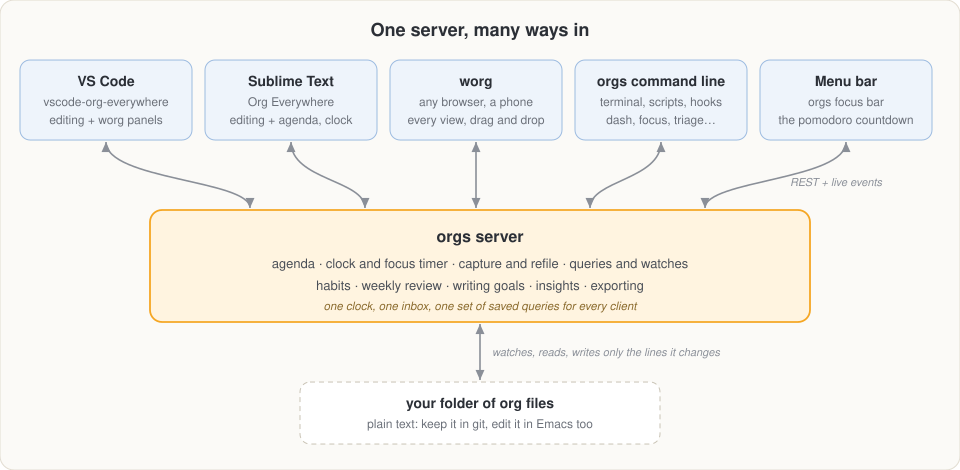
Every client talks to the one server, so they share one clock, one inbox, one set of saved queries and one focus timer. Clock in from your editor and the clock is running in worg and at the command line; tick a task off on your phone and your editor's agenda shows it done.
- VS Code: vscode-org-everywhere (Org Everywhere). Org mode editing (folding, TODO keywords, tables, links, dates) works on its own. With an orgs server it adds the agenda and the clock in the side bar, clocking in on the heading under the cursor, a focus timer in the status bar that clocks in through the server, capture through the server's templates, refile and archive, table formulas, running code and exporting. Every worg view (kanban, gantt, clock report, search…) opens as an editor panel, and a heading picked in one opens in the editor.
- Sublime Text: Org Everywhere. A fork of OrgExtended where editing stays in the plugin and everything that spans files (the agenda, clocking, capture, refile and archive, ids and backlinks, search, exporting) is done by orgs. Org: Set Up a Local orgs Server downloads orgs and runs it on your folder of notes; Org: orgs Open Web UI opens worg on one of its views.
- worg, the web front end the server hands out at
/: every view, in any browser, including a phone's. See worg, in pictures. - The
orgscommand line: the same views at a prompt, for scripts, git hooks and ssh. See The command line, in pictures.
The stories show them working together over a whole week: an engineer at the command line and in worg, and a writer working on a book.
Plans
- Mu4E style imap email synchronization and exposure of your emails as part of your org repository.
The command line, in pictures
What this is
A tour of the orgs command line: one picture per command worth seeing,
and the line that draws it. Every command talks to a running orgs serve
(or runs one in-process for itself with -local), so they all see the same
notes, and anything changed in one shows up in the others and in worg.
The pictures are of a small demo notebook kept in docs/screenshots/demo;
tools/screenshots takes them again (see Taking the pictures again).
Every command also takes -json, -format, -dry-run and -no-color,
so what is drawn here for a person can be read by a program instead.
The day at a glance: orgs dash
One screen that answers "what does today want from me": the agenda, the
clock, the focus timer, the habits, the inbox and your watches, read
together. It only reads; each card names the command that acts on it.
orgs dash -w keeps it on screen, redrawn as things change, and
orgs dash -json gives every card as data.
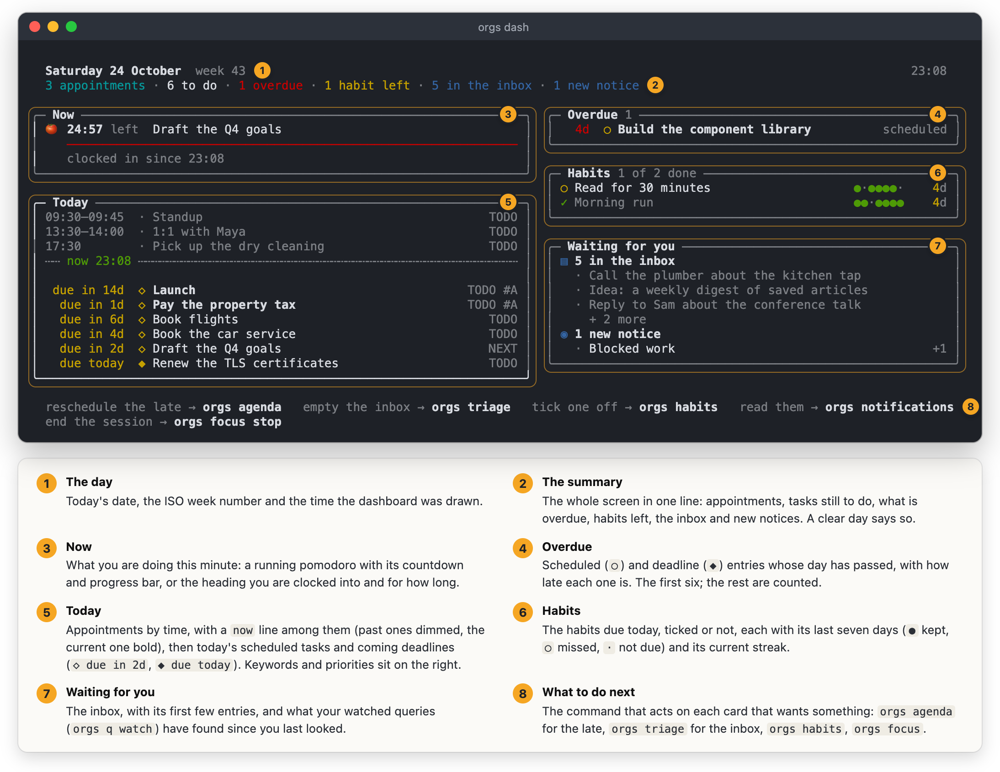
A card whose part of the server is missing or broken says so in one dim line, and the others still draw.
The morning standup: orgs standup
What you did since the last working day (Friday, on a Monday), what is on
today and what is in the way, written in Slack's markup so it can be pasted
straight into a channel. -copy puts it on the clipboard as well, -md
writes GitHub Markdown instead, -since mon starts from a day of your
choosing and -n caps each section (the rest are counted).
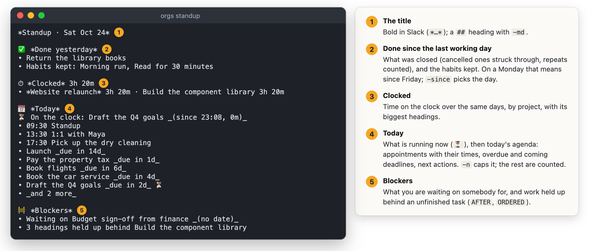
Every part is read by the view it comes from (the agenda, the clock table, the weekly review's waiting list, the dependency check), so a standup never says something the agenda would contradict.
The week in review: orgs recap
A week or a month on one page: what was finished, where the time went, how
the habits held up, words written and what is still blocked. Like
orgs standup it is Slack's markup unless you ask for -md.
orgs recap # the last seven days
orgs recap -last -week # last week, Monday to Sunday
orgs recap -month # this month so far
orgs recap -from 2026-10-01 -to 2026-10-15
orgs recap -block 2026-Q3 -md # a clock table range, as Markdown
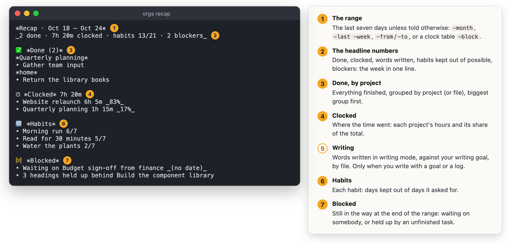
The agenda: orgs agenda
Three months of calendar, today's entries, and the week underneath. , and
. step a day, n comes back to today, t changes the keyword of the
entry under the cursor, m opens the month.
Planning the day: orgs plan
The day as hours: what is booked, what is free, and the tasks waiting for a slot, most urgent first. It is the agenda's day planner in worg, at a prompt.

One screen for everything: orgs tui
A query's results in a list, with the heading's body beside it. : changes
the query, / filters what is there, t changes a keyword, enter opens the
heading in your editor.

Asking questions: orgs search
The same query language worg's Search tab uses. Plain words match headlines; an expression can ask anything the database knows.
orgs search 'IsTask() && HasTags("work")'
orgs search 'DeadlineWithin("7d")' -json | jq '.[].Headline'

Boards: orgs kanban
worg's kanban boards, the same boards, editable from the terminal. H and
L move a card between columns (which changes its keyword), J and K
reorder it, t picks a keyword, c clocks in.

Schedules: orgs gantt
A saved query drawn as a gantt chart, the same plan worg draws: EFFORT
sizes a bar, AFTER and ORDERED chain them, weekends are skipped, and
-crit marks the critical path.

Column view: orgs cols
org's column view of a file, from its #+COLUMNS: line. Parents total the
columns that ask for it (%EFFORT{:}), enter edits a value in place, s
sorts within each parent.

Habits: orgs habits
Every habit's last month at a glance: █ kept, ░ missed, · not due.
orgs habits done <name> ticks one off.

Tables: orgs tables
Every org table in your notes, in a picker with the table drawn beside it.
ctrl-e runs its #+TBLFM formulas.

The weekly review: orgs review
Everything that wants a decision: projects with nothing to do next, deadlines
nobody scheduled, things waiting on somebody else, time booked against open
tasks. orgs review -fix walks them one at a time.

Flashcards: orgs drill
Spaced repetition over your notes, org-drill style: the same cards, the same
algorithms, the same DRILL_* properties. See Flashcards for how to write
cards.

What is in there: orgs stats

Finding your way: orgs help
Everything the command line can do is described by the binary itself, so the help always matches the version you are running. It needs no server.
| You type | You get |
|---|---|
orgs help |
every command, grouped by what it is for, in the order worth reading |
orgs help standup |
one command: what it does, its flags, examples and what the guides say |
orgs help stand |
no such command, so the names it might have meant (standup) |
orgs help -all |
every command with every flag, one after another, for searching |
orgs help -json |
the command list as a table (name, group, usage), for a script |
orgs help -man search |
a command's man page (roff); with no command, orgs(1) |
orgs help -man-dir DIR |
orgs.1 and an orgs-<command>.1 for every command, written into DIR |
orgs completion zsh |
tab completion for your shell |
A command's page reads top to bottom like this:
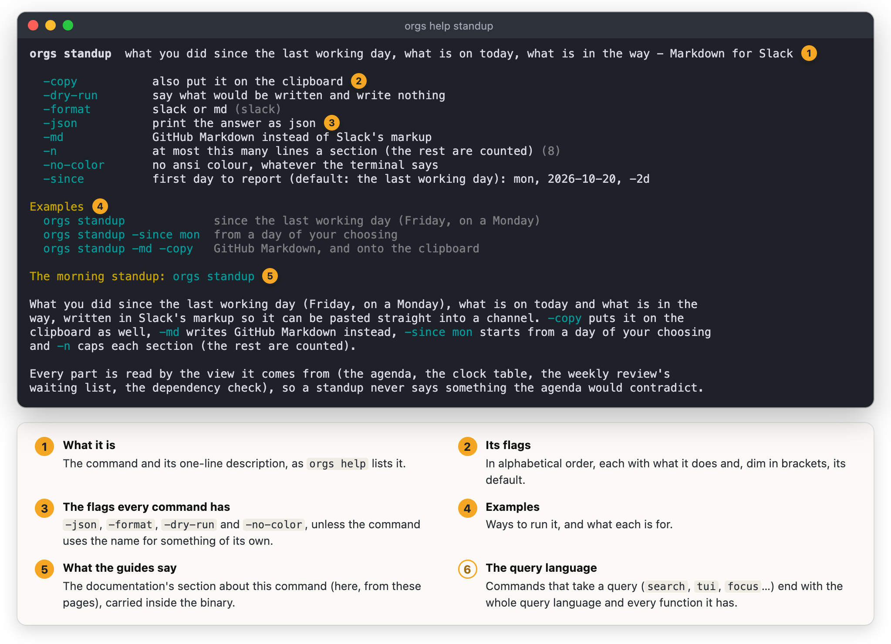
Some ways to use it:
# Which command has a flag for this?
orgs help -all | grep -B20 -- '-since' | grep '^orgs '
# Read a long page in a pager (search has the whole query language)
orgs help search | less -R
# Real man pages: write them once, then `man orgs-search`
orgs help -man-dir ~/.local/share/man/man1
# The list for a launcher or a wrapper script
orgs help -json | jq -r '.[] | "\(.Name)\t\(.Usage)"'
Commands you add yourself show up too: every filter in your yaml is a
command, listed under its own group (or "Other"). orgs p is the same list
as a fuzzy picker, together with your saved queries and aliases.
Taking the pictures again
The pictures are taken by a script, against a demo server with its own notes, so they can be taken again whenever a command changes:
cd tools/screenshots
npm install
node capture.mjs # every picture
node capture.mjs cli-kanban # just the ones named
node capture.mjs serve # just the demo server, to look around
The demo notes are in docs/screenshots/demo. Their dates are written as
{{D+3}} and filled in when the script runs, so the agenda is always about
today. Terminal pictures run each command in a pseudo terminal and draw the
screen with xterm.js; worg pictures drive Chrome with puppeteer.
An annotated picture (cli-dash) is a terminal picture with numbered badges
and a legend. Its notes find their parts by text on the screen (a card's top
edge, or a line), so the badges follow the layout, and a renamed card fails
the shot instead of putting a badge in the wrong place. These shots are taken
last, because they set the demo up first (a pomodoro, a ticked habit, a
watch that fires) and the other pictures shouldn't show that.
The stories' pictures live in tools/screenshots/stories/, one module a
story. Each brings its own notebook (docs/screenshots/<story>/) and runs on
a server of its own after the pictures above, so nothing one story sets up
shows in another. node capture.mjs -story writer takes just one story's.
worg, in pictures
What worg is
worg is the web front end built into the server: orgs serve hands it out at
/, so any browser that can reach the server (a phone included) has it. It
works on the same notes as the command line and the editor plugins; a change
made in one is in the others a second later.
It has a light and a dark look, picked with the moon in the top corner.

The pictures here are of the demo notebook in docs/screenshots/demo, taken
by tools/screenshots (see Taking the pictures again in the command line tour).
Agenda
The day as a planner: habits at the top, the hours of the day with what is booked into them, and the tasks still to place down the side, most urgent first. Drag a task onto an hour to schedule it. Week and Month show the wider view; the calendars mark days with something on them.
Search
The query language in a form: an expression, a regular expression over the text, and filters by keyword, tag and property. Rows can be edited where they are; Inspect opens a heading's dates, drawers and body beside the table.

Files
Every org file, read rendered or as org, and edited in place. Drawers fold, links follow, and the Links panel shows what points at the file and what it points at.
Pictures a file links to are drawn under their links in the Org view and in
the editor, as Emacs does with org-display-inline-images. The picture
button on the toolbar (Images on the editor's status line) shows or hides
them all; an eye at the end of a link's line, there when the pointer is,
shows or hides that one. Click a picture to see it full size.

Kanban
Boards built from a saved query, one column per keyword (or per tag or property value). Dragging a card to another column changes the heading in its file.

Gantt Chart
A saved query as a schedule: EFFORT sizes the bars, AFTER and ORDERED
chain them, today is the red line. Bars can be dragged to reschedule,
coloured by state, person or any property, and split into lanes.

Column View
org's column view of a file, from its #+COLUMNS: line, with totals on each
parent. Any cell can be edited in place.

Tables
Every org table, opened as a spreadsheet. Formulas (#+TBLFM) are shown and
recalculated, cells are edited in place, and a selection can be charted.
See Tables for the formula language.

Mind Map
A saved query drawn as a map, coloured by branch, keyword or tag, and exported as an image.

Contacts
Headings with a RECORD property, as an address book: upcoming birthdays at
the top, a vCard import, and each contact's fields and notes beside the
list. See Records.

Flashcards
Spaced repetition over your notes, org-drill compatible. A deck is a query; clozes hide part of a line until you ask for the answer. See Flashcards.

Weekly Review
GTD's weekly review as steps: empty the inbox one item at a time (refile, schedule, tag, archive, done), then the projects with no next action, what is waiting on others, last week's time and the stale scheduled items.

Code
Every source block in your notes, by language, with syntax colouring; a block can be run and its results written back under it.

Commands
Dnd
The dnd command is the client side of the D&D character module. It talks to
the server over the /dnd/* REST API, so the rules, the ruleset modules and
the character sheet renderers all live on the server.
orgs dnd new # guided character creation
orgs dnd new -level 3 -name Lyra # with a head start
orgs dnd random -level 5 -out npc.org # roll a whole character
orgs dnd list classes # browse a ruleset
orgs dnd info -kind class -id wizard # read one entry in full
orgs dnd characters # every sheet the server knows about
orgs dnd show -file lyra.org # print a sheet in the terminal
orgs dnd sheet -file lyra.org -format pdf -out lyra.pdf
orgs dnd levelup -file lyra.org # take the level you just earned
orgs dnd refresh -file lyra.org # recompute after hand editing
orgs dnd rulesets # what content is loaded
orgs dnd import -ddb 12345678 # bring a character over from d&d beyond
orgs dnd new walks you through creation the way a character builder does:
every prompt lists the valid choices with a one line summary, marks the ones
that suit your class with a star, and lets you ask for the full rules text,
roll the choice randomly, or step back to change your mind.
On a wide enough terminal the chooser is drawn in two panes: the list on the left, and the full rules text of whatever the cursor is on - the spell, item, feat or feature - on the right, so you can read before you commit. When a question takes several answers the header keeps a running count of what you have ticked ("selected 1 of 2") along with their names, and if you confirm the wrong number the list comes back with your picks still selected so you only have to correct them.
Long lists are filtered by typing. The match is fuzzy on the name of an
option, so eldbl finds Eldritch Blast, and a plain word also matches the
summary beside it, so fire finds the spells that only mention it. The
filter is editable: backspace takes a character off and the list widens
again, ctrl+w takes a word, and escape clears it. The count beside the
question says how much of the list you are looking at.
Importing from D&D Beyond
orgs dnd import converts a character you already have on D&D Beyond into an
org character sheet, the same sheet orgs dnd new writes.
orgs dnd import -ddb https://www.dndbeyond.com/characters/12345678
orgs dnd import -ddb 12345678 -out characters/lyra.org -force
orgs dnd import -ddb 12345678 -preview # convert and print, write nothing
orgs dnd import -json saved.json # from a payload you saved yourself
orgs dnd import -forget # clear the saved session cookie
D&D Beyond has no login api, so a character whose privacy is set to public
imports with no credential at all, and a private one asks for the
CobaltSession cookie your browser is already holding - the prompt says where
to find it. The cookie is traded for a short lived token by D&D Beyond's own
auth service and can be kept in your system keyring so you are only asked
once; it is never sent to your orgs server, which only ever sees the
character json. -cookie and the ORGS_DDB_COBALT environment variable pass
it in without a prompt for scripting.
Everything is matched onto your ruleset by name, and anything that does not match - a subclass from a book the srd does not carry, a homebrew item - is still written onto the sheet under its own name and listed afterwards as something to check, so nothing is quietly dropped. Importing over a sheet that is already there keeps that sheet's identity and its inventory history, which D&D Beyond has no equivalent of.
The appearance questions - age, height, weight, eyes, skin and hair - come with suggestions drawn from your race and your class, so a hill dwarf druid is offered warm hazel eyes and leaf tangled hair, and a tiefling warlock is offered eyes that are a solid orb of colour. You can still type your own, but it has to make sense: heights and weights are read in either imperial or metric and have to land somewhere your race could plausibly be, and a colour has to be a word rather than a number.
Drill
orgs drill drills a deck of flashcards at the command line: the decks of
worg's Flashcards tab, the same cards, the same scheduling. Ratings are
written by the server into the cards' DRILL_* properties, org-drill's
way, so a deck can be drilled here, in worg and with Emacs' org-drill by
turns. The user guide is docs/drill.org.
orgs drill # pick a deck, drill it
orgs drill Spanish # a deck by name (or the start of one)
orgs drill Spanish -cram # everything not seen in 12 hours; nothing rescheduled
orgs drill -q 'HasTags("drill")' # any query, without saving a deck
orgs drill Spanish -max 10 -minutes 5 # a shorter session than the deck's
orgs drill -resume # carry on where q left off
orgs drill ls # the decks and what each has due
orgs drill stats Spanish # one deck at a glance
orgs drill cards Spanish # every card: status, next review, ease, failures
ls, stats and cards take -json and -format for scripts; drilling
needs a person at a terminal.
The screen
Across the top is org-drill's prompt line: the time so far, the card's
status letter (N new, Y young, o old, ! overdue, F failed, C
cram) and how many are done, failed, mature and new. Under it, a rule shows
how far through the session's limit you are.
The card is drawn the way orgs pres draws a slide: tables, source blocks
and pictures as they are written, in a slide theme's colours (-theme).
Hidden clozes show as [...] or [hint...]; in the answer they are bold.
| Key | Question | Answer |
|---|---|---|
| space, any | show the answer | |
0 - 5 |
rate it; each button says when the card comes back | |
e |
edit the card in $EDITOR |
edit the card |
s |
skip it | |
? |
what the ratings mean | |
| ↑ ↓ PgUp PgDn | scroll a tall card | scroll |
q, esc |
stop | stop |
A failed card comes back later in the session until you pass it. At the end you get org-drill's report, and its warning if too much was failed; k keeps going on what is left.
q saves where you were, and orgs drill -resume carries on - reading the
cards again, in case you edited them. Editing a card with e reads it again
when the editor closes, so the card asked is the card as it now reads.
A deck that asks for typed answers (in worg's deck settings) has a line to type into before the answer is shown, and your answer is shown beside it.
Flashcards — drilling your notes, org-drill style
What it is
worg's Flashcards tab is spaced repetition over your org files. Any heading can be a card: its body is the question and its child headings are the answer. You rate how well you remembered it, from 0 to 5, and the card is scheduled again: soon if it was hard, much later if it was easy.
The tab follows Emacs org-drill closely.
It uses the same card types, the same [cloze] syntax, the SM5, SM2 and
Simple8 algorithms with the same constants, the same DRILL_* properties
written the same way, and the same session rules. A card can be drilled here
on Monday and with M-x org-drill on Tuesday, and each picks up where the
other left off.
The difference is how cards are chosen. org-drill uses every heading tagged
:drill:. Here, a deck is a query of your own, so you can keep as many
decks as you like, spread across the same notes:
| Deck | Query |
|---|---|
| Spanish | HasTags("spanish") |
| Chemistry | HasTags("chem") && IsInFile("school.org") |
| Drill | HasTags("drill") (org-drill's own cards) |
| Hard ones | a saved search, edited in the Saved Queries tab |
The same decks drill in a terminal with orgs drill:
Making cards
A simple card
* What is the capital of France? :geography:
** Answer
ParisThe question is the heading and its body. The child headings (here, Answer) are folded while you think and opened when you ask for the answer.
Clozes
Square brackets hide part of the text. Two bars add a hint.
* Spain :geography:
The capital of Spain is [Madrid||starts with M], on the [Manzanares].In the question this reads "The capital of Spain is [starts with M…], on the […]". The answer shows both words, highlighted.
A cloze must fit on one line. Checkboxes ([X]), progress cookies
([1/3], [50%]), dates ([2026-10-01 Thu]), footnote references
([fn:1]), links and code are never treated as clozes. org-drill does
hide those; that is the one place this deliberately differs.
Card types
Set a type with the DRILL_CARD_TYPE property. It is inherited, so putting
it on a parent heading sets the type for every card below it.
| Type | What is asked |
|---|---|
simple (the default) |
the body, with every cloze hidden |
twosided |
one of the first two child headings is shown and the other is asked |
multisided |
one child heading, chosen at random, is shown and the rest are asked |
hide1cloze, multicloze |
one cloze is hidden at random and the others are shown |
hide2cloze |
two clozes are hidden |
show1cloze, show2cloze |
one or two clozes are shown and the rest are hidden |
hidefirst, hidelast |
only the first cloze, or only the last, is hidden |
hide1_firstmore |
usually the first cloze is hidden; every fourth review, another one |
show1_lastmore |
usually only the last cloze is shown |
show1_firstless |
usually one cloze other than the first is shown |
conjugate |
built from VERB_INFINITIVE, VERB_TRANSLATION, VERB_TENSE, VERB_MOOD |
decline_noun |
built from NOUN, NOUN_GENDER, NOUN_TRANSLATION, DECLINE_DEFINITE, DECLINE_PLURAL |
spanish_verb |
children named Infinitive and English, asked in a given tense |
A two-sided card:
** Dog :spanish:
:PROPERTIES:
:DRILL_CARD_TYPE: twosided
:END:
*** English
dog
*** Spanish
el perroWhich headings are cards
- A heading the query finds is a card.
- A heading found underneath a card belongs to that card, as an answer or a side. Tags are inherited in queries, so this is what happens to a card's children.
- A found heading with no text of its own, with found headings below it,
only groups them. With
* Vocabulary :spanish:over twenty words, the words are the cards and Vocabulary is not. - A card with nothing to ask (no body, and not a
twosidedormultisidedcard) and a card with an unknown type are left out. The deck lists them under "left out", as org-drill reports them.
More
:DRILL_CARD_WEIGHT: 2makes a card come round about twice as often.- A heading tagged
:explain:above some cards adds its text to their answers. - A child heading that has been drilled as a card in its own right stays folded in its parent's answer.
- A card failed more times than the deck's leech threshold (15) is tagged
leech. By default a deck then skips it: a card you keep failing needs rewriting, not more drilling.
Decks
+ in the deck list makes a deck. A deck has:
- a name and an optional description;
- the query that picks its cards, or the name of a saved search. With a saved search, editing that search changes the deck. Check the query counts the cards before you save;
-
the algorithm:
SM5(the default) learns how quickly you forget, and keeps what it learns per person, not per deck;SM2is the classic one day, six days, then multiplying by the card's ease;Simple8works from your average rating alone;
- org-drill's settings, each defaulting to org-drill's own value:
| Setting | Default | Meaning |
|---|---|---|
| Cards per session | 30 | stop once this many have been passed (-1: no limit) |
| Minutes per session | 20 | stop after this long (-1: no limit) |
| Failure quality | 2 | a rating at or below this is a failure |
| Learn fraction | 0.5 | how fast intervals grow; lower means more reviews |
| Leech after failures | 15 | when a card becomes a leech |
| Leeches | skip | skip them, ask with a warning, or ask as usual |
| Days before old | 10 | a longer interval counts the card as old rather than young |
| Overdue factor | 1.2 | how late, relative to the interval, counts as overdue |
| Forgetting index | 10 | warn when more than this % of a session was failed |
| Cram hours | 12 | cram asks what has not been seen in this many hours |
| Spread reviews out | off | a little randomness on every interval |
| Forget very overdue cards | off | a card over 90 days overdue is treated as forgotten |
| Hide headings | off | for cards whose heading gives the answer away |
| Type the answer | off | type before you look; your answer is shown beside the real one |
| Clozes show their length | off | [......] with one dot per hidden letter |
Decks are kept per user, beside the server's configuration (in
orgs_extensions.yaml), with your saved searches and kanban boards. A deck
holds no cards: the cards and their history stay in your files.
Each deck shows how many cards are due now, new, failed, overdue, young, old, not yet due, and due tomorrow. Browse lists every card with its status, next review, ease and failures, and a button to open the card in its file.
Drilling
Drill starts a session.
The line above the card shows:
- the time so far;
- the card's status letter:
Nnew,Yyoung,oold,!overdue,Ffailed,Ccram; - four counts: cards done, failed, mature (young, old and overdue) and new still waiting.
| Key | Question | Answer |
|---|---|---|
| any key, ⏎ | show the answer | |
0-5 |
rate it | |
e |
edit the card in its file | edit the card |
s |
skip it (nothing is saved) | |
? |
what the ratings mean | |
q, esc |
stop | stop |
The ratings:
| Rating | Meaning |
|---|---|
| 0 | Completely forgot. |
| 1 | Even after seeing the answer, it still took a bit to sink in. |
| 2 | After seeing the answer, you remembered it. |
| 3 | It took you awhile, but you finally remembered. |
| 4 | After a little bit of thought you remembered. |
| 5 | You remembered the item really easily. |
Each button shows when the card would come back after that rating.
- 0-2 is a failure. The card comes back later in the same session, and keeps coming back until you pass it. Its schedule is taken off, so it starts the next session as failed.
- 3-5 is a pass, scheduled further away the easier it was.
The order cards come in
Cards are asked in org-drill's order:
- those failed last time;
- overdue ones, most overdue first;
- young ones;
- new and old ones mixed together, in proportion to how many of each are waiting;
- last, the cards failed during this session. These keep coming even after a limit is reached, because a failed card must be passed before you stop.
Stopping, resuming, and the report
- q stops. Every rating you gave is already in your files. The session waits in the deck list as Resume session. Editing a card with e leaves it waiting the same way.
-
When the cards run out or a limit is reached, the report shows:
- how many cards you reviewed, and for how long;
- how your ratings divided up;
- what share you recalled;
- what is still waiting, and how many cards fall due tomorrow.
- If you failed more than the forgetting index allows, a warning follows, as org-drill gives one.
- Keep going starts again on the cards still waiting, with a fresh clock.
Cram
Cram asks every card not seen in the last 12 hours, with no limits, and writes nothing: no ratings, no schedules. It is for the night before an exam, not for remembering.
At the command line
orgs drill drills the same decks in a terminal, with the same rules and
the same writes. It reads your deck list from the server.
orgs drill # pick a deck
orgs drill Spanish # or name it
orgs drill Spanish -cram
orgs drill -q 'HasTags("drill")' # a query, without saving a deck
orgs drill -resume # after q
orgs drill ls # what each deck has due
orgs drill cards Spanish # the Browse table
The keys are the tab's: any key shows the answer, 0-5 rates it, e
edits the card in $EDITOR, s skips, ? explains the ratings, q
stops. Cards are drawn like slides in orgs pres, so a table, code or a
picture on a card shows as it is written; -theme picks the colours.
A session stopped with q can be picked up with orgs drill -resume, the
terminal's equivalent of org-drill-resume.
What is written to a card
After each rating the card's own lines change, and nothing else in the file:
** Capital :spanish:
SCHEDULED: <2026-10-05 Mon>
:PROPERTIES:
:DRILL_LAST_INTERVAL: 4.0
:DRILL_REPEATS_SINCE_FAIL: 2
:DRILL_TOTAL_REPEATS: 1
:DRILL_FAILURE_COUNT: 0
:DRILL_AVERAGE_QUALITY: 4.0
:DRILL_EASE: 2.5
:DRILL_LAST_QUALITY: 4
:DRILL_LAST_REVIEWED: [2026-10-01 Thu 23:04]
:END:
These are org-drill's properties, written in its spellings: 4.0, not 4.
An old LEARN_DATA property is read and replaced. A failure takes
SCHEDULED off. A card that becomes a leech gets the leech tag.
Differences from org-drill
- Cards come from a query, not the
:drill:tag. UseHasTags("drill")to drill org-drill's own cards. - Brackets that are not clozes are left alone: checkboxes, cookies, dates and footnotes (see Clozes).
- The SM5 matrix is stored with each ease rounded to three places. org-drill stores it with a float that never matches the value read back from the property, so its SM5 rarely learns. The matrix is saved after every rating rather than only at the end of a session.
- Spreading reviews out is repeatable within a day, so the interval a button promises is the one it writes.
- org-drill also writes an
IDon every card it scans. This does not. t(edit tags) during a drill is not offered; useeto edit the card.- Typed answers are shown beside the real one for you to judge, as in org-drill; they are not marked.
The API
GET /drill/cards?deck=NAMEreturns a deck's cards, drawn as html, with their status and the interval each rating would give.POST /drill/reviewrecords one rating.GETandPOST /ext/drill/decksread and replace the deck list.
The full API reference documents each one.
Pres
orgs pres gives an org file as a slideshow in the terminal: the deck worg's
Presentations tab shows through reveal.js, drawn in box characters, colour and
half-block pictures, for the talk given over ssh, in tmux beside the code, or
from a laptop with no browser worth trusting on the projector.
orgs pres talk.org # present it
orgs pres talk.org -presenter # in a second terminal: notes, next slide, time
orgs pres talk.org -theme linen # any slide theme; builtin and term too
orgs pres talk.org -at 12 # start on slide 12
orgs pres talk.org -print | less -R # every slide, every step, printed
orgs pres talk.org -json # the outline, for a program
orgs pres -list-themesA name that is not a path is looked for in the configured org directories, and no server is needed: the file is read where you are.
The deck
The same rules as the html presentation exporters, because it is the same code deciding them:
#+SLIDE_LEVEL: 2makes level-2 headlines the slides and level-1 headlines the sections; a section with nothing of its own is drawn as a divider in large type. Without it every headline is a slide.#+TITLE:,#+SUBTITLE:,#+AUTHOR:,#+DATE:and anything written above the first headline make the title page.- Speaker notes - a
:NOTES:drawer, a#+begin_notesblock, or a child heading called Notes - never reach the slide. :noexport:or:noslide:leaves a heading out.:FRAGMENT: ton a slide reveals its top-level list one item at a time;#+ATTR_SLIDE: :fragabove any element makes that element a step.:BACKGROUND: #f4efe4colours one slide, and its text turns light or dark to suit, as in the browser.:ALIGN: centercentres a slide;:TRANSITION: fadechanges how it arrives.
Settings are read with the presentation ladder: a slide's :TERM_FOO:, its
:SLIDE_FOO:, its :FOO:, then the document's #+TERM_FOO: and
#+SLIDE_FOO:. The TERM_ forms are for this renderer only.
| Setting | Meaning | Default |
|---|---|---|
#+SLIDE_THEME: |
palette, from templates/slides_theme_*.css |
built in |
#+TERM_TRANSITION: |
slide, fade or none |
slide |
#+TERM_WIDTH: |
widest a column of text gets | 88 |
#+TERM_FOOTER: nil |
no footer or progress rule | shown |
A theme is the same file the html decks use: its --slide-bg, --slide-ink,
--slide-accent and the rest become the terminal's colours, and its
@hljs: style picks the nearest code colouring. term uses the terminal's
own colours, for transparent terminals.
What is drawn
Paragraphs with bold, italic, underline, strike, code, links, sub- and
superscripts (H2O as H₂O) and smart dashes; lists with checkboxes;
tables in a rounded box with columns of numbers right-aligned; source blocks
coloured by language, with line numbers for -n; quotes, verse, centred
text, special blocks (#+begin_tip) as labelled cards; footnotes at the foot
of their slide; and pictures (png, jpeg, gif) in half blocks, with their
#+CAPTION:. An svg or a web image is drawn as a labelled frame.
A slide too tall for the terminal gives up its blank lines first, then scrolls with the arrow keys; a marker says there is more.
Keys
| Key | Does |
|---|---|
| → space l PgDn ⏎ | next step, or next slide |
| ← h PgUp ⌫ | back |
| N P | next or previous slide, skipping steps |
| ↓ ↑ j k | scroll a slide too tall for the screen |
| g G | first or last slide |
| 12 then ⏎ | slide 12 |
| o tab | every slide, to pick from |
| n | speaker notes under the slide |
| t r | show the timer, restart it |
| f | footer and progress rule |
| T | next theme |
| b . | black screen |
| e | edit this slide in $EDITOR |
| R | reload now |
| ? q | keys, quit |
The file is reloaded whenever it is saved, keeping your place, so a deck can be written in one window and watched in another.
Presenting with two windows
orgs pres talk.org -presenter in a second terminal shows the speaker's
view: this slide's notes, the step you are on, what comes next, the time
since you started and the clock. The two windows follow each other, and
either can drive.
Snip
orgs snip keeps the command lines worth keeping - and finds the ones you
wrote down and forgot - in your org files. It does what pet
does, with org source blocks for snippets: a heading says what the command
does, its tags file it, the block is the command. Every shell block in your
notes is a snippet, so a command written into a project's notes months ago
turns up beside the ones saved on purpose.
orgs snip # find one, fill in its parameters, run it
orgs snip docker logs # start the search on those words
orgs snip print [words] # print it instead (what the shell key uses)
orgs snip copy [words] # put it on the clipboard
orgs snip run backup -set dest=/mnt -y # no questions: for scripts and cron
orgs snip new 'rsync -av <src> <dest=/backup>' # save one
orgs snip ls -t docker # list, by tag (comma separated: any of them)
orgs snip show [words] # what it is and what it asks for
orgs snip edit [words] # open it where it is written
orgs snip shell zsh # the ctrl-s key and snip-prevA snippet
* Docker :docker:
** Tail a container's logs
#+begin_src bash
docker logs -f --tail <lines=100> <container=web>
#+end_src
Any sh, bash, zsh or fish block is a snippet (-all takes every
language). Its title is its heading, plus its #+NAME: when it has one; its
tags are its heading's and the ones it inherits. A :dir header argument is
where it runs. Its last #+RESULTS: is shown beside it.
Parameters
| Written | Means |
|---|---|
<name> |
a value to fill in |
<name=default> |
with a default (an = in it is fine) |
<flags?> |
optional: left empty, it is left out |
\<b> |
a literal <b>, not a parameter |
:var host"db.internal"= |
babel's way: a parameter where the body says $host |
:var env'("dev" "prod")= |
babel's way, with choices |
A choice is written as pet writes it, and the first is the default:
kubectl -n <ns=|_dev_||_staging_||_prod_|> get pods
The :var form keeps the block runnable with C-c C-c in Emacs. A name
used twice is one parameter.
Values are quoted for the shell as much as where they land needs: inside the
command's own quotes they are escaped for those quotes; elsewhere a value is
single-quoted only if it has a space or something the shell would act on.
A glob or a $VAR in a value is left alone, because that is somebody asking
for one.
The form
With parameters to fill in, a form shows the finished command - redrawn as
you type, values in colour - above a field for each one, defaults already
in. Tab and shift-tab move between fields, ↑ ↓ cycle a choice,
ctrl-u clears, enter runs (or prints, or copies), esc cancels and runs
nothing. -set name=value fills one in without asking.
A snippet with no parameters is shown and asked about before it runs;
-y skips the question. Commands run here, in your shell - never on the
server.
The picker
Snippets you used recently come first. The pane shows the command coloured, its parameters and defaults, where it runs and what it last printed. enter does what the command was asked to do; ctrl-p prints, ctrl-y copies, ctrl-e edits, ctrl-/ hides the pane.
Saving one
orgs snip new 'du -ah <dir=.> | sort -rh | head -n <count=20>' # asks what it does, and tags
orgs snip new -d 'Find big files' -t disk,find 'du -ah ...' # asks nothing
pbpaste | orgs snip new -d 'From the clipboard' # the command on stdin
orgs snip new # type it, several lines if need be
It is filed under "Snippets" in snippets.org in your first org directory,
through the server's built-in Snippet capture template - which is also in
worg's capture dialog and orgs cap. Define a capture template of your own
called Snippet to file them somewhere else. A command already saved is
refused (-force saves it again).
In your shell
eval "$(orgs snip shell zsh)" # in ~/.zshrc
eval "$(orgs snip shell bash)" # in ~/.bashrc
orgs snip shell fish | source # in config.fish
ctrl-s opens the picker on what you have typed so far and puts the chosen
command, filled in, on your command line - to edit, run, and keep in your
history like anything you typed. ORGS_SNIP_KEY picks another key.
snip-prev saves the command you just ran (snip-prev -d 'what' -t tags).
Configuration
The command line and a server on this machine: no login
A token is only the server's keys applied to a user name, so a command line
that has read the server's own configuration - orgJWS, orgJWE and
orgSalt - can make one itself rather than ask for a password. It does when
it has no token of its own that is still good and url: is on this machine
(localhost, 127.0.0.1, ::1).
This is how the server VS Code sets up is used from a terminal: its binary
reads the orgs.yaml beside it, which is that server's, so orgs agenda just
works. Anybody who can read that file could make tokens anyway - it is the
password file's equal, and written readable by its owner only.
DnD
The Dungeons & Dragons Module
Introduction
The dnd module turns orgs into a character builder and character sheet renderer. It gives you:
- A guided character creation flow over REST, where the server offers the valid choices at every step with the summary and rules text for each one.
- Characters stored as ordinary, hand editable org files.
- A rules engine that derives everything else: modifiers, saving throws, skills, armour class, attacks, hit dice, spell slots, save DCs, carrying capacity and the collected feature text.
- Two character sheet renderers, an html sheet for the screen and a latex sheet that compiles to a printable pdf.
- An add on system: races, classes, subclasses, backgrounds, items, spells and whole rulesets are yaml files you can drop into a folder.
The bundled rules are the SRD 5.1, published by Wizards of the Coast under the Creative Commons Attribution 4.0 licence.
Setup
Enable the exporters you want in your orgs.yaml, and point the module at
any folders holding your own content:
server:
exporters:
- name: "dndsheet" # html character sheet
- name: "dndlatex" # .tex character sheet
- name: "dndpdf" # pdf, needs pdflatex on the server
props:
pdflatex: "/Library/TeX/texbin/pdflatex"
dndPaths:
- "/Users/me/dnd/homebrew"
The REST API and the interactive builder work without any configuration at
all: the SRD data is compiled into the binary, and templates/dnd plus
~/.orgs/dnd are searched for add on modules by default. Only the
exporters need enabling, because that is how every orgs exporter works.
The pdf exporter shells out to pdflatex. On a full TeX Live or MacTeX
install nothing else is needed: the sheet uses tikz, and picks up
ebgaramond and cinzel if they are installed, falling back to the
standard fonts if they are not.
Creating a character
orgs dnd new # the guided flow
orgs dnd new -level 3 -name Lyra -open # skip the first questions
orgs dnd random -level 5 -out npc.org # roll a complete characterEvery prompt lists the valid options with a one line summary. A star marks the ones that suit what you have already picked (races that boost your class's primary ability, skills keyed to your best scores). Each prompt also offers to show the full rules text for every option, to choose for you, or to step back and change an earlier answer.
Going back is safe. The server replays your remaining answers onto a fresh character, so switching class after picking skills cannot leave a stray proficiency behind.
The character file
A character is a normal org file. The property drawer of the top heading holds the state, and four sections are read back in: the equipment table, the spell tables, the inventory history and the coin history. Everything else is regenerated whenever the sheet is written.
#+TITLE: Lyra Silverleaf
#+DND_ID: lyra-silverleaf-4c1f2a
#+DND_RULESET: srd
#+LATEX_CLASS: dndcharacter
#+LATEX_TEMPLATE: dnd_character.tpl
* Lyra Silverleaf :dnd:character:
,:PROPERTIES:
,:DND_ID: lyra-silverleaf-4c1f2a
,:DND_RACE: elf
,:DND_SUBRACE: high-elf
,:DND_CLASSES: wizard:evocation:3
,:DND_BACKGROUND: sage
,:DND_STR: 8
,:END:
DND_CLASSES is a comma separated list of class:subclass:level entries,
which is also how multiclassing is stored.
DND_ID is the character's identity. Every play session the character
appears in gets a heading carrying the same id, so one query gathers the
sheet and every night they played:
MatchProperty("DND_ID", "lyra-silverleaf-4c1f2a")
A sheet written before ids existed does not need editing: the id is derived
from the character's name until it is written down, so it is the same id
either way, and the next orgs dnd refresh stores it.
Because nothing derived is stored, levelling up is an edit and a refresh:
# change DND_CLASSES to wizard:evocation:4, then
orgs dnd refresh -file lyra.org
Hit points recompute, the proficiency bonus moves to +2, new spell slots
appear, the new class features are added and every skill row updates. Set
DND_HP_MAX to 0 first if you want the average hit point rule applied
rather than keeping your rolled total.
The character portrait
A sheet can carry a picture of the character. It is three more properties in the drawer:
,:DND_IMAGE: [[file:art/lyra.png]]
,:DND_IMAGE_FOCUS: 57% 29%
,:DND_IMAGE_ZOOM: 3.2
DND_IMAGE takes anything that names an image, so whichever form your
editor produced works:
[[file:art/lyra.png][Lyra]] |
a full org link, description and all |
[[./art/lyra.webp]] |
a bracket link with no link type |
<file:~/pics/lyra.gif> |
an angle link |
file:art/lyra.png |
a plain link |
art/lyra.apng |
a bare relative path |
https://example.com/lyra.avif |
a url |
data:image/png;base64,iVBO... |
an inline data uri |
A relative path is resolved next to the org file, the way emacs would resolve it. Any format a browser can show works, animated gif, webp and apng included. A local file is inlined into the exported html, so the sheet stays one self contained document you can mail to somebody.
The html sheet frames the picture in a round medallion and moves the character's name and experience onto the frame itself: the name curves around the top, the experience around the bottom, and the outer ring fills up as they climb toward the next level. The header beside it drops both, so nothing is said twice.
Cropping to a face
Portrait art is rarely framed for a circular medallion, so two properties choose the part of it to show:
DND_IMAGE_FOCUSis the point of the picture that lands in the middle of the medallion, written asx% y%from the top left corner. It defaults to50% 50%.DND_IMAGE_ZOOMis how far to magnify, so3.2shows a bit under a third of the picture. It defaults to1, which fits the whole picture to the medallion.
Together they crop a full body illustration down to a head: point the focus at the face and raise the zoom until the shoulders reach the rim.
The printed sheet honours both, but pdflatex is stricter than a browser - it only reads png, jpeg and pdf files from the local disk. A url or an animated gif is left out of the pdf and noted in the sheet warnings.
The sheet backdrop
The portrait is the character's face; the backdrop is the room they are standing in. It is a picture - or a pile of pictures - washed out behind the whole html sheet, and it is three more properties in the drawer:
,:DND_BACKDROP: [[file:art/tavern.jpg]], https://example.com/woods.png
,:DND_BACKDROP_CYCLE: 4m-12m
,:DND_BACKDROP_OPACITY: 18%
DND_BACKDROP takes the same references DND_IMAGE does, one or more of
them, separated by commas or by whitespace. A reference naming a folder
stands for every image in it, in name order, so a folder of scenery is one
property and dropping another picture into it is the whole of adding it:
,:DND_BACKDROP: ~/pics/druidA relative path resolves next to the org file, the way emacs would resolve it, and a local file is inlined into the exported html so the sheet stays one self contained document. That is worth remembering with a folder: nine photographs make a sheet a good deal larger than one, and a url is not inlined at all.
Cycling
With more than one backdrop the sheet changes picture on its own, picking
the next one at random - never the one already up - and crossfading to it.
How long a picture stays up is random too, so the sheet never falls into a
visible rhythm. DND_BACKDROP_CYCLE sets that dwell time:
8m |
eight minutes every time |
4m-12m |
a random time between four and twelve minutes |
45s |
forty five seconds |
10 |
a bare number is minutes |
off |
no cycling, the first backdrop simply stays |
Left out, a picture stays up for a random five to twenty five minutes. No wait is ever longer than twenty five minutes - a larger one is clamped down to it - and none is shorter than five seconds.
How washed out
DND_BACKDROP_OPACITY is how strongly the picture shows through, written
as 18% or 0.18, and it defaults to 14%. The backdrop is desaturated
a little on top of that, so a busy photograph still reads as a background.
It shows strongest across the header and in the gaps between the panels,
which sit on their own fill.
The panels holding the sheet's content - ability scores, saving throws, skills, combat and the rest - go translucent over a backdrop and show a little of it too, a bit less than the bare page does. They paint the picture themselves, pinned to the window the same way the page's backdrop is, so the piece of it inside a panel is the piece that would be behind it and the panels read as glass over the same scene. The stat boxes sitting on them stay solid, so every number has plain paper behind it.
The backdrop is a screen affair. Printing the sheet leaves it out, and so does the latex sheet - a page of toner spent on a picture nobody asked to print helps nobody.
Rendering a sheet
orgs dnd show -file lyra.org # in the terminal
orgs dnd sheet -file lyra.org -format html -out l.html
orgs dnd sheet -file lyra.org -format pdf -out l.pdf
A backdrop can also be given to the export itself, which paints that one
sheet and writes nothing into the character's org file. -backdrop takes a
file, a folder or a url and may be given more than once:
orgs dnd sheet -file lyra.org -backdrop ~/pics/druid -backdrop-cycle 4m-12m
orgs dnd sheet -file lyra.org -backdrop a.png -backdrop a.jpg -backdrop-opacity 20%
The same flags work on orgs dnd import, where they are written into the
sheet as it lands, so a character brought over from D&D Beyond arrives with
its scenery already on it:
orgs dnd import -ddb 12345678 -backdrop ~/pics/druid
Both sheets are pongo2 templates in your template folder,
dnd_character_html.tpl and dnd_character.tpl. They receive the whole
computed sheet as sheet, so restyling them needs no go code:
{% for s in sheet.skills %}{% if s.proficient %}*{% endif %} {{ s.name }} {{ s.mod }}
{% endfor %}Your armour class
The sheet works out the armour class the character has while wearing what they are actually wearing. Armour rules the answer:
- a suit of armour that is worn is the calculation - its own armour class plus dexterity as that armour allows it, all of it for light, at most +2 for medium, none for heavy,
- and while no armour is worn, it is 10 plus dexterity, or any unarmored
defence their classes grant if that is better: a barbarian's
10 + dex + con, a monk's10 + dex + wis.
An unarmored defence applies only while you wear no armour at all, which is what the rules say, and it is what makes the Worn column of the html sheet mean something: taking a jerkin off changes the number in the tile.
Where more than one calculation applies - two unarmored defences from a multiclass, say - the best of them is shown. A shield is counted into each of those before they are compared, not added to whichever won, because not every calculation allows one: a barbarian may carry a shield with their unarmored defence and a monk may not.
Armour can therefore lower a character's armour class: a barbarian in a
leather jerkin is worse off than the same barbarian bare armed. Rather than
quietly hand them the better number they are not entitled to, the sheet says
what they would have without it - Leather (18 without armor) - so what the
jerkin is costing is on the page rather than a surprise.
Anything that raises AC without being worn as armour - a ring of protection,
a cloak of protection - is added on top of whichever calculation won, and
the sheet names what it used: Leather + Shield +1 magic, or
Barbarian unarmored defense.
A class in an add on module declares its own defence with unarmoredAc, and
unarmoredShield: true if a shield may be carried with it:
classes:
- id: "stone-warden"
name: "Stone Warden"
unarmoredAc: "10+dex+str"
unarmoredShield: trueYour inventory
The equipment box on the html sheet is live. It stacks identical things into one line with a count, splits them between the containers you are carrying, weighs the lot and tells you whether you are encumbered - and every change is written straight back into the org character sheet.
- Add item opens a search across every item in your ruleset. The match is
fuzzy, the way the character builder's lists are:
pot healfinds a Potion of Healing andbkpkfinds a Backpack, and a hit says how many you already own. Anything the rules have never heard of is added under the name you type, so loot and homebrew need no module. - Use takes one off the stack, which is what a potion or a ration is for.
- Drop gets rid of some or all of a stack. Emptying out a container hands its contents back to you rather than losing them with the bag.
- Move puts things into a container - as long as you actually carry it.
Each container you own gets a tab of its own, beside On Person for what
you carry loose. Which items count as containers comes from the ruleset:
any item with container: true is one, and capacity is what it holds in
pounds. The standard containers of the SRD - backpack, pouch, sack, chest,
barrel, basket, bucket, quiver, and the bag of holding and handy haversack -
are known without any annotation.
A container marked extradimensional holds its contents somewhere else, so
what is inside it is not part of what you are carrying: a bag of holding
weighs fifteen pounds whether it is full or empty.
The line at the top of the box is the weight you carry against your carrying capacity, and where that lands on the encumbrance scale: encumbered over five times your Strength, heavily encumbered over ten times, and past carrying it altogether over fifteen.
How it is stored
Storage is one column on the equipment table, holding the container a line is kept in. Blank means you are carrying it yourself.
** Equipment
| Item | Qty | Equipped | Attuned | Weight | Container | Notes |
|-------------------+-----+----------+---------+--------+-----------+-------|
| Backpack | 1 | no | no | 5 | | |
| Potion of Healing | 3 | no | no | 0.5 | backpack | |It is deliberately flat: a pouch inside a backpack is a line stored in the backpack, and the pouch's own contents stay listed under the pouch.
Inventory history
Everything that comes and goes is written into an Inventory History
section of the character file, and shown on the Inventory tab of the
session drawer - it is part of your character sheet rather than of any one
night's session log, so it is there whether or not you are recording.
** Inventory History
| Date | Time | Action | Item | Qty | From | To | Notes |
|------------+-------+---------+-------------------+-----+----------+----------+-------|
| 2025-09-05 | 19:32 | added | Potion of Healing | 3 | | Backpack | |
| 2025-09-05 | 20:11 | used | Potion of Healing | 1 | Backpack | | |
| 2025-09-05 | 21:44 | moved | Potion of Healing | 1 | Backpack | Pouch | |Nothing is derived from the log, it is only read and written, so a line you correct by hand stays corrected.
Your money
The purse has a tab of its own beside the inventory. It shows every denomination you hold, what the lot is worth, and what it weighs - fifty coins of any kind weigh a pound - and every change is written straight back into the org character sheet, the same way the inventory is.
- Spend pays for something. Say the amount however you like:
15 gp,3 gp 4 sp, or a bare number, which is gold. What goes in the box beside it is what the money was for, and it is kept in the history. - Gain is the other direction, for a reward, a sold sword or a purse picked up off the floor.
- Change up rolls small coin into the largest denominations that hold the same value, which is what you do when the pouch gets heavy. Electrum is left alone: a purse that keeps turning gold into electrum is a nuisance.
- Exchange trades one coin for another at the standard rate, refusing a swap that will not come out even - three silver is not two electrum and change.
- Count purse says outright what is in it, for when the sheet has drifted from what is on the table.
The exchange is D&D's: a gold piece is 100 copper, 10 silver, 2 electrum, or a tenth of a platinum piece.
| Coin | In copper | In gold |
|---|---|---|
| Copper (cp) | 1 | 0.01 |
| Silver (sp) | 10 | 0.1 |
| Electrum (ep) | 50 | 0.5 |
| Gold (gp) | 100 | 1 |
| Platinum (pp) | 1000 | 10 |
Paying makes change, so what you can afford is what your purse is worth, not what denominations happen to be in it. A two copper candle bought out of a purse holding a single gold piece hands over the gold and takes back nine silver and eight copper; only a price your whole purse cannot cover is refused, and a refused payment leaves the purse exactly as it was.
Coin history
What has been spent and earned is written into a Coin History section of
the character file, beside the inventory history and read back the same way.
** Coin History
| Date | Time | Action | Amount | Change | Balance | Notes |
|------------+-------+--------+--------+-----------+-----------------+-------------------|
| 2025-09-05 | 19:32 | spent | 50 gp | | 42 gp 5 cp | potion of healing |
| 2025-09-05 | 20:11 | spent | 2 cp | 9 sp 8 cp | 41 gp 9 sp 8 cp | a candle |
| 2025-09-05 | 21:44 | gained | 3 gp | | 44 gp 9 sp 8 cp | reward |
Change is what came back when a coin too large had to be broken, and
Balance is what the purse held afterwards. Nothing is derived from the
log, so a line you correct by hand stays corrected.
The coins themselves live in the property drawer, as DND_CP through
DND_PP, which is where the sheet reads them from.
Casting a spell
Every spell on the html sheet has a Cast button, which does the whole
thing in one click:
- a spell that needs an attack roll rolls it, reporting the normal, the advantage and the disadvantage outcome from the same pair of d20s,
- a spell that does damage or healing rolls that too, with the critical total beside it when there was an attack to crit,
- a cantrip's damage is whatever it has grown to at your level - fire bolt rolls 2d10 from 5th, 3d10 from 11th,
- and a spell the target saves against says so in words ready to read out: "Dexterity saving throw against DC 15, half as much damage on a success".
A spell that rolls nothing at all - mage armor, say - still lands in the history saying what it costs and how long it lasts, so the tray is a record of what was cast, not only of what was rolled.
Casts are marked with a star in the roll tray so a spell is told apart from a die roll at a glance. The mark is the panel's; a cast written into a session log is plain text like every other row, with the spell's name, what it rolled, and the salient details - what it hit on, what it would have done on a critical, and what the target still has to roll - in the notes.
What a spell does when it is cast comes from the ruleset where it says so
(attack, save and damage are fields on a spell) and from the spell's
own text where it does not, so homebrew spells that read like the SRD's
cast correctly without being annotated.
Spell slots
Casting a spell of 1st level or higher costs a slot, and the sheet strikes
one off as it rolls the spell: the row of boxes at the top of the spell tab
fills in, the card in the roll tray says what the cast cost, and the count
is written to the character file in the DND_SLOTS_USED property - one
number per spell level, in order:
:DND_SLOTS_USED: 2, 1A spell may always be cast from a higher slot than its own, so when the level it asks for is empty the cast reaches for the lowest slot above it that still has one and the card says where it landed. With nothing left at that level or above it the cast is refused, the dice are still yours to read, and nothing is written to the file.
The boxes are a control in their own right. Clicking an empty one spends a slot of that level and clicking a filled one hands it back - which is how you record a spell cast from a scroll or a ring, which costs no slot at all, and how you take back a cast the table decides never happened. Cantrips cost nothing and are never counted.
Resting
The menu behind the stack of lines in the bottom corner of the html sheet has a Short rest and a Long rest button. Either one walks you through the rest a page at a time - what it asks of you, what it gives back - and when you take it, it writes the whole thing to the character file and, if a session is recording, to that night's notes.
A short rest asks the one question a short rest has: how many hit dice you want to spend. Each die is thrown on the table like any other roll, lands in the roll tray, and adds what it rolled plus your constitution modifier to your hit points, and you decide after each one whether to spend another. Then it hands back every feature that recharges on a short rest, and one spell slot of every level you have spent one at - an hour with your book open is worth that much. A warlock, whose slots all come back on a short rest by the book, still gets all of them.
That one-slot-a-level rule is this table's, not the SRD's: by the book a
short rest returns no slots at all to anyone but a warlock. Rests are worked
out in internal/common/dnd/rest.go if you want it back the way it was
written.
A long rest gives back every hit point, half your hit dice rounded down (at least one), every spell slot, and the uses of every limited feature. It also clears temporary hit points and any death saves you were carrying.
The rest is written into the session log as one note:
** 22:14
*Short Rest.* Hit points 23 of 27, 9 regained.
- Spent 2 hit dice.
- Recovered Second Wind (1 of 1).Uses per rest
A feature that the rules ration - "you can use this feature twice, and you
regain both uses when you finish a short rest" - wears a row of slots on
the Features & Traits tab. Clicking an empty slot spends a use, clicking
a filled one hands it back, and either way the count is written to the
character file, in the DND_USES_SPENT property:
, :DND_USES_SPENT: channel-divinity=2; second-wind=1The limits are read out of each feature's own rules text, so nothing needs annotating for the SRD to work: Second Wind is once per short rest, Wild Shape twice, Divine Sense is 1 + your charisma modifier, and features that grow - Channel Divinity at 6th and 18th level, Indomitable at 13th and 17th - grow with you. Where the srd names the same resource more than once as it improves ("Bardic Inspiration (d6)" and "(d10)") the entries share one pool.
The three resources the rules print as a column of the class level table rather than in the feature's own text - a barbarian's rages, a monk's ki points, a sorcerer's sorcery points - say so in the ruleset instead, as that column, and get their slots the same way. A 5th level barbarian has three rages; a 20th level one has unlimited rages and so gets no slots at all.
The reader itself stays deliberately careful, though: a limit nobody stated is never guessed at. If your own module has one worded too strangely to read, write it down and it is believed over the text:
classes:
- id: "barbarian"
features:
- name: "Rage"
uses: "3"
recharge: "long"
- name: "Ki"
usesByLevel: [0, 0, 2, 3, 4, 5, 6, 7, 8, 9, 10]
recharge: "short"
uses is a bonus formula, so cha, 1 + cha and prof all work.
usesByLevel is the level table's own column, indexed by level, and a zero
in it means no limit at that level. recharge is short or long.
Recording a session
The html sheet can write what happens at the table into an org file. The
Session button beside Roll starts a session and the Sessions button
next to it lists the ones you have played; the drawer along the bottom of
the page takes notes, reads them back formatted, and searches every session
you have ever recorded.
server:
dndSessionPath: "/Users/me/dev/gtd/dndsessions" # relative paths hang off orgDir
dndSessionTemplate: "dndsession.tpl"A session is an ordinary org file:
#+TITLE: Goblin Ambush
#+DATE: [2025-09-05 Fri]
#+SUMMARY: Ambushed on the road to Phandalin, Sildar is missing.
#+CHARACTERS: Lyra Silverleaf
#+FILETAGS: :dnd:session:
* Characters
** Lyra Silverleaf
, :PROPERTIES:
, :DND_ID: lyra-silverleaf-4c1f2a
, :DND_CHARACTER: Lyra Silverleaf
, :END:
* Notes
** 19:32
The wagon tracks leave the road here.
* Rolls
#+NAME: rolls
| Time | Character | Roll | Formula | Result | Dice | Notes |
|-------+-----------+------------+---------+--------+--------+----------------|
| 19:33 | Lyra | Perception | d20 +5 | 18 | d20 13 | adv 22, dis 18 |
Notes are org markup and are stored as you typed them; headings inside a
note are pushed down so they nest under the timestamped entry. Only the
* Notes heading, the table named rolls and the #+SUMMARY: keyword are
load bearing, so the rest of the file is yours to reorganise.
Rolls and notes made while the server is unreachable are queued in the page and sent with the next one, and the sheet renews its login token while you play, so a laptop that sleeps mid dungeon loses nothing.
Browsing the rules
orgs dnd list classes
orgs dnd list spells -id wizard -filter fire
orgs dnd list subclasses -id fighter
orgs dnd info -kind class -id wizard
orgs dnd rulesets # which modules are loaded
orgs dnd reload # re-read them after editing
orgs dnd characters # every sheet the server knows aboutWriting an add on module
A module is one yaml file. Everything in it is merged into the ruleset named
by its id, so adding content is as simple as dropping a file into a folder
on your dndPaths:
id: srd
races:
- id: aasimar
name: Aasimar
speed: 30
darkvision: 60
abilityBonuses: {cha: 2}
traits:
- name: Celestial Resistance
text: "You have resistance to necrotic and radiant damage."An entry whose id already exists extends that entry rather than replacing it, so a module can add one subclass to an existing class:
id: srd
classes:
- id: fighter
subclasses:
- id: ashen-guard
name: Ashen Guard
features:
- {name: Bonded Flame, level: 3, text: "..."}
Use extends to build a whole variant game that inherits the core data
without copying it. Players then pick the ruleset as the first question of
character creation:
id: emberfall
name: "Emberfall"
extends: srd
templates/dnd/homebrew-example.yaml is a working example of all three
techniques, and templates/dnd/backgrounds.yaml adds the twelve
backgrounds the SRD does not publish.
Choices
Anything of the form "choose N of these" is data, not code. A choices
block on a race, class, subclass or background automatically becomes a
prompt during character creation:
choices:
- id: elf-cantrip
name: "Elven Cantrip"
kind: spells # skills|languages|tools|options|spells|expertise
count: 1
from: [wizard]
spellLevels: [0]
prompt: "Choose a wizard cantrip."
countByLevel replaces count when the number grows with level, which is
how warlock invocations and sorcerer metamagic work.
The item catalog
docs/dnd/ holds a browsable catalog of every item, one org file per source,
generated separately from the ruleset yaml:
| File | What it holds |
|---|---|
dnd-items-srd.org |
All 464 SRD 5.1 items, mundane and magic |
dnd-items-homebrew.org |
Yours. Seeded once, never overwritten |
dnd-items-index.org |
The master table, built from every source file |
Each item is a heading with a PROPERTIES drawer of normalised columns, a
flavor quote, a Capabilities definition list and the full rules text. The
index turns those drawers into one sortable table, plus a table per tier so
a random treasure roll is a random row.
python3 tools/dnditems/gen_items.py ../dndsrd docs/dnd
To add your own items, put them in dnd-items-homebrew.org - or in a new
dnd-items-<source>.org beside it for a third party or converted source -
as second level headings with the same drawer keys, then run the generator
again. It reads every source file back out of org, so anything you add shows
up in the index. Only the SRD file and the index are regenerated; your files
are read, never written.
Because the items are ordinary org headings, the server can query them. Point
an orgDirs entry at docs/dnd and the drawers become searchable:
orgs grep -query 'MatchProperty("RARITY","^rare$")'
orgs grep -query 'MatchProperty("KIND","wand") && MatchProperty("ATTUNEMENT","yes")'
The catalog is a reference for play, separate from
internal/common/dnd/data/srd-items.yaml, which is the smaller set of items
the rules engine needs for equipping a character.
Regenerating the SRD data
internal/common/dnd/data/*.yaml is generated from the markdown SRD at
https://github.com/OldManUmby/DND.SRD.Wiki:
python3 tools/dndsrd/gen_srd.py ../dndsrd internal/common/dnd/dataDo not hand edit those files, put your changes in a module instead.
The DM's journal on a map
The DM screen (a saved map opened in worg's Files tab) keeps your notes on the map itself: a book mark at a spot, seen only on your screen - never the players'. Clicking one opens the note in a window over the map; the window moves by its strip, folds to one line, and grows with its corner.
A note is an ordinary org heading, in any org file, with two properties:
* The drowned shrine
:PROPERTIES:
:DND_MAP: ../dungeons/the-grotto.org
:DND_AT: 12.5 8
:END:
Water to the knees. A cracked statue of the king watches the door.
DND_MAP names the map's org file, relative to the note's file, and is
inherited: from a parent heading, or from a #+DND_MAP: line at the top of
the file, so a file of notes for one map names it once. DND_AT is where, in
squares (across, then down). The note is the heading and everything under it;
a sub heading with a DND_AT of its own is a mark of its own as well. Notes
cannot live in the map's own org file, which is written again from the map
every time it is saved.
The journal button on the tool rail opens the list of notes. From there:
- New note on the map - type a title, click the map. It goes into
<map>-journal.orgbeside the map and opens in the editor. - Put a heading on the map - pick any heading you already have, click the map. Only its properties change.
- Drag a mark to move it. note under it adds a sub heading at a spot of its own; off the map takes the properties away and leaves the heading.
The pencil edits the note's file in the org editor, at the note.
Links that act on the table
An org link to dnd: is a button in the window. Emacs and other readers
see an ordinary link. While editing, the ⚡ button finds an action by typing
and writes its link at the cursor (while reading, it copies it).
| Link | Does |
|---|---|
[[dnd:picture:Monsters/dragon.png]] |
Shows a picture from the map's images folder (path or name) |
[[dnd:picture]] |
Puts the picture away |
[[dnd:fight:3 Goblin, Ogre]] |
Brings them into the initiative tracker |
[[dnd:fight]] |
The same, from the note's own \vert # \vert Monster \vert table |
[[dnd:sound:thunder]] |
Plays a sound: built in, or yours by name; sound:loop rain, sound:stop |
[[dnd:music:Tavern]] |
An album or track by name, a spotify: uri; music:stop, music:pause |
[[dnd:weather:storm 0.8]] |
Weather and its strength (0.1-1); weather:clear |
[[dnd:spell:fire]] |
Casts at the note; @party, @token:Ogre, @pin:Altar, @12,5 |
[[dnd:aura:dome-blue 2]] |
A lasting effect, two squares out, placed the same way |
[[dnd:screen:quake]] |
hurt, shake, cracks, sting, eruption, quake, impact |
[[dnd:show:token:Ogre]] |
The players see it; hide:, toggle:; token, tile, pin, band or any |
[[dnd:reveal]] |
Lifts the fog over what can be seen from the note; reveal:3 three squares round |
[[dnd:cover:3]] |
Puts the fog back |
[[dnd:party]] |
Moves the party to the note |
[[dnd:ping]] |
A ping at the note, on both screens |
[[dnd:look]] |
Points the players' camera at the note |
[[dnd:note:The crypt door]] |
Opens another note on the map |
Several in one link run in turn: [[dnd:weather:storm;sound:thunder;show:token:Ogre][The ogre bursts in]].
A name like Goblin answers to Goblin 2 as well; * is everything of that kind.
Picking things on the map
A token, a tile or a pin picked on the DM screen gets a ring of buttons:
the eye shows or hides it from the players (you always see it, faded when
hidden), and a link button copies a dnd:show: link for it to paste into a
note. Tokens can also be made large or small, tiles turned, pins changed in
the pins panel, and any of them taken off the map. Tiles are picked while the
tiles shelf (G) is open, as before.
REST API
| Endpoint | Method | Purpose |
|---|---|---|
/dnd/rulesets |
GET | Loaded rulesets and the modules behind them |
/dnd/reload |
POST | Re-read the yaml modules |
/dnd/catalog |
GET | Browse races, classes, spells, items… |
/dnd/session |
POST | Start character creation, returns a prompt |
/dnd/session/{id} |
GET | The prompt a session is waiting on |
/dnd/answer |
POST | Answer a prompt, returns the next one |
/dnd/random |
POST | Roll a complete character |
/dnd/save |
POST | Write a character out as an org file |
/dnd/refresh |
POST | Recompute a sheet after hand editing |
/dnd/sheet |
GET | The fully computed sheet as JSON |
/dnd/characters |
GET | Every character sheet the server knows |
The DM's journal on a map:
| Endpoint | Method | Purpose |
|---|---|---|
/dnd/journal |
GET | Every note on a map (file the map's org file) |
/dnd/journal |
POST | op place (also by hash), unplace or new: line edits |
The inventory:
| Endpoint | Method | Purpose |
|---|---|---|
/dnd/inventory |
GET | What a character carries, and its history |
/dnd/inventory |
POST | Add, use, drop or move something |
/dnd/money |
GET | The purse, what it is worth, and its history |
/dnd/money |
POST | Spend, gain, set, change up or exchange coin |
/dnd/items |
GET | Fuzzy item search, as the add item box asks it |
Spells, slots and rests:
| Endpoint | Method | Purpose |
|---|---|---|
/dnd/spellbook |
GET | What a character knows, prepared and in slots |
/dnd/spellbook |
POST | Learn, give back, prepare or unprepare one |
/dnd/spells |
GET | Every spell the character could take |
/dnd/slots |
POST | Spend a slot on a cast, or hand one back |
/dnd/rest |
GET | What a short and a long rest would give back |
/dnd/rest |
POST | Take a rest |
/dnd/uses |
POST | Spend or recover one use of a feature |
And the play session log:
| Endpoint | Method | Purpose |
|---|---|---|
/dnd/play/session |
POST | Start or reopen a session |
/dnd/play/sessions |
GET | Every session, newest first |
/dnd/play/session/{id} |
GET | One session: its rolls and notes |
/dnd/play/session/{id}/roll |
POST | Append rolls to the roll table |
/dnd/play/session/{id}/note |
POST | Append notes |
/dnd/play/session/{id}/summary |
POST | Set the one line summary |
/dnd/play/search |
GET | Search every session log |
A prompt carries kind (select, multiselect, text, longtext,
number, abilities, fields or done), the valid options, advice
based on the character so far, and a progress counter, which is all a
client needs to render the flow without knowing any rules.
Licence
This module includes material from the System Reference Document 5.1 by Wizards of the Coast LLC, available at https://dnd.wizards.com/resources/systems-reference-document and licensed under the Creative Commons Attribution 4.0 International License, https://creativecommons.org/licenses/by/4.0/legalcode.
Appearance
The appearance step is the one place where the rules have nothing to say, so the builder carries its own tables. Every race has a set of eye, skin and hair colours plus the height, weight and age ranges its people fall into, and each class adds a handful of suggestions on top - a druid is offered moss green eyes, a warlock unnaturally violet ones.
A ruleset module can supply its own table by adding an appearance: block to
a race, which replaces the built in one. Subraces extend their parent rather
than replacing it.
The values are also validated: age, height and weight have to be numbers (in
any of the usual notations - 5'6", 168 cm, 12 stone is not accepted but
70 kg is) and have to land in a plausible band for the race, and the three
colour fields have to be words rather than numbers. 44 is not an eye colour.
Buying And Selling
The inventory knows what a character carries and the purse knows what they can afford, and buying something is the one move that needs both at once. Done as two separate changes it is easy to get half right - the item added and the coin never paid - so a purchase is one call that either happens or does not.
The price is the item's own cost from the ruleset, times how many are being
bought, and it is paid out of the purse the way any other payment is: a two
copper candle bought with a gold piece comes back with nine silver and eight
copper in change (see money.go).
Selling is the same move backwards, at half the price. That is the customary
rate rather than a rule in the SRD, so it lives here as SellNumerator over
SellDenominator where it can be read and argued with, and the line it
writes into the Coin History says what was sold.
Something the rules put no price on cannot be bought or sold for coin: the sheet says so rather than guessing at a value. Loot with no entry in the rulebook is still added and dropped the ordinary way, and the coin for it is gained and spent on the coin tab by hand.
Casting A Spell
A spell on the sheet knows what happens when it is cast: whether it needs a
spell attack roll, what the target saves against, what it does for damage or
healing, and how much of that a cantrip has grown by at this level. That is
worked out once by the rules engine, into SpellEntry.Cast, so the html
sheet can cast a spell with one click and the same answer would come out of
any other client.
Most of it comes straight from the ruleset - attack, save and damage
are fields on a spell - and the rest is read out of the spell's own text:
- a ranged or melee spell attack, from the phrase the spell uses,
- the saving throw's consequence ("half as much damage on a successful one"),
- a cantrip's damage at this character level, from the sentence that lists it: "increases by 1d10 when you reach 5th level (2d10), 11th level (3d10)…",
- healing, from "regains a number of hit points equal to 1d8 + your spellcasting ability modifier".
A spell with nothing to roll still says what it does to whoever is on the other end of it, which is the line the sheet shows in place of a result: "Dexterity saving throw against DC 15, half as much damage on a success".
A cantrip that grows with the character's level carries those levels as
well, in SpellCast.Tiers - one entry per level its own text names, up to
the one this character has reached, each with the dice it rolls there. The
last of them is what the cast button already rolls; the sheet offers the
rest beside it the way a levelled spell offers its slots, so the
progression can be seen and a lower tier rolled for someone further down
the table. A tier is not a slot and spends nothing.
Casting A Spell At A Higher Level
Most spells say what happens when they are cast from a bigger slot than
they need: "when you cast this spell using a spell slot of 2nd level or
higher, the healing increases by 1d4 for each slot level above 1st". That
sentence is read the same way the rest of a cast is read - once, by the
rules engine - into SpellCast.Upcast, one entry per slot level the
character could cast it from.
Each entry carries the whole cast at that level: the damage or healing already grown by the extra dice, the line of detail the roll history shows, and a note saying what the bigger slot bought. So the html sheet offers the levels beside the cast button, rolls the dice the chosen level asks for and spends a slot of exactly that level.
What can be worked out is what the text actually states: dice or a flat amount added to damage or to healing, either for each slot level above the spell's own or for every two of them. A spell that spends its higher levels on something else - another target, a longer duration, one more dart - still offers the levels, because spending the bigger slot is a real choice, but it changes no dice and says so by quoting the spell instead.
Character Portraits
A character sheet can carry a portrait. It is a property in the drawer, so it round trips through the org file like everything else:
, :DND_IMAGE: [[file:art/lyra.png]]
, :DND_IMAGE_FOCUS: 57% 29%
, :DND_IMAGE_ZOOM: 3.2
DND_IMAGE accepts anything that names an image:
[[file:art/lyra.png][Lyra]] |
a full org link, description and all |
[[./art/lyra.webp]] |
a bracket link with no link type |
<file:~/pics/lyra.gif> |
an angle link |
file:art/lyra.png |
a plain link |
art/lyra.apng |
a bare relative path |
~/pics/lyra.png |
a home relative path |
https://example.com/lyra.avif |
a url |
data:image/png;base64,iVBO... |
an inline data uri |
A relative path is resolved against the directory of the org file, the way emacs would resolve it. Any format a browser can show works, animated ones included - the bytes are handed to the browser untouched. Local files are inlined into the exported html so the sheet stays a single self contained document you can mail to somebody.
Cropping to a face
Portrait art is rarely framed for a circular medallion, so two more properties choose which part of it to show:
DND_IMAGE_FOCUSis the point of the image that lands in the middle of the medallion, written asx% y%from the top left corner. It defaults to50% 50%, the middle of the image.DND_IMAGE_ZOOMis how far to magnify, so3.2shows a bit under a third of the picture. It defaults to1, which fits the image to the medallion the wayobject-fit: coverwould.
Together they crop to a head: point the focus at the face and zoom in until the shoulders sit on the rim.
The printed sheet
dndlatex and dndpdf include the portrait too, but pdflatex is stricter
than a browser: it only reads png, jpeg and pdf files from the local disk.
A url or an animated gif is left out of the printed sheet and noted in the
sheet warnings. Focus and zoom are honoured, the crop is computed from the
real pixel size of the file.
Character Sheet Backdrops
The portrait is the character's face; the backdrop is the room they are standing in. It is a picture - or a pile of pictures - washed out behind the whole html sheet, and like the portrait it is a property in the drawer, so it round trips through the org file:
, :DND_BACKDROP: [[file:art/tavern.jpg]], https://example.com/woods.png
, :DND_BACKDROP_CYCLE: 4m-12m
, :DND_BACKDROP_OPACITY: 18%
DND_BACKDROP takes the same references DND_IMAGE does, one or more of
them: a full org link, a bare relative or home relative path, a url or a
data uri. They are separated by commas or by whitespace, and a bracket link
may hold either inside it. A relative path resolves against the directory of
the org file, the way emacs would resolve it, and a local file is inlined
into the exported html so the sheet stays one self contained document.
A reference naming a folder stands for every image in it, in name order, so a folder of scenery is one property and dropping another picture into it is the whole of adding it:
, :DND_BACKDROP: ~/pics/druidThe same thing can be handed to an export instead of written on the character, which paints one sheet and changes nothing on disk:
orgs dnd sheet -file lyra.org -backdrop ~/pics/druid -backdrop-cycle 4m-12m
orgs dnd import -ddb 12345678 -backdrop ~/pics/druidThe import writes it into the sheet it creates; the export does not.
Cycling
With more than one backdrop the sheet changes picture on its own, picking the next one at random - never the one already up - and crossfading to it. How long a picture stays up is a random time too, so the sheet never falls into a visible rhythm.
DND_BACKDROP_CYCLE sets that dwell time:
8m |
eight minutes every time |
4m-12m |
a random time between four and twelve minutes |
45s |
forty five seconds |
10 |
a bare number is minutes |
off |
no cycling, the first backdrop simply stays |
Left out, a backdrop stays up for a random five to twenty five minutes. No dwell time is ever longer than twenty five minutes - a larger one is clamped down to it - and none is shorter than five seconds.
How washed out
DND_BACKDROP_OPACITY is how strongly the picture shows through, written
as 18% or 0.18. It defaults to 14%, which is enough to colour the
page without the text having to fight it. The backdrop is desaturated a
little on top of that, so a busy photograph still reads as a background.
The backdrop is a screen affair: printing the sheet leaves it out, as does
the dndlatex / dndpdf sheet, because a page of toner spent on a picture
nobody asked to print helps nobody.
Concentration
A spell that says Concentration on it lasts only as long as the caster
keeps their attention on it, and a caster may hold only one such spell at a
time. What breaks it is the part that gets forgotten at the table: taking
damage calls for a Constitution saving throw at DC 10, or half the damage
taken, whichever is higher.
So the sheet remembers what is being concentrated on, in the character's own file:
, :DND_CONCENTRATION: hex @2
The name before the @ is a spell id or a spell name - whichever was
written, so the property stays editable by hand - and the number after it is
the slot level it was cast at, which is dropped when it is the spell's own.
Casting a second concentration spell drops the first rather than refusing: that is what the rules do, and a sheet that argued about it would be wrong. Going to zero hit points drops it too, and so does a long rest.
Drinking A Potion
Using something up is already an inventory change - one fewer potion, a line in the Inventory History - but for the things that heal it should also be a roll and a change to the hit points, or the player has to drink the potion on one part of the sheet and then type the number into another.
So an item's own text is read for what using it does:
- id: "keoghtoms-ointment"
text: "The creature that receives it regains 2d8+2 hit points..."
gives 2d8+2 of healing, and the html sheet's Drink button throws those dice
on the table and posts the total to the hit points along with the potion
being used up.
As with the use limits in uses.go this is prose parsing and so is best effort by design: an effect the text does not plainly state is never guessed at, and an item with no readable effect simply keeps the plain Use button it always had.
A Potion of Healing is the awkward case, because the SRD prints one entry for all four strengths and puts the dice in a table:
| Potion of ... | Rarity | HP Regained |
| Healing | Common | 2d4+2 |
| Greater healing | Uncommon | 4d4+4 |A table like that is read as variants, and the sheet asks which one is being drunk rather than picking for you.
Fallback Portraits
A character with no DND_IMAGE of their own still gets a face. The module
ships one drawn portrait per race, and the html character sheet falls back
to the one matching the character's race - or their subrace, if there is a
portrait for it - so the medallion is never empty.
They are flat, stylised busts in the sheet's own parchment and ink, drawn
rather than photographed on purpose: a fallback should look like a stand in
for a portrait, not like somebody's actual character art. They live in
internal/common/dnd/data/portraits/*.svg and are generated - regenerate
them with python3 tools/dndportraits/gen_portraits.py rather than editing
the svg by hand.
Each one is drawn to what its race's own entry says about it rather than being a recoloured human: a tabaxi has a cat's ears, muzzle, whiskers and slit pupils, a dragonborn a scaled snout and swept horns, a warforged plates and a lit eye slit, a triton fins and gills, a yuan-ti pureblood scales, slit pupils, no ears and its tongue out, an aarakocra a hooked beak where the nose and mouth would be and a plume of feathers for hair. Every one has brows, eyes and a mouth, because a bare oval reads as somebody the artist did not mean to draw.
Portraits are carried for the races in the basic rules and for the ones the common supplement rulesets add - aarakocra, aasimar, firbolg, goliath, tabaxi, triton, warforged, yuan-ti and cairnborn - so a ruleset beyond the SRD still gets a face. A race none of them has heard of falls back to a hooded adventurer, so a portrait is always found.
Nothing is written into the org file: the fallback is chosen every time the
sheet is rendered. Setting DND_IMAGE at any point takes over from it, and
clearing it hands the character back to their race's portrait.
Inspiration
Inspiration is the one thing on a character sheet that is neither earned by
the rules nor spent by them: the DM hands it out for playing your character
well, and you spend it on advantage when you like. It is a single bit, held
in the DND_INSPIRATION property of the org character sheet.
The html sheet's inspiration marker is a button. Pressing it posts to
/dnd/inspiration, the server rewrites the character's own org file, and the
answer is what the sheet redraws from - so the page and the file never
disagree about whether you are holding inspiration, the same way hit points,
coin and inventory work.
Inventory, Containers and Encumbrance
The equipment table on a character sheet is a flat list of lines, and the inventory is that same list read as a bag: identical things stacked into one line with a count, split up by the container each is stored in, weighed, and measured against what the character can carry.
A line says where it lives in its Container column, which holds the slug
of a container item the character actually owns:
** Equipment
| Item | Qty | Equipped | Attuned | Weight | Container | Notes |
|-------------------+-----+----------+---------+--------+-----------+-------|
| Backpack | 1 | no | no | 5 | | |
| Potion of Healing | 3 | no | no | 0.5 | backpack | |An empty container means carried on the person. Storage is deliberately flat: a pouch inside a backpack is just a line stored in the backpack, its own contents stay listed under the pouch.
Containers come from the ruleset - any item with container: true is one,
and capacity is what it holds in pounds. Rulesets that say nothing fall
back to the standard list below, so the generated SRD needs no annotation.
An extradimensional container (a bag of holding) carries its contents
somewhere else, so what is inside it does not count against what the
character is carrying.
Encumbrance follows the variant rule: over five times Strength you are encumbered, over ten times heavily encumbered, and over fifteen times you are past your carrying capacity altogether.
The Equipped column says what is being worn or wielded, and it is what the
AC and the attack list are computed from: armour you are not wearing does
nothing for you. On the html sheet the Worn column of the inventory is a
toggle, so a ring goes on with a click. Only what can be worn or wielded
offers one - armour, shields, weapons, rings, wands, staffs, rods and
wondrous items, plus homebrew the ruleset has never heard of - and only on
the person: something in a backpack has to come out first, the same rule
that takes gear off when it is packed away.
Levelling Up
A character who has earned a level does not need building again. orgs dnd
levelup takes the sheet you already have, works out what the new level
actually asks you to decide, asks only that, and writes the answers back
into the same org file.
orgs dnd levelup -file lyra.org # one level
orgs dnd levelup -file lyra.org -levels 3 # three at once
orgs dnd levelup -file lyra.org -class rogue # multiclass, or take a new classWhat it asks about, and nothing else:
- hit points, every level - the average, a roll, or a number you type in because you rolled it at the table,
- a subclass, when the level you are entering is the one your class picks at and you have not picked one,
- an ability score improvement, at the levels your class grants one, with every feat offered as the alternative,
- anything your class or subclass chooses that has come open at the new level - another invocation, a metamagic, a fighting style, expertise,
- new spells and cantrips, when the level buys more of them.
Several levels at once are taken one at a time, in order, so a choice that only exists because of an earlier level is asked at the right moment: a rogue going 2 to 4 is asked for their subclass at 3 and their improvement at 4, in that order.
Nothing else on the sheet is touched. Your equipment, your coin, your notes and your backstory are exactly where you left them - only the property drawer and the sections the rules engine regenerates change.
The flow is stateless: each answer is sent back with the ones before it, so there is no session to expire and stopping halfway costs you nothing. Any dice it rolls for you come off the seed in the request, so the same answers always produce the same character.
Managing Spells
The spell list on a character sheet is not a free text field: a class knows or prepares a fixed number of spells, drawn from its own list, and none of them above the level it has slots for. The html sheet's Manage Spells panel edits that list live - and this is the engine behind it, so the terminal client and anything else asking the server get the same answer about what may be taken and what is already taken.
How a class holds its spells decides what the panel can do:
- a known caster (bard, sorcerer, ranger, warlock) has one budget. Every spell it knows is always available, so taking a spell is the whole of it.
- a list preparer (cleric, druid, paladin) prepares from the entire class list every morning. Its budget is the prepared count, and a spell on the sheet is a spell prepared today.
- a spellbook caster (wizard) has two budgets: the spells written in the book, and the smaller number prepared out of it. Taking a spell writes it into the book, and preparing it is a second, separate step.
Cantrips are their own budget in all three cases and are always prepared.
Spells a subclass hands out - cleric domain spells, oath spells - carry the
subclass as their Source. They are always prepared, never count against a
budget, and cannot be given back, because the character did not choose them
in the first place.
Play Session Logs
A play session is an ordinary org file that records what happened at the table: every die you rolled and every note you took. The html character sheet writes to it live, so the log is a normal org file you can read, edit, refile out of or archive like anything else.
#+TITLE: Goblin Ambush
#+DATE: [2025-09-05 Fri]
#+SUMMARY: Ambushed on the road to Phandalin, Sildar is missing.
#+FILETAGS: :dnd:session:
* Characters
** Lyra
:PROPERTIES:
:DND_ID: lyra-silverleaf-4c1f2a
:DND_CHARACTER: Lyra
:END:
[[file:/gtd/dnd/lyra.org][Lyra]]
* Notes
** 19:32
The wagon tracks leave the road here.
* Rolls
#+NAME: rolls
| Time | Character | Roll | Formula | Result | Dice | Notes |
|-------+-----------+------------+---------+--------+----------+----------------|
| 19:33 | Lyra | Perception | d20 +5 | 18 | d20 13 | adv 22, dis 18 |
Only three things in the file are load bearing: the #+SUMMARY: keyword,
the * Notes heading and the table named rolls. Everything else in the
file is yours. New notes are appended to the end of the notes section and
new rolls to the end of the table, so anything you add by hand between
sessions is left exactly where you put it.
Each character who played gets a heading carrying their DND_ID and an
ordinary file link to their sheet, so the evening and the character are one
click apart in either direction and the link graph knows about both. A
session written before the sheet said where it lived has the link added the
next time that character writes to it.
A note already in the file can be said again: POST
/dnd/play/session/{id}/note/{index} rewrites that one entry in place and
leaves everything around it alone, which is what the Edit button on a
note in the character sheet's session panel does.
A roll can be corrected the same way: POST
/dnd/play/session/{id}/roll/{index} rewrites one row of the table. The
character sheet uses it to settle a d20. Every d20 is rolled twice, so the
tray can show the flat roll, the better of the two and the worse all at
once; clicking one of those says which the table was actually owed, and the
row that was already written is rewritten to match rather than a second
roll being logged. Only the roll still on the card can be settled - once
you roll again it stands as it is.
Ruleset Modules
The dnd module is entirely data driven. Everything the engine knows about races, classes, backgrounds, items, spells and feats comes out of yaml "ruleset modules". A module is a single yaml file that looks like this:
id: srd
name: "SRD 5.1 Core Rules"
version: "1.0"
races:
- id: dwarf
name: Dwarf
...
Modules are merged together by id. Two files that both declare id: srd
produce one combined srd ruleset, so dropping a new file into your dnd
path is all that is required to add content:
# ~/dnd/my-homebrew.yaml
id: srd
races:
- id: aasimar
name: Aasimar
speed: 30
abilityBonuses: {cha: 2}A module can also declare a brand new ruleset that inherits from another one, which is how you build a variant game without copying the core data:
id: grimdark
name: "Grimdark 5e"
extends: srd
classes:
- id: witcher
name: Witcher
hitDie: 10Within a merge, an entry whose id already exists extends the existing entry: scalar fields overwrite when they are set, lists are appended and subraces / subclasses / features merge by id. That means a module can add a single subclass to an existing class without restating the class.
Modules are searched for in (in order):
- The built in SRD data compiled into the binary.
- Every directory listed in
dndPathsin your server settings. <templatePath>/dndand./templates/dnd, or the dnd folder built into the binary when neither exists.
Widening a class's spell list
A book that hands an existing spell to a class that could not cast it
before - Tasha's does this a dozen times over for the druid - is widening a
spell list rather than adding a spell. Say so with spellLists, keyed by
class id:
id: srd
spellLists:
druid: ["revivify", "Cone of Cold", "fire-shield"]
That hands each of those spells to the druid without restating what any of
them does, which matters because an entry under spells: whose id already
exists replaces that spell outright rather than merging into it. Restating
an SRD spell just to widen its class list would fork the generated data and
go stale the next time it was regenerated.
Spells may be named by id or by name, additions from different modules accumulate rather than overwriting each other, and a name nothing answers to is ignored - so a module written against a fuller ruleset still loads against a thinner one.
Spells the books call something else
The SRD renames seventeen Player's Handbook spells, because the wizards they are named after are product identity: Tasha's Hideous Laughter is published as Hideous Laughter, and Bigby's Hand as Arcane Hand. A character sheet written anywhere else - imported from D&D Beyond, or typed out by hand - uses the names the books use, so every one of those spells carries the book name as an alias and is found under either. Nothing needs configuring: the set is built in.
Your own modules can do the same for anything they add:
spells:
- id: "hideous-laughter"
aliases: ["Tasha's Hideous Laughter", "Laughter of Tasha"]An alias is only consulted once nothing has matched on id or on name, so it can never take a name that some other spell owns outright, and where two spells claim the same alias the first one loaded keeps it.
Attaching numbers to a feature
The SRD data carries the rules text of every feature but no mechanics -
it is prose, and the generator does not try to read numbers out of it. A
bonuses block attaches the numbers, so a value the sheet computes (and a
roll made from it) agrees with the character:
id: srd
classes:
- id: bard
features:
- name: "Jack of All Trades"
level: 2
bonuses:
checks: "prof/2"Features merge by name and level, field by field, so only the block above is needed - the srd rules text is left alone. The fields are:
| field | effect |
|---|---|
| checks | ability checks, and skills not already adding proficiency |
| abilities | restricts checks to these abilities (default: all six) |
| initiative | initiative, on top of whatever checks gives it |
| saves | every saving throw, death saving throws included |
| deathSave | death saving throws only |
| speed | the walking speed, in feet |
| minimum | floors the evaluated bonus |
| unless | switches the block off while a condition holds |
Each value is a formula: terms joined with "+", where a term is a number,
an ability id whose modifier is added, or the proficiency bonus as prof,
prof/2 (rounded down) or prof/2up (rounded up). A feat takes the same
block.
unless is the one field that is not a formula. Every feature in the rules
that moves a speed is qualified by what you are wearing, so those two
qualifications are what it understands:
| value | the block is off while… |
|---|---|
heavyArmor |
you are wearing heavy armour |
armor |
you are wearing any armour or carrying a shield |
A barbarian's Fast Movement is speed: "10" with unless: "heavyArmor".
An unrecognised value never fires, so a module that invents one keeps its
bonus rather than quietly losing it. Conditions the sheet cannot check -
"while you are raging" - are deliberately left in the rules text instead.
Sheet Templates
Both the html and the latex character sheets are ordinary pongo2 templates
that receive one variable, sheet, which is the computed sheet converted
into plain maps and lists. That means a template can reach anything the
engine knows:
{{ sheet.name }} - {{ sheet.classLine }}
{% for a in sheet.abilities %}{{ a.short }} {{ a.score }} ({{ a.mod }}){% endfor %}
{% for s in sheet.skills %}{% if s.proficient %}* {% endif %}{{ s.name }} {{ s.mod }}
{% endfor %}The latex renderer passes every string through a tex escaper first, so ampersands, underscores and the rest of the special characters in a player's backstory cannot break the build.
Spending A Spell Slot
Casting a spell of 1st level or higher costs a slot of that level, and the
html character sheet marks one off as it rolls the spell. The count lives in
the character's own file, in the DND_SLOTS_USED property - one number per
spell level, in order - so what the sheet shows and what the org file says
are the same thing.
A spell may always be cast from a higher slot than its own. When the level a spell asks for is empty, casting reaches for the lowest slot above it that still has one left and says so; when nothing at all is left, the cast is refused and nothing is written.
Which levels a character has slots for is never decided here - that is the rules engine's answer for their classes and level - so the sheet cannot spend a slot the character does not have.
Taking The Last Thing Back
Every change the html character sheet makes is written straight into the org file, which is what makes the sheet trustworthy - and what makes a misplaced click expensive. Pressing Drink on the wrong line spends a Potion of Healing and heals you for it, and putting that right by hand means adding the potion back, taking the hit points off again and deleting two lines of history.
So the last thing that happened can be taken back. Undo reverses one operation - the item that moved, and the hit points or the coin that moved with it - and takes its lines out of the history, so an accident leaves no trace rather than leaving a correction.
It is deliberately only ever the last thing, and only when it really is the last thing. The character sheet is a file anyone may edit and a rest moves more than any one log records, so before offering to undo anything the plan checks that the character still stands exactly where the line it means to reverse left them. Anything else - a blow taken since, a night's sleep, a hand edit - and there is nothing safe to undo, which the sheet says rather than guessing.
What can be taken back:
| Last operation | What comes back |
|---|---|
| Picked something up | It goes away again |
| Used or dropped | It comes back to the container it left |
| Packed away | It goes back where it was |
| Bought | The item goes, the coin comes back |
| Sold | The item comes back, the coin goes |
| Drank a potion | The potion and the hit points both |
| Hurt, healed, temporary | The hit points as they stood |
A death saving throw is not on the list: the marks a save left are written to the sheet but the marks it found are not, so there is nothing to put back. The same goes for a rest, which moves hit points, hit dice, slots and every feature at once - undoing that is what the rest walkthrough's own cancel is for, before it is taken.
The Interactive Builder
Character creation is a server side state machine. The client never needs to
know any rules: it asks for the next Prompt, shows the options (each of
which carries a summary, a detail blurb and a "recommended" flag based on
what has been chosen so far) and posts an Answer back.
Because every answer is stored, going back simply drops the later answers and replays the remaining ones onto a fresh character, so changing your class half way through cannot leave stale proficiencies behind.
The step list itself is generated from the ruleset, so a module that adds a class with a new "choose one of" block automatically gains a prompt for it.
The Org Character Sheet
A character is stored as a perfectly ordinary org file. Everything the engine needs lives in the property drawer of the top level heading, plus two hand editable tables (equipment and spells). Every other section is derived and regenerated whenever the sheet is written, so you can level up by editing one property.
#+TITLE: Lyra Silverleaf
#+DND_ID: lyra-silverleaf-4c1f2a
#+DND_RULESET: srd
#+LATEX_CLASS: dndcharacter
#+LATEX_TEMPLATE: dnd_character.tpl
* Lyra Silverleaf :dnd:character:
, :PROPERTIES:
, :DND_ID: lyra-silverleaf-4c1f2a
, :DND_RACE: elf
, :DND_SUBRACE: high-elf
, :DND_CLASSES: wizard:evocation:3
, :DND_BACKGROUND: sage
, :DND_STR: 8
, :END:
The DND_CLASSES property is a comma separated list of
class:subclass:level entries, which is how multiclassing is stored.
The Rules Engine
dnd.Compute(character, ruleset) turns the small amount of state stored in
an org character sheet into a fully derived Sheet: ability modifiers,
saving throws, every skill, armour class, initiative, hit dice, attacks,
spell save DC, spell slots, carrying capacity and the collected feature
text from race, subrace, class, subclass and background.
Nothing derived is stored in the org file, which means levelling up or changing a single ability score in the property drawer immediately produces a correct sheet on the next export.
Timeline Annotations
The timeline works the shape of an evening out of the two logs and writes nothing back, which is what keeps it right after a session has been edited somewhere else. But a block it has found is worth naming: the flurry of rolls at 19:32 was the ambush at the ford, and the room it happened in is worth a line that the dice do not record.
So an annotation is stored, and only the annotation. It is one entry under a
* Timeline heading, stamped with the clock time of the block it belongs to
and tagged with what kind of block that is:
* Timeline
** 19:32 Ambush at the ford :fight:
They came out of the reeds on both sides. Kael went down in the first
round and we never did find the fourth one.
** 21:10 The library :note:
Three floors of it, and every book about the same war.Nothing about the block itself is written down - not how many rolls it held, not how long it ran - because all of that is worked out from the logs and would go stale the moment a roll was corrected. The annotation carries the anchor and the prose, and the timeline hangs it on whichever block that time now falls in.
An annotation whose time no longer lands in any block is not thrown away. It is drawn as a beat of its own at the time it carries, so a note about the room survives the rolls that happened to be in it being deleted - and so that a moment nobody rolled for can be written down in the first place.
What A Condition Does To A Roll
A character sheet that knows you are poisoned and then rolls your attack flat is not much of a character sheet. Every condition in the book is already written down on the character - it has a catalog, a picker, a history and a colour it paints the page - and until now none of that reached the dice.
So the conditions are asked before every d20. Poisoned and prone take the attack roll down, exhaustion takes the checks down and then, at the third level, the attacks and saves with them, restrained takes Dexterity saves down in particular, invisible puts the attack roll up, and the four that leave you helpless - paralyzed, petrified, stunned, unconscious - fail your Strength and Dexterity saves outright.
Three things are worth knowing about how it is done:
- The rules live here, not in the page. The sheet is handed a small map of what each kind of roll is owed and draws it; it never knows what "poisoned" means. A ruleset module that adds a condition adds its rules to conditionRules and the sheet needs no changes at all.
- Advantage and disadvantage cancel. That is the rule as written - one of each and you roll flat, however many of each you have - and it is surprisingly easy to get wrong by counting. The card says so when it happens, because a player who knows they are poisoned and sees a flat roll deserves to be told why.
- Nothing is forced. The sheet rolls two d20 for every check and shows the flat roll, the better and the worse; all a condition does is decide which of the three stands. The player can still click another, because the caveats are real - frightened only bites while the thing you are frightened of is in sight, and no character sheet can know that.
What the rules text says but this cannot judge is carried as a note rather than applied: blinded fails checks that need sight, and only the table knows whether this one did.
Editing
Editing org files in worg
The Files tab's Org view is read only until you press Edit. The editor
takes vim keys (the default) or emacs keys; pick them under Editor keys in
the settings menu. The org commands below work the same way in both. M- is
Alt / Option, S- is Shift, C- is Control and SPC is the space bar in vim's
normal mode. Open this page with F1, the Keys button under the editor,
SPC ? or :help in vim.
Snippets
Type the snippet at the start of a line (nothing but indentation before the
<) and press TAB. A snippet with blanks to fill in highlights them in
turn: TAB goes to the next one, S-TAB back, and TAB off the last one
finishes. ESC finishes too, except in a capture, where it takes the whole
capture back out.
| Type | You get |
|---|---|
<s |
#+BEGIN_SRC block: language, then the code |
<e |
#+BEGIN_EXAMPLE block |
<q |
#+BEGIN_QUOTE block |
<v |
#+BEGIN_VERSE block |
<C |
#+BEGIN_CENTER block |
<x |
#+BEGIN_EXPORT block: format, then the text |
<h |
#+BEGIN_EXPORT html block |
<l |
#+BEGIN_EXPORT latex block |
<a |
#+BEGIN_EXPORT ascii block |
<I |
#+INCLUDE: line |
<n |
#+NAME: line |
<tb |
a two-column table with a header rule |
<cb |
a checkbox item, - [ ] |
<p |
a property on the heading, in its drawer (made if it has none) |
<sch |
SCHEDULED: today on the heading's planning line |
<dl |
DEADLINE: today on the heading's planning line |
<t |
an active timestamp of today, <2026-10-02 Fri> |
<i |
an inactive timestamp of now, [2026-10-02 Fri 09:30] |
<c |
a capture template, picked from a menu and filled in right here |
<p, <sch and <dl go where org keeps those things rather than where you
typed them, and the line you typed them on goes too if nothing else is on it.
A property whose name you leave empty is taken out again when you finish,
along with the drawer if that leaves it empty.
Capture templates: <c
<c TAB opens a menu of the server's capture templates. Type to filter,
use the arrows or 1-9, and Enter to pick one. The template is written in
place (it is not filed where the template would file it), as blanks to fill:
an entry is a heading one level under the heading you are in, with a blank
for its tags; dates and values the template answers itself are written in
already. Lines that were only a blank you left empty are dropped when you
finish, and the tags are written :like:this:. ESC takes the whole capture
back out, <c included.
Structure
| Keys | vim normal also | What it does |
|---|---|---|
M-Up / M-Down |
M-k / M-j |
move the heading (with its subtree) or list item past its sibling |
M-Left / M-Right |
M-h / M-l |
promote / demote the heading; dedent / indent the list item |
M-S-Left / M-S-Right |
M-H / M-L |
promote / demote the heading and its whole subtree |
M-Enter |
SPC n |
the next thing: a new list item after this one (keeping its bullet, its checkbox and its numbering), or a new heading at this level after the subtree |
M-S-Enter |
SPC N |
the same as a TODO heading, or a checkbox item |
C-Enter |
SPC h |
a new heading after the subtree, even inside a list |
TAB on a heading |
TAB, za |
fold / unfold it (zc zo zM zR in vim) |
TAB on an empty item |
indent it |
A heading moves with everything under it and never out from under its parent. A list item moves with the lines indented under it. A numbered list is renumbered when an item is added.
Todo, priority, checkboxes and statistics
| Keys | vim normal | What it does |
|---|---|---|
S-Left / S-Right on a heading |
SPC T / SPC t |
cycle the todo keyword (back / forward, and off the end to none) |
C-c C-t |
SPC t |
next todo keyword, from anywhere in the entry |
S-Up / S-Down on a heading |
raise / lower the priority: [#A] [#B] [#C] none |
|
C-c , |
SPC , |
cycle the priority |
C-c C-c on a checkbox |
SPC x |
tick / untick it, and everything under it |
C-c C-c elsewhere |
SPC x |
recount the section's statistics; on a timestamp, put its day name right |
C-c C-x C-b |
SPC X |
give the item a checkbox, or take it away |
The keywords cycled are the file's own first #+TODO: line, or the server's
defaults when the file has none.
Ticking a box keeps its parents and their counts right, as org does: a parent
item with a box is [X] when all its children are, [-] when some are, and
[ ] when none are. A [n/m] or [%] cookie on an item counts its direct
children; on a heading it counts the section's top-level checkboxes, or, when
there are none, its child headings that carry a todo keyword (so cycling a
keyword updates its parent's cookie). Put an empty [/] or [%] where you
want one and C-c C-c fills it in.
Dates, planning and properties
| Keys | vim normal | What it does |
|---|---|---|
C-c . |
SPC . |
an active timestamp of today; on a timestamp, select its date |
C-c ! |
SPC ! |
an inactive timestamp of now |
C-c C-s |
SPC s |
SCHEDULED: on the heading: added, or the existing one selected |
C-c C-d |
SPC d |
DEADLINE: on the heading: added, or the existing one selected |
S-Up / S-Down on a timestamp |
change the part under the cursor: year, month, day (or the day name), hour, minute (in 5s) | |
S-Left / S-Right on a timestamp |
a day earlier / later | |
C-c C-x p |
SPC p |
set a property: a new line in the heading's drawer, or a new drawer |
C-c \vert{} |
SPC \vert{} |
the paragraph into a table (split on tabs, commas or spaces); a blank line starts one |
A date that goes in is left selected, so you can type over it or move it with
the shifted arrows straight away, then TAB or ESC. The day name is always
recomputed, and a time range keeps its length. Scheduling a heading with a
deadline puts both on one planning line. A planning line or drawer that goes in
takes the indentation the heading's body already has.
Vim
SPC in normal mode is the leader: the status line shows SPC- and the next
key runs one of the org commands above (SPC ? opens this page).
| Keys | What it does |
|---|---|
jk, jj |
leave insert mode, when typed quickly (within 200ms) |
:w |
save |
:wq, :x |
save and close |
:q |
close (asks if there are unsaved changes) |
:q! |
close, throwing the changes away |
:help |
this page |
The rest is vim: motions, operators, text objects, registers, visual modes,
/ search, :s substitution, macros. The mode is shown under the editor:
NORMAL, INSERT, VISUAL, V-LINE, V-BLOCK, REPLACE. Leaving insert mode with
jk or jj while filling in a snippet finishes it, keeping what is there.
Emacs
| Keys | What it does |
|---|---|
C-f C-b C-n C-p |
forward, back, down, up |
C-a C-e |
start, end of line |
M-f M-b |
forward, back a word |
C-v M-v |
page down, up |
M-< M-> |
start, end of the file |
C-SPC, C-g |
set the mark (select as you move), cancel |
C-k |
kill to the end of the line |
C-w M-w C-y |
kill, copy, yank the region |
C-d M-d M-DEL |
delete a character, a word forward, back |
C-t C-o |
transpose characters, open a line |
C-/ C-_ C-x u |
undo |
C-s |
search |
C-x C-s |
save |
C-x C-c |
close |
F1 |
this page |
Jump
C-; in either key set (or SPC ; in vim's normal mode) jumps to anything
you can see. Type a character or a word that is on screen: each place it is
found is lit, with a letter tag over its first character, nearest the cursor
first. Type the tag and the cursor is there. Keep typing the word instead to
narrow it down: a tag is never a letter that would carry on the word, so a
key always means one or the other. With more places than letters the tags
are two letters long.
Lowercase finds either case; type a capital and only that case is found.
Enter goes to the nearest, Backspace takes a letter back, Esc (or a
click) gives up. With text selected, the jump extends the selection.
Saving
⌘S saves in either key set, and so does C-s in vim (in emacs C-s is
search, so use C-x C-s). A save is refused when the file has changed on disk since you
started editing - a capture, a kanban drag, Emacs - and you are offered to
overwrite it or to throw your edit away and reload. Leaving the editor, the
file or the Org view with unsaved changes asks first.
Pictures
A link to a picture - [[file:img/map.png]], [[./photo.jpg][a caption]], a
https: url, or a bare file:x.png - has the picture drawn under its line,
here and in the Org view. It is never part of the text: the cursor steps over
it and nothing is written into the file. A link inside a source or example
block is left alone.
- Images on the status line shows or hides every picture in the file. The
file's own
#+STARTUP: inlineimagesornoinlineimagesdecides until you choose; with neither, they are shown. - An eye at the end of a picture link's line, there while the pointer is on the line, shows or hides that one picture, whatever the file is set to. The eye on a picture's corner hides it too.
#+ATTR_ORG: :width 300(else#+ATTR_HTML: :width) just above the link sets its width, in pixels, a percentage, or a fraction (0.5). Otherwise a picture is its own size, held to the column and to 60% of the window's height.- Click a picture to see it full size;
Escor a click puts it away. - A picture that cannot be shown says why: no such file, or outside the folder the server shares (the first org directory).
What you choose is remembered for each file in this browser.
Writing mode
Write on the Files toolbar opens the editor in writing mode; the Writing button under the editor turns it on and off. It stays on for the next file until you turn it off. The bar over the text switches each part on its own:
- Outline: the file's headings down the side, nothing else, with the words
under each. The heading you are in is lit. Click a heading to go to it,
the triangle to fold it. Drag a heading to move it with everything under
it: drop on the top of another heading to go before it, on the bottom to go
after it, in the middle to go in as its last child; the levels change to
fit. With the outline focused:
UpDownwalk it,LeftRightfold and unfold,M-UpM-Downmove the heading,M-LeftM-Rightpromote and demote it,Enterback to the text. - Typewriter: the line you are writing stays in the middle of the window,
and the text fades out towards the top and bottom. Scrolling (wheel,
trackpad) moves the cursor with the text, so it stays on the middle line.
F8turns it on and off. The menu beside it (▾) sets where the fade starts: how far in from the top and bottom edges, as a share of the window, the text goes from nothing to full strength (none at all, up to 45%). The plain editor has its own typewriter switch, on the status line by Writing (off unless you turn it on;F8there too), sharing the same fade. - Focus: the paragraph, sentence or line you are in stays bright and the rest is faded back while you type.
- Font: serif, sans or mono, in wrapped lines the width of the pane.
- Column: the text in a narrow column in the middle of the pane, like a page. Off unless you turn it on.
On a phone the outline and the assistant slide over the text from the left rather than sitting beside it; picking a heading in the outline puts it away.
- Check: spelling (red), grammar (blue) and style (green) underlined as you write, over your prose only - not links, timestamps, drawers or source blocks. Rest the mouse on an underline to see what is wrong and click a fix; right-click the word to take the first fix (shift right-click for the browser's own menu). A misspelling can be added to your dictionary (kept in this browser) or ignored until the page is reloaded. The menu by Check turns each kind on and off and switches on LanguageTool (below). Without it, the built-in speller and rules are used and no text leaves the browser.
Beside those, the icons on the bar:
- Corkboard: the headings at one level as index cards - title, status as a coloured strip, synopsis (or the first words, greyed), words against the target, and how many cards are under it (click that to look inside; the path at the top goes back up). Click a card to edit its synopsis and status, double-click to write it, drag it onto the left or right half of another to move it there with everything under it.
- Storyline: who is in which scene, as a chart. The scenes run left to
right (the headings with nothing under them, or every heading at the level
you pick, chapters say); each character is a line through them, and the
lines of everyone in a scene are drawn together in it, so you can see who
meets whom, who drops out of the story and for how long. Who is in a scene
comes from its
CHARACTERSproperty (commas between names) andPOV(the point of view, drawn as a dot), and, with Names found in the text on, every name you write often enough (pick how often) that appears in the scene. ATENSIONfrom 0 to 10 on the scenes draws the story's arc over the top; each scene's words and status are under it, and the chapters are bands behind it. Hover a line or a name to pick it out, click a name in the cast to hide it (a place found as a name, say), hover a scene for its synopsis and cast, click it to go there. - Second pane: another file, or this one as it was when you opened the pane, read only beside the text, with a list of its headings to jump to.
- One section alone: only the heading you are in and what is under it, the rest hidden behind a bar with the way back (Show the whole file). Double-clicking a heading in the outline does the same for that heading.
- Targets (the flag): words for this session (kept in the browser), for the
file (
#+WORD_TARGET:in the file) and for the heading you are in (WORD_TARGETon it). The status line shows the session and the file as rings; the outline and the cards show a heading's as a bar. - Goals (the chart): its Check In tab has your words today, this week and this
month against the goals you set, with what is still to go and what that is
a day; your streak (days in a row you met the daily goal, or wrote at all
when there is none) and the longest; and a heatmap of every day you wrote,
a square a day, Monday at the top. Hover a square for its words, click it
for the files you wrote in that day. This file and Every file change
what is counted. Clicking the word count under the text opens it too.
Goals and look sets the words a day, a week (seven days' worth when left
empty) and a month, and how many days off a week a streak survives; these
are kept on the server, so every browser sees them. It also sets how the
heatmap looks (kept in the browser): gradual (a smooth ramp up to the
daily goal), solid (one colour for any words), stops (a step of colour
at each word count you list, such as
100, 500, 1000) or liquid (each day fills from the bottom up to the goal); its hue, how many weeks, rounded or square cells, and the month and day names. A dot marks a day that met the goal. The flag's menu opens it too. The count is kept on the server per person, as the file's word count at the start and end of each day, so it is the words added less the words taken out. - Compile (the share icon): tick the headings that make the book (anything
tagged
notesornoexport, or with the status Notes, starts unticked) and pick a Word manuscript (with its style and paper), an ebook, a web page, the org text or plain text. Drawers and planning lines, and the synopses, statuses and targets, are left out unless you say otherwise. Nothing is written to your files: the server exports the text it is sent. - Full screen: the editor over the whole window, nothing else on it
(
⌘⇧Enter/C-S-Entertoo); the browser's own full screen as well where it allows.Escleaves the browser's full screen and the editor's with it.
Each heading's synopsis, status and word target are edited from the
pencil on its outline row or from its card, and kept as its SYNOPSIS,
STATUS and WORD_TARGET properties, so Emacs sees them too. The statuses
are To do, First draft, Revised draft, Final draft, Done and Notes; the
outline can show the synopses under the titles (its first button). The same
dialog keeps snapshots: a copy of the heading and everything under it,
taken before a rewrite, compared with the text as it is now (removed lines
red, added green), restored (undo takes a restore back) or deleted.
Snapshots are kept beside the file, in .snapshots/<file>.json.
The checker also marks a name spelt two ways - a capitalised word used once or twice that is one slip away from one used three times or more (Marra for Mara) - with the common one as its fix, and stops calling the common one a misspelling. Under style, a word used again within 25 words of the last time is marked (dotted), names and common words left alone.
Revision
Notes to yourself about the text, kept in the file as comment lines under the paragraph they are about:
The letter was waiting when Mara came in from the boats.
# NOTE: too slow, start with the letter itself
# NOTE "the boats": which boats? set this up in chapter one
# NOTE[done]: check the tide tablesA comment line is never exported - not by orgs, not by Emacs - and Compile leaves notes out of the org and plain text it makes too, so a note cannot end up in the book. Type them by hand, or:
- Add a note:
⌘⌥M(Ctrl-Alt-M) in either key set,SPC rin vim,C-c rin emacs, or the Revision menu (the speech-bubble icon on the writing bar). The selected words, if they are on one line, become the note's quoted words and are lit in the paragraph. - In writing mode each note is a card in a margin beside its paragraph (the margin is there only while the file has notes; the Revision menu turns it off). A card's box marks it done, its × deletes it, a click on its words changes them - Enter keeps, Esc leaves. Note lines are folded out of the text, except the line the cursor is on, so a note typed by hand stays in view. On a phone, or with the margin off, notes fold to a pill at the end of their paragraph that opens them in place.
- The status line counts the notes still to fix; click it (or Every note in the menu) for all of them, under their headings, to tick off or jump to.
Show changes since (in the Revision menu) compares the text with an earlier one - when the file was opened, the last save, or a snapshot of a heading - and lights the words put in, strikes through the words taken out where they were, marks lines added and shows lines taken out struck through above where they were. It is worked out a second after you stop typing.
Compendium
The book on the writing bar opens the compendium: the people, places and things the story is about, kept in an org file beside it, and what the text says about them.
- Where it is: the files named by
#+COMPENDIUM:at the top of the manuscript (several, separated by spaces, relative to it), else<manuscript>.compendium.orgbeside it, elsecompendium.orgin the same folder. With none, the pane offers to make<manuscript>.compendium.org. -
Entries: a heading with a
KINDproperty (character,place,thing,group,other), or any heading straight under a top-level* People,* Places,* Thingsor* Groupsheading.ALIASESare its other names (commas between); every other property is a fact (EYES,BORN,ROLE…); the text under it is its notes.* People ** Mara Vell :PROPERTIES: :ALIASES: the harbourmaster's girl :EYES: grey :BORN: 1032 :END: Grew up on the fishing boats. - Names are found as whole words in the prose (not headings, drawers or blocks): a name with a capital letter as written, an all-lowercase one ("the salt road") in any case. A character is also known by each capitalised word of its name (Mara Vell is Mara and Vell) unless that word names something else. The speller and Harper never flag a compendium name.
- The pane: entries by kind, with a search. Click one for its facts (click a value to change it, empty removes it; the last row adds one), its notes, and the scenes it is in - click a scene to go to its first mention, or Next mention for the next after the cursor. The count beside each entry is how often the text names it; amber 0 is never. + adds an entry, named from the selected words if any. Every change is written to the compendium file as a small edit, refused if the file changed meanwhile.
- Hover: rest on a name in the text for its card - kind, facts, notes,
how often it is mentioned. The setting
compendiumUnderlineadds a faint dotted underline under every name it knows. - Things to check: one name given to two entries; a fact written two ways
(the same entry in two compendium files, or a scene's
FACTproperty, such as:FACT: Mara.eyes = green; Tobin.age = 40, against the compendium or an earlier scene); an age in aFACTthat does not fitBORNand the scene'sWHENyear; a character in a scene whoseWHENis before they were born. Click one in the manuscript to go to it.
Ideas
The light bulb on the writing bar opens the ideas pane: things made up on the spot to get a stuck scene moving or fill in a world. Nothing is sent anywhere and no AI is involved; the server rolls them from its own tables.
- What it makes: under People, a Character (age, work, looks, manner, wants, fears, strength, flaw, habit, secret), Names that sound as if they come from one place, and a Relationship between two people. Under Places, a Settlement, a Scene setting (what you see, hear, smell and feel there, something off, something that could go wrong) and a Tavern (keeper, drink, regulars, tonight, the house rule and the talk). Under Societies, a Culture, a Religion and an Organisation. Under Story, a Premise, a Complication, a Conflict (by kind), an Opening, an Object with a past, Treasure (where it was found, in what, what's in it, and the catch) and Weather (sky, wind, how it feels, now and then something remarkable, the light and the mood, by season).
- Genre: fantasy, science fiction, contemporary or any. It is chosen once for the pane, since a book is in one genre; each generator's other options (role, names, season) are remembered on their own. Invented names come from a small made-up language for each result, so a culture's people, towns and gods sound related.
- Using one: a card shows the idea as a short paragraph; click its title for the details. The buttons under it put the paragraph into the text at the cursor (undo takes it out), leave it as a revision note on the cursor's paragraph, file it in the compendium (characters, places, cultures, faiths, organisations and objects; each detail becomes a property, the paragraph its notes), or copy the details.
- The tables are orgs' own: over seventeen thousand entries in plain text
files (
internal/common/storygen/data/*.txt) compiled into the binary, so nothing ships beside it. Each table says at its top the sentence its entries are dropped into; to add to one, add lines and rebuild. An entry under=all= that suits only some genres ends with them in brackets:a crewmate left outside [sf],the vicar's bicycle [modern].GETandPOST /writing/ideasare the same generators for anything else that wants them.
Harper
Harper is a grammar checker that runs in the browser itself, so like the built-in checker nothing you write is sent anywhere. It is on unless you turn it off in the menu by Check (▾), and is used whenever LanguageTool is off.
- Its spelling takes over from the built-in dictionary: it knows which English you write (American, British, Canadian, Australian or Indian, chosen in the menu - "harbour" is right in British) and suggests better fixes. Names you have written three times or more, and words added to your dictionary, are still never misspellings.
- Its grammar and style rules sit beside the built-in ones: a problem either finds is marked, once. The built-in checks Harper does not make (a name spelt two ways, a word repeated close together) stay.
- Its problems say "· Harper" and offer Ignore this rule; the rules switched off are listed in the menu, each with a × to turn it back on.
- Runs: in this browser (the first check fetches Harper, about 20MB, and takes a few seconds; the built-in rules stand in until then), on the orgs server (each paragraph checked goes to orgs, which runs Harper; the page loads nothing - for phones, which cannot spare the memory), or automatically: the server on a phone or small tablet, this browser elsewhere. On a phone, Automatically never loads Harper into the page: if the server has no Harper, only the built-in rules check. The same rules, dialects and fixes either way.
-
For the server to run it,
orgs.yamlneeds:server: harper: enabled: trueorgs then starts Harper's own language server (
harper-ls) the first time a check asks for it. One installed (brew install harper,cargo install harper-ls) is used; otherwise orgs downloads the release for this machine from GitHub once (download: falsestops it,path:names one).
Prose
The chart-with-a-magnifier on the writing bar shows the whole file in numbers, prose only (drawers, planning lines, code and link targets are left out). Every finding is a click from its place in the text.
- The totals: words, sentences, words a sentence, sentences over forty words, reading ease (Flesch: 60-70 is plain English, higher is easier) and grade level, and how much is dialogue.
- Sentence rhythm: a bar for each sentence in reading order, as tall as it is long and shaded short to very long; dashes mark the scenes. A run of bars all the same height is prose that drones; click a bar to go there.
- Readability by chapter and dialogue and narration by scene (dialogue is what is inside quotation marks).
- Words worth a second look: -ly adverbs, filter words (saw, heard, felt, noticed - the reader one step behind the character's eyes), weak words (very, really, just, suddenly), dialogue tags other than said and asked, your most used words (names and small words left out) and three-word phrases used three times or more. Open one to see every place it is used.
None of it is a rule; it says how often and where. The refresh button counts again after you have written more.
Scene synopses and the continuity check
Two more uses of the assistant (below), each with its own button on the writing bar. Both use the backend and model picked in the assistant pane, and both see only what they say they send.
- Scene synopses (the short lines): tick the scenes - those with no
synopsis are ticked to begin with - and the assistant writes an index-card
synopsis for each, two at a time, from that scene's text alone. Read them,
change any, untick what you do not want; Save writes the rest as the
scenes'
SYNOPSIS, which the outline and corkboard show. Undo takes them back. - Continuity check (the ticked list): the assistant reads the scene the cursor is in, its chapter, or the selection, against everything before it in the file, your compendium, and the files you have let the assistant read, and lists what contradicts it: names, looks, ages, relationships, who knows what, where people and things are, times and the order of events. Each item quotes the words in the passage (click to go there), says what is wrong, and quotes the earlier text it contradicts. Nothing in the file is changed. It is an AI reading: it can miss things and can be wrong.
Dictation
The microphone on the writing bar (or F9) lets you talk instead of type: what
you say is written in at the cursor, a phrase at a time, by the whisper the
server already uses for voice notes (voice: in orgs.yaml).
- Talk naturally. Each time you pause (most of a second) the phrase just said is sent off and appears at the cursor a moment later, while you go on. A long run without a pause is sent every twenty-five seconds anyway.
- Phrases join the text sensibly: a space before them unless the cursor is after one or at the start of a line, a capital after a full stop or on a new line. The text before the cursor goes along as whisper's prompt, so it keeps your spelling of names and carries a sentence on across a pause.
- Say “new paragraph” or “new line” (on their own) for a break, “scratch that” to take the last phrase out again, and “stop dictating”, F9 or Stop to finish. Stopping writes down what you were in the middle of saying first.
- Everything goes in as ordinary typing: undo takes it out, and nothing is saved until you save.
- The strip at the foot of the text shows that it is listening, how loud you
are, how many phrases are waiting to be written down, and the last one.
Whisper's noise for silence (
[BLANK_AUDIO], a lone “Thank you.”) is dropped. A noisy room raises the level that counts as talking. - The audio is not kept: each phrase is transcribed and thrown away (voice notes keep theirs).
The browser needs to be allowed the microphone, which it only allows over
https or on localhost. On a phone it works the same way.
The assistant
The sparkle on the writing bar opens an AI assistant in a pane down the left of the text: Claude, ChatGPT or Gemini, whichever the server has keys for. The arrow at its top folds it to a strip; the sparkle again puts it away.
- Backend and model: picked at the top, from those the server offers
(
assistant:inorgs.yaml, below). One with no key shows as "no key". - Keys (the key at the top, or Set up a key when none is set up): for
each service, whether it has a key and where from, and how to get one -
a link to the service's key page, then paste the key and press Test and
save. The server tries it with the service first and keeps it only if it
works, in its OS keyring (or, with no keyring, a file beside
orgs.yamlonly its owner can read); it is used at once, ahead of a key inorgs.yamlor the environment, and never sent back to the browser. Remove takes it away. Only an administrator of the server can set keys (anyone, withnoAuth), since what the assistant does is billed to them. - Sees of this file: the section the cursor is in, the whole file, or nothing but what you type. Your selection is always sent along when there is one. The line under it says roughly how much that is.
- Can read: this file, and nothing else unless you add a file there. Each added file is sent whole with every question; take it off with its ×. Added files are remembered for this file in this browser. The server reads only the files named, and only org files it serves; it refuses anything else.
- Actions: Continue (from the cursor), Rephrase, Tighten and Show, don't tell (on the selection - select text first), Critique, Synopsis, Names and Questions. Anything typed in the box is added to the action's request.
- Each answer has Insert (at the cursor; as a paragraph of its own at the start or end of a line), Replace (the selection) and copy. Both are ordinary edits, so undo takes them out again. Stop ends an answer part way; the bin starts a new conversation.
Claude Code, on a subscription
The Claude Code (subscription) backend runs the claude command on the
server's machine, signed in with your Claude Pro or Max plan, so nothing is
billed as API use. It is also the one backend that can look things up and
make changes itself:
- It reads the files under Can read when it needs them (they are not sent whole with every question), and can search them. It sees no other file.
- The pencil on a file's chip lets it change that file; all are read only until you click one. Changes to the file you are editing go into the editor, unsaved, and one undo takes each back; changes to another file are saved to disk straight away. Pencils are remembered per file in this browser.
- What it read and changed is listed above its answer. An edit that no longer fits the text (you changed that passage while it worked) is not made, and says so.
- Each question starts the
claudecommand afresh with its own tools, files, settings, hooks andCLAUDE.mdall turned off, so it can do nothing else on the machine.
To set it up, sign in once on the server's machine as the user orgs runs as
(claude login), or make a long-lived token with claude setup-token and give
it as apiKey, then turn it on:
server:
assistant:
backend: claudecode # make it the default
claudecode:
enabled: true # it is off until this is set
model: opus # the claude command's names: opus, sonnet, haiku (the others are offered)
effort: medium
command: "" # the claude command, if the server's PATH does not have it
apiKey: "env:CLAUDE_CODE_OAUTH_TOKEN" # only for a token from claude setup-token
ANTHROPIC_API_KEY is taken out of its environment, since with it set the
claude command would bill the API instead. It is meant for your own
writing on your own server: a subscription is one person's, so do not turn it
on for a server other people use.
Local models, with Ollama
Ollama (local) runs a model on the server's own machine through Ollama: nothing you write leaves it and nothing is billed. Local models are slower than Claude and the small ones write less well, but those that can use tools read and edit your files exactly as Claude Code does above (the pencils, the notes over each answer, undo).
The chip button at the top of the assistant pane opens Local models:
- Ollama: whether it is installed and running. With none installed, Install
Ollama fetches the latest release from GitHub (about 200 MB) into the
server's cache and starts it; one already running (Ollama.app,
brew services) is used as it is. orgs startsollama serveitself when it is needed and stops it with the server; Stop keeps it down until Start. - Context length: how much text the model holds at once - the
instructions, what it sees of the file, what it reads. More takes more
memory and is slower to load; a model's own limit is never passed. Kept in
this browser; Server default is
contextLengthbelow. When what is sent will not fit, the answer says so rather than losing the start of it. - Installed: each model with its size and what it can do: tools (can read and edit files), no tools (sees only what is sent), thinks, loaded (in memory now). Use picks it for the pane (the model menu in the pane does too); the bin deletes it from the server, after a second click.
- Add a model: any name from the Ollama library (
qwen3:8b,gpt-oss:20b), or one of the suggestions. Downloads run on the server, so closing the page does not stop one; each shows its progress and can be stopped. A model needs roughly its size in free memory to run.
Installing, starting, stopping and changing models are for an administrator
of the server (anyone, with noAuth); everyone can pick among the models.
server:
assistant:
ollama:
enabled: true # off until this is set
model: qwen3:8b # the default, if installed (else the first one)
contextLength: 16384 # tokens; also OLLAMA_CONTEXT_LENGTH for an Ollama orgs starts
url: http://127.0.0.1:11434 # another machine's Ollama works too (orgs only starts a local one)
serve: true # start ollama serve when nothing answers
download: true # allow Install Ollama from worg
command: "" # the ollama binary, if not on the PATH or in Ollama.app
modelDir: "" # where models are kept (default ~/.ollama/models)
keepAlive: 30m # how long a model stays loaded after a question
think: false # thinking on or off for models that can (unset: the model's default)Nothing is sent until you ask. The conversation is about this file and goes when you open another.
On the server (keys never reach the browser):
server:
assistant:
backend: claude # the default; "off" turns the assistant off for everyone
claude:
apiKey: "keyring:anthropic" # or "env:ANTHROPIC_API_KEY", or the key itself
model: claude-opus-5-5
models: [claude-sonnet-5-5] # others to offer
effort: medium # low, medium, high, xhigh, max
chatgpt:
apiKey: "env:OPENAI_API_KEY"
model: gpt-5
url: "" # an OpenAI-compatible server (a local model) instead
gemini:
apiKey: "env:GEMINI_API_KEY"
model: gemini-flash-latest
With no apiKey each backend reads its usual environment variable, and Claude
also an ant auth login profile. disabled: true hides one backend.
LanguageTool
LanguageTool is a real spelling, grammar and style checker. Switch it on in the menu by Check (▾) and it does all three; the built-in rules stand in for a paragraph until its answer comes. The menu has:
- Server: the orgs server's own (one orgs runs for you, set up in
orgs.yaml, below; your text goes to orgs and no further), public (api.languagetool.org, free, with limits), premium (api.languagetoolplus.com, with your user name and API key), or another server by its url (http://localhost:8081). The public and premium servers are sent each paragraph you check. Test sends one sentence and says what answered, in what language, and how fast. - Language: detect it (the default, steered by the preferred varieties,
en-USunless you sayen-GB), one from the list, or any code. - Mother tongue: finds false friends for a writer whose first language it is.
- Picky: LanguageTool's stricter rules for style, tone and wordiness.
- Check as I type: off, paragraphs are only sent when you press
F7. - Rules and categories: rule and category ids to switch on or off. Ignore this rule on a problem's fixes adds its rule to the ones switched off.
Add to dictionary works on LanguageTool's misspellings too: your words are never marked, whoever checks.
To have orgs run LanguageTool, add to orgs.yaml either an unzipped
LanguageTool (LanguageTool-stable.zip, which needs java 17 or later):
server:
languageTool:
enabled: true
path: "~/tools/LanguageTool-6.6" # the folder holding languagetool-server.jar
or, with no path, docker (the erikvl87/languagetool image unless
docker: names another). It listens on port 8082 (port:); one already
running there is used rather than started again, and orgs stops the one it
started when it stops. ngrams: names LanguageTool's n-gram data for the
their/there kind of mistake, javaArgs: ["-Xmx2g"] gives it more memory,
and url: instead of enabled: passes the checks on to a LanguageTool
somebody else runs.
| Keys | What it does |
|---|---|
F7 |
the next problem, with its fixes |
S-F7 |
thesaurus: synonyms for the word at the cursor |
F8 |
typewriter on or off (in the plain editor too) |
]s [s (vim) |
next, previous problem |
z= (vim), M-$ (emacs) |
fixes for the word at the cursor |
SPC y (vim), C-c y (emacs) |
thesaurus |
In a list of fixes or synonyms: the arrows or 1-9, Enter to take one,
Esc to put it away. The thesaurus works anywhere in the editor, writing mode
or not. It asks datamuse.com, sending only the word looked up. Spelling uses an
English (US) dictionary inside the page.
Babel: Python Sessions
:session keeps one python running for a file, so that a block can use
what an earlier block made - the way the cells of a notebook share a kernel:
#+PROPERTY: header-args:python :session analysis :results output #+BEGIN_SRC python import statistics xs = [3, 1, 4, 1, 5] #+END_SRC #+BEGIN_SRC python statistics.mean(xs) #+END_SRC #+RESULTS: : 2.8
Only python has sessions; a :session on any other language is ignored
and each block runs on its own, as before. :session none, or no
:session at all, is a fresh python for every block.
- A session belongs to its name and its org file. Two files with
:session mainhave one each. - Like a notebook, the value of a block's last line is shown after what it
printed (
:results output), or is the whole result (:results value). A line ending in;is not shown. - A matplotlib figure the block drew is saved where
:filesays (further figures get-2,-3…), or under<file>_files/when it says nowhere, and linked in the result. - A pandas table that is the block's value comes back as an org table.
- An exception is written as the result, the traceback in place of the output, as a notebook shows it. The run still reports that it failed.
!ls,%pip install,%matplotlib inline,%%bashand their commonest relatives work, so a cell pasted from Jupyter runs.- A block that runs past
babel.timeoutis interrupted (aKeyboardInterrupt, which keeps the session); one that ignores that is killed, and the session starts again next time. - A session left alone for an hour stops, and every session stops with the
server.
POST /babel/sessions/stopstops one now, which is how a notebook is run again from the top. :python /path/to/venv/bin/pythonpicks the interpreter, as in org;babel.commands.pythondoes it for every file.
Babel: Results, Calls And Inline Code
What org's C-c C-c does, from any client: run what is at a line and write what it produced into the file.
Results
A block's result is written under it as #+RESULTS:, replacing the one
that was there. Its shape follows :results:
| Written | Comes out as |
|---|---|
| (text, short) | : line for each line |
| (text, ten lines on) | an #+begin_example block |
table |
an org table |
list |
an org list |
file |
[[file:...]] |
raw |
the text as it is, to be read as org |
drawer |
inside a :RESULTS: drawer |
html, latex |
an export block |
code, org |
a source block |
silent, none |
nothing written |
append, prepend |
added to what is there instead of replacing it |
pp |
python's value pretty printed (:results value pp) |
link, graphics |
with :file: the code writes the file itself, and the result is the link |
:results words come in groups - collection (output, value), type
(table, list, scalar, verbatim, file…), format (raw, drawer,
pp, link…) and handling (replace, append, silent…) - and, as in
org, a word nearer the block replaces an inherited one of its own group:
:results replace on a block undoes a file's header-args :results append.
A block named with #+NAME: writes #+RESULTS: name, so another block can
take it as a variable. :eval no (or never) is never run.
A block that fails (a non-zero exit) has what it printed and what it wrote to
standard error written as its result, so the error is in the file where the
answer would be. :stderr yes adds standard error after the output of a
block that worked (for programs that warn, or answer there).
Around the program and the result
| Header | Does |
|---|---|
:prologue "text" |
put before the program (after its variables) |
:epilogue "text" |
put after it |
:wrap |
the result in #+begin_results … #+end_results |
:wrap example |
… in any block: :wrap src python, :wrap quote |
:post fmt(x=*this*) |
run block fmt with *this* standing for the result, and write what it returns instead |
:cache yes |
run only when the code or its inputs changed: the result is written as #+RESULTS[hash]: and a run with the same hash leaves it be |
:stdin name |
a table (or result) by name as standard input - for awk, which reads its program from a file |
Noweb
With :noweb yes (or eval, no-export, strip-export, strip-tangle), a
block's <<name>> is replaced by the code of block name (or of every block
whose :noweb-ref is name) before it runs, and <<name(args)>> by the
result of running name with those arguments, as a #+CALL: would. Text
before a reference on its line is repeated on every line it brings in
(:noweb-prefix no turns that off). Tangling reads references the same way.
Calling a block
#+NAME: double #+BEGIN_SRC python :var n=1 return n * 2 #+END_SRC #+CALL: double(n=21)
runs double with n set to 21 and writes the result under the call. A
call names its block by #+NAME:, looked for in its own file first and then
in every file the server watches, so a file of useful blocks works as
org's library of babel. Header arguments may go in square brackets after
the name or after the arguments: #+CALL: double[:results raw](n=2) :results table.
Inline code
src_python{return 6*7} and call_double(n=4) in a paragraph run in place,
and their result follows them as {{{results(=42)}}}=. An inline result
has to fit on a line.
Variables
:var x=name takes a table by its name, the result of a named block (which
is run first), a #+RESULTS: name already in a file, a named list (its
items) or a named example block (its text). other.org:name names one in
another file, relative to this one.
An index picks part of a table or list, counting from 0 as org does, rules
included: data[2,1] a cell, data[,0] a column, data[1:3] rows 1 to 3,
data[-1] the last row, * everything at that level.
A table's first row is its column names when a rule is under it: they are
taken off before the block sees the table and put back on its result when
that is a table the same width (:colnames no passes the header as data,
:colnames yes always takes the first row, :colnames '(a b) names the
result's columns). :rownames yes does the same with the first column. Rules
are left out unless :hlines yes, which passes them as the language's null
(None, nil…).
Every language gets its variables in its own way: an assignment before the
code for python, ruby, perl, lua, R, javascript, powershell and shell (a
table as tab separated text); package-level var=s for go (a body with no
=package main and func main is wrapped in them, as ob-go does, and
:imports "os" "strings" adds imports); a let round the program for
emacs-lisp; -v name=value for awk; and $name substituted in the SQL for
sqlite (a table as the path of a csv file with its header, for .import;
:db names the database, :colnames yes or :header prints a header, and
the answer comes back as a table). A table handed to gnuplot is written to
a file and bound as its name, so plot data using 1:2 works as it does in
org.
Pictures
dot (graphviz), plantuml, ditaa, mermaid (mmdc) and gnuplot
blocks draw a picture where :file says, and the result is a link to it.
The picture's format follows the file's extension.
Ledgers
A beancount block is a journal, asked a question by bean-query: the
question is :cmdline (BALANCES when it says none), and the answer comes
back as an org table. A ledger block runs ledger -f over itself with
:cmdline as the report (bal by default).
#+BEGIN_SRC beancount :cmdline "SELECT account, sum(position) GROUP BY account" 2026-01-01 open Assets:Bank ... #+END_SRC
:cmdline works for every language: its words go after the code's file on
the command line, split on spaces with quotes holding words together, and
never through a shell.
Bable Block Execution
TODO: Fill in information on babel and literate programming
Capture
The capture tool can take a quick snippet of text and turn it into a targetted org entry in a file of your choosing. With Refile capability Capture can be a major asset when helping you organize your thoughts.
Configuration for the system is done through the captureTemplates entry in your orgs.yaml file:
captureTemplates:
- name: "BasicEntry"
type: "entry"
target:
type: "file+headline"
filename: "test.org"
id: "Captures"
- name: "BasicItem"
type: "item"
target:
type: "file+headline"
filename: "test.org"
id: "Captures"
- name: "BasicCheckItem"
type: "checkitem"
target:
type: "file+headline"
filename: "test.org"
id: "Captures"
- name: "BasicPlain"
type: "plain"
target:
type: "file+headline"
filename: "test.org"
id: "Captures"
- name: "BasicTable"
type: "table-line"
target:
type: "file+headline"
filename: "test.org"
id: "Captures"
- name: "Datetree"
type: "entry"
target:
type: "file+datetree"
filename: "test.org"
id: "Captures"
- name: "OlpDatetree"
type: "entry"
target:
type: "file+olp+datetree"
filename: "test.org"
id: "Captures::Level1::Level2"The template string
A template may also carry a template: of its own, which is the shape of
what gets captured. The server does nothing with it - it hands the client's
headline and content to the file exactly as they arrive - so the string is a
form for the client to put up: worg reads it in worg/src/capture.ts and
turns it into boxes to fill in, and anything else talking to /capture is
free to do the same or to ignore it.
- name: "QuickNote"
type: "entry"
target:
type: "file+headline"
filename: "notes.org"
id: "Inbox"
template: |-
:PROPERTIES:
:CREATED: {{now}}
:SOURCE: {{source|Where did this come from?}}
:END:
{{CONTENT}}
Note the |-. A yaml scalar written over several lines without it folds
its newlines into spaces, so the whole template arrives as one line - which
is a property drawer that is not a property drawer. Use a block scalar for
anything longer than one line.
The syntax is four spellings of one thing:
| Written | Means |
|---|---|
{{CONTENT}} |
The body - one big box, and where a |
| dictation or a pasted picture lands | |
{{name}} |
A value to fill in, labelled from the |
| name | |
{{name\vert prompt}} |
The same, asked for in your own words |
{{name\vert =value}} |
Pre-filled with a default, still editable |
{{name\vert prompt\vert =value}} |
Both |
The last two are written by the server, not by whoever writes the template.
Some names answer themselves, and the server answers them. A placeholder
whose name is in the table below is answered on the way out of
/capture/templates, and the answer is written in as that placeholder's
default:
:CUSTOM_ID: {{uuid}} -> :CUSTOM_ID: {{uuid|=f81d4fae-7dec-...}}
:CREATED: {{now}} -> :CREATED: {{now|=[2026-09-29 Tue 14:05]}}
:WHEN: {{now|When was it}} -> :WHEN: {{now|When was it|=[2026-09-29 ...]}}A default rather than a substitution, because both halves matter:
- a client that knows nothing about any of this has a usable value in the
box already, so
:CUSTOM_ID: {{uuid}}works without a line of client code - andcrypto.randomUUIDis secure-context only in a browser, so for worg served over plain http from another machine the server is the only end that can answer it at all; - a client that would rather answer it itself still sees the name, and can ignore the default - which a substitution would have taken away. A value written in as literal text is a value nobody can change, and the timestamp on a capture is very often the one thing somebody does change: a thing captured today did not necessarily happen today.
| Name | Becomes |
|---|---|
{{uuid}} / {{guid}} |
f81d4fae-7dec-11d0-a765-00a0c91e6bf6 |
{{shortuid}} |
js3xiyiy - 8 characters, a-z and 2-7 |
{{daypage}} |
worklog/Mon_2026_09_28.org - the |
| current day page, relative to the | |
| first org directory | |
{{username}} / {{user}} |
ian - whoever asked |
{{hostname}} |
the machine holding the org files |
{{date}} |
2026-09-29 |
{{time}} |
14:05 |
{{datetime}} |
2026-09-29 14:05 |
{{today}} / {{active}} |
<2026-09-29 Tue> |
{{now}} / {{inactive}} |
[2026-09-29 Tue 14:05] |
{{timestamp}} |
[2026-09-29 Tue 14:05] |
{{tomorrow}} |
<2026-09-30 Wed> |
{{yesterday}} |
<2026-09-28 Mon> |
{{week}} |
2026-W40 |
{{month}} |
2026-09 |
{{year}} |
2026 |
{{day}} |
29 |
{{weekday}} |
Tuesday |
{{dayname}} |
Tue |
{{epoch}} / {{unix}} |
1790690700 |
{{iso}} / {{rfc3339}} |
2026-09-29T14:05:00Z |
So a capture that wants an id of its own needs nothing but the property:
- name: "Note"
type: "entry"
target:
type: "file+headline"
filename: "notes.org"
id: "Inbox"
template: |-
:PROPERTIES:
:CUSTOM_ID: {{uuid}}
:CREATED: {{now}}
:AUTHOR: {{username}}
:SOURCE: {{source|Where did this come from?}}
:END:
{{CONTENT}}
Four things about the answering (internal/common/captemplate.go is the
grammar, internal/app/orgs/capturefill.go the wiring):
- A name with no answer is left standing, braces and all, so a client's reading of a template is unchanged by this pass: it sees fewer holes, never different ones.
- One value per name per template, aliases counted as one name, so
{{uuid}}written twice in one template is the same uuid both times and a:CUSTOM_ID:and anid:link to it in the body agree. Two templates in one answer get two uuids, because they are two different captures. - It is idempotent. A placeholder that already carries a default is left alone, so a template cannot collect a second answer however many times it goes past.
- They are answered when the list is asked for, not when the capture is
made. worg re-asks every time its capture dialog opens and
orgs capasks once per run, so a uuid is fresh per capture; a client that holds one list open all day and captures from it twice would offer the same uuid twice.
/ext/capture/templates, which is where a user edits their own templates,
is deliberately not answered: it hands back the template as written, or
saving one back would bake this afternoon into it for ever.
A line whose only content was a placeholder nobody filled in is dropped rather than written empty, so a template offering three optional properties writes the one that was answered.
A template with no string at all asks for a headline and a body, which is what every example above is.
Placeholders in the target filename
The same names work in target: filename:, answered when the capture is
made. There is nobody to ask at that point, so a name that does not answer
itself (and has no |= default) refuses the capture rather than make a
file called {{project}}.org.
- name: "DayLink"
type: "entry"
target:
type: "file+headline"
filename: "{{daypage}}"
id: "Inbox"
- name: "Scratch"
type: "entry"
target:
type: "file+headline"
filename: "tmp/{{date}}_{{time}}_{{shortuid}}.org"
id: "Notes"
In a filename every value is made filename safe: brackets dropped, spaces
to _, colons to -. So {{now}} is 2026-09-29_Tue_14-05 and
{{time}} is 14-05. {{daypage}} keeps its /, being a path. A missing
folder is created.
A filename that comes out as the current day page, when that page does not
exist yet, is created the way orgs daypage creates it - from the day page
template, with last week's open tasks - rather than as an empty file.
The filename is answered separately from the template body, so a
{{uuid}} in both is two different uuids.
Clock Table
Time clocked under headings, summed. Two ways to get one:
orgs clocktable -block thisweek(andGET /clockreport) report every file at once, straight to the terminal;- a
#+BEGIN: clocktabledynamic block writes the report into the file and rewrites it whenever it is refreshed. See Dynamic Blocks for its parameters.
A range is one of:
| Written | Means |
|---|---|
today, yesterday, today-N |
a day |
thisweek, lastweek, thisweek-N |
a week, Monday to Sunday |
thismonth, lastmonth, thismonth-N |
a month |
thisyear, lastyear, thisyear-N |
a year |
untilnow |
everything ever clocked |
2026-10-04, 2026-10, 2026 |
that day, month or year |
2026-W40, 2026-Q3 |
that ISO week, that quarter |
A clock running across the edge of the range counts only the part inside it, and one still running counts up to now.
Clocking
TODO: Fill in information on how to use the orgs clocking features
Constants
Constants are names a table formula can use. They are not template values; for those see Template values.
#+CONSTANTS: vat=0.2 shop=Corneranywhere in the file makes$vatand$shopavailable to every table in it.- The properties of the heading a table sits under are there as
$PROP_NAME::RATE: 40is$PROP_RATE. pi,t,f,TrueandFalseare always defined.
Constants are text, not numbers: wrap one in value() to calculate with
it, as in $2=$1*(1+value($vat)). The table formula guide (Tables) has
the full story.
Day Page
The day page module is designed to quickly create a worklog file for you every day. It is driven off a template file:
daypage.tpl
This template file will expand into a new worklog file when asked. I tend to operate with a single day page per week as I find a daypage per day is to verbose and a daypage per month is to messy.
dayPagePath: "C:/path/worklog/"My personal day page template looks about like so at the moment.
#+TITLE: {{day_page_title}}
#+AUTHOR: Me Myself
* Inbox
* Mon
* Tue
* Wed
* Thu
* FriDetangling and Auto-Tangling
Detangle
Tangling writes code out of an org file; detangling brings edits made to the
tangled file back into the org blocks they came from (org's
org-babel-detangle). It needs the markers a tangle writes with
:comments link (or both):
# [[file:setup.org::*Install][Install:1]] brew install ripgrep # Install:1 ends here
orgs detangle install.sh reads the file, finds each marked section, and
writes its code back into that block with a line edit - the block's own
indentation kept, org's comma escape put back where a line would read as a
heading. -dry-run says what would change. A block whose code has noweb
<<references>> is left alone: the tangled file holds their expansion, and
that cannot be put back as one block's code.
Put :comments link on every block with #+PROPERTY: header-args :comments link.
Auto-tangle
A file that says so is tangled every time it is saved:
#+auto_tangle: t
Only files that ask: nothing is tangled on its own otherwise. A tangled
file that says the same as before is not rewritten. One that has been edited
by hand since orgs last wrote it is not overwritten: the tangle stops for
that file and says so (an event, and the server log), so detangle it, or
tangle it by hand with orgs tangle -w to throw the edit away.
Dynamic Blocks
A dynamic block is a part of a file that orgs writes for you and rewrites on
request: a clock report, a column view, a list of headings a query finds.
Everything between the #+BEGIN: and #+END: lines is replaced; nothing
else in the file is touched.
#+BEGIN: clocktable :scope file :maxlevel 2 :block thisweek #+END:
Refresh one with orgs dblock FILE LINE, every block in a file with
orgs dblock FILE, and every block anywhere with orgs dblock -all
(a cron line that keeps the week's clock tables current).
clocktable
The time clocked under headings, the way org writes it: one time column per outline level, a bold total, and a file column when more than one file is reported.
| Parameter | Meaning |
|---|---|
:scope |
file (default), subtree, tree / treeN, agenda (every file), or a list |
of files: ("work.org" "home.org") |
|
:maxlevel |
deepest level listed (default 3) |
:block |
today, yesterday, thisweek, lastweek, thismonth, lastmonth, |
thisyear, lastyear, today-3, thisweek-2, untilnow, 2026-10-04, |
|
2026-10, 2026-W40, 2026-Q3, 2026 |
|
:tstart |
start of the range, as a timestamp or a typed date (<2026-10-01>, -2w) |
:tend |
end of the range, exclusive |
:match |
an org tags match (+work-meeting); only matching headings count their time |
:query |
an orgs query (IsStatus("DONE")); only matching headings count their time |
:indent |
nil to write titles without the \_ indentation |
:fileskip0 |
with several files, leave out the ones with no time |
Weeks start on Monday, as they do in org. A clock that crosses the edge of the range counts only the part inside it, and a clock still running counts up to now.
columnview
org's column view written as a table.
| Parameter | Meaning |
|---|---|
:id |
local (the heading the block is under, default), global (the whole |
file), file:notes.org, or a heading's ID / CUSTOM_ID |
|
:format |
a #+COLUMNS: line; otherwise the file's own, then the server default |
:maxlevel |
deepest level listed |
:hlines |
t for a rule between every row, N for one above each level <= N |
:indent |
t to indent the ITEM column by level |
:skip-empty-rows |
t to leave out rows with nothing but a title |
:exclude-tags |
(tag1 tag2) - headings carrying any of these are left out |
Summed columns (%EFFORT{:}) show the rollup. A #+TBLFM: line under the
table is kept and run again after every refresh.
query
The headings an orgs query finds, as a table.
#+BEGIN: query :q "IsStatus(\"NEXT\")" :columns "TODO ITEM FILE DEADLINE" :link t #+END:
:q is required. :columns defaults to TODO ITEM FILE and takes the names
a #+COLUMNS: line takes, with or without their %. :scope file keeps to
this file, :limit N stops after N rows, :link t makes each title a link
to its heading.
insertdatetime
The moment the block was refreshed, as an inactive timestamp. :active t
writes an active one, :format "%Y-%m-%d %H:%M" writes it your way.
Any other name is looked up among the dynamic blocks plugins register.
Exporters
TODO: Fill in information on working with exporters
Finding Source Blocks
GET /code answers with every #+BEGIN_SRC block the server holds, read
rather than merely located: its language, the name another block would call
it by, its switches, its babel header arguments, and its variables.
The variables are the reason this endpoint exists rather than a grep. A variable may be a literal, or it may be the name of something else in the file - a table, a list, the results of another block - and there is no way to tell which by looking at the text. The database knows, so each variable comes back with what it resolves to and where that thing lives:
#+NAME: monthly | month | sales | |-------+-------| | Jan | 120 | | Feb | 180 | #+NAME: chart #+BEGIN_SRC python :var data=monthly :var scale=2 :results file ... #+END_SRC
data comes back as a reference to a table of two columns and three rows;
scale comes back as a literal. A name that resolves to nothing comes back
with an empty kind, which is worth saying out loud: it is a block that cannot
run.
| Parameter | Meaning |
|---|---|
| lang | Only blocks in this language |
| q | Only blocks matching this text |
q is matched against the code, the name, the language, the heading, the
file and the variable names - somebody looking for a block remembers any one
of those.
Importing A Jupyter Notebook
orgs import analysis.ipynb (or worg's new file dialog, "Import a Jupyter
notebook") turns a notebook into an org file that runs: every code cell a
#+BEGIN_SRC block, its outputs the #+RESULTS: under it, and the whole
file one python session, so running the blocks top to bottom is running
the notebook.
#+TITLE: Penguin measurements
#+PROPERTY: header-args:python :session penguins :results output
#+STARTUP: inlineimages
* Loading the data
#+BEGIN_SRC python
df = pd.read_csv("penguins.csv")
df.shape
#+END_SRC
#+RESULTS:
: (344, 7)
- The title is the notebook's own (
metadata.title), else its first heading, else its file name. - Markdown becomes org: headings (so code lands under the heading it sat
under), emphasis, inline code, links, pictures, lists, quotes, fenced
code, tables and rules.
$…$and$$…$$are left alone, since org reads them as they are. HTML that has no org spelling goes in an export block. - Outputs are written the way running the block writes them, so running it
again replaces them rather than adding to them: printed text as =: =
lines, a simple html table (a pandas dataframe) as an org table, a
picture saved beside the file in
<name>_files/and linked, a traceback with its colours taken out. A cell with several outputs has them in a:results:drawer. - A cell that drew a picture says
:filewhere, so running it again draws over the same picture. - Pictures pasted into markdown cells (
attachment:) are saved too. - Raw cells become export blocks.
nbformat 4 is read, and 3 as far as its cells go; anything older is refused with a message saying so.
Keeping Blocks Current
Some of a file is worth recomputing on its own: a source block that reports disk use or a CI status table, a clock table, a column view, a table's formulas. orgs reruns them on a timer, writes what changed with line edits (nothing else in the file moves), and hands an export a freshly computed copy so a published page is never stale.
Scheduled source blocks
A source block, or a #+CALL: line, with a :schedule header argument is run
again on that schedule and its #+RESULTS: updated. It needs babel.enable,
as running any block does.
#+NAME: disk
#+BEGIN_SRC sh :schedule 1h :results table
df -h / /home | awk '{print $1, $5, $6}'
#+END_SRC
#+CALL: ci-status(repo="orgs") :schedule 15m
The schedule is a length of time (30m, 1h, 2d, 1w, 1h30m), a word
(hourly, daily, weekly), or a time of day (daily 07:30, 07:30: once
a day, at or after that time). The shortest is a minute. Like any header
argument it can be inherited: #+PROPERTY: header-args :schedule 1h puts
every block in the file on the hour.
A run that produces what the file already says writes nothing, so a block checked every five minutes does not rewrite its file every five minutes.
Refreshing dynamic blocks and tables
:refresh 1hon a dynamic block's#+BEGIN:line refreshes that block.#+REFRESH: 1hin a file refreshes all of its dynamic blocks and runs every#+TBLFM:in it.refresh.everyin the server settings does that for every file that has a dynamic block or a table formula.
A table is written only when its values change, never just to realign it.
On export
An export (/file/html, orgs export, orgs site, typst and beamer pdfs)
reads a copy of the file with its dynamic blocks refreshed and its table
formulas run, in memory: the page is current and the file is not written
because somebody exported it. refresh.onExport: false turns this off, and
refresh=f on a request skips it once.
Settings
server:
refresh:
every: 1h # every file's dynamic blocks and table formulas
onExport: true # default
scheduled: true # run :schedule blocks (default; babel.enable must be on too)
tick: 30 # seconds between looks at what is due
orgs refresh lists everything on a timer, when it last ran and how it went;
orgs refresh run runs it now.
Refile
TODO: Fill in information on orgs server refiling
Running A Source Block
POST /code/run runs one #+BEGIN_SRC block and hands back what it
produced, read the way org reads a babel result rather than as a lump of
text: a table comes back as an org table, a list as an org list, a :results
file as a link.
It is off unless it is turned on, under babel: in the server settings.
Reading somebody's org files and executing the programs inside them are
different promises, and the second is made deliberately.
What gets run
The block's code, with its variables written in front of it in the
language's own syntax. A :var scale=2 becomes an assignment; a :var
data=monthly naming a table becomes that table as a list of lists, so the
code can walk it. This is the whole point of babel and the reason the
variables were resolved in the first place.
Two languages take their code and not their variables: go and emacs-lisp are compiled or scoped in ways that do not survive a prepended assignment, and a variable silently missing is worse than one that was never offered.
What comes back
:results is read the way org reads it, and what is not said is guessed at
from the output rather than assumed:
| Written | Means |
|---|---|
:results output |
What it printed |
:results value |
What it returned - python is wrapped in a function |
:results table |
Read the output as a table |
:results list |
Each line an item |
:results file |
The output is a filename; comes back as a link |
:results raw |
As it stands |
| nothing | Output, and a table if it looks like one |
"Looks like one" is three shapes: lines already written as an org table, lines separated by tabs, and the list of lists a python or lisp block prints when it returns one. Anything else is text, because a paragraph split into columns on a guess is worse than a paragraph.
Table Browsing And Editing
The table endpoints let a client list every org table the server knows about
and edit one as a spreadsheet. A table is addressed by the file it lives in
plus its ordinal position within that file (Id), counted in document order
starting at zero.
Writing a table only rewrites the lines the table occupies, so the rest of the
file is left byte for byte as it was. The #+TBLFM: lines of a table are
rewritten as a single line holding every formula, separated by ::.
Table Execution
TODO: Fill in information on table execution
Template values
Every template can use these names without being given them: a capture
template (where they become the editable default of the placeholder) and
a file template - newFileTemplate, the day page, an exporter's .tpl.
| Name | Becomes |
|---|---|
{{date}} |
2026-10-03 |
{{time}} |
09:07 |
{{datetime}} |
2026-10-03 09:07 |
{{today}} / {{active}} |
<2026-10-03 Sat> |
{{now}} / {{inactive}} |
[2026-10-03 Sat 09:07] |
{{tomorrow}} |
<2026-10-04 Sun> |
{{yesterday}} |
<2026-10-02 Fri> |
{{week}} |
2026-W40 (ISO week) |
{{week_start}} |
<2026-09-28 Mon>, Monday of the week |
{{week_end}} |
<2026-10-04 Sun>, Sunday of the week |
{{month}} |
2026-10 |
{{year}} |
2026 |
{{day}} |
03 |
{{weekday}} |
Saturday |
{{dayname}} |
Sat |
{{epoch}} / {{unix}} |
1791018420 |
{{iso}} / {{rfc3339}} |
2026-10-03T09:07:00Z |
{{uuid}} / {{guid}} |
a fresh v4 uuid |
{{shortuid}} |
js3xiyiy, 8 characters a-z and 2-7 |
{{hostname}} |
the machine holding the org files |
{{username}} / {{user}} |
the login: whoever asked, for a capture; |
| the account running the server otherwise |
A capture template also has {{daypage}}, the current day page relative
to the first org directory.
A file template also has:
| Name | Becomes |
|---|---|
{{author}} |
author: from the config, else the account's name |
{{email}} |
email: from the config |
{{orgdir}} |
the first org directory |
{{filename}} |
the file being made (new files and day pages) |
{{basename}} |
the same, without directory or .org |
{{env.HOME}} |
an environment variable |
{{ when(..) }} |
any date, read the way orgs sched reads one |
when takes what you would type at orgs sched - tomorrow, +2w,
fri, fri 14:00, 2026-12-25 - and writes an org timestamp. A second
argument names any of the clock values above to write it as that instead:
SCHEDULED: {{ when("fri 16:00") }} -> <2026-10-09 Fri 16:00>
Review by {{ when("+1w", "date") }} -> 2026-10-10
#+TITLE: Week of {{week_start}} - {{week_end}}A new file's template can also ask whoever makes it, and work with dates and text:
| Name | Becomes |
|---|---|
{{ ask("Client") }} |
a box in the New File dialog, and its answer |
{{ ask("Rate", "120") }} |
the same, the box starting at 120 |
{{folder}} |
the folder the file goes into: acme |
{{daypage}} |
today's day page, as a path from the new file |
{% for d in days("mon", 5) %} |
five days from next Monday; each is its |
timestamp, with d.weekday, d.date, … |
and filters for dates and text:
DEADLINE: {{ today|plus:"2w" }} -> <2026-10-17 Sat> (3d, -1m, 1y, 2h, 30min)
{{ week_start|format:"date" }} -> 2026-09-28 (any clock value)
:CUSTOM_ID: {{ title|slug }} -> q4-plans
#+FILETAGS: {{ "work, q4 plans"|tags }} -> :work:q4_plans:
days(week_start, 5) is the days of this week; days reads its start the
way when does, so "mon" is the next Monday.
A date when cannot read is written into the file as the complaint, so it
shows where it went wrong. Values come through unescaped, so an org
timestamp keeps its <>; an html template putting one on a page wants
{{ today|escape|safe }} (escape alone escapes twice).
Timesheets and Invoices
Clocked time, cut by who it was for. orgs timesheet lists every sitting in
a range with its client, rate and amount; orgs invoice adds them up into
one invoice per client, as a terminal summary, csv, html or pdf.
Time belongs to a client by the first of:
- a
:CLIENT:property on the heading or any heading above it, or the file's#+PROPERTY: CLIENT acme(or#+CLIENT: acme); - a tag on the heading or above it naming a client in
invoice.clients(or itsaliases), or listed ininvoice.clientTags.
With -by tag only tags count (the first one in -tags, else in the
settings, nearest the heading first), and -by project / -by file bill by
the nearest :project: heading or by file.
| Property | Inherited | Means |
|---|---|---|
CLIENT |
yes | whose time this is |
RATE |
yes | an hour, overriding the client's rate |
BILLABLE |
yes | no (or nil, false) keeps it off invoices |
A tag nobill or nonbillable does what BILLABLE: no does. Unbillable
time is listed on a timesheet and left off an invoice.
Rounding is per invoice line - a task's time in the range, or with
-lines day a task's time on each day - never per sitting, so ten
five-minute sittings bill as an hour's quarter, not as ten.
The look of an html or pdf invoice is a theme (orgs invoice -list-themes):
classic, modern, minimal, ledger, studio, letterpress. A theme
is one stylesheet in invoice/themes/ on the template path, so a new one
is a file, no code; -accent, -paper and invoice.logo are on top of
any of them, and -css adds your own rules last.
Exporters
Beamer
An org file as a LaTeX Beamer presentation, read the way Emacs' ox-beamer
reads it, so a deck written for C-c C-e l b comes out the same.
orgs export -f beamer talk.org -out talk.tex
orgs export -f beamer-pdf talk.org -out talk.pdf
orgs export -f beamer talk.org -theme darkIt needs no settings, so it is there whether or not the yaml names it. To change its defaults:
- name: "beamer"
theme: "clean" # a preset (below) or any beamer theme's name
code: "listings" # or minted (needs -shell-escape and pygments)
latex: "xelatex" # the engine the pdf is made with
frameLevel: 1 # org's H: when the file does not say
aspectRatio: "169" # when the file has no #+LATEX_CLASS_OPTIONS:The outline
Headings above the frame level are \section, \subsection,
\subsubsection; headings at it are frames; headings below it are blocks.
The frame level is H: in #+OPTIONS: (1 when the file says nothing, as
in org: every top heading a frame). toc:t puts an outline frame after the
title, num:nil unnumbers the sections, todo:nil leaves keywords out
of titles.
A heading's :BEAMER_env: property (or org's B_env tag) says what it is:
frame, fullframe |
a frame here, whatever its level; fullframe has no title |
block, alertblock, exampleblock |
beamer's blocks (block is the default below a frame) |
theorem, definition, example, proof, lemma, corollary, fact |
the theorem kinds, titled |
quote, quotation, verse, structureenv, beamercolorbox |
as beamer has them |
column, columns |
a column (:BEAMER_col: 0.5 is half the width) and the row of them; a run of columns gets its columns without asking |
note, noteNH |
speaker notes, with and without the heading's title |
ignoreheading |
the heading goes and what is under it stays |
appendix |
\appendix before it |
againframe |
the frame :BEAMER_ref: names ([[#id]] or [[*Title]]), shown again |
:BEAMER_act: is an overlay (<2->, or [<+->] for a default one),
:BEAMER_opt: the frame's or block's options (allowframebreaks,
label…). A frame with a source or example block in it is made
fragile without being asked.
The rest of the file
#+ATTR_BEAMER: :overlay <+-> before a list uncovers it a point at a time
(:environment changes the list's environment); - <2-> point is one
point's own overlay. #+ATTR_LATEX: :width .5\linewidth sizes a picture,
#+CAPTION: captions a picture or table. Source blocks are listings
(-n numbers them), or minted when the exporter says so. #+BEGIN_NOTES
is speaker notes, as the html slide exporters read it.
#+BEGIN_EXPORT latex and @@beamer:...@@ go in as they are, and so do
#+LATEX: and #+BEAMER: lines.
The head of the deck: #+TITLE, #+SUBTITLE, #+AUTHOR, #+EMAIL,
#+DATE, #+INSTITUTE (or #+BEAMER_INSTITUTE), #+BEAMER_THEME:
Madrid [options], #+BEAMER_COLOR_THEME, #+BEAMER_FONT_THEME,
#+BEAMER_INNER_THEME, #+BEAMER_OUTER_THEME, #+BEAMER_HEADER and
#+LATEX_HEADER lines, and #+LATEX_CLASS_OPTIONS: [aspectratio=43].
Themes
A file that names a #+BEAMER_THEME: gets that theme. One that does not
gets a preset: the exporter's theme, or -theme on the command line
(which wins over the file). With neither, metropolis when it is
installed and clean when it is not.
clean |
white, one blue, a short rule under each title, page numbers; plain beamer, nothing to install |
dark |
clean on a dark ground |
metropolis |
the metropolis theme with a progress bar under the title (clean when it is not installed) |
classic |
Madrid: the conference look |
academic |
Boadilla in dolphin blues, a footline with author, title and page |
minimal |
black on white and nothing else |
Confluence
The confluence exporter has the ability to take an entire file and export it as a confluence page in the space of your choosing.
exporters:
- name: "confluence"
url: "<confluenceurl>"
user: "<your username>"
token: "<generated token from confluence>"
space: "<name of space where you would like docs generated>"By default your personal space's name is tilde followed by your username best to put it in quotes to avoid parsing issues:
space: "~myusername"deck.js
deck.js is the oldest and plainest of the four: html, css and a handful of extensions, no 3d, no scrolling. What it has that the others do not is nesting as stepping - a slide inside a slide is a step inside a step - so an org outline maps onto it exactly, and a deck reveals itself in the shape it was written in.
- name: "deckjs"Document settings
| Keyword | Means |
|---|---|
#+DECK_THEME: |
web-2.0, swiss, neon |
#+DECK_TRANSITION: |
horizontal-slide, vertical-slide, fade |
#+DECK_GOTO: |
the go-to-slide form, and the g key |
#+DECK_MENU: |
the slide grid, and the m key |
#+DECK_NAVIGATION: |
the previous/next arrows |
#+DECK_STATUS: |
the 3 / 24 counter |
#+DECK_SCALE: |
scale slides to the window |
#+DECK_PERMALINK: |
a permalink to the current slide |
#+DECK_COUNT_NESTED: |
whether sub-slides count in the total |
#+DECK_HASH_PREFIX: |
the #slide-3 prefix |
#+DECK_SWIPE: |
horizontal, vertical or nil |
#+DECK_BASE_HEIGHT: |
the height the scale extension scales from |
#+DECK_HIGHLIGHT_STYLE: |
a highlight.js style name |
#+DECK_FONT: |
a Google font family |
#+DECK_JQUERY: #+DECK_CDN: |
where the libraries come from |
#+DECK_CSS: #+DECK_HEAD: |
a stylesheet url, and raw head html |
#+SLIDE_LEVEL: |
which headline depth is a slide |
#+SLIDE_TITLE_SLIDE: |
nil to drop the generated title slide |
Slide properties
| Property | Means |
|---|---|
:CLASS: |
classes on the slide |
:ALIGN: |
center, left, right |
:BACKGROUND: |
a colour, an image, a video or a page |
:CUSTOM_ID: |
the slide's id, which is also its permalink |
:FRAGMENT: |
this slide's bullets appear one at a time, as nested |
| deck.js slides | |
:NOTES: |
speaker notes - press n |
A headline nested under a slide is a sub-slide: deck.js steps into it,
so the parent stays on screen while its children arrive. That is what
#+SLIDE_LEVEL: is for - with 2, a level-3 headline is a step inside its
slide rather than a heading in it.
Themes, and making too much fit
A theme is one slides_theme_<name>.css file in your template folder,
and the same file works in all four frameworks - reveal.js, impress.js,
WebSlides and deck.js - because what it sets is a palette and a type scale
rather than one library's class names. GET /slides/themes lists the ones
this server has, and #+SLIDE_THEME: or the framework's own
#+REVEAL_THEME: / #+IMPRESS_THEME: / #+WEBSLIDES_THEME: /
#+DECK_THEME: picks one. A name this server does not have is passed
through to the framework, so reveal's dracula and deck.js' swiss still
work.
The ones that ship:
| Theme | What it is |
|---|---|
graphite |
near-black, warm white, one brass accent. The one to |
| reach for when the talk matters more than the slides | |
linen |
paper and ink, Playfair over a quiet sans. Editorial |
nocturne |
deep indigo, a cool accent, Space Grotesk. Modern tech |
blueprint |
slate and a drafting grid, headings in the code face |
bloom |
a warm light wash, Fraunces and Outfit. Friendly |
mono |
black on white, Swiss, one red hairline and nothing else |
sage |
muted green, Lora, unhurried. The calm one |
And seventeen with a moving backdrop behind the deck (see below):
| Theme | What it is |
|---|---|
voidcubes |
muted violet and blue blocks turning through space. For a |
| talk about something being built | |
meridian |
the world as dots, turning, with light running between |
| its cities. For a talk about somewhere else | |
relay |
a lattice of nodes making and breaking connections. For |
| systems talking to each other | |
sundown |
the same lattice at dusk, warm over a violet horizon |
prism |
shards of crystal, translucent, two sided. The showiest |
lattice |
wireframe solids tumbling. The technical one |
lowlands |
a low-poly field running to the horizon. The quietest at |
| the top of the screen, so the one for a long deck | |
cascade |
columns of glyphs falling away into the distance |
tidecrest |
an open swell running to a cold horizon, crests lit |
nimbus |
soft drifting haze and no geometry at all. The gentlest |
| behind text - there are no edges in it for a letter to | |
| sit on, so it is the one for a deck that is mostly words | |
erosion |
contour lines over ground that will not hold still. Sand |
| on charcoal, line work throughout, so it sits well under | |
| diagrams | |
halo |
luminous hoops round a lit core. It has a bright middle, |
| so it is the one of these with a composition | |
orrery |
a faceted body rippling inside luminous hoops. The body |
| is lit and the hoops are not, which is what makes one | |
| solid and the other light. For a talk with a middle to | |
| it: one thing, and everything that turns around it | |
emberline |
filaments twisted round an axis, pinched at the waist, |
| flaring into a crown and roots, over a star field | |
noema |
a flower unfurling from a bud and shutting again, on a |
| starry field. The slowest, for an opening slide | |
massif |
a landscape of ridges running to a horizon, drawn as |
| contours, with smoke rising behind. Nearly monochrome, | |
| so it does not argue with photographs | |
stardust |
a planet made of dust, turning, with a ring of debris. |
| Meridian's abstract cousin, with no geography to read |
A theme sets a palette and a type scale, and the scale hangs off one number:
--slide-font-size, which defaults to each framework's own (reveal.js and
impress.js 40px over a stage they scale, deck.js 28px, WebSlides 24px). It is
set here because a local theme is loaded instead of the framework's own
theme stylesheet, which is where that number lives - without it every local
theme rendered at two fifths of the size reveal's own themes do.
A theme also names the highlight.js style and the mermaid theme it wants
(@hljs: and @mermaid: in its own comment header), so a code block and a
diagram land in the same palette as the slide they are on. A slide whose own
:BACKGROUND: contradicts the theme has its text flipped to suit
(org-on-dark / org-on-light); :BACKGROUND_INK: light says so outright
for a picture, which cannot be measured.
The moving backdrop
A theme can ask for a scene drawn behind the deck - the one thing a
palette cannot say - with @backdrop: in its own comment header, and tune
it with custom properties (--backdrop-colors, --backdrop-fog,
--backdrop-glow, --backdrop-veil, --backdrop-density,
--backdrop-speed). The scenes live in slides_backdrop.js and work in
all four frameworks, so a new one of these is still one file of colours.
| Scene | What it draws |
|---|---|
cubes |
lit blocks drifting past the camera, each turning |
globe |
the world as dots, with pulses running between cities |
net |
points with a line between any two that are near enough |
crystal |
translucent shards, drawn two sided so the far facets |
| show through the near ones | |
wireframe |
solids drawn as nothing but their edges |
lowpoly |
a flat-shaded field of ridges running to the horizon |
waves |
the same sheet as an open swell, crests lit and foamed |
matrix |
columns of glyphs falling, at a range of depths |
fog |
soft drifting haze; no geometry at all |
topology |
contour lines over a field that is slowly eroding |
rings |
luminous hoops round a lit core, each with a bead of |
| light running round it, and debris between them | |
orrery |
a faceted body rippling inside luminous hoops, with |
| debris tumbling round it | |
vortex |
filaments twisted round an axis over a star field |
bloom |
a phyllotactic flower unfurling from a bud and shutting |
plume |
a landscape of contour ridges running to a horizon, with |
| a column of smoke rising behind | |
dust |
a planet of dust grains with a ring of debris round it |
The document has the last word, which is the setting that matters - a backdrop is the first thing to go when a projector cannot cope or the room cannot read it:
| Setting | Means |
|---|---|
#+SLIDE_BACKDROP: nil |
no backdrop, whatever the theme asked for |
#+SLIDE_BACKDROP: globe |
that scene instead of the theme's own |
#+SLIDE_BACKDROP_SPEED: |
a multiplier; 0 is one frame and then stop |
#+SLIDE_BACKDROP_DENSITY: |
a multiplier on how much of it there is |
#+SLIDE_BACKDROP_MOTION: always |
animate even under reduced motion |
It is drawn to be looked past: the distance fades into the deck's own
ground, the theme can wash the whole thing down with --backdrop-veil, and
text over it gets a shadow of that same ground. The loop stops when the tab
is not in front, and @media print leaves it out altogether.
prefers-reduced-motion is answered with one composed frame rather than
with a blank - which is right, and is also the first thing to check when a
backdrop is not moving: on macOS that is System Settings → Accessibility →
Display → Reduce motion, and it stops every one of these dead. A deck can
overrule it with #+SLIDE_BACKDROP_MOTION: always, and a theme built around
its scene moving can with --backdrop-motion: always. Whatever it decided,
ORG_BACKDROP.state in a browser console says which of "running", "still:
prefers-reduced-motion" and "still: speed is 0" it is, because from the
outside those three look identical.
The clock is requestAnimationFrame and a plain timer running alongside
it, whichever gets there first, because rAF is also stopped by a window
the compositor thinks is occluded, by an iframe that is not being painted
and by a few remote-desktop setups - all of which are states a deck is
genuinely being looked at in, and in every one of them a single-clock
backdrop paints its first frame and then sits there looking like a still.
Making too much fit
Too much on one slide is shrunk to fit. Every one of these frameworks simply does not draw the overflow, which makes an overfull slide look finished right up until it is on a projector. The content of each slide is measured against the slide and scaled down when it does not fit.
| Setting | Means |
|---|---|
#+SLIDE_FIT: nil |
turn it off for the whole deck |
:FIT: nil |
leave this slide alone |
:FIT: grow |
let a thin slide scale up as well |
:FIT: 0.3 |
shrink as far as three tenths before giving up |
It only ever shrinks (a deck whose type size changes slide by slide looks worse than one with white space in it), and it stops at 45% - past that the slide is not overfull, it is a document, and you want to notice that while writing the deck rather than while giving it.
Dnd Character Sheets
The dnd module turns an org mode character sheet into a printable character sheet. Three exporters are registered:
| name | output |
|---|---|
| dndsheet | a styled html character sheet (the default) |
| dndlatex | a .tex file laid out like an official character sheet |
| dndpdf | the same sheet run through pdflatex |
Enable them in your orgs.yaml:
server:
exporters:
- name: "dndsheet"
- name: "dndlatex"
- name: "dndpdf"
props:
pdflatex: "/Library/TeX/texbin/pdflatex"
dndPaths:
- "~/dnd/homebrew"Then export a sheet from the command line:
orgs dnd sheet -file lyra.org -format pdf -out lyra.pdf
# or through the generic export command
orgs export -f dndsheet -query lyra.org -out lyra.html -l t
The templates used are dnd_character_html.tpl and dnd_character.tpl in
your template folder. Both are ordinary pongo2 templates and receive the
fully computed sheet, so you can restyle them without touching any go code.
Printing the pdf
The pdf sheet is drawn for the screen: a cream wash over the whole page and a fill behind every panel and tile. Through a printer that is three inks laid over every square inch of the paper, for a colour the paper already is, and it comes out ringed by the white margin the printer cannot reach.
-printable renders the same sheet for a printer instead. The wash goes,
the panel and tile fills go white, and the medallion loses the block of ink
behind the portrait. Nothing that carries meaning changes: a filled
proficiency pip still reads as proficient, spent spell slots and feature
uses are still filled in, and the rules, gold rings and coloured lettering
stay as they were, because they only ever cover glyphs and lines.
orgs dnd sheet -file lyra.org -format pdf -printable -out lyra.pdfOver an SRD level 5 wizard that takes each page from full colour coverage to about six percent of it.
It is a property like any other, so printable: true under the exporter in
your config makes it the default, and printable=f on the export call
turns that back off again:
- name: "dndpdf"
props:
printable: trueThe html sheet rolls dice
dndsheet is interactive. Everything with a number behind it is clickable:
ability checks, saving throws, skills, initiative, attack and damage lines,
the spell attack bonus, hit dice, death saves, and every dice expression
that appears in a spell or feature description. A d20 roll reports all
three outcomes at once - normal, with advantage and with disadvantage -
from the same pair of dice, and a damage roll reports its total alongside
what it would be on a critical.
Results land in a tray on the right hand edge, which also keeps the roll history; the tab on the edge shows and hides it, and clicking a line of history rolls that same thing again.
The dice button in the bottom corner opens a custom roll panel for one off
rolls: tap the dice to build a pool, nudge the modifier, or just type an
expression like 2d6 + 3. A lone d20 is treated as a check and reports all
three outcomes; anything else reports its total. Custom rolls animate and
land in the history exactly like a roll made from the sheet. Dice are thrown in 3d across the sheet
itself, which acts as the table: they arc away from wherever you clicked
towards the clearest patch of page, bounce off the edges of the parchment,
settle showing the rolled face, and then melt away.
The throw is deliberately brief - roughly two and a half seconds from click to gone, of which about a second is the dice actually tumbling and bouncing. A die that takes longer than that to tell you its number is in the way.
Every die from a d4 to a d20 is thrown in 3d. A d100 is rolled and reported like any other, but not animated: a percentile die's faces read 00 to 90, so there is no face for a 57 to land on and a die showing the wrong number is worse than no die at all.
This is all plain javascript embedded in the template, with no external dependencies, so a sheet saved to disk keeps working, and printing hides the tray and the dice.
Sections share a box
Three boxes each show a section at a time, picked from a row of tabs across
the top of it: Combat and Defenses in the top of the middle column,
Attacks, Inventory, Coins, Personality and Appearance in the box
under it, and Spellcasting and Features & Traits on the right. What you
do on your turn and what is done to you sit together at the top of the
column; the rest of what a character carries and is sits below. Which tab
was last left open is remembered, so a sheet reopens on whatever you were
using.
A section the character has nothing for - no spells to cast, no appearance filled in - is simply not there and gets no tab. The tabs are drawn by the page from the sections the template wrote, so a sheet with no script, and a sheet on paper, has every one of them in turn under its own heading exactly as before.
The inventory is live
The equipment box is a working inventory. Identical things stack into one line with a count, each container the character carries gets a tab of its own beside what is carried on the person, and the top of the box weighs the lot against the carrying capacity and says where that lands on the encumbrance scale.
Add item searches every item in the ruleset with the same fuzzy match the
builder's lists use, and anything the rules do not know is added under the
name typed. A row of groups under the search box narrows it to weapons,
armor, potions, spellcasting components, gear, tools, packs, containers or
anything magical, so +1 under Weapons is a list of magic weapons rather
than of everything in the rules with a plus in its name.
Magic items are coloured by rarity wherever they appear - in the search and in the bag itself - on the usual ladder: common, uncommon in green, rare in blue, very rare in purple, legendary in orange and artifact in red. Ordinary gear has no rarity and is left in the ink colour, so what stands out on a line is exactly what is worth noticing.
Use takes one off a stack, Drop gets rid of some or all of it, and
Move puts things into a container - one the character actually owns,
which is what the tabs inside the inventory are.
Every change is written back into the org character sheet: the Container
column of the equipment table says where a line is kept, and an
Inventory History section records what came and went. That history is
shown on the Inventory tab of the notes drawer, since it belongs to the
character rather than to one night's session.
Casting a spell
Every spell has a Cast button. Casting rolls the spell attack if the
spell needs one, then its damage or healing, and reports what the target
has to roll back - "Dexterity saving throw against DC 15, half as much
damage on a success" - for the spells that ask something of the other side
rather than rolling anything themselves. A cantrip rolls whatever its
damage has grown to at the character's level.
Casts are marked with a star in the tray so a spell is told apart from a die roll at a glance. The mark stays in the tray: a cast written into a session log is plain text like every other row.
Recording a session
The dice panel has a Session button beside Roll that starts a play
session, and a Sessions button beside it that lists every session you
have played. While a session is running every roll you make is appended to
a roll table in a dated org file, and the notes drawer along the bottom of
the page writes what you type into the same file.
The session folder is dndSessionPath in your orgs.yaml, relative to your
first orgDir unless you give an absolute path:
server:
dndSessionPath: "/Users/me/dev/gtd/dndsessions"
dndSessionTemplate: "dndsession.tpl"
New session files are expanded from dndsession.tpl. Keep the * Notes
heading and the table named rolls in it - those are what the sheet
appends to - and the rest of the file is yours.
The notes drawer takes org markup and shows it back to you formatted: headings, lists, tables, quotes, source blocks and the usual emphasis all survive the round trip into the file. Headings you type are pushed down a couple of levels so that they nest under the timestamped entry rather than breaking out of the notes section.
The drawer has three tabs. Notes is the composer and the running note
stream. Sessions lists every session with its one line summary, and
picking one shows the notes and rolls from that night. Search greps every
session file you have, which is how you find out what the innkeeper's name
was three months ago.
The sheet talks to the server it was exported from, remembered in the page
and overridable under Server in the session panel. If the server wants
authentication the panel asks for a user and password, keeps the token in
local storage and renews it while you play. Rolls and notes made while the
server is unreachable are queued on disk and go out with the next one, so a
laptop that sleeps mid dungeon loses nothing.
Gantt
This is a google gantt chart based exporter. It returns an html page structured to display a google gantt chart with the respective nodes.
To enable the plugin you should add the following to your orgs.yaml file.
- name: "gantt"Key Properties
- ORDERED
- AFTER
Other Key Properties
- ASSIGNEE (or ASSIGNED, as jira writes it)
- RID
- RESOURCEID
Html
The html exporter has the ability to take an entire file and export it as an html document using one of several templates of your choosing
To enable the plugin you should add the following to your orgs.yaml file.
- name: "html"
props:
fontfamily: "Underdog"Several properties are available to you in the regular operation of the exporter. these include:
- fontfamily - This can be used to control the default font. At the moment the default template uses google fonts as a source of fonts for your exported html document.
- title - The default title to use on your document if none is provided by the org document
- stylesheet - The default stylesheet name to use for styling your output html
- hljscdn - The default cdn link to use for highlight js (the default styling mechanism for source code blocks)
- hljsstyle - The default font style to use for highlight js blocks
- wordcloud - If true includes a wordcloud block in your template
- theme - The default theme template to use (html_default.tpl) (also default style in abscense of stylesheet default_style.css)
Once enabled html export requests will first generate an html representation of your document, which in turn will expand the theme template (tpl file) with that html and apply the stylesheet into that template where requested. The result is your rendered html as requested.
Default Style
The default style is pretty vanilla. It is a simple rendering of your html with very few bells and whistles.
Docs Style
When you set the HTML_THEME to docs the docs theme is selected. This html template has a treeview for jumping around in your node tree and a search bar that can facilitate searching through all the generated text.
#+HTML_THEME: docsiCalendar (.ics)
Writes headings as an iCalendar file: appointments as events (VEVENT) and tasks as to-dos (VTODO), for Apple Calendar and Reminders, Google Calendar, Outlook, Thunderbird and anything else that reads .ics.
orgs export -f ics meetings.org -out meetings.ics
orgs export -f ics 'IsTodo() && HasDeadline()' -out due.icsThe query is a file (every heading in it) or an expression (the headings it finds). It needs no settings and need not be listed in the yaml; list it to change these:
- name: "ics"
events: true # each plain active stamp is an event
todos: true # each heading with a keyword is a to-do
done: false # finished tasks too, as COMPLETED
deadlinesAsEvents: false # a task's DEADLINE also as an event on its day
scheduledAsEvents: false # and its SCHEDULED
duration: 60 # minutes, for a timed stamp with no end (EFFORT wins)- An event is a heading's own active timestamp (
<2026-10-12 Mon 10:00>, a range, a repeater as RRULE), as the agenda reads it. Inactive stamps and those in drawers are not events. - A to-do is a heading with a keyword:
DEADLINEis DUE,SCHEDULEDis DTSTART,[#A]/[#B]/[#C]are priority 1/5/9, a done keyword is COMPLETED with itsCLOSEDtime, and an active keyword other than the first (NEXT, STARTED…) is IN-PROCESS. - The title, body text, tags (CATEGORIES),
:LOCATION:and:URL:go across. The UID is:ICAL_UID:when the heading has one (so a calendar imported withorgs importgoes back out as the same events), else:ID:, else one made from the file and the outline path, so exporting again updates rather than duplicates.
ImpressJs
impress.js is the one that is not a stack of slides at all: every step is placed somewhere on an infinite canvas, and the camera flies between them. Done well it is the only one of the four that can show a structure - a timeline, a map, a zoom from the whole system down to one box of it.
- name: "impressjs"
Placing twenty steps by hand is the part nobody enjoys, so
#+IMPRESS_LAYOUT: will do it:
| Layout | What it does |
|---|---|
rel |
each step down and right of the last (the default) |
line |
straight across |
grid |
a square of steps, left to right, top to bottom |
spiral |
winding outwards, each step turned to follow the curve |
ring |
a circle, every step facing the middle |
zoom |
each step deeper into the screen than the last |
random |
scattered, but the same scatter every export |
none |
nothing placed - the properties below do it all |
#+IMPRESS_SPREAD: is how far apart (default 1600), and any step can still
say exactly where it goes.
Document settings
| Keyword | Means |
|---|---|
#+IMPRESS_THEME: |
a templates/impress_theme_NAME.css |
#+IMPRESS_LAYOUT: |
see above |
#+IMPRESS_SPREAD: |
the distance between steps |
#+IMPRESS_WIDTH: #+IMPRESS_HEIGHT: |
the canvas coordinate system |
#+IMPRESS_MAX_SCALE: #+IMPRESS_MIN_SCALE: |
how far it may scale |
#+IMPRESS_PERSPECTIVE: |
how strong the 3d is (0 turns it off) |
#+IMPRESS_TRANSITION_DURATION: |
milliseconds per flight |
#+IMPRESS_OVERVIEW: |
the zoomed-out step you land on first |
#+IMPRESS_TOOLBAR: |
impress.js' own toolbar |
#+IMPRESS_PROGRESS: |
the progress bar |
#+IMPRESS_HINT: |
the "use a space bar" hint |
#+IMPRESS_AUTOPLAY: |
seconds per step, for an unattended deck |
#+IMPRESS_HIGHLIGHT_STYLE: |
a highlight.js style name |
#+IMPRESS_FONT: |
a Google font family |
#+IMPRESS_CSS: #+IMPRESS_HEAD: |
a stylesheet url, and raw head html |
#+SLIDE_LEVEL: |
which headline depth is a step |
#+SLIDE_TITLE_SLIDE: |
nil to drop the generated title step |
Step properties
| Property | Becomes |
|---|---|
:IMPRESS_X: :IMPRESS_Y: :IMPRESS_Z: |
data-x, data-y, data-z - where it is |
:IMPRESS_RELX: :IMPRESS_RELY: :IMPRESS_RELZ: |
data-rel-x and friends - where it is relative to the last step |
:IMPRESS_ROTX: :IMPRESS_ROTY: :IMPRESS_ROTZ: |
how it is turned |
:IMPRESS_ROT: |
data-rotate, multiplied by the step's index |
:IMPRESS_SCALE: |
data-scale - bigger is further away |
:CLASS: |
classes on the step |
:BACKGROUND: |
a colour, image, video or page |
:CUSTOM_ID: |
the step's id, so it can be linked to |
:FRAGMENT: |
bullets appear one at a time, as impress substeps |
:NOTES: |
speaker notes - press n, or use the impress console |
Both spellings of the position are kept: :IMPRESS_X: 3000 puts a step at
3000, and :IMPRESS_X: .6 with no layout keeps doing what it always did -
six tenths of a screen along from the one before it.
Themes, and making too much fit
A theme is one slides_theme_<name>.css file in your template folder,
and the same file works in all four frameworks - reveal.js, impress.js,
WebSlides and deck.js - because what it sets is a palette and a type scale
rather than one library's class names. GET /slides/themes lists the ones
this server has, and #+SLIDE_THEME: or the framework's own
#+REVEAL_THEME: / #+IMPRESS_THEME: / #+WEBSLIDES_THEME: /
#+DECK_THEME: picks one. A name this server does not have is passed
through to the framework, so reveal's dracula and deck.js' swiss still
work.
The ones that ship:
| Theme | What it is |
|---|---|
graphite |
near-black, warm white, one brass accent. The one to |
| reach for when the talk matters more than the slides | |
linen |
paper and ink, Playfair over a quiet sans. Editorial |
nocturne |
deep indigo, a cool accent, Space Grotesk. Modern tech |
blueprint |
slate and a drafting grid, headings in the code face |
bloom |
a warm light wash, Fraunces and Outfit. Friendly |
mono |
black on white, Swiss, one red hairline and nothing else |
sage |
muted green, Lora, unhurried. The calm one |
And seventeen with a moving backdrop behind the deck (see below):
| Theme | What it is |
|---|---|
voidcubes |
muted violet and blue blocks turning through space. For a |
| talk about something being built | |
meridian |
the world as dots, turning, with light running between |
| its cities. For a talk about somewhere else | |
relay |
a lattice of nodes making and breaking connections. For |
| systems talking to each other | |
sundown |
the same lattice at dusk, warm over a violet horizon |
prism |
shards of crystal, translucent, two sided. The showiest |
lattice |
wireframe solids tumbling. The technical one |
lowlands |
a low-poly field running to the horizon. The quietest at |
| the top of the screen, so the one for a long deck | |
cascade |
columns of glyphs falling away into the distance |
tidecrest |
an open swell running to a cold horizon, crests lit |
nimbus |
soft drifting haze and no geometry at all. The gentlest |
| behind text - there are no edges in it for a letter to | |
| sit on, so it is the one for a deck that is mostly words | |
erosion |
contour lines over ground that will not hold still. Sand |
| on charcoal, line work throughout, so it sits well under | |
| diagrams | |
halo |
luminous hoops round a lit core. It has a bright middle, |
| so it is the one of these with a composition | |
orrery |
a faceted body rippling inside luminous hoops. The body |
| is lit and the hoops are not, which is what makes one | |
| solid and the other light. For a talk with a middle to | |
| it: one thing, and everything that turns around it | |
emberline |
filaments twisted round an axis, pinched at the waist, |
| flaring into a crown and roots, over a star field | |
noema |
a flower unfurling from a bud and shutting again, on a |
| starry field. The slowest, for an opening slide | |
massif |
a landscape of ridges running to a horizon, drawn as |
| contours, with smoke rising behind. Nearly monochrome, | |
| so it does not argue with photographs | |
stardust |
a planet made of dust, turning, with a ring of debris. |
| Meridian's abstract cousin, with no geography to read |
A theme sets a palette and a type scale, and the scale hangs off one number:
--slide-font-size, which defaults to each framework's own (reveal.js and
impress.js 40px over a stage they scale, deck.js 28px, WebSlides 24px). It is
set here because a local theme is loaded instead of the framework's own
theme stylesheet, which is where that number lives - without it every local
theme rendered at two fifths of the size reveal's own themes do.
A theme also names the highlight.js style and the mermaid theme it wants
(@hljs: and @mermaid: in its own comment header), so a code block and a
diagram land in the same palette as the slide they are on. A slide whose own
:BACKGROUND: contradicts the theme has its text flipped to suit
(org-on-dark / org-on-light); :BACKGROUND_INK: light says so outright
for a picture, which cannot be measured.
The moving backdrop
A theme can ask for a scene drawn behind the deck - the one thing a
palette cannot say - with @backdrop: in its own comment header, and tune
it with custom properties (--backdrop-colors, --backdrop-fog,
--backdrop-glow, --backdrop-veil, --backdrop-density,
--backdrop-speed). The scenes live in slides_backdrop.js and work in
all four frameworks, so a new one of these is still one file of colours.
| Scene | What it draws |
|---|---|
cubes |
lit blocks drifting past the camera, each turning |
globe |
the world as dots, with pulses running between cities |
net |
points with a line between any two that are near enough |
crystal |
translucent shards, drawn two sided so the far facets |
| show through the near ones | |
wireframe |
solids drawn as nothing but their edges |
lowpoly |
a flat-shaded field of ridges running to the horizon |
waves |
the same sheet as an open swell, crests lit and foamed |
matrix |
columns of glyphs falling, at a range of depths |
fog |
soft drifting haze; no geometry at all |
topology |
contour lines over a field that is slowly eroding |
rings |
luminous hoops round a lit core, each with a bead of |
| light running round it, and debris between them | |
orrery |
a faceted body rippling inside luminous hoops, with |
| debris tumbling round it | |
vortex |
filaments twisted round an axis over a star field |
bloom |
a phyllotactic flower unfurling from a bud and shutting |
plume |
a landscape of contour ridges running to a horizon, with |
| a column of smoke rising behind | |
dust |
a planet of dust grains with a ring of debris round it |
The document has the last word, which is the setting that matters - a backdrop is the first thing to go when a projector cannot cope or the room cannot read it:
| Setting | Means |
|---|---|
#+SLIDE_BACKDROP: nil |
no backdrop, whatever the theme asked for |
#+SLIDE_BACKDROP: globe |
that scene instead of the theme's own |
#+SLIDE_BACKDROP_SPEED: |
a multiplier; 0 is one frame and then stop |
#+SLIDE_BACKDROP_DENSITY: |
a multiplier on how much of it there is |
#+SLIDE_BACKDROP_MOTION: always |
animate even under reduced motion |
It is drawn to be looked past: the distance fades into the deck's own
ground, the theme can wash the whole thing down with --backdrop-veil, and
text over it gets a shadow of that same ground. The loop stops when the tab
is not in front, and @media print leaves it out altogether.
prefers-reduced-motion is answered with one composed frame rather than
with a blank - which is right, and is also the first thing to check when a
backdrop is not moving: on macOS that is System Settings → Accessibility →
Display → Reduce motion, and it stops every one of these dead. A deck can
overrule it with #+SLIDE_BACKDROP_MOTION: always, and a theme built around
its scene moving can with --backdrop-motion: always. Whatever it decided,
ORG_BACKDROP.state in a browser console says which of "running", "still:
prefers-reduced-motion" and "still: speed is 0" it is, because from the
outside those three look identical.
The clock is requestAnimationFrame and a plain timer running alongside
it, whichever gets there first, because rAF is also stopped by a window
the compositor thinks is occluded, by an iframe that is not being painted
and by a few remote-desktop setups - all of which are states a deck is
genuinely being looked at in, and in every one of them a single-clock
backdrop paints its first frame and then sits there looking like a still.
Making too much fit
Too much on one slide is shrunk to fit. Every one of these frameworks simply does not draw the overflow, which makes an overfull slide look finished right up until it is on a projector. The content of each slide is measured against the slide and scaled down when it does not fit.
| Setting | Means |
|---|---|
#+SLIDE_FIT: nil |
turn it off for the whole deck |
:FIT: nil |
leave this slide alone |
:FIT: grow |
let a thin slide scale up as well |
:FIT: 0.3 |
shrink as far as three tenths before giving up |
It only ever shrinks (a deck whose type size changes slide by slide looks worse than one with white space in it), and it stops at 45% - past that the slide is not overfull, it is a document, and you want to notice that while writing the deck rather than while giving it.
Manuscripts and Ebooks
One org file as a manuscript (.docx) to send to an editor or agent, or as
an ebook (.epub). Both are written by orgs itself - no pandoc, Word or
LibreOffice needed.
orgs export -f manuscript story.org story.docx, modern format orgs export -f manuscript novel.org -style novel -paper a4 orgs export -f epub novel.org -theme literary novel.epub orgs export -f manuscript -list-themes the styles orgs export -f epub -list-themes the themes
How the file is read
- The shallowest headings are chapters. A heading tagged
:part:is a part, and the headings under it are its chapters. - Headings below a chapter are scene breaks (their titles are not
printed), unless
#+MANUSCRIPT_SCENES: nilmakes them sub-headings, or a heading has:SCENE: title. - A line of
-----, or a paragraph that is only***,⁂or§, is a scene break too. (Not#or* * *: org reads those as a comment and a heading.) :frontmatter:/:backmatter:headings are unnumbered front and back matter;:unnumbered:keeps a chapter out of the count;:ignore:drops the heading but keeps its text;:noexport:andCOMMENTheadings are left out, as are drawers, planning lines, comments and#+BEGIN_COMMENT.- Text before the first heading opens the book, so a short story needs no headings at all.
- Emphasis, footnotes (
[fn:1], real footnotes in Word, pop-ups in an ebook), quotes, verse, lists, tables and pictures are kept.
What the file can say
| Keyword | Means |
|---|---|
#+TITLE, #+SUBTITLE |
the title |
#+AUTHOR |
your legal name, for the contact block |
#+PEN_NAME |
the name on the byline, when it is not your own |
#+EMAIL, #+PHONE, #+WEBSITE |
contact details |
#+ADDRESS |
one line each (repeat it, or separate lines with \\) |
#+AGENT |
your agent's name and agency, on a novel's cover page |
#+DEDICATION |
a dedication page |
#+CHAPTER_NUMBERS |
words (Chapter One), digits, roman, or none |
#+CHAPTER_LABEL |
the word before the number (default Chapter) |
#+SCENE_BREAK |
what a scene break is written as (default #, ebooks ⁂) |
#+LANGUAGE, #+DATE, #+DESCRIPTION, #+PUBLISHER, #+RIGHTS |
ebook metadata |
#+ISBN, #+SERIES, #+SERIES_INDEX, #+KEYWORDS |
ebook metadata |
#+COVER |
the ebook's cover picture |
#+EPUB_CSS |
a stylesheet of your own, after the theme |
Contact details that are the same for everything you write go in the yaml instead, and the file's own keywords win:
server:
exporters:
- name: manuscript
props:
author: "Jane Q. Writer"
penName: "J. Q. Writer"
email: jane@example.com
phone: "+1 555 0100"
address: ["123 Any Street", "Springfield, ST 12345"]
agent: ["Ann Agent", "Agency & Co."]
style: modern
paper: letter
theme: classicManuscript styles
| Style | For |
|---|---|
modern |
short fiction in Shunn's modern format: Times New Roman 12, double spaced, contact block and word count on page one, title halfway down, Surname / TITLE / page header, # scene breaks (the default) |
shunn |
the same in the classic format: Courier, italics underlined |
novel |
a novel: a cover page (contact, word count to the nearest thousand, agent), every chapter a third of the way down a new page, THE END |
reader |
a reading copy for beta readers: Georgia, 1.15 spacing, justified, page numbers at the foot |
Ebook themes
classic (serif, indented paragraphs, centred chapter heads),
literary (small capitals opening each chapter, a large first letter),
modern (sans-serif headings, open spacing), and plain (almost no
styling: the reader's own font and settings win). A theme is one
stylesheet in epub/themes/ on the template path, so a new one is a file.
Markdown
The markdown exporter hands an org file to everybody who does not use org: GitHub, Obsidian, and every static site generator there is.
To enable it, add it to the exporters list in your orgs.yaml:
exporters:
- name: "markdown"It needs nothing else - no template, no stylesheet, no network. Everything below has a default that produces a sensible GitHub-flavoured document.
exporters:
- name: "markdown"
flavor: "obsidian" # gfm (default), obsidian, commonmark
frontMatter: "yaml" # yaml (default), toml, none
keyword: "bold" # bold (default), text, tag, strip
tags: "hash" # hash (default), code, strip
drawers: "strip" # strip (default), list, keep
planning: "strip" # strip (default), list
orgLinksToMd: true # rewrite a link at foo.org to point at foo.md
headingIds: false # add an explicit {#anchor} to each headingFlavors
gfm- GitHub Flavored Markdown. Pipe tables,- [ ]task lists,~~strikethrough~~and[^1]footnotes. This is what GitHub, GitLab and most static site generators read.obsidian- GFM, plus[[wikilinks]]for links that point at another org file and![[embeds]]for local images, which is how Obsidian addresses things inside a vault.commonmark- The lowest common denominator. No tables, no strikethrough and no footnote syntax, so those fall back to inline html - which CommonMark passes through untouched.
What happens to the parts of org that markdown has no word for
Markdown is a smaller language than org, and the places where that shows are the places worth knowing about:
- Property drawers and LOGBOOK are org's own bookkeeping and are dropped by
default.
drawers: listwrites them as a bullet list instead, anddrawers: keepwrites them as an indented code block, exactly as written. - SCHEDULED / DEADLINE / CLOSED are dropped by default;
planning: listwrites them as a line of bold labels under the heading. - Headings past level six have no markdown form - there is no
#######- so they are written as bold text at the deepest indent markdown allows. - Org tables with no
|---|rule get an empty header row, because GitHub's tables require one. Promoting the first row instead would turn data into column headings, which is a worse kind of wrong. - Anything else with no equivalent - subscripts, superscripts, latex
fragments,
#+HTML:- falls through as inline html, which every markdown dialect that matters passes through.
Front matter
By default the document's #+TITLE:, #+AUTHOR:, #+DATE: and
#+FILETAGS: are written as a yaml front matter block, which is what
Obsidian, Hugo, Jekyll and Zola all read. Any #+MD_<name>: keyword is
written into it too, under <name> lowercased, so a file can carry whatever
its destination wants:
#+TITLE: Kitchen rebuild
#+MD_DRAFT: false
#+MD_WEIGHT: 20Per file settings
A file can override the exporter's configuration for itself:
#+MD_FLAVOR: obsidian
#+MD_FRONTMATTER: none
#+MD_KEYWORD: strip
#+MD_TAGS: strip
#+MD_DRAWERS: list
#+MD_PLANNING: listMermaid Gantt
This is a mermaid JS based gantt chart exporter. This returns an html page with a mermaid js rendering of the requested query.
Unlike the google gantt chart this has swim lane based sections and does not support resource based bar coloring.
TODO More documentation on this module
- name: "mermaid"MindMap
This returns an html document containing a mind map in mermaid js format This can be used in a web framework or in VsCode as a means of visualizing a set of org nodes. https://mermaid.js.org/syntax/mindmap.html
TODO More documentation on this module
- name: "mindmap"Pandoc
Hands an org file to pandoc, which writes it as nearly anything: Word, OpenDocument, EPUB, reStructuredText, MediaWiki, AsciiDoc, plain text, PowerPoint. orgs has its own html, latex and markdown exporters; pandoc is for the formats it does not.
server:
exporters:
- name: pandoc
bin: pandoc # where it is, when it is not on the PATH
format: gfm # what /file/pandoc writes when not told
args: ["--toc"] # anything else pandoc should be givenFrom the command line any format no built in exporter claims goes to pandoc:
orgs export -f docx -query notes.org -out notes.docx orgs export -f rst -query notes.org
The file is converted where it is, so pictures linked from it are found.
Reveal JS
reveal.js is the one with the 3d transitions, the overview mode, the speaker view and the pdf export. It is the default answer for "I need to give a talk".
- name: "revealjs"
templatepath: "path to reveal template"
Every headline is a slide, and a headline nested under another is a slide
below it - reveal's vertical stacks, which is how an outline becomes two
dimensions. #+SLIDE_LEVEL: 2 instead makes level-3 headlines headings on
their slide rather than slides of their own.
Document settings
Everything reveal.js can be configured with is reachable, and only what the file asks for is written out - reveal's own defaults stand for the rest.
| Keyword | reveal.js option |
|---|---|
#+REVEAL_THEME: |
the stylesheet: black, white, league, beige, sky, night, serif, simple, solarized, blood, moon, dracula |
#+REVEAL_TRANSITION: |
none, fade, slide, convex, concave, zoom |
#+REVEAL_TRANSITION_SPEED: |
default, fast, slow |
#+REVEAL_BACKGROUND_TRANSITION: |
the same, for backgrounds |
#+REVEAL_CONTROLS: |
controls |
#+REVEAL_PROGRESS: |
progress |
#+REVEAL_SLIDE_NUMBER: |
slideNumber - t, or a format like c/t |
#+REVEAL_HASH: |
hash - put the slide in the url |
#+REVEAL_HISTORY: |
history |
#+REVEAL_KEYBOARD: |
keyboard |
#+REVEAL_OVERVIEW: |
overview |
#+REVEAL_CENTER: |
center |
#+REVEAL_TOUCH: |
touch |
#+REVEAL_LOOP: |
loop |
#+REVEAL_RTL: |
rtl |
#+REVEAL_SHUFFLE: |
shuffle |
#+REVEAL_FRAGMENTS: |
fragments |
#+REVEAL_EMBEDDED: |
embedded |
#+REVEAL_HELP: |
help |
#+REVEAL_SHOW_NOTES: |
showNotes |
#+REVEAL_AUTO_SLIDE: |
autoSlide - milliseconds, or nil |
#+REVEAL_AUTO_SLIDE_STOPPABLE: |
autoSlideStoppable |
#+REVEAL_AUTO_ANIMATE: |
autoAnimate |
#+REVEAL_MOUSE_WHEEL: |
mouseWheel |
#+REVEAL_PREVIEW_LINKS: |
previewLinks |
#+REVEAL_VIEW_DISTANCE: |
viewDistance |
#+REVEAL_WIDTH: #+REVEAL_HEIGHT: |
the coordinate system |
#+REVEAL_MARGIN: #+REVEAL_MIN_SCALE: #+REVEAL_MAX_SCALE: |
the scaling |
#+REVEAL_NAVIGATION_MODE: |
default, linear, grid |
#+REVEAL_DISPLAY: |
display |
#+REVEAL_HIDE_CURSOR_TIME: |
hideCursorTime |
#+REVEAL_PARALLAX_BACKGROUND_IMAGE: |
and _SIZE, _HORIZONTAL, _VERTICAL |
#+REVEAL_PDF_MAX_PAGES_PER_SLIDE: |
for printing |
#+REVEAL_MATH: |
katex, mathjax, or nil |
#+REVEAL_PLUGINS: |
which plugins to load: notes highlight math search zoom markdown |
#+REVEAL_HIGHLIGHT_STYLE: |
a highlight.js style name |
#+REVEAL_CSS: #+REVEAL_HEAD: |
a stylesheet url, and raw head html |
#+SLIDE_LEVEL: |
which headline depth is a slide |
#+SLIDE_TITLE_SLIDE: |
nil to drop the generated title slide |
Slide properties
| Property | Becomes |
|---|---|
:TRANSITION: |
data-transition |
:TRANSITION_SPEED: |
data-transition-speed |
:AUTO_ANIMATE: |
data-auto-animate |
:AUTO_SLIDE: |
data-autoslide |
:BACKGROUND: |
a colour, image, video or page - worked out |
| from the value | |
:BACKGROUND_IMAGE: :BACKGROUND_COLOR: :BACKGROUND_VIDEO: :BACKGROUND_IFRAME: |
said outright |
:BACKGROUND_SIZE: :BACKGROUND_POSITION: :BACKGROUND_REPEAT: :BACKGROUND_OPACITY: |
how to draw it |
:BACKGROUND_TRANSITION: |
just this slide's |
:BACKGROUND_INTERACTIVE: |
an iframe background that takes clicks |
:STATE: |
data-state, which puts a class on the page |
:TIMING: |
data-timing, for the speaker view's clock |
:VISIBILITY: |
hidden or uncounted |
:CLASS: |
classes on the section |
:CUSTOM_ID: |
the section's id, so it can be linked to |
:FRAGMENT: |
this slide's bullets appear one at a time, |
optionally in a named style (fade-up, |
|
highlight-red, grow) |
|
:NOTES: |
speaker notes - a drawer, a #+BEGIN_NOTES |
| block or a child heading called Notes |
The reveal.js speaker view (s) shows the notes, the next slide and the
clock, and only works when the page is served rather than opened off disk.
Themes, and making too much fit
A theme is one slides_theme_<name>.css file in your template folder,
and the same file works in all four frameworks - reveal.js, impress.js,
WebSlides and deck.js - because what it sets is a palette and a type scale
rather than one library's class names. GET /slides/themes lists the ones
this server has, and #+SLIDE_THEME: or the framework's own
#+REVEAL_THEME: / #+IMPRESS_THEME: / #+WEBSLIDES_THEME: /
#+DECK_THEME: picks one. A name this server does not have is passed
through to the framework, so reveal's dracula and deck.js' swiss still
work.
The ones that ship:
| Theme | What it is |
|---|---|
graphite |
near-black, warm white, one brass accent. The one to |
| reach for when the talk matters more than the slides | |
linen |
paper and ink, Playfair over a quiet sans. Editorial |
nocturne |
deep indigo, a cool accent, Space Grotesk. Modern tech |
blueprint |
slate and a drafting grid, headings in the code face |
bloom |
a warm light wash, Fraunces and Outfit. Friendly |
mono |
black on white, Swiss, one red hairline and nothing else |
sage |
muted green, Lora, unhurried. The calm one |
And seventeen with a moving backdrop behind the deck (see below):
| Theme | What it is |
|---|---|
voidcubes |
muted violet and blue blocks turning through space. For a |
| talk about something being built | |
meridian |
the world as dots, turning, with light running between |
| its cities. For a talk about somewhere else | |
relay |
a lattice of nodes making and breaking connections. For |
| systems talking to each other | |
sundown |
the same lattice at dusk, warm over a violet horizon |
prism |
shards of crystal, translucent, two sided. The showiest |
lattice |
wireframe solids tumbling. The technical one |
lowlands |
a low-poly field running to the horizon. The quietest at |
| the top of the screen, so the one for a long deck | |
cascade |
columns of glyphs falling away into the distance |
tidecrest |
an open swell running to a cold horizon, crests lit |
nimbus |
soft drifting haze and no geometry at all. The gentlest |
| behind text - there are no edges in it for a letter to | |
| sit on, so it is the one for a deck that is mostly words | |
erosion |
contour lines over ground that will not hold still. Sand |
| on charcoal, line work throughout, so it sits well under | |
| diagrams | |
halo |
luminous hoops round a lit core. It has a bright middle, |
| so it is the one of these with a composition | |
orrery |
a faceted body rippling inside luminous hoops. The body |
| is lit and the hoops are not, which is what makes one | |
| solid and the other light. For a talk with a middle to | |
| it: one thing, and everything that turns around it | |
emberline |
filaments twisted round an axis, pinched at the waist, |
| flaring into a crown and roots, over a star field | |
noema |
a flower unfurling from a bud and shutting again, on a |
| starry field. The slowest, for an opening slide | |
massif |
a landscape of ridges running to a horizon, drawn as |
| contours, with smoke rising behind. Nearly monochrome, | |
| so it does not argue with photographs | |
stardust |
a planet made of dust, turning, with a ring of debris. |
| Meridian's abstract cousin, with no geography to read |
A theme sets a palette and a type scale, and the scale hangs off one number:
--slide-font-size, which defaults to each framework's own (reveal.js and
impress.js 40px over a stage they scale, deck.js 28px, WebSlides 24px). It is
set here because a local theme is loaded instead of the framework's own
theme stylesheet, which is where that number lives - without it every local
theme rendered at two fifths of the size reveal's own themes do.
A theme also names the highlight.js style and the mermaid theme it wants
(@hljs: and @mermaid: in its own comment header), so a code block and a
diagram land in the same palette as the slide they are on. A slide whose own
:BACKGROUND: contradicts the theme has its text flipped to suit
(org-on-dark / org-on-light); :BACKGROUND_INK: light says so outright
for a picture, which cannot be measured.
The moving backdrop
A theme can ask for a scene drawn behind the deck - the one thing a
palette cannot say - with @backdrop: in its own comment header, and tune
it with custom properties (--backdrop-colors, --backdrop-fog,
--backdrop-glow, --backdrop-veil, --backdrop-density,
--backdrop-speed). The scenes live in slides_backdrop.js and work in
all four frameworks, so a new one of these is still one file of colours.
| Scene | What it draws |
|---|---|
cubes |
lit blocks drifting past the camera, each turning |
globe |
the world as dots, with pulses running between cities |
net |
points with a line between any two that are near enough |
crystal |
translucent shards, drawn two sided so the far facets |
| show through the near ones | |
wireframe |
solids drawn as nothing but their edges |
lowpoly |
a flat-shaded field of ridges running to the horizon |
waves |
the same sheet as an open swell, crests lit and foamed |
matrix |
columns of glyphs falling, at a range of depths |
fog |
soft drifting haze; no geometry at all |
topology |
contour lines over a field that is slowly eroding |
rings |
luminous hoops round a lit core, each with a bead of |
| light running round it, and debris between them | |
orrery |
a faceted body rippling inside luminous hoops, with |
| debris tumbling round it | |
vortex |
filaments twisted round an axis over a star field |
bloom |
a phyllotactic flower unfurling from a bud and shutting |
plume |
a landscape of contour ridges running to a horizon, with |
| a column of smoke rising behind | |
dust |
a planet of dust grains with a ring of debris round it |
The document has the last word, which is the setting that matters - a backdrop is the first thing to go when a projector cannot cope or the room cannot read it:
| Setting | Means |
|---|---|
#+SLIDE_BACKDROP: nil |
no backdrop, whatever the theme asked for |
#+SLIDE_BACKDROP: globe |
that scene instead of the theme's own |
#+SLIDE_BACKDROP_SPEED: |
a multiplier; 0 is one frame and then stop |
#+SLIDE_BACKDROP_DENSITY: |
a multiplier on how much of it there is |
#+SLIDE_BACKDROP_MOTION: always |
animate even under reduced motion |
It is drawn to be looked past: the distance fades into the deck's own
ground, the theme can wash the whole thing down with --backdrop-veil, and
text over it gets a shadow of that same ground. The loop stops when the tab
is not in front, and @media print leaves it out altogether.
prefers-reduced-motion is answered with one composed frame rather than
with a blank - which is right, and is also the first thing to check when a
backdrop is not moving: on macOS that is System Settings → Accessibility →
Display → Reduce motion, and it stops every one of these dead. A deck can
overrule it with #+SLIDE_BACKDROP_MOTION: always, and a theme built around
its scene moving can with --backdrop-motion: always. Whatever it decided,
ORG_BACKDROP.state in a browser console says which of "running", "still:
prefers-reduced-motion" and "still: speed is 0" it is, because from the
outside those three look identical.
The clock is requestAnimationFrame and a plain timer running alongside
it, whichever gets there first, because rAF is also stopped by a window
the compositor thinks is occluded, by an iframe that is not being painted
and by a few remote-desktop setups - all of which are states a deck is
genuinely being looked at in, and in every one of them a single-clock
backdrop paints its first frame and then sits there looking like a still.
Making too much fit
Too much on one slide is shrunk to fit. Every one of these frameworks simply does not draw the overflow, which makes an overfull slide look finished right up until it is on a projector. The content of each slide is measured against the slide and scaled down when it does not fit.
| Setting | Means |
|---|---|
#+SLIDE_FIT: nil |
turn it off for the whole deck |
:FIT: nil |
leave this slide alone |
:FIT: grow |
let a thin slide scale up as well |
:FIT: 0.3 |
shrink as far as three tenths before giving up |
It only ever shrinks (a deck whose type size changes slide by slide looks worse than one with white space in it), and it stops at 45% - past that the slide is not overfull, it is a document, and you want to notice that while writing the deck rather than while giving it.
todo.txt
Writes headings with a TODO keyword as a todo.txt list (https://github.com/todotxt/todo.txt), one task a line, for the phone apps and command line tools that read it.
orgs export -f todotxt inbox.org -out todo.txt
orgs export -f todotxt 'IsTodo() && HasTag("work")' -out work.txtThe query is a file (every task in it) or an expression (the tasks it finds). It needs no settings and need not be listed in the yaml.
| org | todo.txt |
|---|---|
a done keyword, CLOSED: |
x 2026-10-12 |
[#A] |
(A), or pri:A once done |
:CREATED: property |
the creation date |
the parent heading, :PROJECTS: |
+project words |
tags (@phone or phone) |
@phone |
DEADLINE: / SCHEDULED: |
due: / t: |
a repeater +1w / .+1w |
rec:+1w / rec:1w |
| other one-word properties | key:value |
orgs import todo.txt reads it back by the same rules, so a list can go
out to a phone and come home again.
Typst
The typst exporter writes an org file as a Typst document: a modern typesetting language that compiles to pdf in a fraction of a second, with no LaTeX distribution to install. It needs nothing configured.
orgs export -f typst notes.org -out notes.typ # the .typ, to edit or compile yourself
orgs export -f typst-pdf notes.org -out notes.pdf # compiled by the server (needs typst there)
orgs export -f typst notes.org -theme report # pick a templateThe yaml is optional; with it the defaults change for every file:
exporters:
- name: "typst"
template: "article" # article (default), report, notes, or one of your own
paper: "a4" # a4 (default), us-letter, a5, ...
math: "mitex" # mitex (default) or typst
imageWidth: "80%" # pictures with no width of their own
typst: "typst" # the compiler, for typst-pdfPer file settings
#+TITLE: Field notes
#+SUBTITLE: Spring survey
#+AUTHOR: Jane Roe
#+DATE: 2026-10-14
#+TYPST_TEMPLATE: report
#+TYPST_PAPER: us-letter
#+TYPST_MATH: typst
#+TYPST_HEADER: #set text(font: "Inter")
#+OPTIONS: toc:2 num:nil H:3 todo:t tags:nil p:t#+TITLE,#+SUBTITLE,#+AUTHOR(several with "and" or commas),#+DATE,#+EMAIL,#+LANGUAGE,#+DESCRIPTIONand#+KEYWORDSgo into the title block and the pdf's own metadata.#+TYPST_HEADER:lines go into the preamble, after the template and before the document starts, so a#setor#showthere restyles everything.#+TYPST:lines and#+BEGIN_EXPORT typstblocks are written as they are, where they are.#+OPTIONS:as org reads them:toc(nil,tor a depth),num(numbered headings, or to a depth),H(deeper headings become bold lines),todo,pri,tags,p(planning lines),c(clocks),prop(property drawers),d(drawers),f(footnotes),<(timestamps),e(entities like\alpha),arch.
Pictures, tables and figures
A picture on its own line is centred. #+CAPTION: and #+NAME: make it -
or a table, or a source block - a numbered figure that [[name]] links to.
#+ATTR_TYPST: :width 60% sets a size (#+ATTR_LATEX: :width 0.6\textwidth
is read too). Put #+ATTR_TYPST: before #+CAPTION:: go-org drops a
caption that is followed by a keyword it does not know.
Tables keep their header row (everything above the first rule) and their
<l> <c> <r> cookies; a column of numbers with no cookie is right
aligned.
Maths
LaTeX fragments ($x^2$, \(...\), \[...\], \begin{align}) are handed
to the mitex package, which
reads LaTeX maths; typst fetches it on the first compile.
#+TYPST_MATH: typst writes plain typst maths instead wherever the formula is
simple enough to translate (letters, fractions, roots, scripts, Greek, the
usual operators), and still uses mitex for the rest.
Templates
A template is one .typ file in typst/ in a template folder, so a file of
your own (templatePath/typst/thesis.typ) is a template called thesis. It
defines org-template taking title, subtitle, authors, date,
email, lang, paper, toc, toc-depth, numbered, num-depth,
keywords, description and the body; it may redefine any org-* helper
(org-todo, org-tags, org-special…) to dress those parts. The three
built in:
article- a title block on the first page, numbered sections.report- a title page, a contents page, chapters on new pages.notes- compact, small margins, two columns with#+TYPST_COLUMNS: 2.
WebSlides
WebSlides is the one of the four presentation exporters that is a web page rather than a slide engine: it scrolls, it is responsive, it reads properly on a phone, and the deck you show on a projector is the same file you can give somebody a link to.
- name: "webslides"
Every headline is a slide (see #+SLIDE_LEVEL), and everything in
#+WEBSLIDES_* has a #+SLIDE_* spelling that works in all four
frameworks - so one file exports as WebSlides, reveal.js, impress.js or
deck.js without being rewritten.
Document settings
| Keyword | Means |
|---|---|
#+WEBSLIDES_THEME: |
light, dark, black, apple, blue, |
primary - the ground every slide starts |
|
| on | |
#+WEBSLIDES_VERTICAL: |
scroll up and down instead of sideways |
#+WEBSLIDES_AUTOSLIDE: |
milliseconds per slide, or nil |
#+WEBSLIDES_LOOP: |
back to the first slide at the end |
#+WEBSLIDES_SHOW_INDEX: |
the slide index / zoom view |
#+WEBSLIDES_CHANGE_ON_CLICK: |
a click anywhere goes forward |
#+WEBSLIDES_NAVIGATE_ON_SCROLL: |
the wheel changes slides |
#+WEBSLIDES_SCROLL_WAIT: |
milliseconds to ignore the wheel for |
#+WEBSLIDES_SLIDE_OFFSET: |
pixels of overlap while sliding |
#+WEBSLIDES_MIN_WHEEL_DELTA: |
how hard a wheel push has to be |
#+WEBSLIDES_ICONS: |
load the svg icon set |
#+WEBSLIDES_ANIMATE: |
load animate.css, for :ANIMATION: |
#+WEBSLIDES_HIGHLIGHT_STYLE: |
a highlight.js style name |
#+WEBSLIDES_FONT: |
a Google font family |
#+WEBSLIDES_CSS: |
a stylesheet url to add |
#+WEBSLIDES_HEAD: |
raw html for the head |
#+SLIDE_LEVEL: |
which headline depth is a slide |
#+SLIDE_TITLE_SLIDE: |
nil to drop the generated title slide |
Slide properties
| Property | Means |
|---|---|
:CLASS: |
classes straight onto the section - this is how you |
reach WebSlides' forty components (bg-apple, |
|
fullscreen, slide-top, card-50) |
|
:ALIGN: |
center, left, right |
:BACKGROUND: |
a colour, an image, a video or a page - worked out |
| from the value | |
:BACKGROUND_IMAGE: :BACKGROUND_COLOR: :BACKGROUND_VIDEO: :BACKGROUND_IFRAME: |
said outright |
:BACKGROUND_SIZE: :BACKGROUND_POSITION: :BACKGROUND_OPACITY: |
css for an image |
:WRAP: |
nil for a full-bleed slide, or a size: |
size-50, size-40, size-30 |
|
:WRAP_CLASS: |
classes on the inner wrap |
:ANIMATION: |
zoomIn, fadeIn, slideInLeft, … |
:CUSTOM_ID: |
the section's id, so it can be linked to |
:FRAGMENT: |
this slide's bullets appear one at a time |
:NOTES: |
a drawer of speaker notes - press n |
Themes, and making too much fit
A theme is one slides_theme_<name>.css file in your template folder,
and the same file works in all four frameworks - reveal.js, impress.js,
WebSlides and deck.js - because what it sets is a palette and a type scale
rather than one library's class names. GET /slides/themes lists the ones
this server has, and #+SLIDE_THEME: or the framework's own
#+REVEAL_THEME: / #+IMPRESS_THEME: / #+WEBSLIDES_THEME: /
#+DECK_THEME: picks one. A name this server does not have is passed
through to the framework, so reveal's dracula and deck.js' swiss still
work.
The ones that ship:
| Theme | What it is |
|---|---|
graphite |
near-black, warm white, one brass accent. The one to |
| reach for when the talk matters more than the slides | |
linen |
paper and ink, Playfair over a quiet sans. Editorial |
nocturne |
deep indigo, a cool accent, Space Grotesk. Modern tech |
blueprint |
slate and a drafting grid, headings in the code face |
bloom |
a warm light wash, Fraunces and Outfit. Friendly |
mono |
black on white, Swiss, one red hairline and nothing else |
sage |
muted green, Lora, unhurried. The calm one |
And seventeen with a moving backdrop behind the deck (see below):
| Theme | What it is |
|---|---|
voidcubes |
muted violet and blue blocks turning through space. For a |
| talk about something being built | |
meridian |
the world as dots, turning, with light running between |
| its cities. For a talk about somewhere else | |
relay |
a lattice of nodes making and breaking connections. For |
| systems talking to each other | |
sundown |
the same lattice at dusk, warm over a violet horizon |
prism |
shards of crystal, translucent, two sided. The showiest |
lattice |
wireframe solids tumbling. The technical one |
lowlands |
a low-poly field running to the horizon. The quietest at |
| the top of the screen, so the one for a long deck | |
cascade |
columns of glyphs falling away into the distance |
tidecrest |
an open swell running to a cold horizon, crests lit |
nimbus |
soft drifting haze and no geometry at all. The gentlest |
| behind text - there are no edges in it for a letter to | |
| sit on, so it is the one for a deck that is mostly words | |
erosion |
contour lines over ground that will not hold still. Sand |
| on charcoal, line work throughout, so it sits well under | |
| diagrams | |
halo |
luminous hoops round a lit core. It has a bright middle, |
| so it is the one of these with a composition | |
orrery |
a faceted body rippling inside luminous hoops. The body |
| is lit and the hoops are not, which is what makes one | |
| solid and the other light. For a talk with a middle to | |
| it: one thing, and everything that turns around it | |
emberline |
filaments twisted round an axis, pinched at the waist, |
| flaring into a crown and roots, over a star field | |
noema |
a flower unfurling from a bud and shutting again, on a |
| starry field. The slowest, for an opening slide | |
massif |
a landscape of ridges running to a horizon, drawn as |
| contours, with smoke rising behind. Nearly monochrome, | |
| so it does not argue with photographs | |
stardust |
a planet made of dust, turning, with a ring of debris. |
| Meridian's abstract cousin, with no geography to read |
A theme sets a palette and a type scale, and the scale hangs off one number:
--slide-font-size, which defaults to each framework's own (reveal.js and
impress.js 40px over a stage they scale, deck.js 28px, WebSlides 24px). It is
set here because a local theme is loaded instead of the framework's own
theme stylesheet, which is where that number lives - without it every local
theme rendered at two fifths of the size reveal's own themes do.
A theme also names the highlight.js style and the mermaid theme it wants
(@hljs: and @mermaid: in its own comment header), so a code block and a
diagram land in the same palette as the slide they are on. A slide whose own
:BACKGROUND: contradicts the theme has its text flipped to suit
(org-on-dark / org-on-light); :BACKGROUND_INK: light says so outright
for a picture, which cannot be measured.
The moving backdrop
A theme can ask for a scene drawn behind the deck - the one thing a
palette cannot say - with @backdrop: in its own comment header, and tune
it with custom properties (--backdrop-colors, --backdrop-fog,
--backdrop-glow, --backdrop-veil, --backdrop-density,
--backdrop-speed). The scenes live in slides_backdrop.js and work in
all four frameworks, so a new one of these is still one file of colours.
| Scene | What it draws |
|---|---|
cubes |
lit blocks drifting past the camera, each turning |
globe |
the world as dots, with pulses running between cities |
net |
points with a line between any two that are near enough |
crystal |
translucent shards, drawn two sided so the far facets |
| show through the near ones | |
wireframe |
solids drawn as nothing but their edges |
lowpoly |
a flat-shaded field of ridges running to the horizon |
waves |
the same sheet as an open swell, crests lit and foamed |
matrix |
columns of glyphs falling, at a range of depths |
fog |
soft drifting haze; no geometry at all |
topology |
contour lines over a field that is slowly eroding |
rings |
luminous hoops round a lit core, each with a bead of |
| light running round it, and debris between them | |
orrery |
a faceted body rippling inside luminous hoops, with |
| debris tumbling round it | |
vortex |
filaments twisted round an axis over a star field |
bloom |
a phyllotactic flower unfurling from a bud and shutting |
plume |
a landscape of contour ridges running to a horizon, with |
| a column of smoke rising behind | |
dust |
a planet of dust grains with a ring of debris round it |
The document has the last word, which is the setting that matters - a backdrop is the first thing to go when a projector cannot cope or the room cannot read it:
| Setting | Means |
|---|---|
#+SLIDE_BACKDROP: nil |
no backdrop, whatever the theme asked for |
#+SLIDE_BACKDROP: globe |
that scene instead of the theme's own |
#+SLIDE_BACKDROP_SPEED: |
a multiplier; 0 is one frame and then stop |
#+SLIDE_BACKDROP_DENSITY: |
a multiplier on how much of it there is |
#+SLIDE_BACKDROP_MOTION: always |
animate even under reduced motion |
It is drawn to be looked past: the distance fades into the deck's own
ground, the theme can wash the whole thing down with --backdrop-veil, and
text over it gets a shadow of that same ground. The loop stops when the tab
is not in front, and @media print leaves it out altogether.
prefers-reduced-motion is answered with one composed frame rather than
with a blank - which is right, and is also the first thing to check when a
backdrop is not moving: on macOS that is System Settings → Accessibility →
Display → Reduce motion, and it stops every one of these dead. A deck can
overrule it with #+SLIDE_BACKDROP_MOTION: always, and a theme built around
its scene moving can with --backdrop-motion: always. Whatever it decided,
ORG_BACKDROP.state in a browser console says which of "running", "still:
prefers-reduced-motion" and "still: speed is 0" it is, because from the
outside those three look identical.
The clock is requestAnimationFrame and a plain timer running alongside
it, whichever gets there first, because rAF is also stopped by a window
the compositor thinks is occluded, by an iframe that is not being painted
and by a few remote-desktop setups - all of which are states a deck is
genuinely being looked at in, and in every one of them a single-clock
backdrop paints its first frame and then sits there looking like a still.
Making too much fit
Too much on one slide is shrunk to fit. Every one of these frameworks simply does not draw the overflow, which makes an overfull slide look finished right up until it is on a projector. The content of each slide is measured against the slide and scaled down when it does not fit.
| Setting | Means |
|---|---|
#+SLIDE_FIT: nil |
turn it off for the whole deck |
:FIT: nil |
leave this slide alone |
:FIT: grow |
let a thin slide scale up as well |
:FIT: 0.3 |
shrink as far as three tenths before giving up |
It only ever shrinks (a deck whose type size changes slide by slide looks worse than one with white space in it), and it stops at 45% - past that the slide is not overfull, it is a document, and you want to notice that while writing the deck rather than while giving it.
Links
Backlinks And The Link Graph
The link endpoints answer the question "what points at this?". Every
[[target][description]] link in every org file the server holds is walked
out of the parsed document, resolved against the database, and indexed in
both directions. From that index a client can ask for the backlinks of a
single file or for the graph of links around it.
A link is resolved the way org mode resolves one:
| Written as | Resolves to |
|---|---|
[[id:UUID]] |
The heading with that ID or CUSTOM_ID property |
[[file:notes.org]] |
That file |
[[file:n.org::*Plans]] |
The heading "Plans" in that file |
[[file:n.org::#tag]] |
The heading with CUSTOM_ID: tag in that file |
[[*Plans]] |
The heading "Plans" in the same file |
[[#tag]] |
The CUSTOM_ID in the same file |
[[./other.org]] |
That file, relative to the linking file |
[[Plans]] |
A heading of that name in the same file |
[[https://...]] |
Nothing, it is an external link |
A link that names an org target the database does not hold is reported with
Broken set, so a client can show it without pretending it resolved. An
external link is never broken.
The index is rebuilt whenever the database reloads a file, and cached against the reload counter in between, so repeated requests do not rewalk every file.
Backlinks Of One Heading, And Unlinked Mentions
The link index answers "what links to this file". Two questions sit next to it that a person writing notes asks far more often:
- What links to this heading? The same index, read at the heading's end rather than the file's, with the line each link was written on so a reader can tell them apart without opening each one.
- Where is this written about without a link? Every place the heading's title - or one of its aliases - is written in plain text in some other heading. These are the links that should exist and do not, and the answer comes with a way to make them: one request turns any of them into a link, as a change to that one line.
A mention is looked for case insensitively, as a whole word or phrase, in
headlines and body text. It is not looked for inside a link (it is already
linked), inside a src, example, export or comment block, a property drawer
or a logbook, a #+KEYWORD: line, a comment, a planning line, verbatim or
code text, or a url - none of those is prose a link belongs in. Nor in the
target itself: a heading's own subtree, or the whole of a file.
A title can be what most headings are called somewhere. A heading named
"Notes" would find every second line, so a title that is only common words
(or shorter than three letters) is not searched for unless asked with
all; the answer says which names were left out and why. An alias is taken
at its word - somebody wrote it down to be found by - and is only refused
when it is shorter than two letters.
Aliases are the ROAM_ALIASES property org-roam writes (space separated,
double quotes around a name with spaces in it) and a plain ALIASES
property. A file is named by its #+TITLE:, or failing that its file name,
and its aliases are read from the property drawer above its first heading
and from #+ALIASES: / #+ROAM_ALIASES: lines.
Pollers
Auto Clock Out
The autoclockout plugin will automatically clock out of any active clock entry at a configured time of day. This is useful for ensuring you don't accidentally leave a clock running overnight.
Configure it in your orgs.yaml under server.plugins:
- name: "autoclockout"
freq: 60
clockouttimes:
- "17:00"
- "23:59"The clockouttimes field accepts a list of times in HH:MM (24-hour) format. The plugin checks every freq seconds whether the current time has passed one of the configured times and clocks out if so.
Git
Syncs the first directory found in your OrgDirs with git automatically Can currently only sync one dir.
- name: "git"
freq: 300
gitpath: "C:/Program Files/Git/bin/git.exe"GitHub and GitLab
Issues assigned to you, pull requests you opened and reviews you have been
asked for become TODO headings in an org file. Marking one DONE in org
closes the issue upstream; an issue closed upstream becomes DONE in org.
The same plugin speaks to GitHub (github.com or Enterprise) and to GitLab
(gitlab.com or self-hosted): name it github or gitlab.
server:
plugins:
- name: github
freq: 300 # seconds between polls (default 60)
file: ~/org/github.org # put it under an org directory
repos: [ihdavids/orgs, mycompany] # owner/repo, or a whole owner
pull: [assigned, authored, review] # the default is all three
- name: gitlab
url: https://gitlab.example.com # leave out for gitlab.com
file: ~/org/gitlab.orgEverything else has a default:
| key | default | meaning |
|---|---|---|
| url | https://api.github.com, gitlab.com | the api: an Enterprise one is https://ghe.example.com/api/v3; a GitLab host gets /api/v4 added |
| file | (required) | the org file the items live in; created if missing |
| repos | everything | owner/repo (GitLab: group/project) or a bare owner or group for all of its repositories |
| pull | assigned, authored, review | assigned: issues and PRs/MRs assigned to you; authored: PRs/MRs you opened; review: ones waiting on your review |
| layout | repo | repo: a top-level heading per repository with its items under it; flat: every item at the top level |
| keywords | open TODO, review NEXT, closed DONE, merged DONE, gone DONE | the keyword each upstream state gets |
| labels | true | labels as tags |
| body | 0 | lines of the description written under a new heading |
| close | issues | what DONE in org closes upstream: issues, all (pull and merge requests too - closed, never merged), or none |
| keyring | orgs-github / orgs-gitlab | the keyring entry holding the token |
| tokenEnv | GITHUB_TOKEN (or GH_TOKEN) / GITLAB_TOKEN | the environment variable tried when the keyring has nothing |
The token is never written in the yaml. Put it in the keyring with
orgs forge token github (or gitlab), which asks for it without echoing
it, or set the environment variable before starting the server. GitHub
wants a token that can read issues and pull requests (and write issues
to close them); GitLab wants the api scope. orgs forge check says whether
the token works and who it belongs to; orgs forge sync polls now.
Each item is a heading like this; notes, clocks and children written under it are yours and are never touched:
* ihdavids/orgs
** TODO The agenda drops repeating deadlines :bug:
:PROPERTIES:
:GITHUB_ID: ihdavids/orgs#123
:GITHUB_URL: https://github.com/ihdavids/orgs/issues/123
:GITHUB_KIND: issue
:GITHUB_STATE: open
:GITHUB_AUTHOR: someone
:GITHUB_UPDATED: 2026-10-09T12:00:00Z
:GITHUB_LABELS: bug
:END:
A GitLab item says GITLAB_ instead, and its id is written the way GitLab
writes it: group/project#12 for an issue, group/project!12 for a merge
request. Headings are found again by that id, wherever they have been moved
to in the file, so a poll changes only the title, the keyword, the label
tags and the properties - each as an edit of its own line. Tags you added
yourself stay; GITHUB_LABELS is how the plugin tells them from labels.
Keeping the two sides in step. GITHUB_STATE is the upstream state as of
the last poll. On each poll:
- upstream changed (closed, merged, reopened): the heading's keyword follows it, through the same state change as any other, so CLOSED and the logbook entry are written as the file's logging settings say;
- upstream did not change but the heading did (you marked it DONE, or moved a DONE one back to TODO): the issue is closed, or reopened, upstream;
- an item that no longer turns up in any of the queries (unassigned, review
given) and is still open is
gone: it gets the gone keyword and is no longer followed or written back.
Pull and merge requests are only closed with close: all, never merged, and
never when they are only review requests - DONE on a review means you
reviewed it. Reopening is for issues only. A heading deleted from the file
comes back on the next poll while the item is still open; archive it once
it is DONE instead.
Google Calendar Auto Sync
This integrates with your google calendar Syncing the calendar locally as org mode files.
This is currently a one way sync and cannot sync back to your calendar!
To create your credentials, you need to go here: https://console.cloud.google.com/
- name: "googlecal"
credentials: "<your creds, usually a json filename>"
token: "<your token, usually a json filename>"
output: "path/filename you want to output to"
numevents 30
freq: 300Here we are polling every 300 seconds (5 minutes) and we are asking the google API for a copy of our calendar to store in path/filename.
ICS Calendar Importer
TODO More documentation on this module
- name: "ics"
timezone: "America/Los_Angeles"
filename: "path to ics file to import"
output: "where to output org data"Jira
TODO More documentation on this module
- name: "jira"
endpoint: "your endpoint https://go-jira.atlassian.net"
user: "The user operating on jira"
queries: "List of JiraSearch objects"Notify
The notify plugin tells you about what is coming up: a native
notification before each timed appointment on today's agenda, and once a
day a digest of the deadlines that are due or overdue. It shows them on
the machine the server runs on - Notification Center on macOS, the
desktop's notification service on Linux, a toast on Windows - and
publishes every one as a notify event, so orgs notify listen can show
them on another machine when the server lives somewhere else.
A click on a notification opens the heading in worg (on macOS this needs
terminal-notifier: brew install terminal-notifier). Saved-query
watches with desktop and the end of each focus (pomodoro) phase go out
the same way, with the same quiet hours.
- name: "notify"
freq: 60 # seconds between looks at the agenda
remind: [10, 2] # minutes before a timed appointment; one reminder each
deadlines: "08:30" # the day's deadline digest; "" for none
quiet: "22:00-07:00" # no popups in these hours (events still go out)
sound: true # the system's notification sound
focus: true # announce the end of each focus / break phase
desktop: true # pop on this machine; false: only publish events
open: "http://localhost:8010" # where a click goes; the server itself by default
icon: "/path/to/icon.png" # optional
The older notifybeforemins and beep settings are still read: they
mean a single remind and sound. Run orgs notify test to see a
notification, and orgs notify status for what this server will do.
Each reminder is sent once, and the server remembers which it has sent
(notify_data.json beside the clock's state), so a restart does not
repeat them. If a poll happens to cross two reminder times at once - a
server started a minute before a meeting - only the later reminder is
sent.
Todoist
TODO More documentation on this module
- name: "todoist"
token: "todoist api token"Trello
Mirrors Trello boards into org files: a heading per list, a heading per card under it with its due date as a DEADLINE, its labels as tags, who is on it, its description, and its checklists as checkboxes. The files are written by the poller and rewritten when the board changes, so they are for reading, searching and putting on the agenda rather than for editing.
server:
plugins:
- name: trello
key: "your api key" # https://trello.com/power-ups/admin
token: "your token" # or leave it out and keep it in the
# keyring under orgs-trello
doneLists: ["Done", "Shipped"] # cards in these lists are DONE
boards:
- id: "aBcD1234" # the part of the board's url after /b/
file: "~/org/trello-website.org"A card marked complete (its due date ticked) or in a done list is DONE; every other card is TODO. Archived cards and lists are left out.
Querying
Overview
Many operations in orgs require you to select the nodes that the operation applies to.
- Agendas
- Filtered Tabular Lists
- Various Exporters
- Etc
Lots of these things require a filtered list of nodes to operate. Orgs does this through a node filter. This is an expression that is applied to nodes in the DB and returns only those nodes that pass the query.
The most common expression starts with:
!IsArchive() && IsTodo()This will select all active nodes that have an active TODO status on them throughout all of your org mode files. Note the negation on IsArchive() these expressions support most common operators
Agenda views will often add a date query:
!IsArchive() && IsTodo() && OnDate('<specific date>')People who follow GTD will often want lists that follow the common patterns:
!IsArchive() && IsProject()
!IsArchive() && IsTodo() && IsStatus('NEXT')
!IsArchive() && IsTodo() && ( IsStatus('WAITING') || IsStatus('BLOCKED') )This represents some of your common lists that you need to review regularly:
- Projects List
- Next Actions List
- Waiting On List
Orgs Expression Methods Reference
- IsProject - returns true for nodes that are defined as a project (see project definition)
- HasAStatus - returns true if a node has a valid status
- IsPartOfProject - returns true if a task is a subnode of a project node
- HasTags - returns true if a node has any tags
- HasTagMatching - returns true if any tag on the node, its parents or the file matches a regular expression: HasTagMatching("^M[0-9]+$")
- NoTags - returns true if a node does not have any tags on it
- InTagGroup - cheat, returns true if any tags in a tag group are applied to a node
- IsStatus - returns true if a node has a given status
- IsTodo - returns true if a node has an active status (the same as IsActive currently)
- IsActive - returns true if the status of a node is an active status (IE not DONE)
- IsTask - Syntatical sugar for the following: "!IsArchived() && IsTodo() && !IsProject()"
- IsNextTask - Check if a headline has a NEXT action status. This is GTD support and uses the defaultNextStatus value and #+NEXT comment
- IsBlockedProject - Check if this is a project heading and it DOES NOT have a child marked NEXT.
- IsArchived - Check if a headline is in the archived state or not (in an archived file or has an ARCHIVE tag)
- IsPriority - Check if the priority matches a specific value.
- HasProperty - Returns true if the headline has the specific property
- HasTable - Checks if the node contains a table.
- HasDrawer - Checks if the node contains a drawer.
- HasBlock - Checks if the node contains a block object.
- IsRecord - returns true for a record heading (anything with a RECORD property); IsRecord("contact") asks about one collection
- IsCollection - returns true for the container heading a collection files its records under
- InCollection - InCollection("contact") is true for anything filed in that collection - the records, the container, and anything written under it
- HasBacklinks - returns true when something else links at this heading; HasBacklinks(2) asks for at least two
- BacklinkCount - how many links point at this heading, as a number to compare: BacklinkCount() == 0 finds the orphans
- HasLinks - returns true when this heading links out at all
- LinksTo - LinksTo(REGEX) is true when a link under this heading points at something matching - the target as written, its description, or the file and headline it lands on
- HasBrokenLinks - returns true when a link under this heading resolves to nothing
- MatchProperty - MatchProperty(NAME, REGEX) returns true if the property value matches the implied regex
- MatchHeadline - Run an RE against each headline and check for a match
- OnDate - OnDate("2026 30 01") (year, day, month) is true when the heading lands on that day in the agenda: a timestamp, SCHEDULED or DEADLINE on it, a repeat of one, a range spanning it, and on today also an overdue SCHEDULED and a DEADLINE inside its warning period or past it (the rules of GET /agenda)
- Today - returns true if a node is scheduled for today
- Yesterday - returns true if a node is scheduled for yesterday
- ThisWeek - returns true if a node lands in the agenda on any day of the last seven, today included
- IsDone - returns true if the node's keyword is a finished one (DONE and kin), by the keywords of its own file
- InFile - InFile(REGEX) is true when the path of the node's file matches, its absolute path included: InFile("work")
- MatchContent - MatchContent(REGEX) runs an RE over the headline and the text under it
- HasScheduled - returns true if the node has a SCHEDULED date
- HasDeadline - returns true if the node has a DEADLINE
- HasTimestamp - returns true if the node has a plain timestamp of its own
- HasAnyDate - returns true if the node has a SCHEDULED date, a DEADLINE or a timestamp
- ScheduledPast - returns true if the SCHEDULED date is before today (today itself is not past)
- DeadlinePast - returns true if the DEADLINE is before today: overdue, where a deadline of today is only due
- ScheduledWithin - ScheduledWithin(N) is true when the SCHEDULED date falls between today and N days ahead, in calendar days
- DeadlineWithin - DeadlineWithin(N) is true when the DEADLINE falls between today and N days ahead, in calendar days
- HasClock - returns true if time has ever been clocked against the node
- DaysOld - how many days ago the node's newest date (SCHEDULED, DEADLINE, CLOSED or timestamp) was, as a number to compare; -1 with no date
- OlderThan - OlderThan(N) is true when the node's newest date is at least N days ago; never true for a node with no date
- HasChecklist - returns true if the node's own text has checkboxes
- ChecklistDone - returns true if the node has checkboxes and every one is ticked
- ChecklistCount - how many checkboxes the node's own text has, as a number to compare
- ChecklistLeft - how many of the node's checkboxes are still open, as a number to compare
- IsHabit - returns true for a habit (a :STYLE: habit heading)
- HabitStreak - how many times in a row a habit has been kept, as a number to compare: IsHabit() && HabitStreak() > 7; 0 once the run is broken
- MissedHabit - returns true when a habit has gone longer since it was last done than its repeater allows
Records
Records — the contact book, and everything else worth a list
What a record is
A record is one org heading that stands for one thing. The heading is the
thing's name, the property drawer holds its fields, the body under it is
whatever anybody wanted to write about it, and the LOGBOOK drawer is the
history of what has been changed.
* John Doe
:PROPERTIES:
:RECORD: contact
:ID: b1d1a2f4-3c58-4f2a-9a3d-0f9a1c7e51aa
:ADDED: [2026-09-26 Sat 09:12]
:EMAIL: john.doe@example.com
:EMAIL_WORK: jdoe@acme.example.com
:PHONE_MOBILE: +1-555-555-0199
:PHONE_HOME: +1-555-555-0100
:ADDRESS: 123 Main St, Cityville
:BIRTHDAY: 1990-05-15
:IMAGE: [[file:images/contacts/john-doe.jpg]]
:LINKEDIN: https://www.linkedin.com/in/johndoe
:END:
:LOGBOOK:
- Updated [2026-09-26 Sat 14:02] EMAIL_WORK, PHONE_MOBILE
- Added [2026-09-26 Sat 09:12]
:END:
Met at the 2019 conference. Allergic to shellfish.It is an ordinary org heading. Nothing here needs a special file, a special mode or a particular place to live: write that by hand in any file the server watches and the contacts tab has it a second later.
The one thing that makes it a record
:RECORD: contact
That property, and nothing else. Its value names the collection the record belongs to.
contact is just the collection this was built for first. equipment,
cards, wine and synths are records in exactly the same sense, read and
written by exactly the same code. A heading with no RECORD property is not
a record wherever it sits, and a heading with one is a record even if it
sits on its own in the middle of a project file — which is what makes a
record identifiable without any knowledge of where it lives.
Programmatically:
- in a query
IsRecord(), orIsRecord("contact")for one collection- over rest
GET /records?type=contact- in a file
grep -n ':RECORD:' *.org
Fields
A field is a property named NAME or NAME_LABEL.
The label is free text and is how a thing has more than one of something:
:PHONE_MOBILE: +1-555-555-0199 :PHONE_HOME: +1-555-555-0100 :PHONE_WORK: +1-555-555-0150 :EMAIL: john.doe@example.com :EMAIL_WORK: jdoe@acme.example.com :EMAIL_OLD: jd@previous.example
Nothing has to be declared first, and a label can be anything:
PHONE_BOAT works.
How a field knows what it is
What a field is is worked out from its name, so a client draws a field by its kind and never needs a list of property names. This is the whole reason a guitar pedal and a person can share one view.
| Name | Kind | What you get |
|---|---|---|
| EMAIL, MAIL | a mailto: link |
|
| PHONE, MOBILE, CELL, TEL, FAX, TELEPHONE | tel | a tel: link |
| ADDRESS, ADDR | postal | the text, and a map link |
| URL, WEBSITE, WEB, HOMEPAGE, LINK, BLOG, SITE | url | a link |
| LINKEDIN, FACEBOOK, GITHUB, MASTODON, … | social | a link, built from a bare handle |
| BIRTHDAY, BIRTHDATE, DOB, ANNIVERSARY, DATE | date | a date, and a place on the agenda |
| IMAGE, PHOTO, AVATAR, PORTRAIT, PICTURE, LOGO | image | the picture itself |
| anything else | text | the text as written |
Two suffix rules cover the way things other than people get named, because
PURCHASE_DATE is as natural as DATE_PURCHASED:
| Ends with | Kind | Example |
|---|---|---|
_DATE |
date | :BOUGHT_DATE: 2024-03-02 |
_URL, _LINK |
url | :MANUAL_URL: https://… |
_IMAGE, _PHOTO |
image | :BOX_IMAGE: [[file:box.jpg]] |
The suffix list is deliberately short. EMAIL and PHONE are not in it,
because EMAIL_WORK is far commoner than WORK_EMAIL and MOBILE as a
suffix is the label on PHONE_MOBILE — reading that as a kind would throw
the label away.
To add a social network or change any of these, see socialNetworks and
fieldOf in internal/app/orgs/records.go. The worg side says the same
rules again in worg/src/records.ts so that an add form can show the right
input before anything has been saved — change one and change both.
Social handles
A social field takes either form:
:LINKEDIN: johndoe :LINKEDIN: https://www.linkedin.com/in/johndoe
A bare handle is turned into the network's own address where the address is predictable. A network with no known address keeps the handle as text rather than being sent somewhere guessed at.
Dates
Three ways of writing a yearly date are read, and all three are exact:
| Written | Means |
|---|---|
1990-05-15 |
the 15th of May 1990 |
<1990-05-15> |
the same, as an org timestamp |
--05-15 |
the 15th of May, year not known (vCard's form) |
A birthday with no year gets no age — it is not guessed at.
The 29th of February is kept on the 28th in a year that has no 29th, on the agenda and on the card alike.
The bookkeeping fields
| Property | Written by | Means |
|---|---|---|
| RECORD | you or us | which collection this belongs to — the identity |
| ID | us | a uuid, so links and other records can point here |
| ADDED | us | when the record was first written down |
They are kept out of the field list a client is handed to draw, because they are about the record rather than about the thing.
The history
Every change made through the record endpoints — from worg, from the CLI, or
by anything else calling them — prepends a line to the heading's LOGBOOK
drawer:
:LOGBOOK: - Noted [2026-09-26 Sat 14:10] - Updated [2026-09-26 Sat 14:02] EMAIL_WORK, PHONE_MOBILE - Renamed [2026-09-26 Sat 13:55] John Doe - Added [2026-09-01 Tue 09:12] :END:
Newest first, the way org writes a logbook. Renamed records the name it
had before. The clock entries org puts in the same drawer are left alone
and ignored, and a line somebody writes by hand that does not match is
skipped rather than being a parse error.
Changes made by editing the file in a text editor leave no line, which is right: the history is of what was done through the tools, not a claim to know everything that ever happened to the heading.
Collections
A collection is every record sharing one RECORD value. It does not have to
be declared — the first heading with :RECORD: wine: on it makes the wine
collection exist — but a container gives new records somewhere to go, and
gives the collection a name and an icon:
* Contacts
:PROPERTIES:
:COLLECTION: contact
:ICON: 👤
:FIELDS: EMAIL, PHONE_MOBILE, ADDRESS, BIRTHDAY, IMAGE
:END:
** John Doe
:PROPERTIES:
:RECORD: contact
…| Property | Means |
|---|---|
| COLLECTION | this heading is where records of that type are filed |
| ICON | one emoji, for the tab strip |
| FIELDS | the fields an add form should offer, in this order |
FIELDS is a suggestion, not a restriction: a record may carry anything at
all. Where a collection has no FIELDS, the server offers whatever its
records already use, commonest first.
A record does not have to be a child of the container. Being a child is
only how new ones get filed; a record moved elsewhere is still the same
record, because the RECORD property travels with the heading.
Only the first container found for a type is used, so that a second one somewhere else cannot quietly become the place things land.
Changing a collection
The Collections tab's Define button changes a collection's own heading: what it is called, its icon, and the fields its add form offers.
Renaming the type is the one with consequences. The type is what every
record in the collection says it is, so renaming it rewrites the RECORD
property on all of them - in every file they happen to live in, not only
under the container. The dialog says how many will move before it does it,
and the answer says how many did.
POST /records/collection/update
{ "Hash": "...", "SetType": true, "Type": "synthesiser" }
→ { "Ok": true, "Type": "synthesiser", "Moved": 4 }
Two things it deliberately does not do. It writes no history line on the records that move - the change happened to the collection, not to the thing each record stands for, and a hundred identical logbook lines is noise rather than history. And it refuses when another collection already answers to the new name, because two containers for one type means new records land in whichever was found first.
Duplicating an entry
Copy the heading, change the name and the values, and delete the ID and
ADDED lines. The server fills those in the next time it writes to the
record, and two records with the same ID is the one thing that will confuse
a link.
** Jane Roe
:PROPERTIES:
:RECORD: contact
:EMAIL: jane@example.org
:PHONE_WORK: +1-555-555-0123
:BIRTHDAY: --09-28
:END:
Knows everything about postgres.That is a complete, valid contact. Nothing else about a record is derived, so one written by hand in a text editor is exactly the same as one added from worg or from the terminal.
Where records are used
The Contacts tab
contact records, with a search, a card per person, and the birthdays
coming up in the next six weeks across the top. Adding and editing write the
heading for you.
The Collections tab
The same view over any other collection, with a strip to pick between them and a button to start a new one.
The Search tab
Records are left out of search results by default, with a Records toggle in the filter bar to put them back. A contact matches "jane" as readily as the task about ringing her and is rarely the one being looked for; the toggle is remembered per browser.
In a query of your own: !IsRecord() && !IsCollection().
The Agenda
Birthdays and anniversaries appear as all-day entries with a cake on them, and colour the day markers on the little calendars. They are worked out from the records rather than stored anywhere, so a birthday corrected in the file is right on the agenda immediately.
The terminal
orgs contact everybody, one line each orgs contact find jane the ones matching orgs contact show jane one, in full orgs contact add asked for, field by field orgs contact edit jane change a field on one orgs contact birthdays who is next, and how long orgs contact collections what else is being kept
Every one of them takes -type to work on another collection:
orgs contact list -type equipment orgs contact show -type equipment thinkpad orgs contact add -type wine "Ch. Example 2019" -set REGION=Bordeaux -set YEAR=2019
The endpoints
| Method | Path | Does |
|---|---|---|
| GET | /records | find records: ?type=&q=&body=1 |
| GET | /record/{hash} | one record, with its notes and history |
| GET | /records/collections | what collections exist, and where they live |
| GET | /records/fields | the fields a type uses: ?type=contact |
| GET | /records/birthdays | occasions in a window: ?from=&to= |
| POST | /record | add one |
| POST | /record/update | change one |
| POST | /records/collection | start a collection |
| GET | /contacts | /records?type=contact |
| POST | /contact | /record with the type filled in |
On /record/update, every field named in Set is written and a field set to
an empty string is taken off — the same rule the property endpoint follows.
SetName with Name renames the heading; SetNotes with Notes replaces
the body.
Deleting a record is /delete with its hash, like any other heading: a
record is a heading and nothing about it needs a delete of its own.
Importing contacts from Apple, Google or Outlook
Export a vCard (.vcf) file - Apple Contacts: select the people, File →
Export → Export vCard; Google Contacts: Export → vCard - and import it:
orgs contact import contacts.vcf -dry-run what would happen, nothing written orgs contact import contacts.vcf add the new, fill in the known orgs contact import contacts.vcf -mode skip leave people already here alone orgs contact import old.vcf -mode overwrite the card wins where they differ
or use the Import button on worg's Contacts tab, which shows the same plan before anything is written.
A person is recognised by the card's UID (kept as VCARD_UID), then by any
email address, then by name. The default, merge, never changes a value you
have: it adds what is missing, files a second email beside the first
(EMAIL_WORK_2), and tells you about a birthday or company that differs
rather than writing it. Notes are appended only when they are new, so
importing the same file again changes nothing. Photos are saved in
images/contacts/ beside the org file and linked from IMAGE, and each
record's history says the change came from the import.
The card's fields become EMAIL, EMAIL_WORK, PHONE_MOBILE, PHONE_HOME,
FAX_WORK, ADDRESS_HOME, BIRTHDAY (--05-15 when the year is not
known), ANNIVERSARY, COMPANY, DEPARTMENT, TITLE, NICKNAME,
WEBSITE, LINKEDIN / TWITTER / GITHUB and the other networks,
IM_SKYPE, RELATED_SPOUSE, and a custom label becomes the field's label
(EMAIL_OLD_WORK). Categories become tags.
How the writing works, and why
Every write here is a line edit on the file rather than a rewrite of the parsed document. A record usually shares its file with a hundred others and with whatever else is in there, and writing the document back through go-org would reformat all of it — every drawer re-indented, every table reflowed — to change one phone number.
Three things follow from that and are worth knowing before changing it:
- The drawers are found by walking the lines under the headline, not by asking go-org. A drawer written in column zero ends the headline's body as far as the parser is concerned and hoists the rest of the heading to the top of the document, where looking for it is guesswork.
- After any edit that changes how many lines a record has, its range is found again rather than adjusted. Keeping half a dozen indices in step through an insert, a delete and a rename is how off-by-one bugs get written.
- The property drawer is re-aligned after an edit. It is cosmetic and nothing reads the padding back — but a record is a text file somebody opens in an editor, and a ragged column is what "written by a program" looks like.
Records And Collections
A record is one heading that stands for one thing - a person, a laptop, a
playing card - and keeps what is known about it in its property drawer. The
heading is the thing's name, the properties are its fields, the body under it
is whatever anybody wanted to write about it, and the LOGBOOK drawer is the
history of what has been changed.
What makes a heading a record
One property, and nothing else:
:RECORD: contact
The value names the collection the record belongs to. contact is just
the collection this was built for first; equipment, cards, wine and
synths are records in exactly the same sense and are read by exactly the
same code. A heading with no RECORD property is not a record, wherever it
sits, and a heading with one is a record even if it sits on its own in the
middle of a project file - which is what makes a record identifiable
without any knowledge of where it lives.
A contact
* John Doe :PROPERTIES: :RECORD: contact :ID: b1d1a2f4-3c58-4f2a-9a3d-0f9a1c7e51aa :ADDED: [2026-09-26 Sat 09:12] :EMAIL: john.doe@example.com :EMAIL_WORK: jdoe@acme.example.com :PHONE_MOBILE: +1-555-555-0199 :PHONE_HOME: +1-555-555-0100 :ADDRESS: 123 Main St, Cityville :BIRTHDAY: 1990-05-15 :IMAGE: [[file:images/contacts/john-doe.jpg]] :LINKEDIN: https://www.linkedin.com/in/johndoe :END: :LOGBOOK: - Updated [2026-09-26 Sat 14:02] EMAIL_WORK, PHONE_MOBILE :END: Met at the 2019 conference. Allergic to shellfish.
Fields, and how a field knows what it is
A field is a property named NAME or NAME_LABEL. The label is free text
and is how a thing has more than one of something: PHONE_MOBILE,
PHONE_HOME and PHONE_WORK are three phone numbers, EMAIL and
EMAIL_WORK are two email addresses. Nothing has to be declared first.
What a field is is worked out from the part before the label, so a client draws a field by its kind and never needs a list of property names:
| Name | Kind | Drawn as |
|---|---|---|
| EMAIL, MAIL | a mailto: link | |
| PHONE, MOBILE, CELL, TEL, FAX | tel | a tel: link |
| ADDRESS, ADDR | postal | text, with a map link |
| URL, WEBSITE, HOMEPAGE, LINK, BLOG | url | a link |
| LINKEDIN, FACEBOOK, TWITTER, GITHUB, … | social | the network's own badge |
| BIRTHDAY, ANNIVERSARY, and anything *_DATE | date | a date, and on the agenda |
| IMAGE, PHOTO, AVATAR, PORTRAIT, PICTURE, LOGO | image | the picture itself |
| anything else | text | as written |
The social names are a list rather than a rule because that is what they
are; see socialNetworks below to add one. Everything else is a rule, so a
collection of guitar pedals gets MANUAL_URL drawn as a link and
BOUGHT_DATE drawn as a date without anybody teaching it anything.
The bookkeeping fields
| Property | Written by | Means |
|---|---|---|
| RECORD | you or us | which collection this belongs to - the identity |
| ID | us | a uuid, so links and other records can point here |
| ADDED | us | when the record was first written down |
They are kept out of the field list a client is handed, because they are about the record rather than about the thing.
The history
Every change made through the record endpoints prepends a line to the
heading's LOGBOOK drawer:
:LOGBOOK: - Updated [2026-09-26 Sat 14:02] EMAIL_WORK, PHONE_MOBILE - Renamed [2026-09-26 Sat 13:55] John Doe - Added [2026-09-26 Sat 09:12] :END:
Newest first, the way org writes a logbook. The clock entries org puts in the same drawer are left alone and ignored, and a line somebody writes by hand that does not match is skipped rather than being a parse error.
Collections
A collection is every record sharing one RECORD value. It does not have
to be declared - the first heading with :RECORD: wine: on it makes the
wine collection exist - but a container gives new records somewhere to go
and gives the collection a name and an icon:
* Contacts :PROPERTIES: :COLLECTION: contact :ICON: 👤 :FIELDS: EMAIL, PHONE_MOBILE, ADDRESS, BIRTHDAY, IMAGE :END:
FIELDS is the order an add form should offer, not a restriction: a record
may carry anything. Where there is no container the server offers the fields
the records of that type already use, commonest first.
Duplicating an entry
Copy the heading, change the name, change the values, and delete the ID
and ADDED lines - the server fills those in the next time it writes to the
record, and two records with the same ID is the one thing that will
confuse a link. Nothing else about a record is derived, so a record written
by hand in a text editor is the same as one added from worg.
Settings
Aliases
This is a command line tool helper. These are stored prefixes for long command lines that are repetitive. Aliases provide a means of shortening command lines to common patterns Ex: If you alway refile from a particular inbox file you can add something as follows to your orgs.yaml and tri will expand to the source from your inbox file:
aliases:
triage: ["ref" "-from" "inbox.org"]Any additional parameters will end up after the alias
Attachments
Files that belong to a heading - a pdf, a photograph of a whiteboard, a spreadsheet somebody sent - kept the way org-attach keeps them.
attach:
dir: "data"
tag: "ATTACH"
maxMb: 64Nothing here is required; every value above is the default.
dir is where a heading's folder is made, relative to your first
orgDir. A heading's folder is that directory, then the first two
characters of its :ID:, then the rest of it - data/8f/3c1a20-.../ -
which is exactly what emacs' org-attach does, so a database written by
either is readable by the other.
A heading can also name its own folder with a :DIR: property (or the
older :ATTACH_DIR:), which is read relative to the org file that
holds the heading. A heading with one of those does not need an :ID:
and will not be given one.
tag is put on a heading the first time something is attached to it,
so that IsTask() && HasTags("ATTACH") finds everything with a file on
it. Set it to an empty string to tag nothing.
maxMb is the biggest single upload that will be taken.
Clock Into Drawer
When using the clocking features org can choose to dump clock data at the top of a heading OR produce the clock data into a drawer of your choosing. This option lets you choose the name of the drawer.
clockIntoDrawer: "LOGBOOK"This defaults to LOGBOOK
Column View
#+COLUMNS: is org's way of saying "show me these properties as a table",
and the part that makes it more than a table is that a column may ask for
a total: %EFFORT{:} makes a project heading show the effort of
everything under it.
columns:
default: "%ITEM %TODO %PRIORITY %TAGS %EFFORT{:} %CLOCKSUM"
This is used only for a file that does not declare a #+COLUMNS: line of
its own; one that does gets exactly what it asked for. The built-in
default is org's own columns (%ITEM %TODO %PRIORITY %TAGS, without
org's terminal widths so worg shares the screen between them) with
%EFFORT{:} %CLOCKSUM added, because adding effort up is the thing this
view exists for and nearly no file declares a columns line.
Date Tree Formatting
These options control the format of your datatree
* 2006
** January
*** 01 Monday * 2006
** 2006-01 October
*** 2006-01-02 Friday
*** 2006-01-02 SaturdaydateTreeYearFormat: "2006"
dateTreeMonthFormat: "January"
dateTreeDayFormat: "01 Monday"Day Page
The day page system has a number of settings that can be used to control its behaviour.
The first and most important is where your daypages should be generated This should be a folder inside your orgDirs.
dayPagePath: "/Users/me/dev/gtd/worklog"Default Author
Default author parameter to use when generating new templates
author: "John Smith"Dnd Music Path and Spotify
Where the DM screen's music finds tracks: subfolders are albums (play
one whole), and zip, 7z, rar and tar archives are read as folders.
Every audio format plays (the ones a browser does not know are turned
into Ogg Opus with ffmpeg). Left out, it is music in the shared folder
(dndSharedPath).
On a Mac with the Spotify app, the music can also be Spotify's: orgs
plays, pauses and skips it in the app (AppleScript, nothing to set up).
Searching Spotify and listing your playlists needs Spotify's Web API:
make an app at https://developer.spotify.com/dashboard (any name), add
the redirect URI orgs shows (http://127.0.0.1:<port>/dnd/music/spotify/callback),
put its client id here, and connect once from the music panel. No secret
is kept: the sign in is PKCE, and its token is kept in your user config
folder (orgs/spotify.json, readable by you only).
dndMusicPath: "/Users/me/dev/gtd/dnd/common/music"
spotifyClientId: "0123456789abcdef0123456789abcdef"
spotifyRedirect: "" # only to use another than http://127.0.0.1:<port>/dnd/music/spotify/callbackDnd Paths
Where the dnd module looks for ruleset yaml modules (extra races, classes, backgrounds, spells or whole homebrew rulesets). The built in SRD data is always loaded first, these directories are merged on top.
dndPaths:
- "/Users/me/dnd/homebrew"
When this is empty the module still searches <templatePath>/dnd,
./templates/dnd (or, when neither exists, the dnd folder built into
the binary) and ~/.orgs/dnd.
Dnd Session Path
Where play session logs are written. Starting a session from a character sheet creates a dated org file in this folder and every roll you make and note you take is appended to it.
dndSessionPath: "/Users/me/dev/gtd/dndsessions"
dndSessionTemplate: "dndsession.tpl"
A relative path is taken relative to your first orgDir, and when the
setting is left out entirely the folder is <orgDir>/dndsessions. Keep
it inside an orgDir so that the sessions land in your org database and
can be searched, agenda'd and archived like everything else.
Dnd Shared Path
A folder of tokens and pictures every map can use, beside each map's own:
its tokens folder (subfolders are categories, tokens.json marks large
ones) and its images folder, as a map's own are laid out. The map
viewer lists a map's own first, then these.
dndSharedPath: "/Users/me/dev/gtd/dnd/common"
A relative path is taken relative to your first orgDir; ~ is your home.
Left out, there is no shared folder.
Dnd Sound Path
Where the DM screen's sound board finds sounds (subfolders are
categories; zip, 7z, rar and tar archives are read as folders), and
where a sound played from the web is kept, under cache/.
dndSoundPath: "/Users/me/dev/gtd/dnd/common/sounds"
A relative path is taken relative to your first orgDir; ~ is your
home. Left out, it is sounds in the shared folder (dndSharedPath),
and without that there is none.
Enabled Exporters, Plugins, Updaters
The list of enabled exporter modules
exporters:
- name: "gantt"
- name: "mermaid"
- name: "mindmap"
- name: "html"
props:
fontfamily: "Underdog"
- name: "revealjs"
- name: "impressjs"
- name: "latex"The same is true for updaters and plugins. You must explicitly enable the modules you wish to be active in your orgs installation for them to be available.
Encryption
A heading tagged :crypt: whose body is ciphertext on disk - org-crypt's
format exactly, so a heading encrypted here opens in emacs and one
encrypted in emacs opens here.
crypt:
key: "" # a gpg key id. Empty means symmetric.
tag: "crypt"
bin: "" # the gpg binary, found on PATH when empty
unlockSeconds: 0
Nothing here is required and there is nothing to turn on: if gpg is
installed, /crypt/* works. GET /crypt/config says which mode it is
in and how many tagged headings are still sitting in the clear.
What this protects, and what it does not. It protects the file - a backup, a sync folder, a git remote, a stolen disk - and every part of this server that reads org files without going through the crypt endpoints: the search index, grep, the link graph, every exporter. None of them had to be taught to keep a secret, because there is no secret in what they read.
It does not on its own protect against somebody who can reach the server. That is a question about who holds the key, which is why the server holds no passphrase: one arrives with the request that needs it, is handed to gpg down a pipe, and is forgotten.
key is the arrangement worth having on a server other machines can
reach. With a public key the server encrypts with no secret at all and
cannot decrypt, whatever is done to it - decryption needs the
private key, which lives where you keep it. A heading can name its own
with a :CRYPTKEY: property, as org-crypt does.
unlockSeconds holds a passphrase in memory for that long so it does
not have to be retyped. It is off by default and is a number rather than
a switch because it trades the property above away: for those seconds,
reaching the server is enough.
Filters
Filters provide a built in set of expressions that can be used to filter your org mode headings. By default adding to filters in your config file will add new or override internal ones. If you find the internal list to be annoying you can simply turn on
noInternalfilters: trueWhich will cause the internal filters to not be defined.
"filters":
"alltasks": "!IsProject() && IsTodo() && !IsArchived() && !InTagGroup('PERSONAL')",Filters can be used as a macro in a query using handlebars style notation in the query passed to the server.
"query": "{{ alltasks }}",Go Links
Where orgs gocap files a link, and the heading it goes under. Both
are optional; these are the defaults.
server:
goLinksFile: "links.org"
goLinksHeading: "Links"
The file is relative to the first of the orgDirs. It is the built in
GoLink capture template's target, so a capture template of your own
called GoLink replaces the whole thing.
Harper
Harper for writing mode's checker, run on the server rather than in the browser: for phones and small tablets, which cannot spare the memory Harper needs in a page. worg's Harper settings pick where it runs.
harper:
enabled: true
path: "" # harper-ls; empty: on PATH, else downloaded once
download: true # fetch harper-ls from GitHub when there is none
version: 2.13.0 # the release to fetch, the same as worg's
orgs runs Harper's own language server, harper-ls, the first time a
check asks for it, and keeps it running. With no path and none on the
PATH, the release for this machine is downloaded from GitHub once into
the user cache directory (orgs/harper-ls-<version>/). brew install harper
or cargo install harper-ls work as well.
Https Only
Serve https and nothing else: the plain http listener on port is
not started, so nothing - a login, a token, a note - can cross the
wire unencrypted, even on this machine.
server:
allowHttps: true
httpsOnly: true
tlsport: 8010
servercrt: "server.crt"
serverkey: "server.key"
It needs allowHttps and a certificate. orgs cert makes a
self-signed one for this machine (localhost, 127.0.0.1, ::1)
at servercrt / serverkey. Off by default. orgs -local is not
affected: it serves itself over http on the loopback, for one command.
Image Path
Images and fonts are secondary html requests when loading an html document in vscode. In addition, orgs may want to provide quick links et al.
templateImagesPath: "<path>"
templateFontPath: "<path>"This defaults to: ./templates/html_styles/images
The images and fonts built into the binary are served behind these folders, so either may be left out; a file of the same name in the folder replaces the built in one.
Inbox Triage and the Weekly Review
What orgs triage, orgs review week and worg's Inbox and Weekly
Review tabs treat as the inbox, as someday, and as waiting:
review:
inbox: 'InFile("(^|/)inbox[.]org$") && !IsArchived() && !IsDone()'
somedayKeywords: [SOMEDAY, MAYBE]
somedayTags: [someday, maybe]
waiting: 'IsStatus("WAITING") && !IsArchived()'
waitingDays: 7Every key may be left out; the values above are the defaults. Only the outermost heading a query finds is an item - the headings under it go wherever it goes.
LanguageTool
A LanguageTool server for the spelling and grammar checker in worg's writing mode. Turn it on and orgs starts one when the server starts and stops it when the server stops; worg then picks "The orgs server's own" in the checker menu, and its text goes to orgs and no further.
From an unzipped LanguageTool (LanguageTool-stable.zip, needs java 17 or later):
languageTool:
enabled: true
path: "~/tools/LanguageTool-6.6" # holds languagetool-server.jar
Or with docker, when path is empty:
languageTool:
enabled: true
docker: "erikvl87/languagetool" # the default imageEverything else:
languageTool:
enabled: true
port: 8082 # where it listens (whisper has 8081)
java: "java" # the java to run path with
javaArgs: ["-Xmx2g"] # for java, before -cp
ngrams: "~/tools/ngrams" # n-gram data: their/there, to/too
extraArgs: [] # for the server, or docker run
url: "http://otherbox:8010" # one orgs does not start
Something already answering on the port is used rather than started
again, so a LanguageTool you run by hand works too. url instead of
enabled proxies to a server somebody else runs.
Link Protocols
Teach orgs your own link protocols. A link written [[jira:ABC-123]]
(or jira://ABC-123) is then followed wherever you say: either to a
real url, or by running a tool of yours on it.
server:
linkProtocols:
jira:
urlPrefix: "https://mycompany.atlassian.net/browse/"
wiki:
url: "https://wiki.me.com/pages/{{path}}/view"
rdar:
cmd: "mytool --open {{link}}"
ticket:
cmd: "tkt show"
withProtocol: trueurlPrefixreplaces the protocol:jira:ABC-123becomeshttps://mycompany.atlassian.net/browse/ABC-123.urlsplices the link into a url, for when it does not go at the end.cmdis a command line to run.{{link}}is the whole link, protocol included;{{path}}is what comes after the protocol. With neither, the path is added as the last argument, or the whole link whenwithProtocolis set.
The server works out where a link goes and hands it back
(GET /links/resolve, and Open / Command on /links/all); a
command is run by the client following the link, never by the server.
orgs go follows them, and orgs go jira:ABC-123 follows a link typed
straight in.
Localhost Only
Serve this machine and nothing else. The http and https listeners bind to 127.0.0.1 (and ::1) instead of every interface, and any request that does not come from this machine, or that names some other host in its Host header, is refused with a 403.
server:
localhostOnly: true
The Host check is what stops another web site from reaching the
server through your browser by pointing its own name at 127.0.0.1
(DNS rebinding). Names under .localhost are accepted. Off by
default. A reverse proxy on the same machine still gets through,
because its requests come from localhost, so leave this off or
check the proxy if you mean to publish orgs through one.
Logging
TODO: Fill in information on orgs server logging
Login Lifetime
How long a login lasts before it has to be renewed. A Go duration, plus d for days and w for weeks; one hour when not set.
tokenExpiry: "8h" # or "30m", "7d", "2w", "1d12h"The command line renews its token on its own while the old one is still good, so this is mostly how long a token copied somewhere else stays useful - and how long a stolen one would.
Marking Something Done
Org does three things when a heading reaches a DONE keyword, and orgs
used to do none of them: it stamps CLOSED:, it writes a line saying
which state the heading moved from and when, and - if the heading
repeats - it moves the repeating date on instead of leaving the keyword
sitting on DONE forever.
These are the same three switches org has, under the same names, and
they can be set here, per file with #+STARTUP:, or per heading with a
:LOGGING: property. The narrowest one that says anything wins.
log:
done: "time" # none | time | note
repeat: "time" # none | time | note
intoDrawer: "LOGBOOK" # a drawer name, or "" to write into the body
states: false # log every state change, not only done ones
repeatToState: "" # a keyword, "previous", or "" for the first one
done is org's org-log-done. time stamps CLOSED: and writes a
State "DONE" from "NEXT" [...] line; note does the same and keeps a
note with it; none does neither. repeat is org-log-repeat and says
what to write when a repeating date moves on - a repeat is not a
closure, so no CLOSED: is stamped and any existing one is taken off.
intoDrawer is org-log-into-drawer. A name puts the lines in that
drawer; empty writes them into the body as a plain list, which is what
org does by default. It defaults to LOGBOOK here rather than to
nothing, because the agenda's habit graph is built by reading those
lines back out of LOGBOOK and can only work if that is where they go.
states logs every change between keywords rather than only the ones
into a DONE state. Per-keyword cookies in a #+TODO: line say the same
thing for one keyword and always win: NEXT(n!) logs a timestamp on
entering NEXT whatever states says, and WAITING(w@) keeps a note.
repeatToState is org-todo-repeat-to-state: which keyword a repeating
heading goes back to. Empty means the first keyword of the sequence,
which is what org does; previous means whichever state it was in
before it was marked done; anything else is used as the keyword.
At the file level, the #+STARTUP: words org defines all work:
logdone, nologdone, lognotedone, logrepeat, nologrepeat,
lognoterepeat, logdrawer and nologdrawer. So does
#+PROPERTY: LOG_INTO_DRAWER, and a heading's own :LOG_INTO_DRAWER:
or :LOGGING: property.
Org Dirs
A list of directories containing your org files
orgDirs:
- "/Users/me/dev/gtd"Orgs Keys
There are 2 keys that will be generated if not provided by the system.
orgJWS: "this key is used to sign the JWT"
orgJWE: "This key is used to encrypt the JWT"
orgSalt: "Appended to the per user salt to help with rainbow tables"Orgs Keystore
Orgs has various ways of storing credentials. You need something to protect your data. By default the yaml keystore is just a file with usernames and creds. Other keystores are possible.
keystore: "path to yaml file"
A relative path is taken relative to this configuration file. Until you
set this, the only account that exists is admin/default and the server
says so loudly on every startup. Add accounts with orgs user add; see
"Users and the keystore" for the whole of it.
Refresh
What the server keeps current by itself: source blocks with
:schedule, dynamic blocks with :refresh, files with #+REFRESH:
(see Keeping Blocks Current).
refresh:
every: 1h # every file's dynamic blocks and #+TBLFM tables
onExport: true # exports read them refreshed, in memory (default)
scheduled: true # run :schedule blocks; needs babel.enable (default)
tick: 30 # seconds between looks at what is dueRunning Source Blocks
Orgs can run the #+BEGIN_SRC blocks in your files and hand the result
back - what org calls babel. It is off unless you turn it on, and
that is deliberate: a source block is somebody else's program, the
server may be reachable from anything on your network, and noAuth is a
setting people use. Reading your files and running them are different
promises.
babel:
enable: true
languages: ["python", "sh", "emacs-lisp"]
timeout: 30
languages is an allow list. Empty means every language orgs knows how
to run, which is the shorter way of saying yes to all of them. The
names are the ones you write after #+BEGIN_SRC, and the aliases go
with them - allowing python allows py too.
timeout is in seconds and is a wall clock limit on one block, so a
loop that never ends costs half a minute rather than the server.
commands replaces how a language is run, for an interpreter that is
not on the path or one orgs does not know:
babel:
enable: true
commands:
python: ["/usr/local/bin/python3.12"]
julia: ["julia", "--startup-file=no"]The code is handed to the command on standard input.
Tag Groups
Tag Groups are a cheater way of helping to make your queries less verbose. They are defined on the orgs server and provide a grouping of tags that you can query against.
Here is a quick example. The following entry in your orgs.yaml allows you to treat PERSONAL as any of FAMILY ME or PERSONAL tags and WORK as any of WORK BACKLOG or PROJECTX tags in an InTagGroup('GROUPNAME') query.
tagGroups:
PERSONAL:
- FAMILY
- ME
- PERSONAL
WORK:
- WORK
- BACKLOG
- PROJECTXBy default ORGS turns on tag groups that I find most useful If you would like to avoid those being defined turn on the following flag
noInternalTagGroups: trueHere is a query that might be using that in your vscode org.todoConfigs: I am defining a Todo view that will have filename, status, headline and a few property columns of various sizes and it is looking for active todo's that are either WAITING or BLOCKED that are not tagged with any tags in my PERSONAL tag group.
"Waiting": {
"query": "!IsProject() && IsTodo() && !IsArchived() && !InTagGroup('PERSONAL') && (IsStatus('WAITING') || IsStatus('BLOCKED')",
"display": {
"filename": 15,
"status": 10,
"headline": 25,
"properties": {
"EFFORT": 5,
"ASSIGNED": 15
}
}
}The Agenda
GET /agenda works out what lands on each day (repeaters, ranges,
overdue items carried to today, deadline warnings). A deadline starts
showing on today this many days before it is due, unless its stamp
names its own warning period (<2026-10-20 Tue -3d>):
agenda:
deadlineWarningDays: 14
Unset is org's own 14. 0 shows a deadline only on its day (and as
overdue after it).
Timesheets and Invoices
Who orgs invoice and orgs timesheet bill, and how. Time belongs to
a client by a :CLIENT: property (inherited, or a file's
#+PROPERTY: CLIENT acme), else by a tag naming one of the clients
below; RATE and BILLABLE: no are read the same way.
invoice:
from:
name: "Ian Davids Consulting"
address: ["12 Harbour St", "Halifax NS B3H 1A1"]
email: billing@example.com
taxId: "GST 123456789"
currency: CAD
rate: 120 # an hour, when nothing else says
round: 15 # bill each line in quarter hours
roundMode: up # up, nearest or down
taxRate: 15
taxName: HST
termDays: 30
number: "{CLIENT}-{yyyy}{mm}"
payment: ["Transit 00123 Account 4567890", "e-Transfer: billing@example.com"]
theme: classic # classic, modern, minimal, ledger, studio, letterpress
accent: "#7a2e3a"
paper: letter # or a4
logo: ~/brand/logo.png
clients:
acme:
name: "Acme Corporation"
contact: "Accounts Payable"
address: ["1 Road Runner Way", "Phoenix AZ"]
rate: 150
currency: USD
taxRate: 0
aliases: [acmeco]Every key may be left out.
Update Check
GET /version tells a client (the vscode plugin, orgs version) which
version this server is and whether a newer release is out. To know
that, the server asks github for the latest release of ihdavids/orgs,
at most every six hours. Turn the question off with:
noUpdateCheck: trueUse Project Tag
How should we define a project. If this is set a project is defined as a heading with a :PROJECT: tag on it.
useProjectTag: trueIf this is false then a project is defined to be a headline that has a child headline that has a status on it.
* Project
** TODO This task makes it a projectUsers and the keystore
Orgs keeps its users in a keystore file, named by keystore: in the server
block of your config. A relative path is taken relative to the
configuration file itself, the same way orgs_extensions.yaml is.
server:
keystore: "orgs_keystore.yaml"Until you set this, the only account that exists is admin/default, which is built in so that a fresh server can be logged into at all. The server prints a large warning on startup for as long as that is true.
Users are added with the orgs user command, which reads the same config
file the server does and writes the keystore beside it:
orgs user add ian # prompts for a password, twice
orgs user ls # who exists, and how their password is stored
orgs user passwd ian # change one
orgs user rm ian # remove oneThe command edits a file on disk, so it has to be run on the machine the server runs on. It never talks to the server, and the server picks the change up the next time it starts.
Administrators, and adding a user over the wire
An account marked admin: true may add another account without having
access to the server's disk, which is what orgs adduser does:
orgs adduser dana # prompts for a password, twice
orgs adduser sam -admin # and this one may add users too
Unlike orgs user, this talks to the server (POST /users/add), so it
works from anywhere you can log in - and the new account works at once
rather than at the next restart, because the server writes the keystore it
is already holding.
The password still never travels: the client makes a salt for the new user
and sends ClientHash of the password under it, the same as a login does.
Somebody has to be an administrator before any of this can be used, and
the only account that starts out as one is the built-in admin. On a
keystore written by hand, or by a version of orgs older than this, mark
one on the server's own machine:
orgs user admin ian # ian may now add users
orgs user noadmin ian # and now may not
orgs user add dana -admin # added as an administrator
Deleting org files from worg's Files tab is for an administrator, or for
an account given that one permission (delete: true in the keystore):
orgs user candelete dana # dana may now delete org files
orgs user nodelete dana # and now may notThe server will not add a user when it is running on its built-in admin/default account, because that keystore has no file behind it and there would be nowhere to write. It says so rather than appearing to work.
The file it writes looks like this - the password is a hash, and the salt is per user:
creds:
ian:
password: "sha256:9f2c..."
salt: "b3d1..."
logins:
ian: 2026-09-30T11:04:17Z
A password: written out as cleartext still works, so a keystore typed by
hand does what it looks like it does - but the server names those accounts
in its startup warning, and orgs user passwd is how to convert one.
Passwords are never sent to the server. A client asks for the user's salt,
hashes the password with it, and sends the hash; the server hashes that
again with orgSalt before comparing. Set requireHashedLogin: true to
refuse a login that arrives as cleartext at all - worth doing once every
client talking to this server is new enough to hash, and noted in the
startup warning until then.
Voice Notes
Recording and transcription. Orgs does not transcribe anything itself - it runs a go-whisper server, hands it the recording, and files what comes back as an org heading.
Two settings turn the whole thing on: where the models are, and the port to run whisper on.
voice:
models: "/Users/me/whisper/models"
port: 8081
With those, orgs starts gowhisper itself when the server starts and
stops it when the server stops. The binary is looked for on your PATH
and in the usual places; bin says where it is when it is somewhere
else. Something already listening on that port is adopted rather than
started again, so a whisper you run by hand still works.
Everything else has a default worth leaving alone:
voice:
models: "/Users/me/whisper/models"
port: 8081
bin: "/usr/local/bin/gowhisper" # when it is not on PATH
gpu: true # let whisper use the GPU
args: [] # anything else for its command line
url: "http://otherbox:8081" # a whisper orgs does not start
model: "ggml-medium-q5_0" # empty asks the server for its first
language: "en" # empty lets whisper detect it
dir: "audio" # recordings, relative to your orgDir
timeout: 600 # seconds to wait for a transcription
maxMb: 64 # the largest single recording
tags:
- "voice"
target:
type: "file+headline"
filename: "inbox.org"
id: "Voice Notes"
model is the model id to transcribe with - when it is empty orgs asks
the server what it has and uses the first, which is right for a machine
with one model installed and wrong as soon as there are two.
dir is where recordings are kept, relative to your first orgDir, so
that a note's audio sits in the org database beside the heading that
links to it. timeout is how long to wait for a transcription - a long
take on a large model is minutes, not seconds.
target is where a voice note is filed when the client does not say,
and takes the same shape as a capture template's target. tags are put
on every voice note heading.
Writing Assistant
An AI assistant in worg's writing mode: a pane down the left side of the editor to talk over the text with, ask for a rewrite of a passage, a critique, a synopsis or names, and put what comes back into the file. Three backends: Claude, ChatGPT and Gemini. The keys are kept here, on the server; the browser talks only to orgs.
assistant:
backend: claude # the default: claude, chatgpt, gemini, or off
claude:
apiKey: "keyring:anthropic" # or "env:ANTHROPIC_API_KEY", or the key
model: claude-opus-5-5
models: [claude-sonnet-5-5, claude-haiku-4-5]
effort: medium # low, medium, high, xhigh, max
chatgpt:
apiKey: "env:OPENAI_API_KEY"
model: gpt-5
url: "" # an OpenAI-compatible server instead
gemini:
apiKey: "env:GEMINI_API_KEY"
model: gemini-flash-latest
local: # models on this machine, no key
enabled: true
runtime: llamacpp # llamacpp, lmstudio or mlx
model: "llamacpp:Qwen3-8B-Q4_K_M"
contextLength: 16384
llamacpp: { variant: cpu } # or vulkan, cuda-12.8 (Linux, Windows)
servers: # others orgs only talks to
- { name: vllm, url: "http://gpubox:8000/v1" }
local runs models through llama.cpp, LM Studio or MLX (Apple Silicon),
each installed from worg's Local runtimes dialog: llama.cpp from its
GitHub release, LM Studio by its own installer (llmster, the headless
LM Studio), MLX into a python environment of its own. Models come from
Hugging Face (llama.cpp's .gguf files, MLX's safetensors; nothing
that runs code) or LM Studio's catalogue. Models are named
runtime:name. With tools (on by default) a model can read and edit
the files the writer allows, as claudecode and ollama can.
chatgpt and gemini go through the same OpenAI-compatible tool loop
(Gemini through Google's OpenAI-compatible endpoint), with tools on
unless tools: false; their url is an OpenAI-compatible base.
A backend with no key is offered as not set up. backend: off turns the
assistant off for everyone; disabled: true on one hides just that one.
With no apiKey each reads its usual environment variable, and Claude
also an ant auth login profile. A keyring key is stored with
security add-generic-password -s orgs -a anthropic -w on a Mac.
maxContext caps how much of a file is sent (characters, default
400000).
Stories
A writer's book, start to finish
The writer and the book
Owen Hale is writing his second novel, The Tidewater Clock: a harbour town in 1912, a clock that runs two minutes ahead of the sea, and the engine under the tower that explains why. He wants 85,000 words by spring. He writes in the mornings, aims for 500 words a day and takes Sundays off. The rest of the day goes on what every book also needs: an agent who wants three chapters by Tuesday, an editor's notes he is waiting for, research to chase, a reading at the library.
He keeps all of it in org files: the manuscript, a compendium of the people and places in it, and a file of tasks about the book. One orgs server reads them, so the writing tools, the agenda, the clock and the inbox all see the same notes.
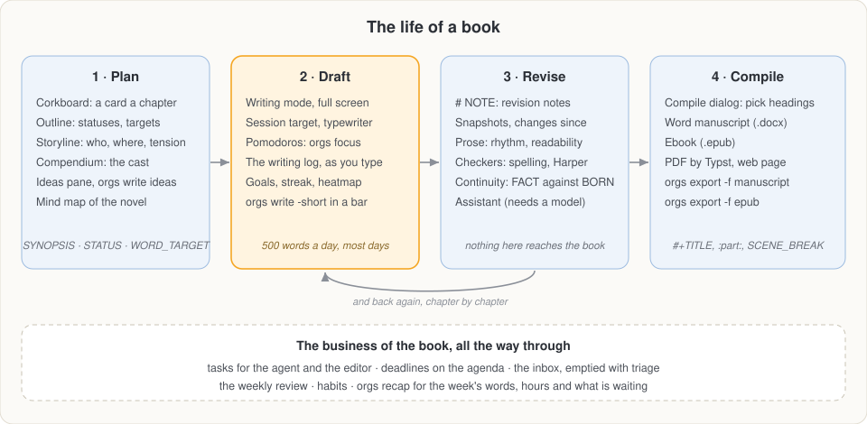
This guide follows him through the life of the book: planning it, drafting it a day at a time, revising, running the business side the GTD way, and compiling a manuscript to send. Writing mode in the editing guide is the reference for every tool shown here.
Where he writes
Owen drafts in worg's writing mode, because that is where the writing tools are. He is not tied to it:
- In VS Code, with vscode-org-everywhere, the manuscript is an ordinary org file: headings fold, links follow, and with the server it clocks in on the heading under the cursor and runs a focus timer in the status bar. worg's views (Files, the agenda, the clock report, the mind map…) open as editor panels, so the corkboard is a tab away from the text.
- In Sublime Text, with Org Everywhere, editing stays in Sublime and the agenda, clocking, capture and refile go through the same server. Org: orgs Open Web UI opens worg on any of its views.
- At the command line,
orgs writeandorgs recapread the same writing log worg keeps, andorgs focusruns the same pomodoro timer.
Whichever he uses, a word counted, a task ticked or a clock started in one shows up in the others.
Planning the book
Chapters as index cards
The corkboard shows each heading as a card: its synopsis, its status and its words against its target. Owen plans a part by writing the synopses first, then drags the cards until the order feels right. Moving a card moves the heading, with everything under it, in the file.
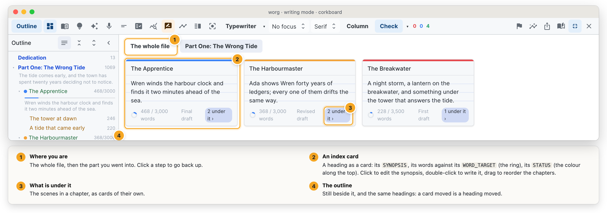
Who is in which scene
The storyline draws a line for each character through the scenes, joined where they meet, under an arc of each scene's tension. It shows Owen at a glance that Ada disappears after the second chapter, and that Part One climbs steadily but never drops to give the reader a breath.
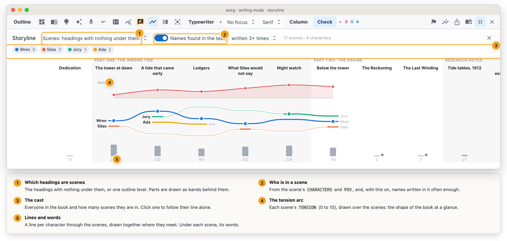
A character bible
The compendium is a second org file of people, places and things, named
by the manuscript's #+COMPENDIUM: line. Every property on an entry is a
fact. In the text, every name it knows is underlined, and resting on one
shows its card. It also catches mistakes without anyone reading for them:
a fact written two ways, a character in a scene set before they were born.
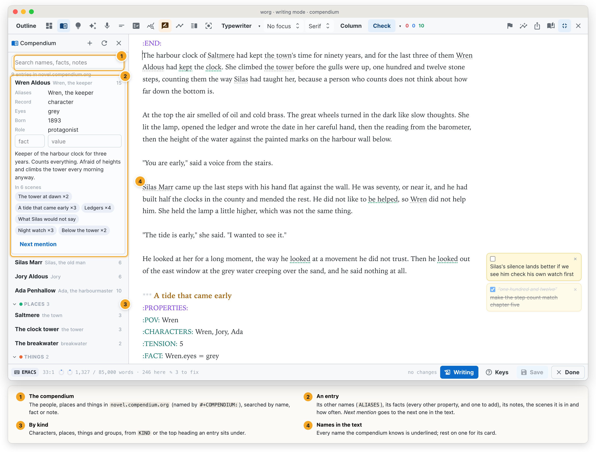
The entries are records too (RECORD: character), so orgs rec ls -type character
and worg's Collections tab list the same cast.
Names and places when he is stuck
The Ideas pane in writing mode, and orgs write ideas at a prompt, make up
characters, names, places, taverns, cultures, premises, complications and
weather from word tables in the binary. Nothing is sent anywhere.
-seed makes the same idea again, and -org prints it as a heading ready
to capture.
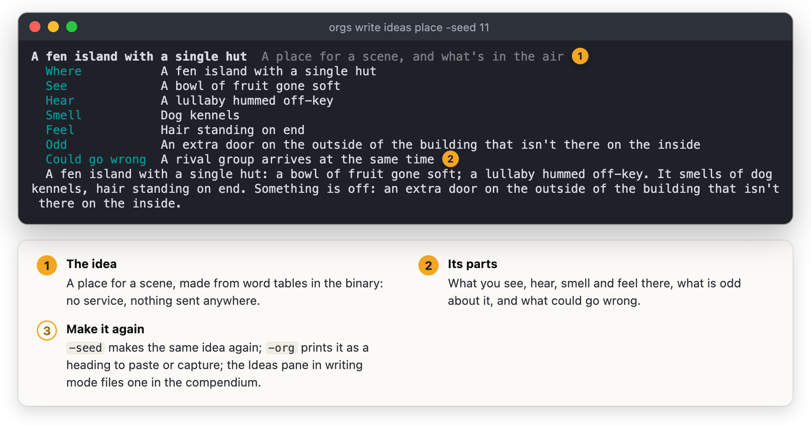
The structure the tools read
None of this needs a special file format. The tools read ordinary org: keywords at the top, parts and chapters as headings, and properties on them. Emacs, VS Code and Sublime see the same text.
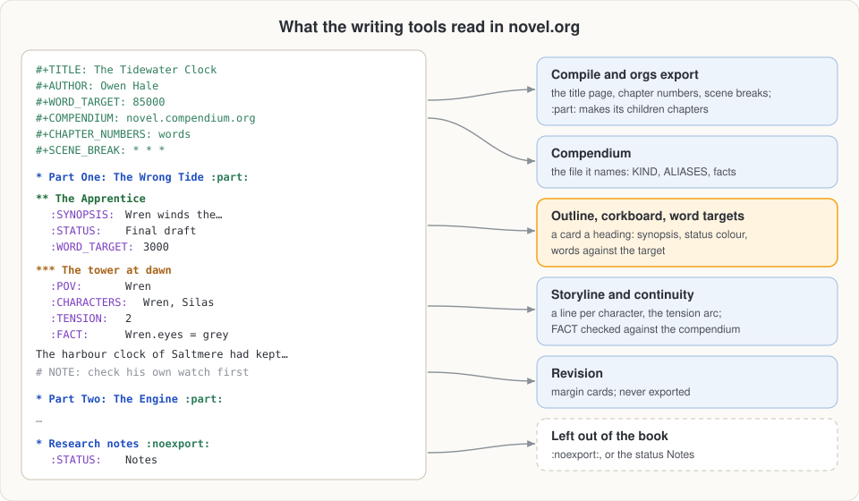
#+TITLE: The Tidewater Clock
#+WORD_TARGET: 85000
#+COMPENDIUM: novel.compendium.org
#+CHAPTER_NUMBERS: words
#+SCENE_BREAK: * * *
* Part One: The Wrong Tide :part:
** The Apprentice
:PROPERTIES:
:SYNOPSIS: Wren winds the harbour clock and finds it two minutes ahead of the sea.
:STATUS: Final draft
:WORD_TARGET: 3000
:END:
*** The tower at dawn
:PROPERTIES:
:POV: Wren
:CHARACTERS: Wren, Silas
:TENSION: 2
:WHEN: 1912
:END:
The harbour clock of Saltmere had kept the town's time for ninety years…
# NOTE: Silas's silence lands better if we see him check his own watch firstThe statuses are To do, First draft, Revised draft, Final draft, Done and Notes, each with its own colour on the cards and in the outline.
A writing day
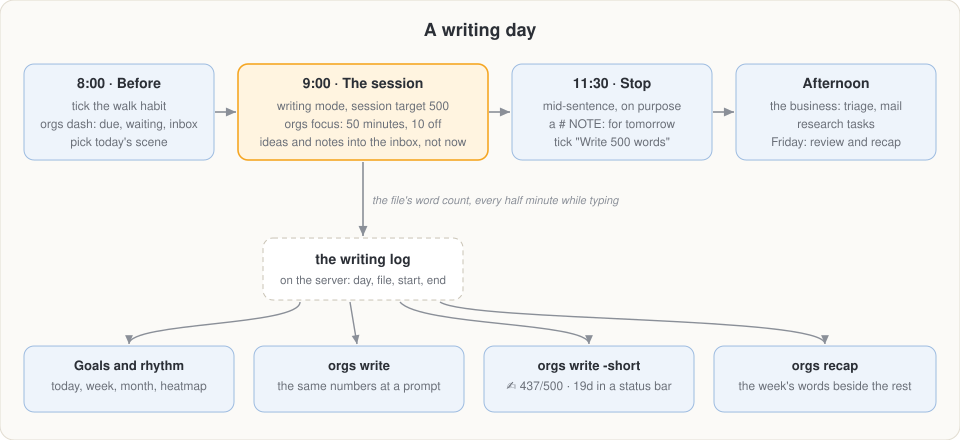
The session
Owen opens the manuscript in writing mode, goes full screen, and writes. The outline down the side shows where every chapter stands; the status line counts the words in the file, the words written this session and the words in the heading he is in. The checkers underline as he types (spelling and Harper's grammar run in the browser, offline), and his revision notes wait in the margin.
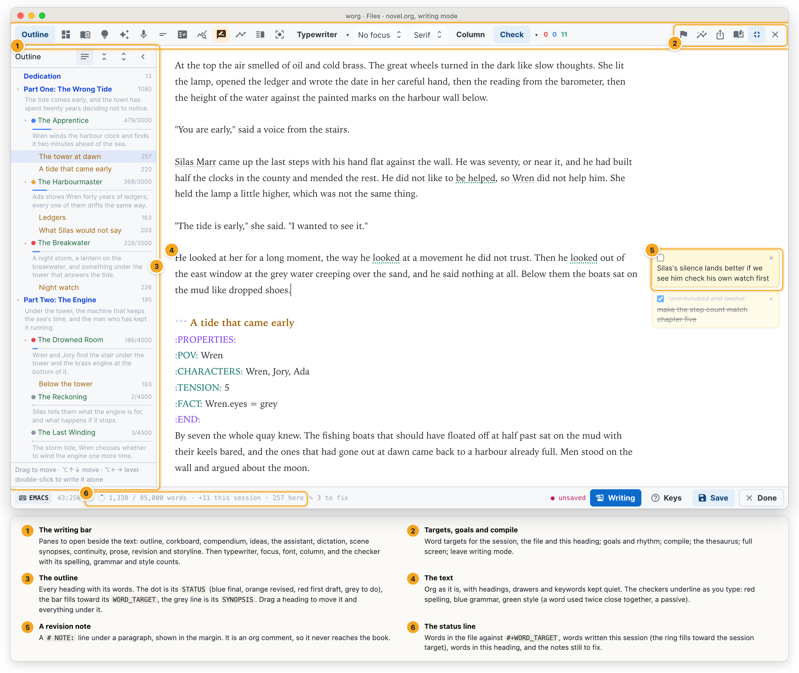
The speller knows American spelling. Owen chose Add to dictionary on harbour, grey and his characters' names the first time they were underlined, and it has not complained since (the list is kept in his browser).
Pomodoros, when they help
On days the words come slowly, Owen works in pomodoros: orgs focus -work 50 -break 10
picks a task ("Finish The Breakwater"), clocks in, and calls a
break when the time is up. The same session shows in worg's Focus tab, in
VS Code's status bar if he is there, and as 🍅 32:10 Finish "The Breakwater"
from orgs focus status in his terminal's status line. The time lands in
the task's logbook, so the week's recap knows where the hours went.
How the week is going
Every count the editor makes goes into the writing log on the server. The goals dialog (the chart button on the writing bar, or a click on the status line) reads it: today, this week and this month against his goals, his streak, and a heatmap of every day he has written.
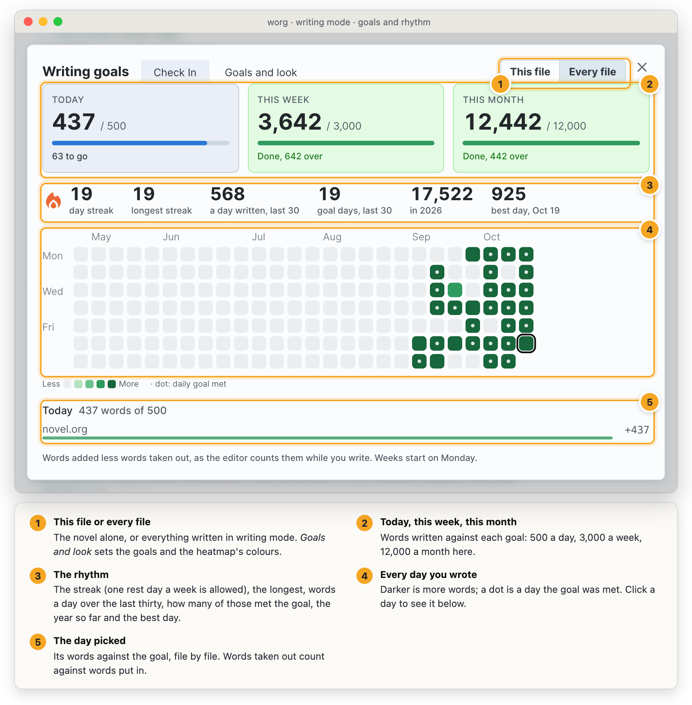
orgs write shows the same numbers at a prompt, and orgs write -short
prints one line (✍ 437/500 · 19d) for a status bar. Goals are set with
orgs write goals -daily 500 -weekly 3000 -monthly 12000 -rest 1, or under
Goals and look in the dialog.
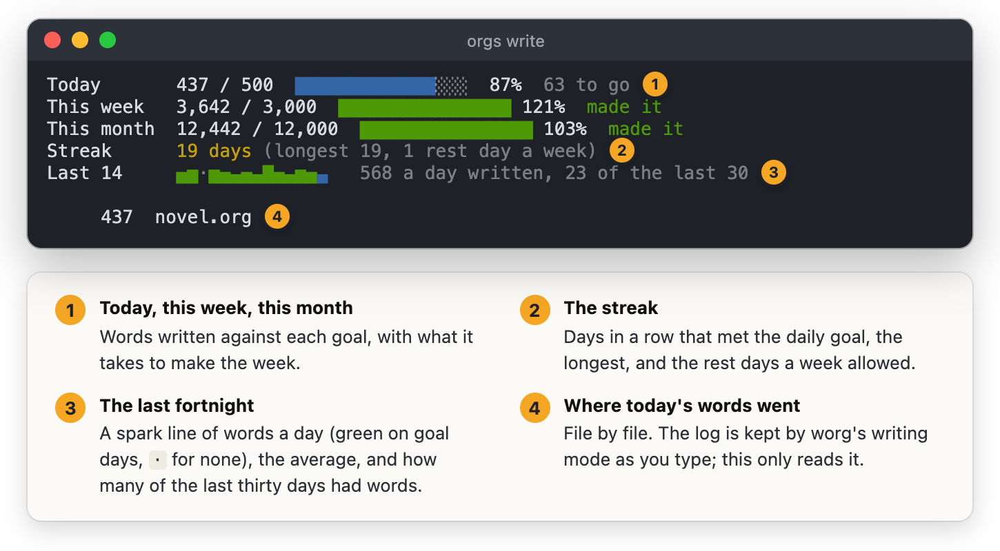
Revising
Notes, snapshots and what changed
When he finishes a pass, Owen leaves notes for the next one as # NOTE:
lines under the paragraph they are about. They are org comments, so they
are in the file for him and never in the book. Before a big rewrite he
takes a snapshot of the chapter from its section dialog in the outline
(or with orgs write snapshot 'The Apprentice' -title 'Before the second pass').
Afterwards, Show changes since in the Revision menu lights what he put
in and strikes through what he took out.
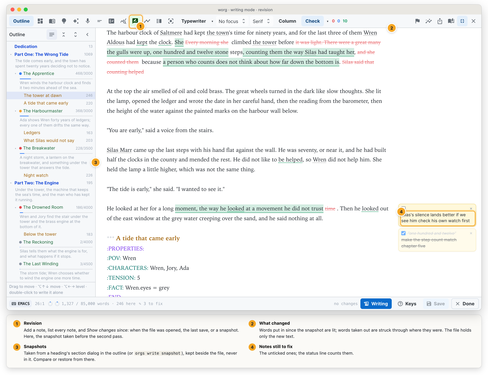
The prose in numbers
The Prose pane reads the whole manuscript: sentence lengths, readability by chapter, how much of each scene is dialogue, and the words worth a second look. Each one opens to the places it is used.
What needs more than orgs
Some tools in writing mode call out to something else. They are worth knowing about, and the editing guide says how to set each one up:
- The assistant, scene synopses and the continuity check ask a
language model: Claude, ChatGPT or Gemini with a key, or a model running
on the server under Ollama, llama.cpp, LM Studio or MLX (
orgs models). It sees only the file, and only when asked. - Dictation is transcribed by whisper on the server.
orgs lintruns the same grammar checker at the command line, and needsharper-lson the server (or LanguageTool).- The thesaurus looks words up online.
The business of the book
Owen runs the rest of his writing life the GTD way, in book.org beside the
manuscript: a heading for the draft, one for the agent and editor, one
for research, one for admin, and two habits ("Write 500 words", "Walk
before writing").
- Capture: an idea for the last chapter at 11 at night goes into the inbox
(
orgs cap, worg'sc, VS Code's capture), not into the manuscript. - Clarify: the inbox is emptied one item at a time with
orgs triageor worg's Inbox: refile it, schedule it, or let it go. - Organise: the agent's deadline is a
DEADLINE, the editor's notes aWAITINGtask, the reading an appointment on the agenda. - Reflect: on Friday, the weekly review walks what is stuck, waiting or
stale.
orgs recapis the week on one page, words included, ready to paste to his writing group. - Engage: in the morning,
orgs dashsays what is due before he opens the manuscript and forgets everything else.
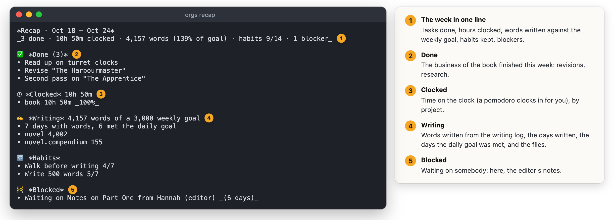
Compiling the manuscript
When Part One is ready for the agent, Owen opens Compile from the
writing bar, picks the headings to include, and chooses a format. The
research notes start out unticked, because they are tagged :noexport:. His
file is not changed.
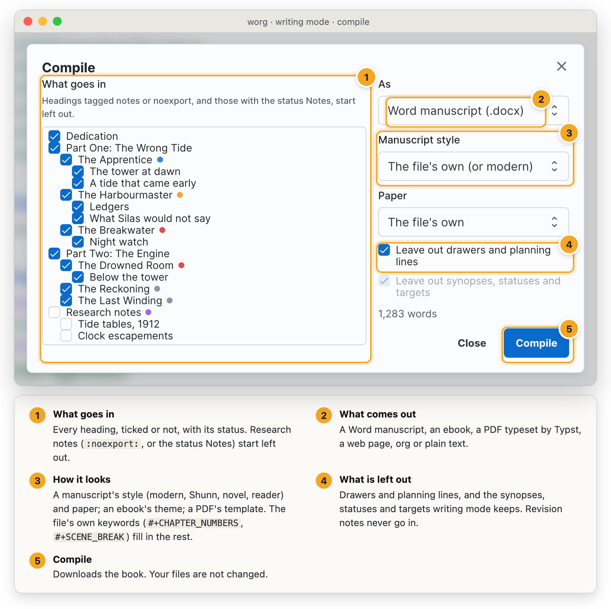
The same books come from the command line:
orgs export -f manuscript novel.org -style shunn -out tidewater.docx
orgs export -f epub novel.org -theme literary -out tidewater.epub
orgs export -f manuscript -list-themes # modern, novel, reader, shunn
The Word manuscript is the one to submit: chapters numbered as
#+CHAPTER_NUMBERS says, scenes broken with #+SCENE_BREAK, a title page from
the keywords. The PDF is typeset by Typst (it needs typst on the server)
with the article, report or notes template. It makes a good reading copy,
but it is laid out like a document, not a book.
Taking these pictures again
The pictures come from their own notebook, docs/screenshots/writer: the
manuscript, its compendium, book.org and an inbox. A month and a half of
writing log, the goals and a snapshot are posted when the server starts.
cd tools/screenshots
node capture.mjs -story writer # every picture here
node capture.mjs -story writer writer-goals # just the ones named
The shots are in tools/screenshots/stories/writer.mjs.
An engineer's week at the command line
Who this is about
Marcus is a backend engineer on a payments team. He lives in a terminal and an editor, and he runs his week on two simple rules:
- Getting Things Done. Anything that wants his attention goes into an
inbox first and is decided about later. Every project always has one
NEXTaction. Once a week he reviews the lot, so he can trust it. - Pomodoros. He works on one next action for 25 minutes, then takes a five minute break. Every fourth break is fifteen minutes. Interruptions are written down, not acted on.
This page follows him from Monday to Friday. Every step is an orgs
command against one orgs serve, so his terminal, his editor, worg on
his phone and the menu bar on his laptop all show the same clock, the
same inbox and the same pomodoro.
The pictures were taken against his notebook, kept in
docs/screenshots/engineer-cli (node capture.mjs -story engineer-cli in
tools/screenshots takes them again). The three borrowed from
The command line, in pictures (the dashboard, the standup and the recap) show the
smaller demo notebook those pages use.
The shape of the week
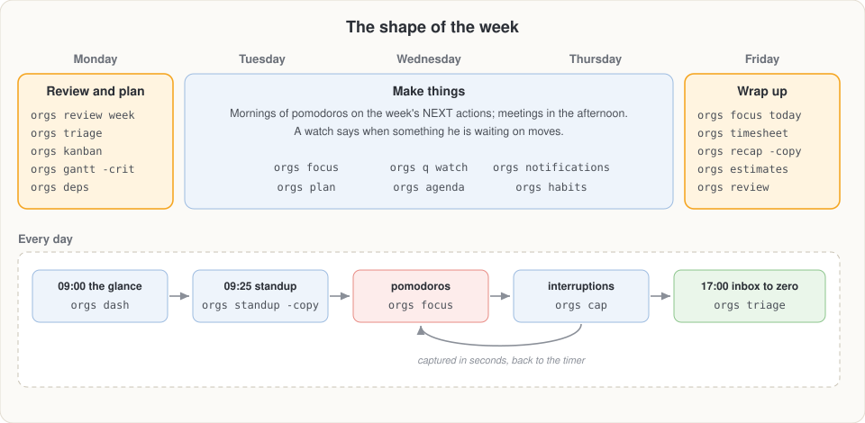
Monday is for deciding: the weekly review, then a plan for the week. Tuesday to Thursday are for making things. Friday is for looking back. The same short loop runs under every day: a glance in the morning, the standup, pomodoros, interruptions captured as they come, and the inbox emptied before he leaves.
The loop he keeps
GTD has five steps, and each one has a command:
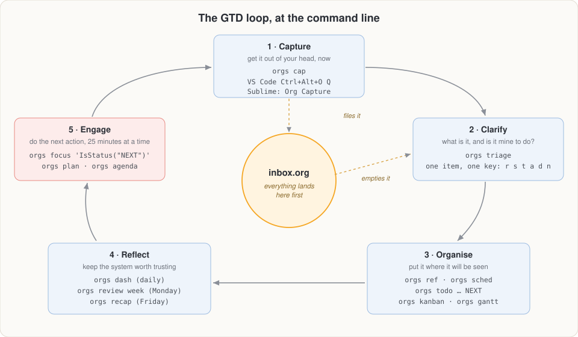
| Step | What it means | orgs |
|---|---|---|
| Capture | get it out of your head, now | orgs cap, or capture from the editor |
| Clarify | what is it, and is it mine to do? | orgs triage |
| Organise | put it where it will be seen | orgs ref, orgs sched, orgs todo, orgs kanban |
| Reflect | keep the system worth trusting | orgs dash, orgs review week, orgs recap |
| Engage | do the next action, 25 minutes at a time | orgs focus, orgs plan |
The inbox in the middle is what holds the loop together. A capture never asks where something belongs, so it takes seconds. Triage asks later, one item at a time.
Setting it up once
Marcus set this up once, the week he started.
One template that files into the inbox
An inbox is the top level of any file called inbox.org (the
review.inbox setting can make it a query instead). His capture template
files there, so the editor, worg and the command line all capture the
same way:
server:
captureTemplates:
- name: "Inbox"
type: "entry"
target:
type: "file"
filename: "inbox.org"
template: |-
:PROPERTIES:
:CREATED: {{now}}
:END:
{{CONTENT}}
The template is the body. At the command line the headline is its own
box, and the keyword goes in it: orgs cap Inbox -head "TODO Call the
bank".
Saved queries, and a watch
orgs q save next 'IsStatus("NEXT") && !IsArchived()'
orgs q save waiting 'IsStatus("WAITING") || IsStatus("BLOCKED")'
orgs q watch waiting -left # tell me when something stops waiting
Saved queries are shared with worg and the editors, so the same next
list is in every one of them.
The pomodoro where he can see it
The timer runs on the server, so anything can show it. He has it in his tmux status line and in the macOS menu bar:
# ~/.tmux.conf
set -g status-right '#(orgs focus status)'
set -g status-interval 5
# SwiftBar (brew install swiftbar); use xbar's plugins folder for xbar
orgs focus bar install "$HOME/Library/Application Support/SwiftBar/Plugins"
orgs focus status prints one line, 🍅 12:31 Implement idempotency keys,
and nothing when no session is running. The menu bar's menu can stop the
session, add five minutes, skip to the break, and open worg's Focus tab.
His editors
Marcus writes code in VS Code and keeps Sublime Text for long notes. Both talk to the same server; see His editors, all week below.
Monday morning: the weekly review
The review comes first, before email, while the week is still his.
What wants a decision
orgs review lists everything that needs deciding, each check with a
sentence saying what to do about it: projects with no next action,
deadlines nobody scheduled, things waiting on other people, time clocked
against something still open, notes nothing links to. A check that finds
nothing prints a green line. "No NEXT actions untouched in a month" is
worth hearing too.
Walking it: the review, step by step
orgs review week turns the list into seven steps, in GTD's order. Each
step is the same screen, one item and one key per decision, and u
takes the last decision back:
- Empty the inbox. The triage screen, below.
- Projects with no next action. The Developer portal has two open
tasks and nothing marked
NEXT. Marcus presses1and the guide becomes its next action. - Waiting for. Read access to the production replica has waited nine
days.
cchases it, and the note goes into the item's logbook so the count starts again. - Last week's time. Clocked against planned, by project and by tag. There is nothing to decide here, only something to look at.
- Stale scheduled items. Scheduled days ago, and nothing has happened since. Reschedule them, or admit they aren't happening.
- The someday pile. Keep, promote, schedule or drop.
- Done. The review is recorded, and the next one's first screen says how long ago this was.
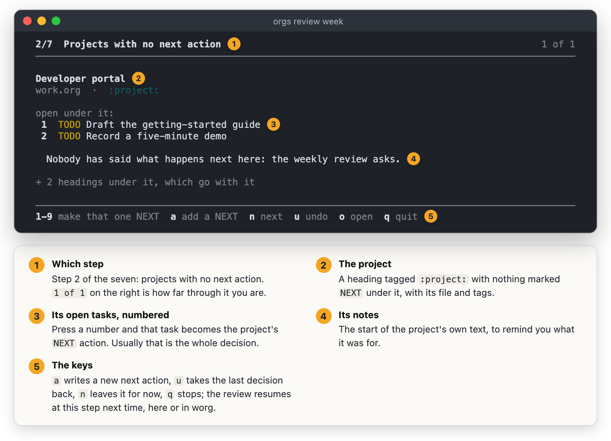
The step he is on is kept on the server, so he can stop halfway, get coffee, and finish it in worg's Weekly Review tab on his phone.
Emptying the inbox: triage
Step 1 is orgs triage, and he runs it on its own most evenings too:
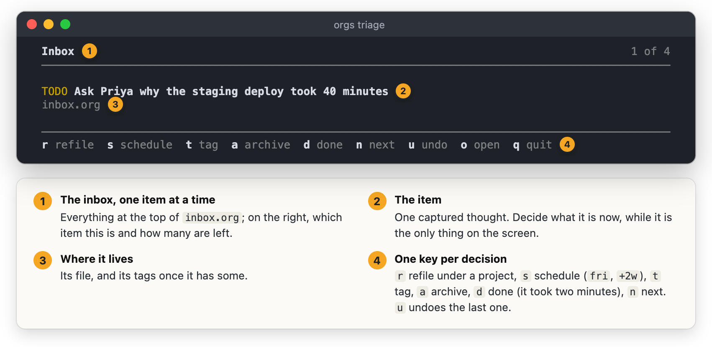
"Ask Priya why the staging deploy took 40 minutes" takes him less than
two minutes, so he does it and presses d. "Update the on-call rota for
November" gets s fri. The replay-traffic idea gets r, filed under
Search reindex as something to bring up at the architecture review.
Monday afternoon: planning the week
The board and the chain
orgs kanban shows his Sprint board, a saved query grouped by keyword.
H and L move a card between columns, which changes its keyword. A
board is only a query and a layout, so it never goes stale.
Then he checks the order things have to happen in. Load testing waits
on the idempotency work (AFTER: idempotency-keys), and the rollout waits
on load testing:
orgs deps
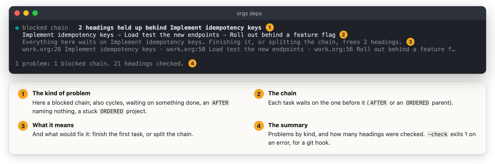
One blocked chain, and he already knew about it: the idempotency keys
are his priority this week. For projects measured in days rather than
hours, orgs gantt <saved query> -crit draws the same chain as a chart
with the critical path marked (see Schedules).
Every morning
The glance: the dashboard
At nine he opens a terminal and runs orgs dash: today's appointments
and the line where now is, what is late, the habits, the inbox, what his
watches found, and the command for each card that wants something.
orgs dash -w keeps it on a spare screen, redrawn as things change.
The standup, ready to paste
Five minutes before the standup:
orgs standup -copyIt lists what he finished since the last working day (Friday's, on a Monday), what he has clocked, what is on today and what is in the way, written in Slack's markup and put on the clipboard. He pastes it into the team channel and says the same thing out loud.
Blocking the day
After the standup he gives the morning to the one task that matters and puts the take-home review after his 1:1:
orgs plan idempotency 10:00-12:00
orgs plan take-home 15:00-16:00
orgs plan # the day, and what is left
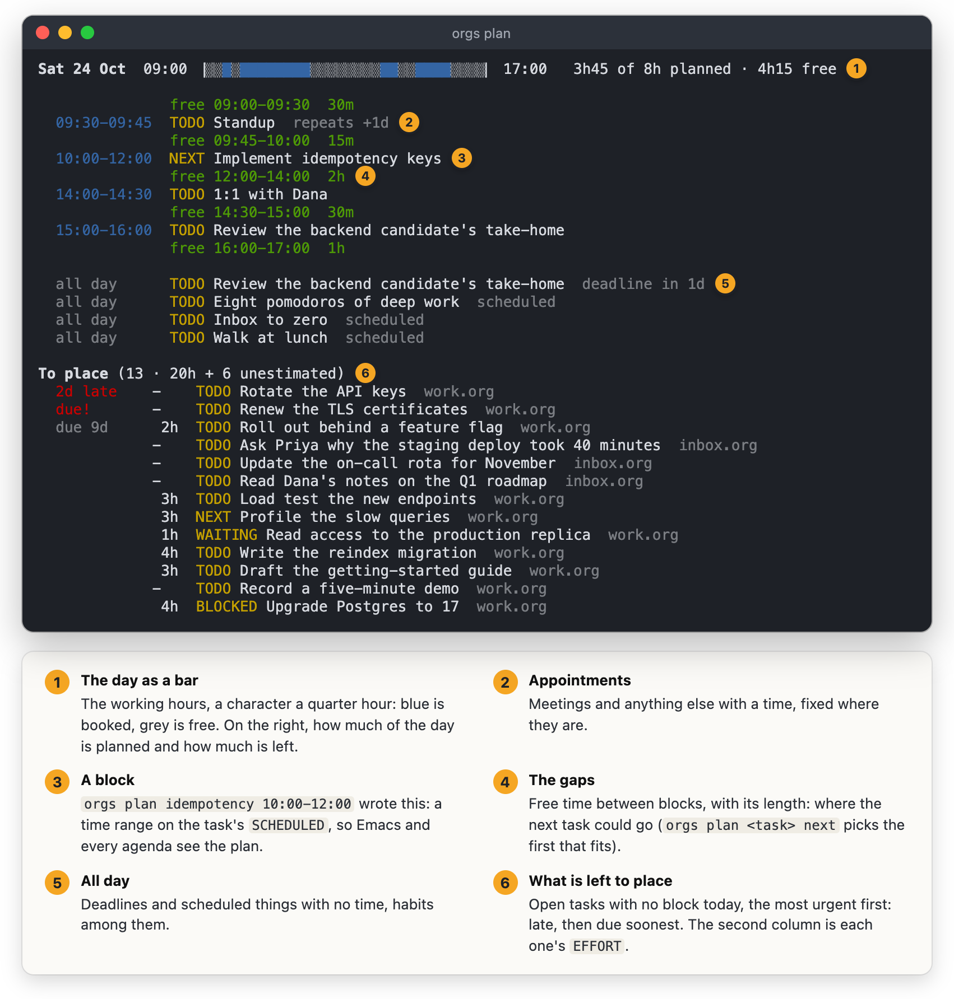
A block is only a time range on the task's SCHEDULED. Emacs and every
agenda see the plan, and worg's day planner shows the same blocks. Drag
one there and orgs plan agrees.
Working in pomodoros
Starting one
At ten he starts the first pomodoro on a next action:
orgs focus 'IsStatus("NEXT")' # pick from his next actions
orgs focus idempotency # or name it
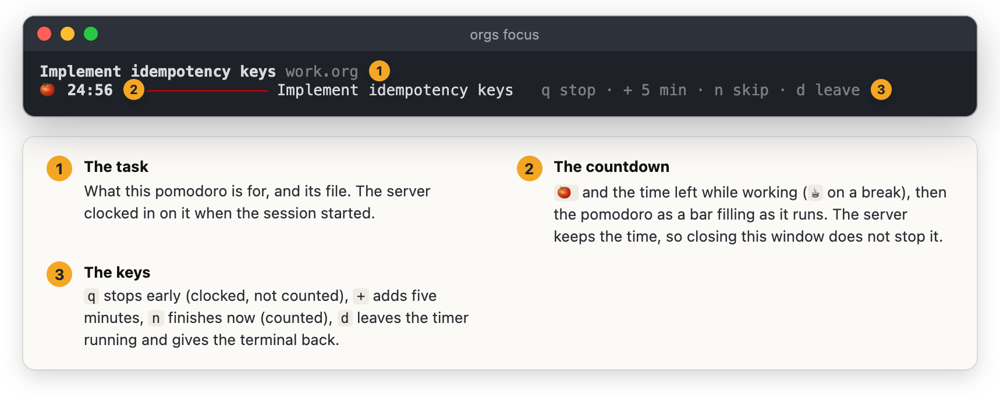
The server clocks in on the heading and counts down. When the 25 minutes
are up it clocks out, writes the CLOCK line, notes the pomodoro beside
it and starts the break. It does this whether or not anything is
watching. Marcus usually presses d to get his terminal back and
watches the countdown in tmux instead.
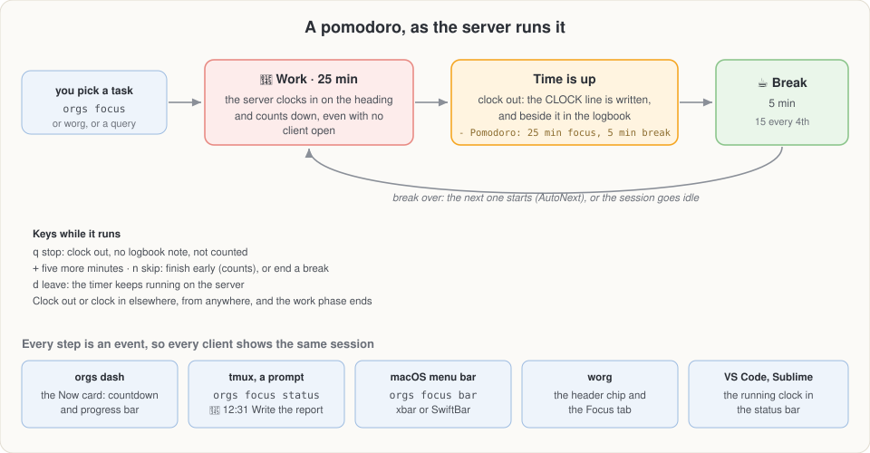
A finished pomodoro leaves a line in the heading's logbook:
** NEXT [#A] Implement idempotency keys
:LOGBOOK:
- Pomodoro: 25 min focus, 5 min break [2026-10-23 Fri 11:25]
CLOCK: [2026-10-23 Fri 11:00]--[2026-10-23 Fri 11:25] => 0:25
:END:So "how many pomodoros did this take?" can be answered from the file itself, in Emacs, years later.
The lengths
orgs focus -work 50 -break 10 # longer rounds for deep work
orgs focus -auto # start the next one when a break ends
orgs focus stop | skip | extend 5 # from any terminalThe server remembers the lengths, so worg and the menu bar start with the same ones next time. Stopping early clocks the time but doesn't count the pomodoro. Clocking out or clocking in somewhere else, from any client, ends the work phase: two timers that disagree about what you are doing are worse than one.
When something interrupts
Twenty minutes in, the on-call channel mentions that the nightly backup paged at 3am. It isn't his to fix this minute, but it mustn't be lost:
orgs cap Inbox
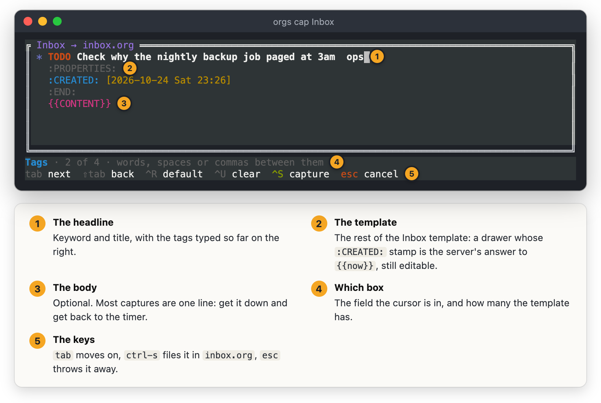
He types the headline and a tag, presses ctrl-s, and is back on the
timer in under ten seconds. In VS Code the same capture is
Ctrl+Alt+O Q. When there is nothing to fill in, it is one line:
orgs cap Inbox -no-form -head "TODO Check why the nightly backup paged at 3am"
At five he empties the inbox with orgs triage, then ticks off his
habit: orgs habits done "Inbox to zero".
Waiting on other people
The reindex work can't go on without read access to the production
replica, and that is Priya's to give. Rather than check every hour, he
lets the server watch: the waiting query is watched with -left, so he
hears when something stops waiting. On Wednesday afternoon:
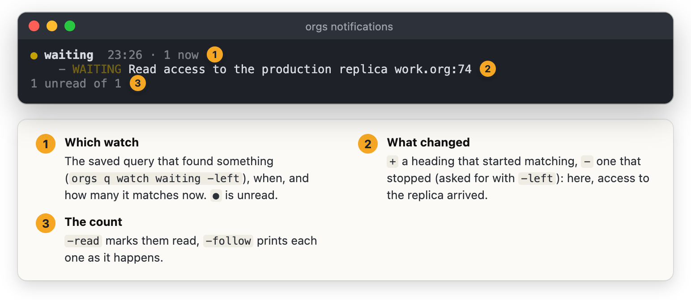
Priya has moved the item on. It shows in the dashboard's "Waiting for you"
card, in orgs notifications, and with -desktop on the watch, as a
notification on his screen. orgs notifications -follow prints each new
one as it happens.
Friday afternoon: the wrap-up
Where the time went
orgs focus today -days 5 # pomodoros, day by day
orgs timesheet # this week, sitting by sittingBecause every pomodoro clocked in and out, the timesheet is already correct. Most of his week is 25-minute sittings, with the meetings in between.
The recap for the week
For his Friday note to Dana:
orgs recap -copy # the last seven days
orgs recap -last -week -md # Monday to Sunday, as Markdown
How good were the estimates?
Once a month he checks how far off his EFFORT estimates are:
orgs estimates -day 8
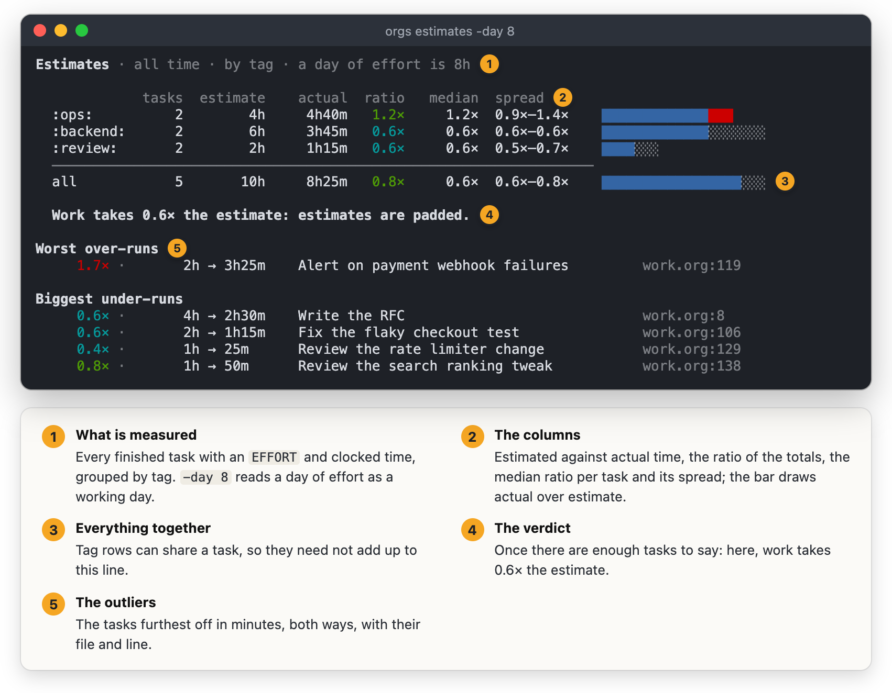
His backend work takes 0.6× what he estimates, while ops work runs over. Next week he will plan backend tasks a little smaller and leave room around ops work.
His editors, all week
None of the above needs the command line in particular. It is the server that keeps the clock, the inbox, the saved queries and the pomodoro, and every client is a window onto it:
- VS Code, with vscode-org-everywhere. The agenda is in the Org side
bar, with today's and the week's clocked time under it.
Ctrl+Alt+O Ctrl+Iclocks in on the heading under the cursor and the status bar shows it running (⏱ 0:42 Implement idempotency keys). A clock started anywhere else, a pomodoro fromorgs focusincluded, shows up there within a couple of minutes.Ctrl+Alt+O Qcaptures through the server's templates, andCtrl+Alt+O Wrefiles. worg's views (Kanban, Gantt Chart, Clock Report, Saved Queries and the rest) open in editor panels, and a heading clicked in one opens in the editor. The extension also has a status bar timer of its own (Start Timer,Ctrl+Alt+O Shift+T) that clocks in on the server when started under a heading. Marcus usesorgs focusinstead, so the session is the one his menu bar and tmux show. - Sublime Text, with Org Everywhere. A fork of OrgExtended where
everything that spans more than one file goes through the server: the
agenda, clocking, capture, refile and archive, search, exporting. Clock
in from Sublime and the clock is running in worg and at the command line.
Org Capture lists the server's templates as
orgs: Inbox. Org: orgs Open Web UI opens worg on any of its apps. - worg in a browser, a phone included, for the Weekly Review tab on the train and the agenda's day planner with drag and drop.
So the clock he starts in VS Code is the one orgs dash shows. A thought
captured in Sublime is in Monday's orgs triage. A review stopped in the
terminal carries on in worg.
The week on a card
| When | He runs |
|---|---|
| Monday, first | orgs review week (triage included) |
| Monday, after | orgs kanban, orgs deps, orgs gantt -crit |
| Every morning | orgs dash, orgs standup -copy, orgs plan |
| All day | orgs focus, orgs cap Inbox |
| Every evening | orgs triage, orgs habits done … |
| When told | orgs notifications |
| Friday | orgs timesheet, orgs recap -copy, orgs review |
| Monthly | orgs estimates -day 8 |
An engineer's week in worg
The idea
Marco is a backend engineer. He keeps his work the way Getting Things Done says to: everything that comes in goes into an inbox, every inbox item gets a decision, every project has a next action, and once a week he reviews the lot. He does the work itself in pomodoros: twenty-five minutes on one thing, five off, a long break after the fourth.
This is his week in worg, the web front end every orgs serve hands out.
Each tab here reads the same notes through the same server as the command
line and the editor plugins, so whatever he does in one shows up in the
others straight away.
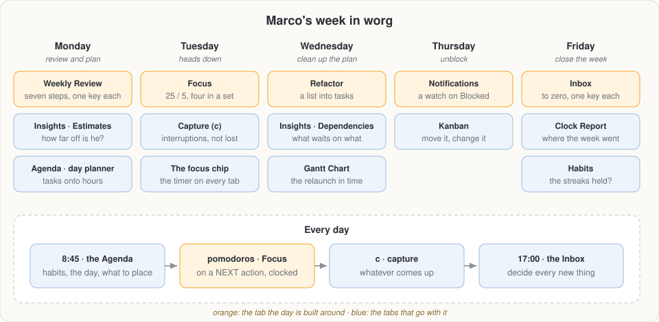
GTD has five steps, and each has a tab or two to itself:
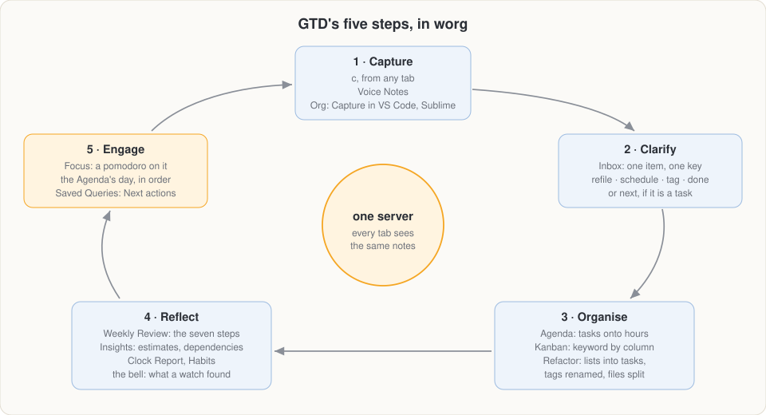
The pictures are of a demo notebook kept in
docs/screenshots/engineer-worg; tools/screenshots takes them again
(node capture.mjs -story engineer-worg).
Monday morning: the weekly review
Marco starts the week where GTD says to start it, with the review. He opens
Weekly Review and works down the seven steps. Each step is one list and
one decision per item, and the step he is on is kept on the server: if a
meeting cuts him off half way, he picks up where he left off, in worg or in
orgs review week at a prompt.
Step one empties the inbox. It is the Inbox tab's triage, inside the review:
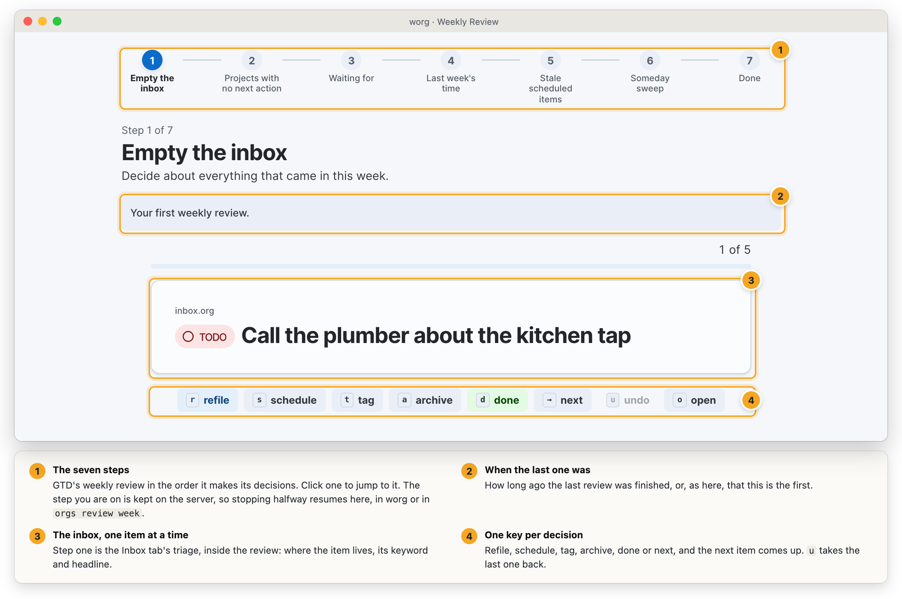
Step two finds the projects that have stopped moving. Website relaunch has four open tasks and not one of them NEXT, so nothing in it will get done until he decides what comes first. One click on Make it NEXT is nearly always the whole answer:
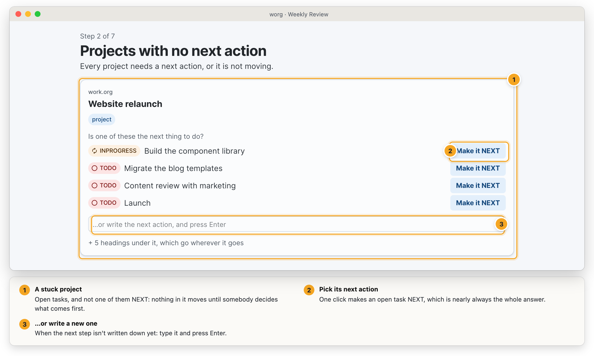
Step three is what he is waiting on other people for, oldest first, with Chase beside each. Step four is last week's time, against what he planned:
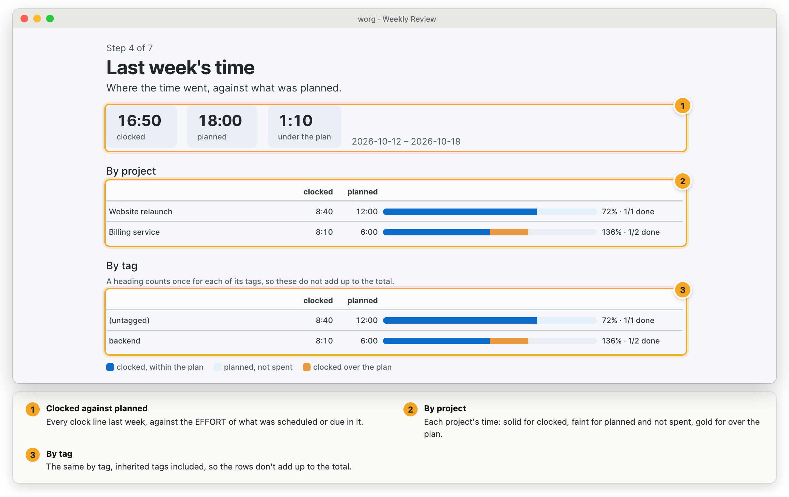
The billing service took more than he planned and the relaunch less. Step five sweeps up anything scheduled that went past with nothing done to it (here the API docs he never got to), step six the someday pile, and step seven records the review, so next Monday's first screen says how long it has been.
Calibrating the estimates
Before he plans the week he checks how far off his estimates usually are. Insights, Estimates, grouped by project, with a working day of eight hours:
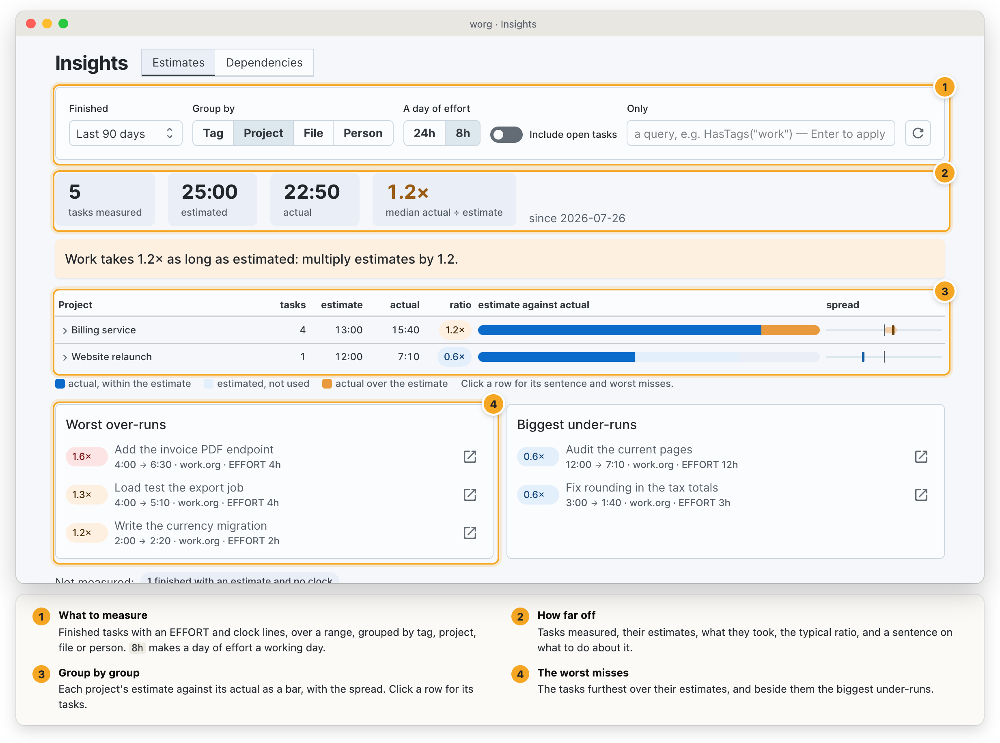
Work takes him about 1.2 times what he estimates, and the over-runs are all on the billing service. When he puts an EFFORT on this week's billing tasks, he adds a fifth.
Planning the day
The Agenda opens on today. Its day planner is the day as hours: the meetings already fixed, and down the side the open tasks with no time yet, the late and the soon-due first. Marco drags Add retries to the webhook sender onto ten o'clock and the API docs onto quarter past two. Each drop writes a SCHEDULED time range into the task's file.
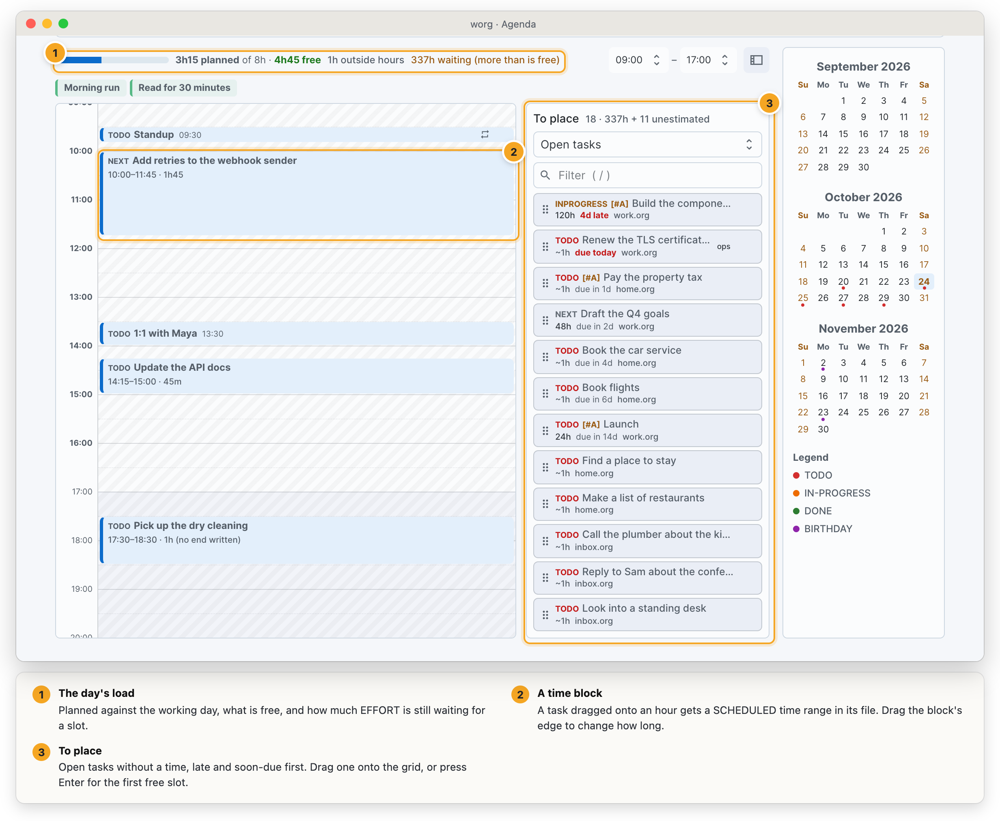
The bar at the top keeps him honest: once what is planned plus the meetings fills the working day, the rest waits for tomorrow.
Tuesday: heads down
Tuesday is for the work itself. Marco opens Focus, picks the webhook retries from the list (the tasks he worked on lately come first) and presses Start.
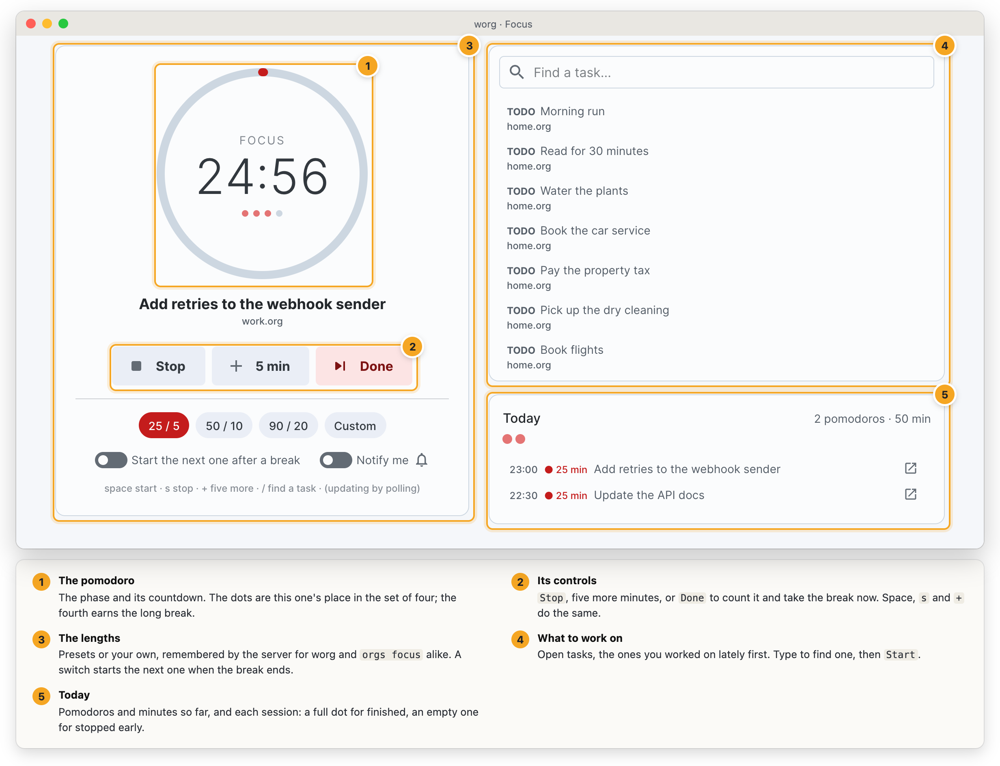
The timer is the server's, not the browser's. Starting it clocks him in on the task. When the twenty-five minutes are up the server clocks him out, notes the pomodoro in the task's logbook and starts the break, whether or not any tab is open. This is his third today; the fourth earns the long break.
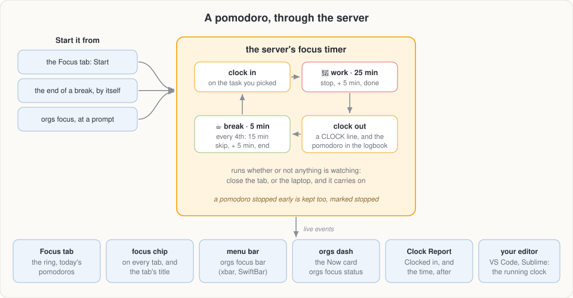
He doesn't have to keep the Focus tab open. While a pomodoro or a break runs, every tab has the chip in its header, and clicking it gives him the controls without leaving what he is looking at:
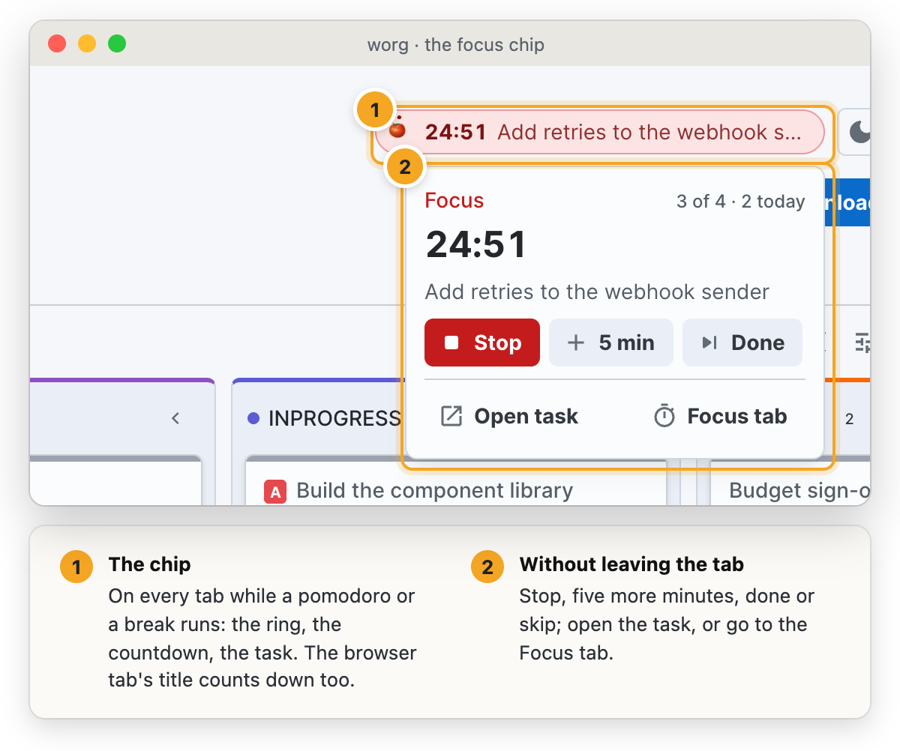
Interruptions go in the inbox
Halfway through a pomodoro Priya messages him: the export test is flaky
again. GTD's answer is not to switch, and not to forget either. He presses
c in whatever tab he is on, picks his Interruption template, and types it
in:
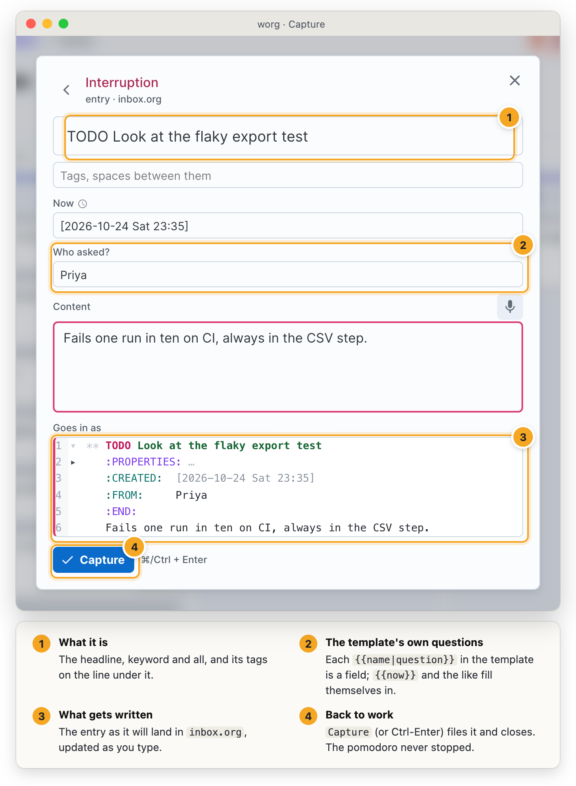
The template asks who it came from, because his template has a
{{from|Who asked?}} in it. The entry goes into inbox.org and he goes back
to the retries. The pomodoro never stopped. Capture templates live in the
server's settings (captureTemplates:), so the same ones are offered at
orgs cap and in both editor plugins.
Wednesday: cleaning up the plan
A list becomes tasks
The webhook retries turned out bigger than one task. The heading has a list of what it involves, and each item deserves its own TODO, effort and clock. Refactor, List to headings, finds the heading by a few letters of its name and shows what it would do before it does it:
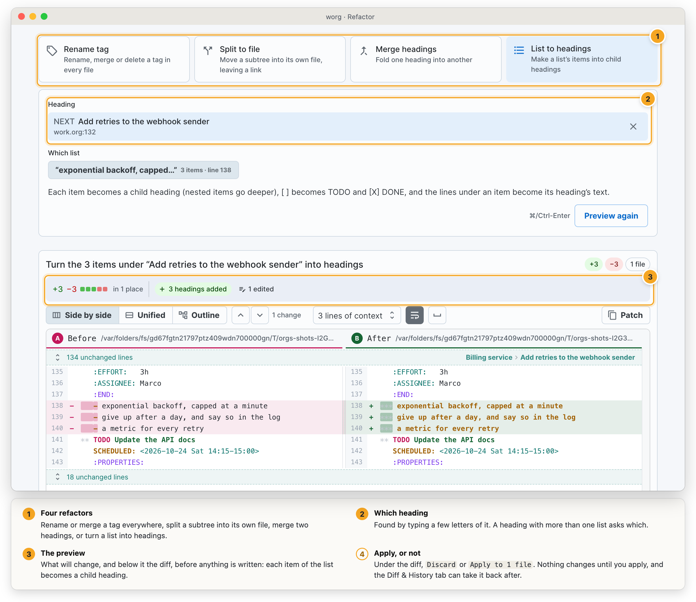
Nothing is written until Apply. The same tab renames or merges a tag across every file (and lists the saved queries that still name the old one), splits a subtree into a file of its own, or merges two headings. The Diff & History tab can take any of them back.
What waits on what
The relaunch's tasks are ORDERED, and the billing deploy waits on the load test with an AFTER. Insights, Dependencies, checks every such link:
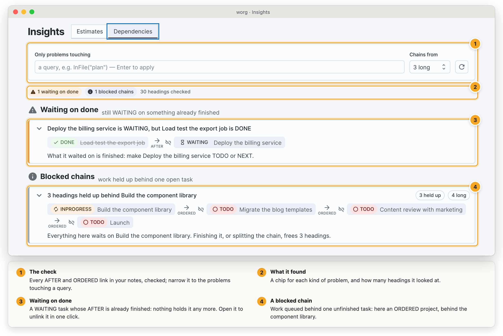
The deploy is still WAITING on a load test that finished a fortnight ago, so he unlinks it and makes it NEXT. The blocked chain is the honest picture of the relaunch: three tasks queued behind the component library. The Gantt Chart shows the same plan in time, each bar sized by its EFFORT and chained by the same links:
Thursday: unblocking
A watch on the blocked list
Marco keeps a saved query, Blocked, of everything WAITING or BLOCKED. On Monday he turned on its watch with the bell on its row in Saved Queries. Now when something joins the list or leaves it, worg's bell says so. On Thursday the on-call runbook goes WAITING:
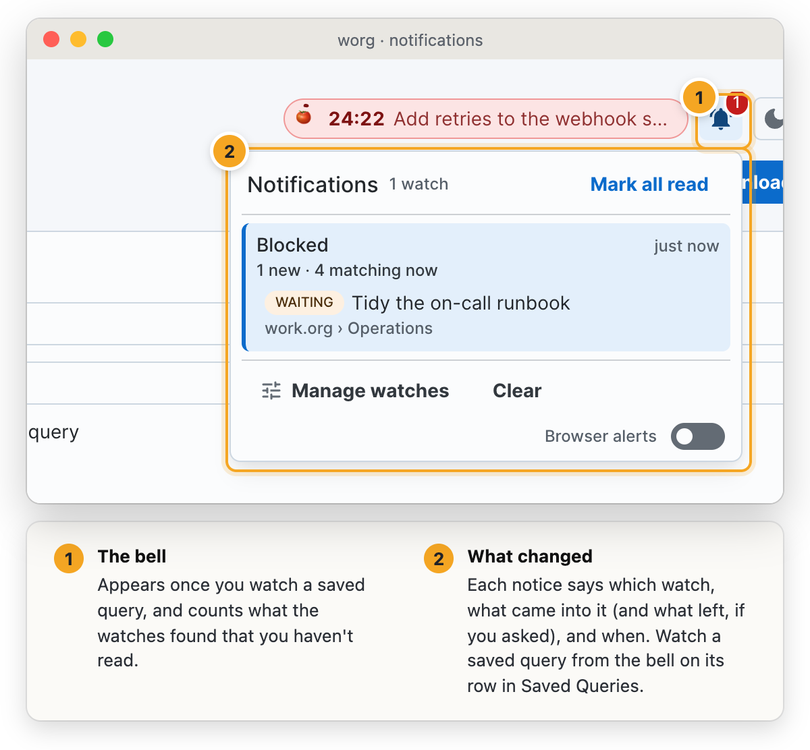
A watch can also pop up as a browser alert, on the server's desktop, or in a
terminal with orgs notifications -follow.
The board
For the team's standup he shares Kanban: the same open work, a column per keyword. Dragging a card to another column changes the keyword in its file.
Friday: closing the week
Friday afternoon Marco empties the inbox for real: everything captured since Monday, one item at a time, one key each.
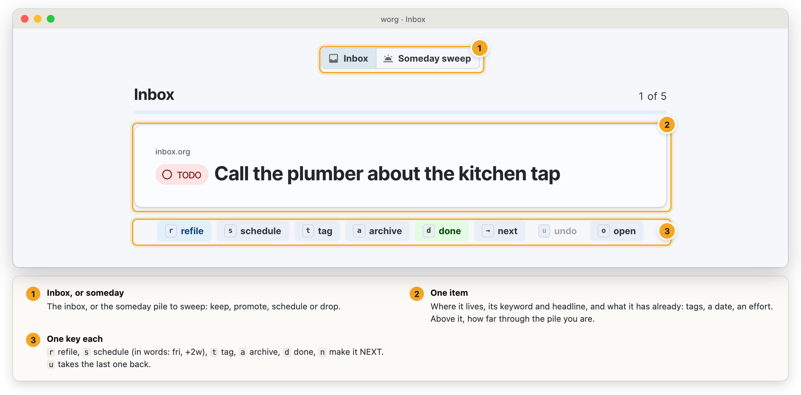
The flaky test gets n, making it NEXT for Monday. The standing desk goes
to the someday pile with a tag. The plumber gets scheduled for Saturday
(s, then sat). When the last one is decided worg says Inbox zero.
Then a look back. Clock Report, This Week, shows where the hours went,
pomodoros included, since each one was clocked. The habit strip at the top
of the Agenda shows whether the morning runs survived the week. At a prompt,
orgs recap -copy writes the same week as a message for the team channel.
The editors
Marco writes code in VS Code, and his notes are open there too. Two editor plugins work with orgs, and either one makes the editor one more client of the same server:
- VS Code: Org Everywhere (vscode-org-everywhere). Org editing
(folding, TODO keywords, tables, links) works on its own; the agenda,
clock, capture, refile and the rest come from the server. Commands like
Org: Show Kanban, Org: Show Clock Report, Org: Show Saved Queries
and Org: Show Agenda open worg's views as editor tabs, already logged
in. A heading opened from one of those panels opens in VS Code's editor,
not worg's, and as he moves between headings in the editor the panel
follows. For the tabs that aren't on its list (Focus, Inbox, Weekly
Review, Insights, Refactor), Org: Open worg in Browser opens worg
logged in.
Clocking is the server's, so it is the same clock everywhere:
Ctrl+Alt+O Ctrl+Iclocks in on the heading under the cursor, and the status bar shows the running clock whoever started it, worg's Focus tab included. The plugin also has a pomodoro timer of its own in the status bar (Start Timer). Started under a heading, it clocks in there through the server, so that time lands in the same logbook and the same Clock Report. - Sublime Text: Org Everywhere (orgeverywhere), a fork of OrgExtended backed by the orgs server. Editing a buffer happens in the plugin; the agenda, the clock, capture templates, refile, ids and backlinks, search and exporting are the server's. Org: orgs Open Web UI opens worg in the browser on the tab you pick. Clock in from Sublime and the clock is running in worg and at the command line too.
Either way his inbox, his clock, his saved queries and his capture templates are the ones worg has, because there is only one copy of each: the server's.
Tables
Details
Table formulas — a spreadsheet in an org table
What this is
An org table can carry formulas on a #+TBLFM: line under it. The server
works them out and writes the answers back into the table's cells, so a
table of expenses can total itself, a reading list can count what is
finished, and an order sheet can look prices up in another table.
This is not Emacs' table engine. Emacs hands formulas to Calc or Lisp, which
a server cannot run, so orgs has its own expression language with the same
cell references ($3, @2$3, @2$1..@>$1) and its own function library.
Plain arithmetic formulas usually work in both; anything using the
functions below works only here.
Every example in this guide is run by the test suite
(internal/app/orgs/tablesguide_test.go): the tables are shown with the
answers the evaluator really produces.
Running the formulas
Nothing is recalculated as you type. Formulas run when you ask:
- terminal:
orgs tables eval NAME(orgs tableslists the tables and their names) - worg: the Tables tab, saving a table with evaluation on
- VS Code: Org: Execute Table with the cursor in the table, or Org: Execute All Tables In File
The table is rewritten in place, realigned, with the formula line kept.
If a formula fails, nothing is written and the error names the formula.
Anatomy of a formula
| item | qty | price | total |
|--------+-----+-------+-------|
| apples | 3 | 0.50 | 1.50 |
| pears | 2 | 1.25 | 2.50 |
| plums | 10 | 0.20 | 2.00 |
|--------+-----+-------+-------|
| total | 15 | | 6.00 |
#+TBLFM: $4=$2*$3;%.2f::@>$2=vsum(@2$2..@4$2)::@>$4=vsum(@2$4..@4$4);%.2f
The #+TBLFM: line holds any number of formulas separated by ::, run
left to right, so a later formula sees what an earlier one wrote. Each is
target=expression;format
Here $4=$2*$3 fills every row of column 4 with quantity times price.
It runs on the total row too (giving 0, since that row has no price), and
then @>$4…= overwrites that one cell with the sum.
Naming cells: rows and columns
| Reference | Means |
|---|---|
$3 |
column 3. As a target: every row but the header |
@2$3 |
row 2, column 3 |
@>$3 |
the last row, column 3. @< is the first row |
@2$1..@4$3 |
a rectangle of cells, read row by row |
@-1$3 |
one row up from the row being filled (@+1 down) |
@#, $# |
the number of the row or column being filled |
remote(Name, $2) |
column 2 of the table named Name (see Other tables) |
Rows are counted without the separator lines: @1 is the header,
@2 the first row under the first line, and a second line further down
adds nothing to the count. In the example above the total row is @5.
When a table has a header (a separator line after its first row), the header is never written to and is left out of column ranges.
The format after the semicolon
Everything after ; says how the answer is written and how cells are read.
| Part | Effect |
|---|---|
%.2f |
a printf pattern for the answer: %.2f two decimals, %5.1f padded to 5 characters |
%d |
a whole number; the fraction is dropped, not rounded: 4.5 is written 4 (as Emacs does) |
N |
read every cell as a number: text counts as 0, true as 1, a lone empty cell as 0 |
E |
keep empty cells in ranges; without it vsum, vmean, vcount skip them |
$ |
money: $ is stripped from cells when reading and put in front of the answer |
H |
include the header row in column ranges |
They combine: ;%.2f$ writes $12.50.
| item | price | qty | cost |
|--------+-------+-----+--------|
| tea | $2.50 | 2 | $5.00 |
| coffee | $4.25 | 3 | $12.75 |
#+TBLFM: $4=$2*$3;%.2f$
E and N in action; column 1 has an empty cell and a word:
| x | counted | counted, E | mean | mean, N |
|-----+---------+------------+------+---------|
| 4 | 3 | 4 | 6 | 4 |
| | | | | |
| 8 | | | | |
| n/a | | | | |
#+TBLFM: @2$2=vcount($1)::@2$3=vcount($1);E::@2$4=vmean($1)::@2$5=vmean($1);N
vcount counts the three filled cells, or all four with E. vmean
averages the numbers and passes over the text: (4+8)/2. With N the
text n/a becomes a 0, so it is (4+8+0)/3; the empty cell is still
left out, because leaving empty cells out is what E changes, not N.
Named columns, named cells and parameters
A table whose first column is a marker column can name things, as in Emacs. The marker in the first cell says what the row is:
| Marker | Row holds |
|---|---|
! |
column names: $qty then means $3 (the marker column is column 1) |
^ |
names for the cells just above it: $subtotal means that cell |
_ |
names for the cells just below it |
$ |
parameters, written name=value: $rate is that value |
Rows with a marker are never written to by formulas.
| | item | qty | price | total |
|---+------+-----+-------+-------|
| ! | item | qty | price | total |
| | tea | 2 | 2.5 | 5 |
| | jam | 1 | 4 | 4 |
#+TBLFM: $5=$qty*$price| | net | tax |
|---+------+-----|
| | 100 | 20 |
| | 50 | 10 |
| $ | rate=0.2 | |
#+TBLFM: $3=$2*$rate
A parameter is read like a cell, so rate=0.2 is the number 0.2. The
$ row is a row of the table like any other, so a whole-column range
(vsum($2)) would take its cell in too.
Constants
#+CONSTANTS: vat=0.2 shop=Corner in the file makes $vat and $shop
available to every table in it, and a heading's properties are there as
$PROP_NAME. Constants are text, not numbers: wrap them in value()
to calculate with them.
#+CONSTANTS: vat=0.2
| net | with vat |
|-----+----------|
| 100 | 120 |
| 50 | 60 |
#+TBLFM: $2=$1*(1+value($vat))What a cell's value is
Before a formula sees a cell, its text is read as the first of these that fits:
- empty: an empty value (0 with
N) - a number:
42,-3.5,1e3(with$,$12.50too) - a date:
<2026-10-02 Fri>,<2026-10-02 Fri 09:30>,[2026-10-02 Fri],2026-10-02,2026-10-02 09:30 - a duration:
1:30,2h,1d 4h,3w(a week is five days, as for effort estimates) - true or false:
t,true,TRUE,Trueandf,false… - otherwise text
| cell | number | date | text | blank |
|------------------+--------+-------+-------+-------|
| 42 | true | false | false | false |
| <2026-10-02 Fri> | false | true | false | false |
| hello | false | false | true | false |
| TRUE | false | false | false | false |
| | false | false | false | true |
#+TBLFM: $2=isnumber($1)::$3=isdate($1)::$4=istext($1)::$5=isblank($1)
An answer is written as: numbers as short as they can be (3, not
3.000000, unless a format says otherwise); dates as <2026-10-02 Fri>,
with the time only when it is not midnight; durations as 1d 2h 30mins;
true and false as true and false; a list as [1 2 3] (use join to
write one nicely).
In a formula, text goes in quotes, single or double: 'fruit', "fruit".
true, false, t, f and pi are names you can use directly.
How a function reads its arguments
This is the rule to remember. A cell reference means one of two things, and which one depends on the function, not on how you wrote it:
- where a function wants a range (
vsumand the othervfunctions,vsumifand the criteria functions, the ranges of a lookup,join,sort),$2is the whole column, header left out; - where a function wants a value (
sqrt,round,upper,concat,if,and, the dates, the value a lookup searches for),$2is the cell in the row being filled.
Each function's table below says which of its arguments are ranges: they
are the ones named range, keys, results or values.
| x | root | share |
|---+------+-------|
| 4 | 2.00 | 0.20 |
| 9 | 3.00 | 0.45 |
| 7 | 2.65 | 0.35 |
#+TBLFM: $2=sqrt($1);%.2f::$3=$1/vsum($1);%.2f
In $1/vsum($1) the first $1 is this row's x and the second is every x:
each row's share of the total. A rectangle like @2$1..@4$1 is always a range.
Arithmetic and comparisons (+ - * / % **, < < > >= = !=, && || !,
cond ? a : b) work on the current row's cells.
Matching cells: criteria
The if family of functions (vsumif, vcountif …) take a criteria
argument saying which cells count:
| Criteria | Matches |
|---|---|
'fruit' |
cells equal to fruit, ignoring case: Fruit, FRUIT |
5 or '5' |
cells equal to the number 5 |
'>10' |
numbers over 10; also >=, <, <= |
'<>done' |
anything but done, including empty cells; != also works |
'>=2026-01-01' |
dates on or after the first of January 2026 |
'app*' |
text starting app; * is any run of characters |
'?ale' |
four letters ending ale; ? is any one character |
'' or ''= |
empty cells |
'<>' |
cells that are not empty |
$1 |
cells equal to this row's cell in column 1 |
A number never equals text, and > or < between a number and text is
false. Text is ordered alphabetically, ignoring case.
Conditional totals: the if functions
| Function | Gives |
|---|---|
vsumif(range, criteria) |
the sum of the numbers in range that match |
vsumif(range, criteria, values) |
the sum of values on the rows where range matches |
vcountif(range, criteria) |
how many cells in range match |
vmeanif(range, criteria [, values]) |
the mean, as vsumif; 0 when nothing matches |
vmaxif, vminif(range, criteria [, values]) |
the largest or smallest, as vsumif; 0 when nothing matches |
vsumifs(values, range1, crit1, range2, crit2, ...) |
the sum of values on rows where every criterion matches |
vmeanifs(values, range1, crit1, ...) |
the mean, as vsumifs |
vcountifs(range1, crit1, range2, crit2, ...) |
rows where every criterion matches |
vcounta(range) |
cells that are not empty, whatever is in them |
vcountblank(range) |
empty cells |
The ranges are walked side by side, so range and values should be the
same height: row 3 of one goes with row 3 of the other. Empty cells are
kept in place for this (unlike vsum), and text in values is ignored.
Note the argument order: vsumif puts the values last (optional), the
ifs forms put them first (required), as spreadsheets do.
| name | kind | qty | price |
|---------------+-------+-----+-------|
| apple | fruit | 3 | 1.5 |
| pear | fruit | 5 | 2 |
| kale | veg | 2 | 4 |
| beet | veg | | 1 |
|---------------+-------+-----+-------|
| fruit qty | | 8 | |
| veg rows | | 2 | |
| qty over 2 | | 8 | |
| names p... | | 1 | |
| fruit price | | | 1.75 |
| dear fruit | | 5 | |
| qty filled in | | 3 | |
| qty missing | | 1 | |
#+TBLFM: @6$3=vsumif(@2$2..@5$2,'fruit',@2$3..@5$3)::@7$3=vcountif(@2$2..@5$2,'veg')::@8$3=vsumif(@2$3..@5$3,'>2')::@9$3=vcountif(@2$1..@5$1,'p*')::@10$4=vmeanif(@2$2..@5$2,'fruit',@2$4..@5$4)::@11$3=vsumifs(@2$3..@5$3,@2$2..@5$2,'fruit',@2$4..@5$4,'>1.5')::@12$3=vcounta(@2$3..@5$3)::@13$3=vcountblank(@2$3..@5$3)
The summary rows sit in the same columns as the data, so these formulas
use explicit rectangles (@2$3..@5$3). A whole column ($3) would take
the summary rows in too.
Looking things up
| Function | Gives |
|---|---|
lookup(value, keys, results) |
the cell of results beside the first key equal to value |
lookupfirst(value, keys, results) |
the same as lookup |
lookuplast(value, keys, results) |
beside the last equal key |
lookupall(value, keys, results) |
every match, as a list |
index(range, n) |
the nth cell of range, from 1; -1 is the last, -2 the one before |
match(value, range) |
the position of the first cell equal to value, from 1; 0 when there is none |
- With no
results, a lookup gives the matching key itself, as Emacs'org-lookup-firstdoes (useful to ask "is it there?"). - When nothing matches,
lookupandlookuplastgive an empty cell rather than an error, so one missing key doesn't stop the whole table. - Equal means as in criteria without an operator: numbers by value, text ignoring case, dates by date. Wildcards and operators are not used.
indexpast either end is an error, which stops the formula.
The common case, a price list kept in its own table:
#+NAME: Prices
| item | price |
|--------+-------|
| tea | 2.5 |
| coffee | 4 |
| jam | 3.2 || item | qty | price | cost |
|--------+-----+-------+------|
| coffee | 2 | 4 | 8 |
| tea | 3 | 2.5 | 7.5 |
| bread | 1 | | 0 |
#+TBLFM: $3=lookup($1,remote(Prices,$1),remote(Prices,$2))::$4=$2*$3
Here $1 is read as a value (this row's item) and the two remote(...)
as whole columns of Prices. Bread is not in the price list, so its price
is left empty, and an empty cell counts as 0 in the arithmetic.
The others, over one table:
| day | who | hours |
|-----+------+-------|
| mon | ann | 3 |
| tue | bob | 5 |
| wed | ann | 2 |
|-----+------+-------|
| ann first | | 3 |
| ann last | | 2 |
| ann all | | 3,2 |
| bob is at | | 2 |
| second day | | tue |
| last hours | | 2 |
#+TBLFM: @5$3=lookup('ann',@2$2..@4$2,@2$3..@4$3)::@6$3=lookuplast('ann',@2$2..@4$2,@2$3..@4$3)::@7$3=join(',',lookupall('ann',@2$2..@4$2,@2$3..@4$3))::@8$3=match('bob',@2$2..@4$2)::@9$3=index(@2$1..@4$1,2)::@10$3=index(@2$3..@4$3,-1)
A lookup's value can also be this row's cell, so each row can find
something about itself: $4=lookuplast($2,$2,$3) puts, beside every row,
the hours of the last row for the same person.
Statistics
| Function | Gives |
|---|---|
vsum, vmean, vmedian |
total, average, middle value |
vmin, vmax |
smallest and largest; 0 when there are no numbers |
vcount (or vlen) |
how many cells are filled in (numbers, text, anything) |
vprod |
all the numbers multiplied together; 0 when there are none |
vsdev, vvar |
standard deviation and variance of a sample (divides by n-1), like STDEV, VAR |
vpsdev, vpvar |
of a whole population (divides by n), like STDEV.P, VAR.P |
vmode |
the number that occurs most often; on a tie, the one that comes first |
vpercentile(range, p) |
the value p of the way up: p from 0 to 1, or 0 to 100; interpolates like PERCENTILE.INC |
vquartile(range, q) |
q = 0 smallest, 1 first quartile, 2 median, 3 third quartile, 4 largest |
vrank(value, range) |
1 for the largest number in range, 2 for the next …; equal numbers share a rank |
vrank(value, range, true) |
1 for the smallest instead |
All of these use only the numbers in their ranges: text and empty cells
are passed over. They take any number of ranges and values: vsum($2, $4, 10).
| student | score | rank |
|---------+-------+------|
| ann | 72 | 4 |
| bob | 95 | 1 |
| cy | 88 | 2 |
| dee | 72 | 4 |
| eve | 81 | 3 |
#+TBLFM: $3=vrank($2,$2)Ann and Dee share 4th place, and nobody is 5th: as in a spreadsheet.
| x | |
|-------+------|
| 2 | |
| 4 | |
| 4 | |
| 4 | |
| 5 | |
| 5 | |
| 7 | |
| 9 | |
|-------+------|
| mean | 5 |
| sdev | 2.14 |
| psdev | 2 |
| mode | 4 |
| p90 | 7.60 |
| q1 | 4 |
#+TBLFM: @10$2=vmean(@2$1..@9$1)::@11$2=vsdev(@2$1..@9$1);%.2f::@12$2=vpsdev(@2$1..@9$1)::@13$2=vmode(@2$1..@9$1)::@14$2=vpercentile(@2$1..@9$1,0.9);%.2f::@15$2=vquartile(@2$1..@9$1,1)Choosing: if, and, or
| Function | Gives |
|---|---|
if(condition, then, else) |
then when condition is true, else otherwise; with no else, an empty cell |
and(...), or(...) |
true when every / any argument is true |
xor(...) |
true when an odd number of arguments are true |
not(x) |
the opposite |
iferror(value, fallback) |
fallback when value is not a usable number (see below), else value |
isblank(x) |
true for an empty cell |
isnumber(x), istext(x), isdate(x) |
what the cell was read as (see What a cell's value is) |
True is: true, a number other than 0, or the text t=/=true. Anything
else, an empty cell included, is false. and and or given a range
(and(@2$5..@9$5)) look at every cell in it.
| name | score | grade | passed | note |
|------+-------+-------+--------+--------------|
| ann | 93 | A | true | top marks |
| bob | 81 | B | true | |
| cy | 58 | C | false | needs resit |
#+TBLFM: $3=if($2>=90,'A',if($2>=80,'B','C'))::$4=$2>=60::$5=if($2>=90,'top marks',if($2<60,'needs resit'))Two things that differ from a spreadsheet:
- Both branches of
ifare worked out, then one is kept. Soif($2>0, 10/$2, 0)still divides by zero when$2is 0 (harmlessly: the answer is infinity, and the 0 is kept), but a branch that is an error, likeindexpast the end, stops the formula even when it is not the branch chosen. iferroronly catches bad numbers: not-a-number (0/0,sqrt(-1)), infinity (1/0) and a missing value. A function that fails (a date that cannot be read,indexout of range) stops the formula beforeiferroris reached.
| spent | budget | used | used, safe |
|-------+--------+------+------------|
| 50 | 200 | 0.25 | 0.25 |
| 10 | 0 | +Inf | - |
#+TBLFM: $3=$1/$2::$4=iferror($1/$2,'-')Text
| Function | Gives |
|---|---|
concat(a, b, ...) |
this row's values joined with nothing between: concat($1, '-', $2); a rectangle (@2$1..@4$1) gives all its cells |
join(sep, values, ...) |
the non-empty values joined with sep between; $1 is the whole column: join(', ', $1) |
len(text) |
the number of characters |
upper(text), lower(text) |
in capitals, in small letters |
trim(text) |
spaces taken off both ends, and runs of spaces inside squeezed to one |
left(text, n), right(text, n) |
the first or last n characters; n defaults to 1 |
mid(text, start, n) |
n characters from start, counting the first character as 1 |
substitute(text, old, new) |
every old replaced by new |
rept(text, n) |
text n times: rept('*', $2) draws a bar |
contains(text, part) |
true when part is in text, ignoring case |
startswith(text, part), endswith(text, part) |
ignoring case |
value(text) |
the first number in text, commas ignored: 'USD 1,234.50' is 1234.5; 0 if none |
fmt(pattern, a, b, ...) |
printf: fmt('%.1f%%', $2), fmt('%03d', $1), fmt('%s: %d', $1, $2) |
Numbers in text come out short (3, 2.5); dates as <2026-10-02 Fri>.
In fmt, %d, %x, %o, %b and %c are given a whole number, so %d
of 3.0 is 3.
| first | last | code | bar | label | t? |
|-------+----------+------+------+---------------+-------|
| Ada | Lovelace | ALOV | *** | Lovelace, Ada | false |
| alan | turing | ATUR | **** | Turing, Alan | true |
#+TBLFM: $3=upper(concat(left($1),left($2,3)))::$4=rept('*',len($1))::$5=concat(upper(left($2)),mid($2,2,99),', ',upper(left($1)),mid($1,2,99))::$6=startswith($2,'T')Rounding and numbers
| Function | Gives |
|---|---|
round(x), round(x, places) |
to the nearest; halves go away from zero. places may be negative: round(1234,-2) is 1200 |
roundup(x [, places]) |
away from zero: roundup(2.01) is 3, roundup(-2.01) is -3 |
rounddown(x [, places]) |
toward zero: rounddown(2.99) is 2, rounddown(-2.99) is -2 |
floor(x), ceil(x) |
down, up (floor(-2.5) is -3) |
trunc(x), int(x) |
the fraction dropped |
abs(x), neg(x), sign(x) |
size, negated, -1 / 0 / 1 |
clamp(x, low, high) |
x, but no lower than low and no higher than high |
mod(a, b) |
what is left of a after taking out bs; keeps a's sign: mod(-7,3) is -1 |
rem(a, b) |
IEEE remainder, to the nearest multiple: rem(7,4) is -1 (use mod) |
pow(a, b), sqrt(x), exp(x), log(x) (natural), log10, log2, pow10(n), exp2(n) |
|
sin, cos, tan, asin, acos, atan, and the h forms |
in radians; radians(deg) and degrees(rad) convert |
rand(), randint(low, high) |
a fraction from 0 to 1; a whole number from low to high, both possible |
Rounding is of the number itself; the ;%.2f format only changes how it
is written. Rounding to places works in binary, so a value like 2.345
(stored as 2.34499…) rounds to 2.34, as it does in most languages.
| x | round | 1 place | up | down | clamp |
|-------+-------+---------+------+------+-------|
| 2.375 | 2 | 2.4 | 3 | 2 | 2.375 |
| -1.25 | -1 | -1.3 | -2 | -1 | 0 |
| 17 | 17 | 17 | 17 | 17 | 10 |
#+TBLFM: $2=round($1)::$3=round($1,1)::$4=roundup($1)::$5=rounddown($1)::$6=clamp($1,0,10)Dates
| Function | Gives |
|---|---|
today() |
today's date, no time |
now() |
this moment |
date(text) |
the date written in text |
date(year, month, day) |
that date; too large a day or month rolls on: date(2026,2,30) is 2 March |
days(end, start) |
the number of days from start to end (end first, like DAYS) |
datedif(start, end, unit) |
the time between, in unit: 'd' days, 'w' whole weeks, 'm' whole months, 'y' whole years. Negative when end is first |
adddays(date, n) |
n days on (back when negative) |
addmonths(date, n) |
n months on, on the same day; on a shorter month, its last day: 31 Jan + 1 is 28 Feb. edate is the same |
addyears(date, n) |
n years on; 29 Feb becomes 28 Feb |
addtime(date, duration) |
a duration on: '2h', '1d 4h', '1:30', a duration cell, or a number of minutes |
eomonth(date [, n]) |
the last day of the month, n months on |
workday(date, n) |
n working days on (Monday to Friday); back when n is negative. Holidays are not known |
networkdays(start, end) |
working days from start to end, both counted |
year, month, day, hour, minute (date) |
the part as a number |
monthname(date), weekdayname(date) |
January, Monday |
weekday(date) |
0 for Sunday to 6 for Saturday |
yearday(date) |
1 to 366 |
weeknum(date) |
the ISO week: weeks start on Monday, week 1 holds the first Thursday |
quarter(date) |
1 to 4 |
datefmt(date, pattern) |
the date written your way (below) |
duration(text) |
the text read as a duration |
Days are counted by the calendar: from 23:00 one day to 01:00 the next is
one day. A date argument can be a date cell, a text date ('2026-10-02'),
or a number of seconds since 1970.
datefmt uses the codes Emacs' format-time-string uses:
| Code | Gives | Code | Gives |
|---|---|---|---|
%Y |
2026 | %H |
hour 00-23 |
%y |
26 | %I |
hour 01-12 |
%m |
10 | %M |
minutes |
%d |
02 | %S |
seconds |
%e |
2 (padded) | %p |
AM or PM |
%b |
Oct | %a |
Fri |
%B |
October | %A |
Friday |
%j |
day of year | %V |
ISO week |
%% |
a % sign | %Z, %z |
time zone |
| task | start | due | days | workdays | month end | label |
|--------+------------------+------------+------+----------+------------------+------------|
| report | <2026-01-30 Fri> | 2026-02-13 | 14 | 11 | <2026-02-28 Sat> | Fri 13 Feb |
| audit | <2026-01-31 Sat> | 2026-03-31 | 59 | 42 | <2026-03-31 Tue> | Tue 31 Mar |
#+TBLFM: $4=days($3,$2)::$5=networkdays($2,$3)::$6=eomonth($3)::$7=datefmt($3,'%a %d %b')More:
| date | answer | how |
|------------------+------------------------+--------------------------|
| <2026-01-31 Sat> | <2026-02-28 Sat> | one month on |
| <2026-01-31 Sat> | <2026-02-02 Mon> | next working day |
| <2026-01-31 Sat> | <2026-01-31 Sat 02:30> | two and a half hours on |
| <2026-01-31 Sat> | 5 | ISO week |
| <2026-01-31 Sat> | 1 | whole months to 1 March |
#+TBLFM: @2$2=addmonths(@2$1,1)::@3$2=workday(@3$1,1)::@4$2=addtime(@4$1,'2:30')::@5$2=weeknum(@5$1)::@6$2=datedif(@6$1,'2026-03-01','m')Money
These follow the spreadsheet convention: money you pay out is negative,
money you receive is positive. A loan of 200000 that you receive gives a
negative payment. rate is per period: a yearly 5% paid monthly is
0.05/12, with the number of periods in months. The optional type is 1
when payments are made at the start of each period, 0 (the default) at
the end.
| Function | Gives |
|---|---|
pmt(rate, nper, pv [, fv [, type]]) |
the payment each period that turns pv into fv (default 0) |
pv(rate, nper, pmt [, fv [, type]]) |
what a run of payments is worth today |
fv(rate, nper, pmt [, pv [, type]]) |
what you will have after nper periods |
nper(rate, pmt, pv [, fv [, type]]) |
how many periods it takes |
npv(rate, v1, v2, ...) |
today's value of amounts arriving at the end of periods 1, 2, … |
irr(v0, v1, v2, ...) |
the rate at which those amounts, the first one now, are worth nothing today; needs both a negative and a positive amount |
| loan | yearly rate | years | monthly | total paid | interest |
|--------+-------------+-------+----------+------------+-----------|
| 200000 | 0.05 | 30 | -1073.64 | -386511.57 | 186511.57 |
| 15000 | 0.07 | 5 | -297.02 | -17821.08 | 2821.08 |
#+TBLFM: $4=pmt($2/12,$3*12,$1);%.2f::$5=pmt($2/12,$3*12,$1)*$3*12;%.2f::$6=-$5-$1;%.2f
The total is worked out from the payment itself, not from the rounded
-297.02 in the cell: $5=$4*$3*12 would read back the rounded text
and give -17821.20.
| question | answer |
|-------------------------------------------+-----------|
| save 200 a month for 10 months at 6% | 2045.61 |
| months to save 10000 at 100 a month, 12% | 69.66 |
| 500 a month for 20 years at 8%, worth now | -59777.15 |
| npv at 10%: -10000 then 3000, 4200, 6800 | 1188.44 |
| irr of -70000 then 12000 ... 26000, in % | 8.66 |
#+TBLFM: @2$2=fv(0.06/12,10,-200);%.2f::@3$2=nper(0.12/12,-100,0,10000);%.2f::@4$2=pv(0.08/12,12*20,500);%.2f::@5$2=npv(0.1,-10000,3000,4200,6800);%.2f::@6$2=irr(-70000,12000,15000,18000,21000,26000)*100;%.2fLists
A few functions give a list of values rather than one: sort, rsort
(largest first), rdup (repeats removed, first kept), rev (reversed)
and lookupall. A list written into a cell looks like [1 2 3], so they
are usually wrapped in join, or given to a function that takes a range.
| x | sorted | unique | total of unique |
|---+---------+--------+-----------------|
| 3 | 1 2 3 3 | 3 1 2 | 6 |
| 1 | | | |
| 3 | | | |
| 2 | | | |
#+TBLFM: @2$2=join(' ',sort($1))::@2$3=join(' ',rdup($1))::@2$4=vsum(rdup($1))
A list can only be the last argument of a function. The expression
parser flattens a list that comes first into the arguments after it:
join(' ', sort($1)) is fine, index(sort($1), 2) is not (the 2 becomes
one more list item, and index sees five arguments).
Other tables: remote
remote(Name, ref) reads from the table named Name (by #+NAME: above
it), looked for in the same file first and then in every other file. ref
is any reference: $2 a column, @3$2 one cell, @2$1..@>$3 a block.
#+NAME: Hits
| who | damage |
|-----+--------|
| orc | 5 |
| elf | 7 |
| orc | 12 || monster | total damage | last hit | hits |
|---------+--------------+----------+------|
| orc | 17 | 12 | 2 |
| elf | 7 | 7 | 1 |
#+TBLFM: $2=vsumif(remote(Hits,$1),$1,remote(Hits,$2))::$3=lookuplast($1,remote(Hits,$1),remote(Hits,$2))::$4=vcountif(remote(Hits,$1),$1)
Write the name without quotes. remote('Hits', $2) is not recognised and
the formula fails.
Colouring cells
highlight(cell, color[, value]) writes value (or the cell's own value)
and gives the cell a colour; red(cell[, value]), green, yellow,
blue, cyan, purple, orange and pink are the same with the colour
in the name. gradient(cell, progress, color, color...) picks a colour
along the list by progress from 0 to 100.
| task | done | status |
|--------+------+----------|
| write | 90 | on track |
| review | 20 | behind |
#+TBLFM: $3=if($2 >= 50, green($3, "on track"), red($3, "behind"))
$2=gradient($2, $2, "red", "yellow", "green") colours a column of
percentages by their own value, leaving the numbers as they are.
The colours are not written into the file - org has nowhere to keep them.
POST /table/calc answers with them beside the table, and an editor (the
vscode plugin) shows them until the table is next changed.
Spreadsheet names
For finding the function you would have used in a spreadsheet:
| Spreadsheet | Here | Spreadsheet | Here |
|---|---|---|---|
| SUM, AVERAGE, MEDIAN | vsum, vmean, vmedian | IF, AND, OR, NOT | if, and, or, not |
| MIN, MAX, COUNT, COUNTA | vmin, vmax, vcount, vcounta | IFERROR | iferror (numbers only) |
| COUNTBLANK, PRODUCT | vcountblank, vprod | ISBLANK, ISNUMBER | isblank, isnumber |
| SUMIF, COUNTIF, AVERAGEIF | vsumif, vcountif, vmeanif | CONCAT, TEXTJOIN | concat, join |
| SUMIFS, COUNTIFS, AVERAGEIFS | vsumifs, vcountifs, vmeanifs | LEN, UPPER, LOWER | len, upper, lower |
| MAXIFS, MINIFS | vmaxif, vminif (one criterion) | LEFT, RIGHT, MID | left, right, mid |
| VLOOKUP, XLOOKUP | lookup | TRIM, SUBSTITUTE | trim, substitute |
| INDEX, MATCH | index, match | REPT, VALUE, TEXT | rept, value, fmt / datefmt |
| STDEV, STDEV.P, VAR, VAR.P | vsdev, vpsdev, vvar, vpvar | SEARCH (as a test) | contains |
| MODE, PERCENTILE, QUARTILE | vmode, vpercentile, vquartile | TODAY, NOW, DATE | today, now, date |
| RANK | vrank | DAYS, DATEDIF | days, datedif |
| ROUND, ROUNDUP, ROUNDDOWN | round, roundup, rounddown | EDATE, EOMONTH | addmonths, eomonth |
| INT, ABS, SIGN, MOD | floor, abs, sign, mod | WORKDAY, NETWORKDAYS | workday, networkdays |
| RAND, RANDBETWEEN | rand, randint | WEEKNUM, WEEKDAY | weeknum (ISO), weekday |
| PMT, PV, FV, NPER, NPV, IRR | the same, in small letters | YEAR, MONTH, DAY | year, month, day |
Spreadsheet INT rounds down, which is floor here; int here drops the
fraction, which differs for negative numbers.
Things that catch you out
$2is a column or a cell depending on the function. Ranges forvsumand friends, one cell forsqrtand friends. See How a function reads its arguments.- A whole column includes everything under the header, summary rows
too. Under a total row, use
@2$3..@5$3rather than$3. - Rows are counted without separator lines.
- Both branches of
ifare worked out. An error in either stops the formula. iferrorcatches bad numbers, not errors.- A list can only be the last argument.
join(',', sort($1)), neverindex(sort($1), 1). - Cell references are found inside quotes too.
'$1'in a formula becomes a reference to column 1, so it cannot be written as text (value('USD 1,234')works;value('$1,234')does not). remotetakes the table name without quotes.- Constants are text:
value($vat), not$vat. - A week is five days in a duration (
1wis5d), as for effort estimates. remis notmod:rem(7,4)is -1.- Formulas don't run on their own. Run them with
orgs tables eval, worg or VS Code.
Table Functions
Orgs cannot support the more rigorous org mode like table syntax. It does it's best but a true implementation of org mode table syntax would require that orgs run a lisp interpreter inside your editor, and that's just not possible. That said, orgs does facilitate a very robust table evaluation that I hope might prove useful to people other than just me.
Here is an example of a table with some expressions. org mode stores all table expression at the end of a table in a TBLFM: comment.
#+NAME: Monsters
| Monster Name | Start Health | Total Damage | %Alive | AC | Initiative |
|--------------+--------------+--------------+--------+----+------------|
| M1 | 44 | 0 | 100.0 | | |
#+TBLFM:$4=(($2-$3)/$2)*100.0;%.1f::$3=lookuplast($1,remote(FightHistory,$2),remote(FightHistory,$4))Looking at the first operation (up to the ::)
$4=(($2-$3)/$2)*100.0;%.1fThis states that every entry in the 4th column (IE the %Alive column) is set to the (Start Health - Total Damage) / Start Health * 100.0 So each monsters % alive is the percentage of health left.
Then there is that funny %.1f which tells the system to only keep one decimal place becase more would be tedious to look at.
Next $3 finds the last row of the FightHistory table whose 2nd column holds my Monster Name, and pulls the value from its 4th column. This means I can update the fight history table and have this table auto update from it. To total every hit instead of taking the last one:
$3=vsumif(remote(FightHistory,$2),$1,remote(FightHistory,$4))The full guide, with a worked example for every function (each one run by the test suite), is docs/tables.org. What follows is the short reference.
How functions read their arguments
A range argument is expanded in full: in vsum($2) or vcountif($2,'>3'), $2 is the whole column (the header row is skipped). A value argument reads one cell: in sqrt($2) or the first argument of lookup($1,...), $2 is the cell in the current row.
Strings may use single or double quotes. A cell reference inside a string is still replaced, so a literal like '$1' cannot be written.
A function returning a list (sort, rsort, rdup, rev, lookupall) can only be the last argument of another function: join(',', sort($1)) works, index(sort($1), 2) does not.
Criteria (the vsumif / vcountif family) are a value meaning "equal to", or a string starting with an operator: '>10', '<=2026-01-01', '<>done', '=' (empty), '<>' (not empty). Text compares without regard to case, and * and ? are wildcards: 'app*'.
Table Function Reference
Standard Org Columnar Methods
- vmean
- vmedian
- vsum
- vmin
- vmax
Math methods
- floor
- ceil
- round
- trunc
- abs
- degrees
- radians
- int
- float
- bool
- sqrt
- cos
- acos
- cosh
- acosh
- tan
- atan
- atanh
- tanh
- sin
- asin
- asinh
- sinh
- log
- log10
- log2
- exp
- exp2
- rem
- pow
- mod
- pow10
- neg
- rdup
- sort
- rsort
- rev
- vlen
- vcount
- rand
- passed
- highlight
Date methods
- now
- date
- minute
- hour
- day
- year
- month
- monthname
- weekday
- weekdayname
- yearday
- duration
- date(year, month, day) :: also takes the three parts; Feb 30 rolls over to Mar 2
- today() :: today's date with no time
- days(end, start) :: calendar days from start to end
- datedif(start, end, unit) :: unit 'd' days, 'w' weeks, 'm' complete months, 'y' complete years
- adddays(date, n), addmonths(date, n), addyears(date, n) :: addmonths keeps month ends: Jan 31 + 1 is Feb 28. edate is addmonths
- addtime(date, duration) :: '2h', '1d 3h', '1:30' or a duration value
- eomonth(date [, n]) :: last day of the month, n months on
- weeknum(date), quarter(date) :: ISO week number, quarter 1 to 4
- workday(date, n) :: n working days (Monday to Friday) on, or back when n is negative
- networkdays(start, end) :: working days from start to end, both counted
- datefmt(date, pattern) :: strftime verbs as org uses them: %Y %m %d %H %M %S %a %A %b %B %j %V %%
Dates in cells may be written , , or 2026-10-02. A date result is written , with the time only when it is not midnight.
Conditional aggregates
- vsumif(range, criteria [, values])
- sum of values (or of range) where range meets criteria
- vcountif(range, criteria)
- count of cells meeting criteria
- vmeanif, vmaxif, vminif (range, criteria [, values])
- as vsumif
- vsumifs(values, range1, criteria1, range2, criteria2, …)
- sum where every criterion holds
- vmeanifs(values, range1, criteria1, …), vcountifs(range1, criteria1, …)
- as vsumifs
- vcounta(range)
- non-empty cells
- vcountblank(range)
- empty cells
Lookups
- lookup(value, keys [, results])
- the result beside the first key equal to value, empty when none; lookupfirst is the same
- lookuplast(value, keys [, results])
- the last match instead
- lookupall(value, keys [, results])
- every match, as a list: join(', ', lookupall($1, …))
- index(range, n)
- the nth cell from 1; -1 is the last
- match(value, range)
- position of the first equal cell from 1, 0 when none
With no results range, lookups return the matching key, as org-lookup-first does.
Statistics
- vsdev, vvar
- sample standard deviation and variance
- vpsdev, vpvar
- population standard deviation and variance
- vprod
- product
- vmode
- most frequent number
- vpercentile(range, p)
- p from 0 to 1 (or 0 to 100), interpolated like PERCENTILE.INC
- vquartile(range, q)
- q from 0 to 4
- vrank(value, range [, ascending])
- 1 for the largest, or the smallest when ascending
Logic
- if(condition, then [, else])
- and(…), or(…), xor(…), not(x)
- iferror(value, fallback) :: fallback when value is not a number (0/0), infinite (1/0) or missing. A function that fails outright still stops the formula, because arguments are evaluated first.
- isblank(x), isnumber(x), istext(x), isdate(x)
Text
- concat(…)
- the values joined with nothing between
- join(sep, …)
- the non-empty values joined with sep
- len, upper, lower
- length in characters, case
- trim(text)
- ends trimmed, inner runs of spaces squeezed to one
- left(text [, n]), right(text [, n]), mid(text, start, n)
- n characters, start counting from 1
- ?
- substitute(text, old, new), rept(text, n)
- contains(text, part), startswith(text, part), endswith(text, part)
- ignoring case
- value(text)
- the first number in text: 'USD 1,234.50' is 1234.5
- fmt(pattern, …)
- printf: fmt('%.2f kg', $2), fmt('%03d', $1)
Rounding
- round(x [, places]), roundup(x [, places]), rounddown(x [, places])
- roundup goes away from zero, rounddown toward it
- ?
- sign(x), clamp(x, low, high), randint(low, high)
Finance, with the spreadsheet sign convention: money paid out is negative. rate is per period; type is 1 for payments at the start of each period, 0 (default) at the end.
- pmt(rate, nper, pv [, fv [, type]])
- payment per period: pmt(0.05/12, 360, 200000) is -1073.64
- ?
- pv(rate, nper, pmt [, fv [, type]]), fv(rate, nper, pmt [, pv [, type]])
- ?
- nper(rate, pmt, pv [, fv [, type]])
- npv(rate, values…)
- values at the end of periods 1, 2, …
- irr(values…)
- values from period 0; needs a change of sign
Updaters
Jira
TODO More documentation on this module
- name: "jira"
endpoint: "your endpoint https://go-jira.atlassian.net"
user: "The user operating on jira"
queries: "List of JiraSearch objects"API
- GET /newtemplate/list — New-File Templates, With Where Each Comes From
The templates
/newtemplatesnames, each with whether it is built in, whether this server has its own copy, and which one is the Plain (newFileTemplate) one. The Plain template comes first. Response: a JSON array of{Name, Label, Plain, Builtin, Edited, Writable}. - GET /newtemplate?name=new/notes.tpl — One Template's Text
Response:
{Name, Label, Plain, Builtin, Edited, Writable, Text, Path};Pathis where saving writes it. - POST /newtemplate — Save a Template
Body:
{Name, Text, Base, From}.Nameisnew/<name>.tplor a bare name;Baseis the text the editor started from, and the save is refused (409) when the template has changed since;From, when it differs fromName, is the template this one is renamed from, whose own copy is removed. Refused (400) when the text does not parse, withLineandCol, or uses{% ssi %}or includes a file outside the template folders. - DELETE /newtemplate?name=new/notes.tpl — Delete a Template Removes this server's own copy; a built-in template of that name is used again. A built-in template with no copy cannot be deleted.
- POST /newtemplate/preview — Render a Template That Is Not Saved
Body:
{Name, Text, Title, Filename, Answers}. Response:{Ok, Text, Fields}(Fieldsas/newtemplate/fieldsreads the text), or{Ok: false, Msg, Line, Col, Fields}saying where it broke. - GET /newtemplate/fields?name=new/meeting.tpl — What a Template Asks
The template's
ask("Client", "Acme")questions, in order, each once (an included template's in its place):{Name, Default}. The New File dialog shows a box for each and sends the answers asanswersonPOST /file. - GET /newtemplate/words — What a Template Can Name Every value (with what it would be now), function and filter, with what it does, for an editor to complete and explain.
DELETE /attachment/{hash}/{name} — Throw One Away
Removes the file from the heading's folder, and takes the line that linked to it out of the heading's body when that line was the link and nothing else.
A link written into the middle of a sentence is left alone: the sentence is somebody's writing, and a hole in it is worse than a link to a file that has gone. A link alone on a line is litter once the file is gone.
Method: DELETE
Response: A Result JSON object. Msg says whether a link was taken out
as well as the file.
DELETE /dnd/play/session/{id}/mark — Take An Annotation Off
Removes the annotation on one block of the timeline. The block itself is untouched - the rolls and notes it is made of stay exactly where they are.
Method: DELETE
Query Parameters:
| Parameter | Type | Required | Description |
|---|---|---|---|
time |
string | yes | The clock the annotation is anchored on. |
kind |
string | no | The kind it was written against. |
An anchor that carries no annotation is refused with a 400 rather than quietly
doing nothing, so a page working from a stale reading hears about it.
Response: The session, read back in full.
DELETE /dnd/play/session/{id}/note/{index} — Throw A Note Away
Takes one note out of a session's notes altogether. The note is found the same way an edit finds it, and refused on the same terms.
Method: DELETE
Path Parameters:
| Parameter | Type | Description |
|---|---|---|
{id} |
string | The session. |
{index} |
number | Which note of that session, counting from zero. |
Query Parameters:
| Parameter | Type | Required | Description |
|---|---|---|---|
was |
string | no | The stamp the note carried when the page read it. |
was is worth sending. Deleting a note shifts every note after it up by one, so a
page holding stale numbers could otherwise throw away the wrong one and be none the
wiser; when the stamp no longer matches, the call is refused with a 400 saying so.
Response: The updated session record.
DELETE /dnd/play/session/{id}/roll/{index} — Throw A Roll Away
Takes one row out of a session's roll table. The row is found the same way an edit finds it, and refused on the same terms.
Method: DELETE
Path Parameters:
| Parameter | Type | Description |
|---|---|---|
{id} |
string | The session. |
{index} |
number | Which roll of that session, counting from zero. |
Query Parameters:
| Parameter | Type | Required | Description |
|---|---|---|---|
was |
string | no | The label the roll carried when the page read it. |
As with a note, was is worth sending: deleting shifts every roll after it up by
one, so a page holding stale numbers could otherwise throw away the wrong row.
Taking the last row out takes the table with it, leaving the session exactly as it was before anything was rolled in it.
Response: The updated session record.
DELETE /dnd/session/{id} — Abandon a Character Build
Throws the in progress character away.
Method: DELETE
DELETE /ext/capture/template — Delete a User Capture Template
Deletes a per-user capture template by name. The change is persisted to the extensions YAML file.
Method: DELETE
Query Parameters:
| Parameter | Type | Required | Description |
|---|---|---|---|
name |
string | yes | The name of the capture template to delete. |
Response: A ResultMsg JSON object confirming the deletion.
Errors:
401if not authenticated.400ifnameis missing.404if the named template does not exist.
DELETE /ext/kanban/board — Delete a Kanban Board
Deletes one board by name. Only the board goes - a board is a way of looking at the org files and owns nothing in them, so no heading is touched.
Method: DELETE
Query Parameters:
| Parameter | Type | Required | Description |
|---|---|---|---|
name |
string | yes | The name of the board to delete. |
Response: A ResultMsg JSON object confirming the deletion.
Errors:
401if not authenticated.400ifnameis missing.404if no board has that name.
DELETE /ext/query — Delete a Stored Query
Deletes a stored query by name for the authenticated user. The change is persisted to the extensions YAML file.
Method: DELETE
Query Parameters:
| Parameter | Type | Required | Description |
|---|---|---|---|
name |
string | yes | The name of the stored query to delete. |
Response: A ResultMsg JSON object confirming the deletion.
Errors:
401if not authenticated.400ifnameis missing.404if the named query does not exist.
DELETE /voice/recording/{id} — Throw a Recording Away
Deletes one recording. This is not undoable and nothing else is touched: a note
already filed keeps its heading and its transcript, and is left with an AUDIO
link pointing at a file that is no longer there.
Method: DELETE
Path Parameters:
| Parameter | Type | Description |
|---|---|---|
id |
string | The recording id. |
Response: A ResultMsg.
Errors:
401if not authenticated.404if there is no recording with that id.
DELETE /watches — Stop Watching a Query
Removes a watch by name. Its notifications stay in the list.
Method: DELETE
Query Parameters:
| Parameter | Type | Required | Description |
|---|---|---|---|
name |
string | yes | The watch to remove. |
Response: The WatchList after the change; 404 when nothing has that name.
GET /agenda — What Lands on Each Day
The agenda worked out on the server: every heading that lands on each day of a range, with repeaters expanded, ranges spread over the days they span, overdue SCHEDULED items carried forward to today, and DEADLINE warnings. A client only draws it. The rules follow org's agenda:
- A plain active timestamp (in the headline or the heading's own body, not
a child's, not in a drawer) lands on its day. A repeater (
+1w,++1w,.+1w) lands on its base day and every interval after it; months and years keep to the calendar (Jan 31+1mis Feb 28). - A range
<a>--<b>lands on every day it spans, with the times written there on its first and last day and as all day between. - SCHEDULED lands on its day; not done and past, it also lands on today
only, with
Latedays. - DEADLINE lands on its day; not done, it also lands on today inside its
warning period (
-Ndon the stamp, elseagenda.deadlineWarningDays, default 14) withDueIndays, or past it withLatedays. - A finished heading lands only on the days its dates name.
- CLOSED lands on its day when
closed=t. - A heading in an archived tree (tag ARCHIVE, here or above) is left out
unless
archived=t, as org's agenda skips archived trees.
Method: GET
Query Parameters:
| Parameter | Type | Required | Description |
|---|---|---|---|
from |
date | no | First day, YYYY-MM-DD. Defaults to today. |
to |
date | no | Last day, inclusive. Defaults to from. |
today |
date | no | The day to count late and due from. The server's date. |
query |
string | no | Narrows the headings, as /search. Empty is all. |
closed |
bool | no | t adds CLOSED dates (the logbook view). |
archived |
bool | no | t keeps headings in archived trees. |
Response: An AgendaResult: ={"Ok": true, "From", "To", "Today",
"Nodes": […], "Days": [{"Date", "Entries": [{"Node", "Kind", "Start",
"End", "HasTime", "Repeat", "Late", "DueIn", "Done"}]}]}=. Node is an
index into Nodes, so a heading on five days is sent once. Every day of
the range is listed, empty or not. A bad date or query answers Ok: false
with the reason in Msg.
GET /agenda/nodes — Headings With Everything the Agenda Reads
The headings a query finds (all of them with no query) as =AgendaNode=s - planning dates, timestamps, clocks, inherited tags, a summary of the children, the file's keywords - for list views that are not laid out by day: todo lists, projects, the clocked view.
Method: GET
Query Parameters:
| Parameter | Type | Required | Description |
|---|---|---|---|
query |
string | no | The query expression, as for /search. |
Response: {"Ok": true, "Nodes": [...]}, or Ok: false and Msg.
GET /agenda/print — The Agenda as a Printable Planner
A self-contained html page to print (or to hand a headless Chrome, which is
what orgs print -f pdf does): a week on one landscape sheet, a day on a
portrait one, or a month as a calendar. What lands on each day is the
/agenda answer for the same query, so paper and screen agree.
- week: a spread - four days on the left page, three and a panel on the
right. Each day lists its all day items (deadlines marked
due, orin 3dwhile warning) and its timed ones, done items struck through, and ruled lines to write on. The panel has Overdue (what the agenda carries to today, late first), Tasks (undated open tasks, active ones first), a Habits strip with a box a day and Notes. - day: an hour grid (07:00 to 21:00, wider when something is earlier or later) with overlapping entries side by side, then the day's list, tasks, overdue and notes.
- month: a calendar grid, a few entries a day and how many more.
Query Parameters:
| Parameter | Description |
|---|---|
view |
week (default), day or month |
from |
a day in the first sheet, YYYY-MM-DD; today when empty |
pages |
sheets: weeks, days or months (default 1) |
days |
instead of pages: days to cover (week view: rounded up to weeks) |
query |
narrows the headings, as /agenda |
tasks |
the tasks panel's query; none for no panel |
habits |
f leaves the habits strip off |
theme |
classic (default), minimal, bullet, modern, or yours |
paper |
a4 (default) or letter |
weekstart |
mon (default) or sun |
today |
the day to count overdue from; the server's date |
list |
t answers the theme names, one a line |
A theme is one stylesheet in planner/themes/ on the template path; the
layout is planner/base.css and the page planner/planner.html, and a copy
of either in your template folder replaces it.
Response: text/html, or a 400 with the reason as text.
GET /assistant/status — The Writing Assistant's Backends
Which AI backends the server offers worg's writing assistant, whether each
has a key, its models, and the default:
{Ok, Off, Default, Backends: [{Name, Label, Model, Models, Ready, Msg,
Tools, Where, ModelWhere, Views, ViewTools}]}. Views says it may be
used in worg's views and ViewTools that it can look up and change
headings there. Where is where the writer's text is sent:
machine (this one), network (another machine, by a private address
or local name) or cloud; ModelWhere gives it per model for local,
whose models may be on servers elsewhere.
Off is true when assistant.backend is off. Keys are never sent;
Source says where each one comes from (worg, orgs.yaml,
environment, profile), and CanSetKeys whether this user may set
them (POST /assistant/key).
GET /attachment/{hash}/{name} — Fetch One
The bytes of one attachment.
Served by this server rather than as a path under /images because a
heading's folder may be named by a :DIR: property pointing anywhere at
all - including outside the org directory, where the static file server
cannot reach. A url that works for some attachments and answers 404 for
others is worse than one that always works.
Method: GET
Path Parameters:
| Parameter | Description |
|---|---|
{hash} |
The heading, base64-url encoded as every hash in a path is |
{name} |
The file's name inside that heading's folder |
Response: The file, with a content type worked out from its extension.
404 when the heading owns no such file.
GET /attachments — What a Heading Owns
Everything in one heading's attachment folder.
Method: GET
Query Parameters:
| Parameter | Type | Required | Description |
|---|---|---|---|
hash |
string | yes | The heading to ask about |
Response: An AttachList JSON object.
| Field | Description |
|---|---|
Dir |
The folder, relative to the org root when it is inside it |
From |
dir when a :DIR: property named it, id when it came from the |
heading's :ID:, empty when the heading owns nothing yet |
|
Id |
The heading's id, empty when the folder came from a property |
Attachments |
The files, newest first |
A heading with no id and no :DIR: is not an error: it simply owns nothing
yet, and From empty is how that is said. Nothing is created by asking.
GET /attachments/all — Every Heading That Owns Files
Walks the database for headings with an attachment folder and answers with what each of them owns, plus the totals - which is the question an attachment store eventually raises and which nothing else can answer.
Method: GET
Query Parameters:
| Parameter | Type | Required | Description |
|---|---|---|---|
files |
string | no | t to include each heading's own file list. Off by |
| default: the totals are the point and the lists are long. |
Response: An AttachAll JSON object holding Headings, Count, Size
and Orphans.
Orphans are folders under the attachment root that no heading claims - the
heading was deleted, or its id changed, and the files were left behind. They
are reported rather than cleaned up: they are somebody's files, and a server
that deletes them because it cannot find a heading is a server that deletes
them the first time a file fails to parse.
GET /babel/sessions — The Python Sessions Running
The sessions :session started, one per name per file: Name, File,
Python (the command), Version, Pid, Runs, Started, LastUsed.
GET /beamer/pdf — A File as a Beamer Deck, Compiled
GET /beamer/pdf?filename=talk.org answers with the file as a beamer
presentation, compiled to pdf (see Beamer under exporters). Its own
endpoint, as /pdf and /book are, because the answer is bytes.
Query Parameters:
| Parameter | Description |
|---|---|
filename |
the org file |
theme |
a preset (clean, dark, metropolis, classic, academic, minimal) or a beamer theme; wins over the file's |
code |
listings (the default) or minted |
refresh |
t compiles again rather than answering from the cache |
The latex is the beamer exporter's latex setting, else the pdf
exporter's pdfLatex, else the first of pdflatex, xelatex and lualatex
that is installed. A machine with no TeX answers 501 saying so; a deck
that does not compile answers 422 with latex's first error.
GET /beamer/themes — The Beamer Presets
{"Ok": true, "Themes": ["clean", "dark", ...]}: the presets a deck can
be exported in when its file names no #+BEAMER_THEME:. Any installed
beamer theme's name works as well; these are the ones orgs dresses itself.
GET /book — A File as a Manuscript (docx) or an Ebook (epub)
GET /book?filename=story.org&to=docx answers with the file as a
manuscript, to=epub as an ebook (see Manuscripts and Ebooks). Written
by orgs itself, so nothing needs installing; the manuscript and epub
exporters' settings are used when they are configured, and need not be.
Query Parameters:
| Parameter | Description |
|---|---|
filename |
the org file |
to |
docx (or manuscript) or epub |
style |
the manuscript style: modern, shunn, novel, reader |
paper |
letter or a4 |
theme |
the ebook theme: classic, literary, modern, plain |
list |
t answers {"Styles": [...], "Themes": [...]} instead |
Response: the file, with X-Orgs-Words (the word count) and, for an
ebook, an X-Orgs-Warning header per picture that could not be put in.
GET /code — Every Source Block
Answers with every #+BEGIN_SRC block, read: its language, its name, its
switches, its header arguments and its variables. A variable that names
something else in the file - a table, another block, a list - comes back
resolved, with what it points at and where that lives.
| Parameter | Meaning |
|---|---|
| lang | Only blocks in this language |
| q | Only blocks matching this text |
The languages in use come back beside the blocks, with a count each, so a client can offer the filter without asking twice.
GET /columns — Org Column View, With Rollups
Answers with a file's outline as org's column view: the #+COLUMNS: line in
force, the columns it names, and every heading with those properties filled
in - including the summed value on any heading with children, for a
column whose spec carries a summary operator.
This is the only thing in orgs that adds EFFORT up. A %EFFORT{:} column
makes a project heading show the total estimate of everything under it, which
is a number nobody has to maintain.
Method: GET
Query Parameters:
| Parameter | Required | Description |
|---|---|---|
file |
yes | The org file to view. |
columns |
no | A #+COLUMNS: line to use instead of the file's own. |
The line is taken from the first of these that says anything: the columns
parameter, the file's own #+COLUMNS:, columns.default in the server
config, and finally a built-in default. The answer says which in From.
Summary operators: + and $ and : sum, min, max and mean pick,
and any of them may carry a printf format after a semicolon (+;%.1f). A
: prefix, and the EFFORT and CLOCKSUM columns whatever their operator,
are read as durations and summed into H:MM. Org's checkbox operators
(X, X/, X%) and its age operators (@min and friends) are not
implemented and a column carrying one simply does not roll up.
Response: A ColumnsResult. Each cell carries Value (what to show,
which is the rollup on a summed parent), Own (what is written on that
heading, which is what an edit changes) and Number (the value as a number,
for sorting).
Editing is through the endpoints that already exist: POST /property for an
ordinary property, POST /status/change for TODO, POST /headline/change
for ITEM. A cell's Kind on the spec says which.
GET /columns/values — Every Property in a File, With Its Values
Every property the file's headings use, on how many headings, and the
unique values each takes with how often - most used first. The keyword,
tags and priority come in as TODO, TAGS and PRIORITY. Behind the
column view's value listing, its type-ahead while a cell is edited, and its
property-name suggestions while a columns line is written.
Method: GET
Query: file - the org file.
Response: A ColumnValuesResult: Ok, Msg, File, and Props, a
list of {Name, Count, Values: [{Value, Count}]}.
GET /contacts — Find Contacts
/records?type=contact, with q searching names, numbers, addresses and
notes alike.
GET /crypt/config — Whether This Server Can Encrypt, and How
Answers with the mode, the gpg it found, and how many headings carry the tag against how many of those are ciphertext right now.
Method: GET
Response: A CryptConfig JSON object.
| Field | Description |
|---|---|
Mode |
off with no gpg, symmetric with no key, key with one |
Bin |
The gpg it will use |
Version |
What that gpg says about itself |
Key |
The key it encrypts to, in key mode |
Tag |
The tag that marks a heading for encryption |
Unlocked |
Whether a passphrase is being held, and UnlockIn for how much longer |
Tagged |
Headings carrying the tag |
Encrypted |
How many of those are ciphertext |
Tagged minus Encrypted is the number worth putting in front of somebody:
headings that are meant to be secret and are sitting in the clear.
GET /crypt/file — The Secret Headings in One File
Every heading in one file carrying the crypt tag, in the order they are
written, and whether each is ciphertext right now. Metadata only, as
/crypt/headings is: what is secret, never what the secret is.
Method: GET
Query Parameters:
| Parameter | Type | Required | Description |
|---|---|---|---|
filename |
string | yes | The file, as /files names it |
Response: A CryptHeadings JSON object.
GET /crypt/headings — What Is Marked Secret
Every heading carrying the crypt tag, and whether each is ciphertext right now.
Method: GET
Query Parameters:
| Parameter | Type | Required | Description |
|---|---|---|---|
plain |
string | no | t for only the ones sitting in the clear |
Response: A CryptHeadings JSON object holding Headings, Tagged and
Plain.
Never a body. A listing says what is secret, not what the secret is - an endpoint that handed over plaintext because it was convenient would undo the feature for every client that ever called it.
GET /crypt/state — Is a Passphrase Held Right Now
The cheap half of /crypt/config: no gpg is run and no file is read, so a
lock indicator can ask every few seconds.
Method: GET
Response: A CryptState JSON object.
| Field | Description |
|---|---|
Mode |
off, symmetric or key |
Tag |
The tag that marks a heading for encryption |
Unlocked |
Whether a passphrase is held, and UnlockIn for how long |
UnlockSeconds |
crypt.unlockSeconds: zero means nothing is ever held |
GET /csv — A Column View or a Query as CSV
GET /csv?file=project.org answers with the file's column view as csv:
the #+COLUMNS: line in force (or columns=), one row per heading, and
the rolled-up value on a parent for a summed column (%EFFORT{:}), as
worg's Columns tab and orgs cols show it.
GET /csv?query=IsTodo() answers with the headings a query finds instead,
one row each and nothing summed, in the columns
%ITEM %TODO %PRIORITY %TAGS %SCHEDULED %DEADLINE %EFFORT %CLOCKSUM %FILE
unless columns= names others. Filters ({{WorkTasks}}) work as in
/search.
Query Parameters:
| Parameter | Description |
|---|---|
file |
the org file whose column view to write |
query |
the query whose headings to write (instead of file) |
columns |
a #+COLUMNS: line to use |
sep |
comma (default), semicolon or tab |
header |
f leaves off the header row |
bom |
t starts with a byte order mark, for Excel |
meta |
t adds Level, Line and Hash (and File) columns |
own |
t writes each heading's own value, not a parent's rollup |
Response: text/csv, named after the file (or query.csv); a problem
is a plain-text 400 or 404.
GET /dblocks — The Dynamic Blocks In A File
GET /dblocks?file=/path/notes.org lists every #+BEGIN: block in the
file: its name, its header and parameters, the rows of its BEGIN and END
lines (zero based) and the heading it sits under. Without file, every
file that has one is listed.
GET /dnd/books — List Files Written as D&D Books
Answers with every org file the server is watching that asks to be printed
as a D&D book - that is, one carrying #+LATEX_CLASS: dndbook. This is the
book-shaped sibling of /dnd/characters: a client showing a file can use it
to know whether to offer the book views for that file.
Method: GET
Query Parameters: none
Response: A JSON array, one entry per file.
| Field | Type | Description |
|---|---|---|
filename |
string | The absolute path the server knows the file by |
title |
string | Its #+TITLE:, when it has one |
class |
string | The latex class it asked for |
[{"filename": "/org/dnd_pdf_example.org", "title": "The Sunken Tower", "class": "dndbook"}]GET /dnd/campaigns — Campaigns
Every campaign under the org directories: an org file with #+CAMPAIGN: t (or campaign in its
#+FILETAGS:). Its #+TITLE: names it, #+CAMPAIGN_ICON: is its icon (an emoji) and
#+CAMPAIGN_ART: its picture (relative to the file, fetched with GET /dnd/dungeon/image); the
text before the first heading describes it. Each heading tagged :area: is an area - a section of
the world - and the links to org files in its own text are its maps, in order.
Method: GET
Response: {Ok, Campaigns: [{file, title, icon, art, description, modified, areas: [{name, line,
maps: [{file, title, link, missing}]}]}]}, newest first. missing is a link to no map (moved,
or a file with no .dungeon.json beside it).
GET /dnd/catalog — Browse Ruleset Content
Lists the valid choices of one kind from a ruleset, with the summary and detail text the interactive builder shows. This is what powers "what are my options?" in a client.
Method: GET
Query Parameters:
| Parameter | Type | Required | Description |
|---|---|---|---|
kind |
string | yes | races, classes, subclasses, backgrounds, spells, items, feats, skills, languages |
ruleset |
string | no | Ruleset id, defaults to srd. |
id |
string | no | For subclasses the class id, for spells the class to filter by. |
filter |
string | no | Case insensitive substring match on the name. |
Response: CatalogResponse, an array of options each with id, name, summary,
detail, tags and meta.
GET /dnd/characters — List Known Character Sheets
Scans the org database for files tagged as dnd character sheets and returns a one line summary of each.
Method: GET
Response:
[{"filename": "/gtd/lyra.org", "name": "Lyra", "race": "High Elf",
"class": "Wizard (School of Evocation) 3", "level": 3, "ac": 12, "hp": 20}]GET /dnd/concentration — What A Caster Is Holding
Returns the spell a character is concentrating on, if any, along with the Constitution saving throw they make to keep it. Nothing is changed.
Method: GET
Query Parameters:
| Parameter | Type | Required | Description |
|---|---|---|---|
filename |
string | no | The org character sheet (basename or path). |
id |
string | no | The character's DND_ID, used when no filename. |
One of the two is required.
Response: A ConcentrationState:
{"id": "lyra-silverleaf-4c1f2a", "name": "Lyra", "filename": "/gtd/lyra.org",
"ruleset": "srd",
"concentration": {"on": true, "spell": "haste", "name": "Haste", "level": 3,
"label": "Haste (3rd level)", "duration": "1 minute",
"saveMod": 2, "saveStr": "+2"}}
on is false when nothing is being held, which is the usual state: the banner
has to be able to draw its own absence.
GET /dnd/conditions — What A Character Is Under, And What They Shrug Off
Returns the conditions currently on a character, every condition they could be under, the damage they take less, none or more of, and the sheet's Condition History. Nothing is changed - this is what the character sheet's defenses tab is drawn from, including the condition picker.
Method: GET
Query Parameters:
| Parameter | Type | Required | Description |
|---|---|---|---|
filename |
string | no | The org character sheet (basename or path). |
id |
string | no | The character's DND_ID, used when no filename. |
One of the two is required.
Response: A ConditionsState:
{
"id": "lyra-silverleaf-4c1f2a", "name": "Lyra", "filename": "/gtd/lyra.org",
"conditions": {
"active": [{"id": "frightened", "name": "Frightened", "on": true,
"label": "Frightened"},
{"id": "exhaustion", "name": "Exhaustion", "on": true, "level": 2,
"levels": 6, "label": "Exhaustion 2", "note": "Speed halved"}],
"all": [{"id": "blinded", "name": "Blinded", "icon": "blinded", "on": false,
"text": "A blinded creature can't see..."}],
"count": 2, "summary": "Frightened, Exhaustion 2"
},
"defenses": {
"resistances": [{"id": "fire", "name": "Fire", "kind": "resistance", "damage": true}],
"immunities": [], "vulnerabilities": [], "any": true,
"summary": "resistant to fire"
},
"damageTypes": [{"id": "acid", "name": "Acid"}],
"history": [{"date": "2025-09-05", "time": "21:14", "action": "gained",
"name": "Frightened", "notes": "the wraith's shriek"}]
}
conditions.all is the whole catalog with on set, which is what the picker
needs; conditions.active is the same entries filtered down to what is on.
Only exhaustion has levels, and then note is the line the level in force
carries. damageTypes is the ruleset's catalog, so a sheet can offer them
without carrying its own copy.
GET /dnd/dungeon — The Dungeon Generator's Settings
The settings form of the random dungeon generator and the props the editor can place.
Method: GET
Response: {ok, fields: [...], props: [...]}, fields as GET /dnd/generate describes them.
GET /dnd/dungeon/image — A Dungeon's Picture
The picture a dungeon is shown as (a Dungeon Alchemist export, or any image), by the path its data keeps, relative to the dungeon's org file.
Method: GET
Query Parameters:
| Parameter | Type | Required | Description |
|---|---|---|---|
file |
string | yes | The dungeon's org file. |
path |
string | yes | The picture, relative to it (maps/x-map.jpg). |
A path starting @shared/ is in the shared folder (dndSharedPath) instead: its tokens,
tiles or images, pictures or (tokens, tiles) videos.
Response: the picture.
GET /dnd/dungeon/load — Open a Saved Dungeon
The data of a dungeon saved by POST /dnd/dungeon/save, for the editor.
Method: GET
Query Parameters:
| Parameter | Type | Required | Description |
|---|---|---|---|
file |
string | yes | The dungeon's org file (or its .dungeon.json). |
Response: {ok, dungeon, exits, state}, state being the fog of war and the party's pin
(see POST /dnd/dungeon/state).
GET /dnd/dungeon/pictures — A Map's Pictures to Show
Every picture in the images folder beside a map's org file, and in its subfolders, which
are its categories (images/npcs/, images/monsters/…). Fetch one with
GET /dnd/dungeon/image and its path.
Method: GET
Query Parameters:
| Parameter | Type | Required | Description |
|---|---|---|---|
file |
string | yes | The map's org file. |
folder |
string | no | images (the default), tokens or tiles. |
Response: {Ok, Dir, Pictures: [{path, name, category, size, still, shared}], Categories, Shared};
no folder is an empty list, not an error. A token's size is large when its folder's
tokens.json says so. The shared folder's (dndSharedPath) come after the map's own, their
paths starting @shared/; Shared says whether there is one. A token may be a video (.webm,
.mp4), with still the picture of the same name beside it. A tile's size is its squares
(3x2), as remembered or as its file's name says (Room_3x2.png), else empty. tags are
the GM's words for it, kept in the folder's json (tokens.json, tiles.json, images.json).
GET /dnd/dungeon/saved — Saved Dungeons
The dungeons saved under the org directories, newest first, by their .dungeon.json files.
Method: GET
Response: {ok, dungeons: [{file, name, modified}]}, file being the org file.
GET /dnd/generate — List the Random Generators
The generators the random generator offers (encounters, traps, treasure, magic items, spellbooks, NPCs, taverns, trinkets and so on), each with the options its form takes. A race option's choices are the ruleset's races.
Method: GET
Query Parameters:
| Parameter | Type | Required | Description |
|---|---|---|---|
ruleset |
string | no | Ruleset id; the default ruleset when absent. |
Response: {ok, generators: [{id, name, group, summary, count, fields: [{id, label, kind, choices, default}]}]}
GET /dnd/hp — Where A Character Stands
Returns the hit point line: current, maximum, the temporary hit points in front of them, how full the bar is, and the sheet's Health History.
Method: GET
Query Parameters:
| Parameter | Type | Required | Description |
|---|---|---|---|
filename |
string | no | The org character sheet (basename or path). |
id |
string | no | The character's DND_ID, used when no filename. |
One of the two is required.
Response: A HealthState:
{
"id": "lyra-silverleaf-4c1f2a", "name": "Lyra", "filename": "/gtd/lyra.org",
"hp": {"current": 14, "max": 27, "temp": 5, "percent": 51, "tempPercent": 18,
"down": false, "bloodied": true, "deathSaves": ""},
"history": [{"date": "2025-09-05", "time": "21:40", "action": "hurt",
"amount": 9, "absorbed": 5, "hpBefore": 18, "hpAfter": 14,
"tempBefore": 5, "tempAfter": 0, "hpMax": 27,
"notes": "wraith's touch"}]
}GET /dnd/inspiration — Whether A Character Holds Inspiration
Returns whether a character is currently holding inspiration. Nothing is changed.
Method: GET
Query Parameters:
| Parameter | Type | Required | Description |
|---|---|---|---|
filename |
string | no | The org character sheet (basename or path). |
id |
string | no | The character's DND_ID, used when no filename. |
One of the two is required.
Response: An InspirationState:
{"id": "lyra-silverleaf-4c1f2a", "name": "Lyra", "filename": "/gtd/lyra.org",
"ruleset": "srd", "inspiration": true, "msg": ""}GET /dnd/inventory — What A Character Is Carrying
Returns the equipment table stacked into containers, the weight carried, where that lands on the encumbrance scale, and the sheet's Inventory History.
Method: GET
Query Parameters:
| Parameter | Type | Required | Description |
|---|---|---|---|
filename |
string | no | The org character sheet (basename or path). |
id |
string | no | The character's DND_ID, used when no filename. |
One of the two is required.
Response: An InventoryState:
{
"id": "lyra-silverleaf-4c1f2a", "name": "Lyra", "filename": "/gtd/lyra.org",
"inventory": {
"containers": [
{"key": "", "name": "On Person", "weight": 21, "entries": [
{"key": "backpack", "name": "Backpack", "qty": 1, "weight": 5, "isContainer": true}]},
{"key": "backpack", "name": "Backpack", "capacity": 30, "weight": 16, "entries": []}
],
"weight": 37, "carryCapacity": 150, "encumberedAt": 50,
"level": "", "label": "Unencumbered"
},
"history": [{"date": "2025-09-05", "time": "19:32", "action": "added",
"item": "Potion of Healing", "qty": 2, "to": "Backpack"}],
"ac": 16, "acSource": "+2 Leather"
}
Each entry carries wearable and usable, which say whether the line is something
that can be worn or wielded and whether it is something that is spent by being used.
Armour, shields and weapons are wearable but never usable.
An entry that requires attunement says attunement, an entry whose text says plainly
what using one up does carries use (see below), and one the rules put a price on
carries price and sale, so the panel can offer to buy, sell or drink a line without
having to price or read anything itself.
ac and acSource are the armour class the character is left with, so a sheet that
wears or removes armour can redraw its armour class without loading again. purse,
moneyHistory, attunement and hp ride along for the same reason: buying moves the
coin, attuning moves what is live, and drinking a potion moves the hit points.
GET /dnd/items — Fuzzy Item Search
Searches the items of a ruleset the way the character builder's list filter does:
every term has to match and letters may be skipped, so pot heal finds a Potion
of Healing and bkpk finds a Backpack. This is what the add item box on the html
character sheet asks.
Method: GET
Query Parameters:
| Parameter | Type | Required | Description |
|---|---|---|---|
q |
string | no | The search. Empty returns the front of the list. |
ruleset |
string | no | Ruleset to search, defaults to the character's or srd. |
filename |
string | no | Character sheet, so hits can say how many you own. |
id |
string | no | The character's DND_ID, same purpose. |
containers |
bool | no | Only return containers. |
filter |
string | no | Group to search in, see below. Defaults to all. |
limit |
number | no | Maximum hits, default 40. |
The filter narrows the pool the search runs over to one group of things:
all, weapon, armor, potion, focus (spellcasting foci and
components), gear, tool, pack, container or magic (anything with
a rarity). A name none of them goes by is an error rather than a silent
all.
Response:
[{"id": "potion-of-healing", "name": "Potion of Healing", "kind": "gear",
"cost": "50 gp", "weight": 0.5, "rarity": "Common", "owned": 2,
"text": "You regain 2d4 + 2 hit points when you drink this potion."}]GET /dnd/journal — The DM's Notes on a Map
Every org heading tied to a spot on a map: a heading with :DND_AT: x y (squares of the plan)
whose DND_MAP - its own, a parent's, or the file's #+DND_MAP: keyword - names the map
(relative to the file it is written in; a bare path, file:path or an org link). Any org file
may hold them, but not the map's own, which is written again from the map's data on every save.
Method: GET
Query: file the map's org file.
Response: {Ok, Entries: [{file, rel, line, end, level, title, x, y, colour, text}], Journal}:
line the heading's line (zero based), end the line after its subtree, text the subtree,
Journal the file new notes go into (<map>-journal.org beside the map).
GET /dnd/map/thumb — A Map's Thumbnail
A small picture of a map, for lists: its picture (a picture dungeon's, a generated map's) shrunk to
w pixels across (default 360, at most 800) as a JPEG, made once and kept in the user cache until
the picture changes; a WebP picture is sent as it is. A dungeon drawn by the generator has its
saved drawing (maps/name-map.svg) sent as it is - an svg is small and scales.
Method: GET
Query Parameters: file (the map's org file), w.
Response: the picture, or 404 when the map has none.
GET /dnd/maps — Every Map
Every map and dungeon under the org directories - each org file with a .dungeon.json beside it,
what the file view offers its Map view for - for the campaign window's list.
Method: GET
Response: {Ok, Maps: [{file, rel, name, world, modified}]}, rel the file's path under its org
directory, name the map's own (else the file's #+TITLE:, else its name), newest first.
GET /dnd/money — What A Character Is Carrying In Coin
Returns the purse broken down by denomination, what the lot is worth, what it weighs, and the sheet's Coin History.
Method: GET
Query Parameters:
| Parameter | Type | Required | Description |
|---|---|---|---|
filename |
string | no | The org character sheet (basename or path). |
id |
string | no | The character's DND_ID, used when no filename. |
One of the two is required.
Response: A MoneyState:
{
"id": "lyra-silverleaf-4c1f2a", "name": "Lyra", "filename": "/gtd/lyra.org",
"purse": {
"coins": [
{"id": "pp", "name": "Platinum", "abbr": "pp", "qty": 1, "value": 1000, "gold": 10},
{"id": "gp", "name": "Gold", "abbr": "gp", "qty": 42, "value": 100, "gold": 42}
],
"money": {"cp": 5, "sp": 0, "ep": 0, "gp": 42, "pp": 1},
"copper": 5205, "gold": 52.05, "total": "52 gp 5 cp", "count": 48, "weight": 0.96
},
"history": [{"date": "2025-09-05", "time": "19:32", "action": "spent",
"amount": {"gp": 50}, "balance": {"gp": 42, "pp": 1, "cp": 5},
"notes": "potion of healing"}]
}A coin is worth what it is worth in D&D: one gold piece is 100 cp, 10 sp, 2 ep or a tenth of a platinum, and fifty coins of any kind weigh a pound.
GET /dnd/monster — A Monster's Stat Block
One SRD monster by name, as written in a room or a wandering monster table ("Goblins" and "goblin" both find the goblin): its stat block - ability scores, speed, saves, senses and the like, traits, actions, reactions and legendary actions - and its initiative bonus.
Method: GET
Query Parameters:
| Parameter | Type | Required | Description |
|---|---|---|---|
name |
string | yes | The monster's name. |
Response: {ok, monster, init}
GET /dnd/monsters — Find Monsters
SRD monsters whose names hold every word of q, those starting with it first, each with
what an initiative tracker needs to add one: armour class, hit points, initiative bonus.
Method: GET
Query Parameters:
| Parameter | Type | Required | Description |
|---|---|---|---|
q |
string | no | Words of the name. |
limit |
int | no | At most this many (40). |
Response: {ok, monsters: [{id, name, cr, xp, ac, hp, hitDice, type, size, init}]}
GET /dnd/music — The Music Folder
Every track in the music folder (dndMusicPath), with the folder each is in as its album (a
zip, 7z, rar or tar is a folder of its own), sorted by album and name. Fetch one with
GET /dnd/music/file.
Method: GET
Response: {Ok, Msg, Dir, Tracks: [{path, name, album}], Albums: [{name, count}]}
GET /dnd/music/file — A Track
A track from the music folder by its path (@music/...), out of an archive when its path runs
through one, turned into Ogg Opus first when a browser could not play it.
Method: GET
Response: the track.
GET /dnd/music/spotify — Spotify, as the DM Screen Sees It
Whether the Spotify app is on this machine and playing (and what), whether Spotify's Web API
is set up (spotifyClientId) and signed in, and the redirect URI to give Spotify's app.
Method: GET
Response: {Ok, App, Configured, Connected, Redirect, State: {running, playing, track, artist, album, uri, duration, position, volume}}
GET /dnd/music/spotify/login — Sign In to Spotify
Sends the browser to Spotify to let orgs search and read the DM's playlists (PKCE: no secret).
Spotify sends it back to /dnd/music/spotify/callback, which keeps the sign in.
Method: GET
GET /dnd/music/spotify/playlists — The DM's Spotify Playlists
The signed in DM's playlists, their own and followed, up to two hundred.
Method: GET
Response: {Ok, Items: [{kind, name, by, uri, image, count}]}
GET /dnd/music/spotify/search — Search Spotify
Tracks, albums and playlists for q, through the Web API (signed in).
Method: GET
Response: {Ok, Items: [{kind, name, by, uri, image, duration, count}]}
GET /dnd/party — The Party
The party the initiative tracker plays with, from the org file this user chose for it
(POST /dnd/party/file): a heading per character with DND_PC, PLAYER, AC, HP,
INIT, LEVEL, CLASS, PASSIVE and SHEET properties. A member with a SHEET has
its numbers read from that character sheet.
Method: GET
Response: {ok, file, members: [...]}, file empty when none has been chosen yet.
GET /dnd/play/session/{id}/undo — What Undo Would Take Back In This Session
Answers what the last change to one session file was, and whether it can be reversed. Nothing is changed; this is what the timeline asks so its Undo offer can say what pressing it will do.
This is the character sheet's undo journal narrowed to one file. The sheet's own Undo button takes back the last thing that happened anywhere; a drawer showing one evening should offer to take back the last thing that happened to that evening, so that deleting a block and then rolling a die does not leave the timeline offering to un-roll the die.
Method: GET
Response: An UndoPlan, can false with a why when there is nothing to take back.
The journal is memory only and holds the last thirty changes this server made, so a restart empties it. There is no history to fall back on here the way there is for a character sheet: a session file records what happened at the table, and nothing in it is derived from anything that could be worked backwards.
GET /dnd/rulesets — List Loaded D&D Rulesets
Returns every ruleset the dnd module has loaded, including the built in SRD data and
any add on yaml modules found on the configured dndPaths.
Method: GET
Parameters: None.
Response: A JSON array of ruleset summaries:
[
{
"id": "srd",
"name": "SRD 5.1 Core Rules",
"version": "5.1",
"modules": ["builtin:srd-core.yaml", "/Users/me/dnd/homebrew.yaml"],
"races": 9, "classes": 12, "backgrounds": 13, "spells": 319, "items": 201
}
]GET /dnd/session/{id} — Current Character Creation Prompt
Returns the prompt the session is waiting on, which is how a client resumes an interrupted character build.
Method: GET
Response: A Prompt, or 404 when the session has expired.
GET /dnd/sheet — Computed Character Sheet
Parses an org character sheet and returns everything derived from it: ability modifiers, saving throws, all eighteen skills, armour class, initiative, hit dice, attacks, spell save DC, spell slots, carrying capacity and the collected feature text.
Method: GET
Query Parameters:
| Parameter | Type | Required | Description |
|---|---|---|---|
filename |
string | yes | The org character sheet (basename or path). |
Response: A Sheet object. Anything the engine could not resolve (an unknown class
id for example) is reported in the warnings array rather than failing the request.
GET /dnd/sounds — The Sound Folder
Every sound in the sound folder (dndSoundPath): its subfolders are categories, and a zip,
7z, rar or tar in it is read as a folder. Fetch one with GET /dnd/sounds/file.
Method: GET
Response: {Ok, Dir, Sounds: [{path, name, category, source, page, license}], Categories};
no folder set is Ok false.
GET /dnd/sounds/file — A Sound
A sound from the sound folder by its path (@sounds/..., as GET /dnd/sounds gives it),
out of an archive when its path runs through one.
Method: GET
Response: the sound.
GET /dnd/sounds/search — Search the Web for Sounds
Searches every sound service that lets a sound be played and downloaded without an account at once - Freesound (previews), BBC Sound Effects, Tabletop Audio, Mixkit, SoundBible, Soundgator and Openverse - and answers what each found, a service that fails or is slow (nine seconds) left out with its reason.
Method: GET
Query Parameters: q, what to look for.
Response: {Ok, Sounds: [{source, name, url, page, license, author, duration, cached}], Failed: {service: why}}
GET /dnd/undo — What Undo Would Take Back
Answers what the last thing that happened to a character was, and whether it can be reversed. Nothing is changed; this is what the html sheet asks so its Undo button can say what pressing it will do rather than offering a bare "Undo".
Method: GET
Query Parameters:
| Parameter | Type | Required | Description |
|---|---|---|---|
filename |
string | no | The org character sheet (basename or path). |
id |
string | no | The character's DND_ID, used when no filename. |
One of the two is required.
Response: An UndoPlan:
{"can": true, "what": "using Potion of Healing and the hit points it moved",
"when": "2026-09-18 19:32", "kind": "used"}
When can is false, why says what is in the way in the words the sheet shows -
"the hit points have moved since", "nothing has happened yet".
GET /drill/cards — The Cards of a Flashcard Deck
Runs a deck's query and answers with every card it found, each with its question and answer drawn as html, where it stands (new, failed, overdue, young, old, or not due), and how many days each rating 0-5 would put it away for. This is worg's Drill tab's one read; the session itself - which card next, the again pile, the limits - runs in the browser.
Method: GET
Query Parameters:
| Parameter | Description |
|---|---|
deck |
A saved deck's name (see /ext/drill/decks). |
query |
Or a query expression, for a deck that is not saved. |
algorithm |
With query: sm5 (default), sm2 or simple8. |
cram |
1 for cram mode: everything not seen in the last 12 hours is due. |
theme |
The html theme to draw the cards in; the reply's style is its css. |
format |
org for the cards' org text instead of html (orgs drill draws it). |
Response: {ok, msg, deck, query, cards: [DrillCard], counts, problems, style}.
A card that cannot be drilled (an unknown DRILL_CARD_TYPE, an empty body)
is left out and named in problems.
GET /editor/help — The File Editor's Keys and Snippets
The help for worg's Files tab editor (keys, snippets, org commands), from the org file embedded in the server at build time, rendered to html.
Method: GET
Response: {"Ok": true, "Html": "..."}
GET /events — Watch for Changes
A long-lived connection that says when something changed. One JSON object per
event, in text/event-stream format (server-sent events), so a browser reads
it with EventSource and a terminal reads it with curl -N.
This is what makes a live view possible at all: the server has always watched the org files and until now had no way to tell anybody.
Method: GET
Query Parameters:
| Parameter | Type | Required | Description |
|---|---|---|---|
kinds |
string | no | Comma separated event kinds to send; everything by default. |
Event kinds:
| Kind | Meaning |
|---|---|
hello |
Sent once when the stream opens. |
reload |
An org file was re-read; anything from it may have moved. |
clockin |
A clock was started on a heading. |
clockout |
The running clock was stopped. |
focusstart, focusend, breakstart, breakend, focusstop, focusextend |
A focus session moved on; see /focus/start. |
querymatch |
A watched query gained (or lost) headings; watch, label, count, notice, headings, left. Only to the watch's owner. See /watches. |
notify |
A notification ready to show: title, msg (the body), url (where a click goes), group (replaces the last of its group), urgency (low, normal, critical), sound. Reminders, the deadline digest, watches with desktop, focus phases. |
Response: text/event-stream. Each event is a data: line holding one
JSON object, followed by a blank line. A : comment line arrives every
twenty seconds as a heartbeat, which keeps proxies from closing an idle
stream.
data: {"kind":"hello","index":41,"at":"2026-09-27T23:00:00-07:00"}
data: {"kind":"reload","file":"/home/me/org/todo.org","index":42,"at":"2026-09-27T23:01:12-07:00"}GET /ext/capture/templates — List User Capture Templates
Returns the per-user capture templates for the authenticated user. These are in addition to the server-wide templates defined in config. Per-user templates are stored in the extensions YAML file.
Method: GET
Parameters: None (user identity is derived from the auth token).
Response: A JSON array of CaptureTemplate objects. Returns an empty array if
the user has no custom templates.
Errors: 401 if not authenticated.
GET /ext/drill/decks — List Flashcard Decks
Every flashcard deck the user has saved, in the order worg shows them. A deck is a query that picks its cards and org-drill's settings for drilling them (algorithm, session limits, leech handling…). It holds no cards.
Method: GET
Response: A JSON array of DrillDeck objects.
GET /ext/gantt/views — List Saved Gantt Views
Every gantt chart setup the user has saved: the query it draws, the renderer, colours, swim lane property, calendar window and marker lines.
Method: GET
Response: A JSON array of GanttView objects.
GET /ext/kanban/boards — List Kanban Boards
Returns every kanban board the authenticated user has saved, in the order they are shown as tabs. A board says where its cards come from (a stored query name or a query expression), what splits them into columns, and how they are drawn. It holds no cards itself - those are worked out from the query each time the board is opened. Boards live in the per-user extensions YAML file.
Method: GET
Parameters: None (user identity is derived from the auth token).
Response: A JSON array of KanbanBoard objects:
[{"name": "Notes", "storedQuery": "All Notes", "groupBy": "property",
"groupKey": "STAGE", "columns": [{"value": "idea", "title": "Ideas"}],
"colorBy": "property", "colorKey": "AREA", "sort": "manual",
"orderKey": "KANBAN"}]Returns an empty array if the user has no boards.
Errors: 401 if not authenticated.
GET /ext/queries — List Stored Queries
Returns all stored queries for the authenticated user. Stored queries are named search expressions that users can save for quick recall. They are persisted in the per-user extensions YAML file.
Method: GET
Parameters: None (user identity is derived from the auth token).
Response: A JSON array of StoredQuery objects:
[{"name": "My Tasks", "query": "TODO=\"TODO\"+HOME"}]Returns an empty array if the user has no stored queries.
Errors: 401 if not authenticated.
GET /ext/query — Get a Stored Query by Name
Returns a single stored query for the authenticated user, looked up by name.
Method: GET
Query Parameters:
| Parameter | Type | Required | Description |
|---|---|---|---|
name |
string | yes | The name of the stored query. |
Response: A StoredQuery JSON object: {"name": "...", "query": "..."}.
Errors:
401if not authenticated.400ifnameis missing.404if the named query does not exist.
GET /file/delete — May I Delete Files?
Answers whether the logged-in account may delete org files, so a client can offer the action only to somebody who may use it.
Method: GET
Response: {"Ok": true, "CanDelete": true}, with Msg saying why not
when CanDelete is false.
POST /file/delete — Delete Org Files
Deletes org files from disk and forgets them. For an administrator, or an
account marked delete: true in the keystore (orgs user candelete
<name>); anyone when noAuth is on. Each file must be one the server
reads and must sit inside one of the orgDirs. A file that cannot be
deleted does not stop the others.
Method: POST
Request Body (JSON):
| Field | Type | Required | Description |
|---|---|---|---|
Files |
string[] | yes | Absolute paths, as /files gives them. |
Response: {"Ok", "Msg", "Deleted": [...], "Failed": {"path": "why"}}.
Ok is true only when every file was deleted. Refused with 403 when the
account may not delete.
GET /files/search — Search the Text of Every Org File
A regular-expression search over the raw text of every org file the server is watching, answering with the lines that matched and where they are.
This is the text-level sibling of /search: that one queries the parsed
database and understands headings, keywords and dates; this one reads lines
and understands nothing, which is what finds a phrase written in a drawer, a
table or a source block.
Method: GET
Query Parameters:
| Parameter | Type | Required | Description |
|---|---|---|---|
q |
string | yes | The regular expression (Go syntax) |
ignoreCase |
string | no | t to match without regard to case |
max |
number | no | Matching lines kept per file (default 40, capped at 500) |
file |
string | no | Only search this file (basename or path) |
Response: A FileSearchResult JSON object.
| Field | Type | Description |
|---|---|---|
Ok |
bool | False when the pattern does not compile |
Msg |
string | Why it does not compile |
Files |
array | One entry per file with at least one match |
FileCount |
number | How many files matched |
Total |
number | How many lines matched, across every file |
Each file carries Filename, Count (every matching line, even the ones
past the cap), Truncated, and Matches of Line (zero based), Text,
Start and End.
A pattern that does not compile answers 200 with Ok: false, because a
half-typed pattern is an ordinary state of a box somebody is typing in rather
than a failed request.
GET /files/themes — List Files That Name Their Own Html Theme
Answers with every org file carrying #+HTML_THEME:, and the theme it asks
for. A file that says how it wants to be read is asking for something the
reader's own theme setting would otherwise override, so a client showing it
can offer that reading as a view of its own.
The theme is reported as the file wrote it, whether or not this server has a
stylesheet by that name - /html/themes is the list of the ones it has, and
answering with only those would silently swallow a typo.
Method: GET
Query Parameters: none
Response: A JSON array, one entry per file.
| Field | Type | Description |
|---|---|---|
filename |
string | The absolute path the server knows the file by |
theme |
string | The theme it asked for |
title |
string | Its #+TITLE:, when it has one |
[{"filename": "/org/docs.org", "theme": "docs", "title": "Orgs"}]GET /focus — The Focus Session Now
What the focus (pomodoro) session is doing: working on a heading, on a
break, or idle. /focus/state is the same thing.
Method: GET
Response: A FocusState:
| Field | Meaning |
|---|---|
Phase |
work, break or idle. |
LongBreak |
The break under way is a long one. |
Hash, Title, File |
The task. When idle, the last task, to offer another on it. |
Started, Ends |
RFC3339; empty when idle. |
Remaining, Total |
Seconds left and seconds in the phase, counted by the server. |
Now |
The server's time, so a client with a wrong clock can allow for it. |
Streak |
Pomodoros finished since the last long break. |
Today, TodayMinutes |
Pomodoros finished today, and minutes of focus today. |
Settings |
{Work, Short, Long, LongEvery, AutoNext}, minutes. |
The hash is worked out afresh on each answer, since clocking out writes to the heading's file and can change it.
GET /focus/history — Focus Sessions Lately
The work phases of the last few days, newest first: each with its heading,
start and end, minutes, whether it was finished (Completed) or stopped,
and the break that followed. Thirty days are kept.
Method: GET
Query Parameters:
| Parameter | Type | Required | Description |
|---|---|---|---|
days |
int | no | How many days, today included. Default 1. |
Response: {"Ok": true, "Today": 3, "TodayMinutes": 80, "Records": [...]}
GET /forge/check — Whether the GitHub and GitLab Tokens Work
Asks each github and gitlab poller's api who its token belongs to,
writing nothing. orgs forge check calls it.
Method: GET
Response: A ForgeReply as for POST /forge/sync, each result's User
the login the token belongs to, or Ok false and the api's refusal in Msg.
GET /habits — Every Habit, And How It Is Going
Answers with every heading carrying :STYLE: habit, its cadence, and its
recent history: the current run, the best run it has ever been on, how much
of what the cadence asked for actually happened, and one entry per day for
the last few weeks.
The history is read out of the State "DONE" lines in each heading's
logbook - the ones POST /status/change writes. Before orgs wrote them this
endpoint could only have answered about habits kept in Emacs.
Method: GET
Query Parameters:
| Parameter | Required | Description |
|---|---|---|
days |
no | How many days of history, 7 to 371. Default 56. |
Response: A HabitsResult. Each habit's Days runs oldest first and ends
on today, with a State of done, miss or ok:
done— a completion is recorded that day.miss— as of that day, more time had passed than the habit allows.ok— neither: inside the grace the habit's own repeater grants.
Three states rather than two because "not done" means two different things. A
daily habit not done yesterday is a broken run; a habit written .+1d/3d not
done yesterday is a day you had in hand. Drawing both the same way makes a
well-kept habit look like a failing one. For the same reason the day a habit
comes round is never a miss - you have that day to do it - and no day before
the habit's first ever completion is one either.
Rate is counted from the habit's first completion rather than from the edge
of the window, so a habit started on Tuesday and kept since reads as kept
rather than as 4%.
DoneKeyword is the first finished keyword of that heading's own file, so a
tracker can offer a button to tick the habit off without a request per habit.
Ticking it off is POST /status/change as usual, which moves the repeater on
and writes the logbook line that this endpoint reads back.
GET /harper/status — Harper on the Server
{Ok, Enabled, State, Msg}: whether the server offers Harper, and whether
harper-ls is off (not yet asked for), starting, ready or failed, and why.
GET /history — A File's Git History
Whether an org file is under git, what is uncommitted, and the commits that touched it, newest first, with parents rewritten to that history so a client can draw it as a graph. Used by worg's Diff tab.
Method: GET
Query Parameters:
| Parameter | Type | Required | Description |
|---|---|---|---|
file |
string | yes | An org file the server reads. |
limit |
int | no | How many commits at most (default 300). |
all |
bool | no | Every branch, not just the one checked out. |
Response: Ok, Msg, InRepo, Repo, Path, Branch, Head, Last (the newest commit
from HEAD that touched the file),
Untracked, Staged / StagedAdd / StagedDel, Modified /
ModifiedAdd / ModifiedDel, Truncated, and Commits: each with
Hash, Short, Parents, Author, Email, When (unix seconds),
Subject, Refs, and the lines it Added and Removed in this file.
A file not under git answers Ok with InRepo false.
GET /history/text — An Org File at a Revision
The text of an org file at a git revision, as staged, or on disk.
Method: GET
Query Parameters:
| Parameter | Type | Required | Description |
|---|---|---|---|
file |
string | yes | An org file the server reads. |
rev |
string | no | A commit or ref, INDEX, or WORKING (the default). |
Response: Ok, Msg, Rev, Text, and Missing when the file did
not exist at that revision (Text is then empty, and Ok still true).
GET /insights/deps — Dependency Health
What is wrong with the AFTER and ORDERED links between headings, read with the gantt's own rules (an AFTER names a heading by hash, ID or CUSTOM_ID as written; an ORDERED parent chains each child behind the one before; NOBLOCKING takes a child out). Each problem is one of:
| Kind | What it means |
|---|---|
cycle |
Headings that wait on each other in a circle (each reported once), a heading |
| AFTER its own ancestor, or one sharing its parent's hash. | |
waiting-on-done |
WAITING (or BLOCKED, HOLD…) on a heading that is finished. |
blocked-chain |
Open headings held up behind one open root blocker: reported when the longest |
chain is min long or more, or when the root is itself WAITING. |
|
dangling |
An AFTER naming no heading, or an archived one. |
ordered-stuck |
An ORDERED project whose current step is WAITING, or with a later step done |
| ahead of it. |
Method: GET
Query Parameters:
| Parameter | Type | Required | Description |
|---|---|---|---|
query |
string | no | Only problems involving a heading this finds. Links are always |
| followed through the whole database. | |||
min |
int | no | Shortest blocked chain worth reporting. Default 3. |
Response: A DepReport: Problems (errors first, then warnings, then
notes), Counts per kind and Checked. Each problem has Kind,
Severity, Title, Suggestion, Length, Held (blocked chains),
Missing (dangling) and Chain: the headings in work order, what is
waited on first (a cycle ends where it began). Each heading carries its
hash, file, line, keyword, Via (AFTER or ORDERED: how it waits on the
one before) and After, NoBlocking and Chained, which are what a client
needs to take that wait away.
GET /insights/estimates — How Far Off Are the Estimates
EFFORT against the clock. Every finished task with both an EFFORT and clocked time is measured: its actual (every clock it has, plus the clocks of headings under it with no EFFORT of their own) over its estimate. The tasks are then grouped, and each group gets its totals, the median and the middle half (25th to 75th percentile) of the per-task ratios, its worst misses, and a sentence: "Work in :backend: takes 1.6× as long as estimated: multiply estimates by 1.6." The multiplier is the median rounded to a tenth, and is only given for three tasks or more.
A day of EFFORT is 24 hours unless day says otherwise - org's own
reading, and what the weekly review and the column view use. Somebody who
writes 1d for a working day passes day=8; DayEfforts says how many
estimates are written in days, which is when it matters. A week is five
days, as common.ParseDuration has it.
What cannot be measured is counted, not dropped: ClockNoEffort (a task
with time on it and no estimate above or below it, with the ten biggest in
Unestimated), EffortNoClock (finished with an estimate and no clock)
and Rollups (an EFFORT over other estimated headings - a sum, which
would count the same work twice). Cancelled tasks are never measured.
Method: GET
Query Parameters:
| Parameter | Type | Required | Description |
|---|---|---|---|
query |
string | no | Only the tasks this finds. Default: every heading with a keyword. |
by |
string | no | tag (default), project, file or person (ASSIGNEE…). |
block |
string | no | A clock table block: thismonth, lastweek, 2026-Q3… |
from |
string | no | First day, as typed anywhere (2026-09-01, -90d). |
to |
string | no | Last day, inclusive. |
day |
number | no | Hours in a day of EFFORT. Default 24. |
open |
bool | no | t also measures open tasks clocked in the range, flagged. |
A finished task is in the range when its CLOSED is (or, with no CLOSED, the end of its last clock); an open one when it was clocked in it.
Response: An EstimateReport: All (every measured task as one group),
Groups (biggest by actual time first), Over and Under (the ten worst
misses each way, by minutes), the counts above, DayHours, From, To,
Label. Each group: Name, Kind, Tasks, InProgress, EstMins,
ActualMins, Ratio (total over total), Median, P25, P75,
Multiplier, Sentence, Worst. Each task carries its Hash, file and
line.
GET /languagetool/languages — LanguageTool's Languages
LanguageTool's own /v2/languages: {name, code, longCode} for each
language the configured server checks.
GET /languagetool/status — The LanguageTool Orgs Runs
{Ok, Running, Url, State, Version, Msg, Lines}: whether the LanguageTool
configured by languageTool: in orgs.yaml is answering, where, its state
(off, starting, ready, adopted, failed) and the last lines it printed.
Ok is false when none is configured.
GET /links/all — Every Link in the Database
Answers with every link written in every org file the server holds: what it says, where it was written, and - for a link that leaves the org files - the scheme, host and service it points at.
This is the flat sibling of /links and /links/graph. Those answer "what
points at this file" and throw away everything that is not org to org; this
keeps all of it, because the links worth going back and finding are usually
the external ones.
Method: GET
Query Parameters:
| Parameter | Type | Required | Description |
|---|---|---|---|
service |
string | no | Only links belonging to this service |
file |
string | no | Only links written in this file (basename or path) |
Response: A LinkList JSON object.
| Field | Type | Description |
|---|---|---|
Links |
array | The links, in file then line order |
Services |
array | Each service and how many links point at it |
Total |
number | How many links there are before any filter |
Each entry carries Raw, Desc, Kind, Broken, Scheme, Host,
Service, where it was written (Filename, Heading, Olp, Hash,
Line) and, for an org link, where it lands (ToFilename, ToHeadline,
ToHash).
GET /links/heading — Links Into And Out Of One Heading
The backlinks of a single heading, where /links answers for a whole
file: every link written elsewhere that lands on this heading, and every
link written under it (not under its children) that goes somewhere else.
Each comes with the line it was written on, links in it shown as their
text, so a list of them reads as sentences. Asked about a file instead, it
answers for the file the way /links does (links within the file left
out).
Method: GET
Query Parameters:
| Parameter | Type | Required | Description |
|---|---|---|---|
hash |
string | one of | The heading, by hash (query-escaped, not base64 again). |
filename |
string | one of | A file. With nothing else, the file is the target. |
line |
int | no | With filename: the heading this zero based line is under. |
| A line above the first heading names the file. | |||
heading |
string | no | With filename: a heading by its text. |
Response: A LinksAround object: Target (what was asked about, with
its title, id and the names mentions are searched for), In and Out,
each a list of links with a Context line.
GET /links/resolve — Where a Link Goes
Applies the linkProtocols from the server's yaml to one link and says
where it goes: a url, or a command line for the caller to run. The server
never runs the command itself; it may not be the machine doing the
following.
Method: GET
Query Parameters:
| Parameter | Type | Required | Description |
|---|---|---|---|
link |
string | yes | The link as written: jira:X-1 |
Response: A LinkResolution JSON object.
| Field | Type | Description |
|---|---|---|
Ok |
bool | False when the protocol is not defined |
Msg |
string | Why not |
Raw |
string | The link |
Protocol |
string | Its protocol, lower cased |
Url |
string | Where it goes, for a url protocol |
Command |
array | The arguments to run, for a cmd protocol |
CommandLine |
string | The same, quoted for a shell |
GET /local/status — Local Runtimes for the Writing Assistant
The local backend's runtimes (llama.cpp, LM Studio, MLX) and servers:
={Ok, Enabled, Default, CanManage, ContextLength, Runtimes: [{Id, Label,
Supported, Why, State, Msg, Url, Binary, CanInstall, InstallNote,
Install: {Done, Total}, Models: [{Name, Size, Params, Quant, Tools,
ToolsKnown, ContextMax, Loaded}], Pulls: [{Model, Status, Done, Total,
Error, Finished}], Suggested: [{Name, About, Size}], Log, CanDelete,
CanCancel}], Servers: [{Name, Url, Ready, Msg, Models}]}=. State is
Ollama's: missing, installing, stopped, starting, running,
adopted, failed or unreachable. Asking starts nothing; a runtime is
started when a model of it is used, or with start.
GET /mapgen — The Map Generator's Settings
The settings of the map generators, for a form: each with its id, its property name in a
map's org file, a label, a group, its kind (range, number, angle, select), range or choices,
and which generator it belongs to (gen: terrain, hex, or empty for both). Also the kinds
of terrain that can be painted, the defaults, and the kinds of place (on a region or world map,
and in a town).
Method: GET
Response: {ok, fields, strokes, defaults, places, cityPlaces}
GET /mapgen/names — Names for Places
Names for places on a map, English-sounding ("Ashford", "Kingsbridge-on-Lune"), by kind.
Method: GET
Query Parameters:
| Parameter | Type | Required | Description |
|---|---|---|---|
kind |
string | no | town (the default), village, city, castle or ruin. |
n |
int | no | How many (10, at most 100). |
seed |
int | no | The same seed, the same names. |
Response: {ok, names: [...]}
GET /mentions — Unlinked Mentions Of A Heading Or File
Every place a heading's title or one of its aliases (or a file's
#+TITLE:) is written in plain text without a link to it. Matching is
case insensitive and on whole words; links, code and src/example blocks,
property drawers, logbooks, keyword lines and comments are not searched,
nor is the target itself. A title made only of common words ("Notes",
"Meeting") is not searched unless all is given; Target.Skipped says
which names were left out and why.
Method: GET
Query Parameters:
| Parameter | Type | Required | Description |
|---|---|---|---|
hash |
string | one of | The heading, by hash. |
filename |
string | one of | A file; with line or heading, a heading in it, as |
/links/heading takes them. |
|||
all |
bool | no | Search for a title even when it is only common words. |
limit |
int | no | At most this many mentions. Defaults to 500; 0 is no limit. |
Response: A MentionsResult: Target, then Mentions, each with the
file, zero based Line, the byte Col the text starts at, the Text as
written, the Before and After of the line around it, and the heading
it is under. Total is how many there were before the limit.
GET /notifications — What the Watches Found
The logged-in user's notifications from watched queries, newest first, the last fifty kept.
Method: GET
Query Parameters:
| Parameter | Type | Required | Description |
|---|---|---|---|
unread |
bool | no | Only those not yet marked read. |
limit |
int | no | At most this many. |
Response: A NoticeList: unread and total (counted before
unread=/=limit), and notices, each with id, watch, label, at,
count (matches now), read, and gained / left headings (key,
headline, status, file, line, hash, path).
GET /notify/status — How This Server Notifies
What a notification from this server does: whether a notify plugin is
configured, how this machine shows a notification (Backend, e.g.
macOS (terminal-notifier)), whether it pops here (Desktop), the quiet
hours and whether they are on now, the reminder times, the deadline digest
time, sound, focus announcements, and where a click goes (Open).
Method: GET
Response: A NotifyStatus JSON object.
GET /ollama/status — Ollama for the Writing Assistant
Whether Ollama is installed and running for the writing assistant's
ollama backend, and its models: ={Ok, Enabled, State, Msg, Version, Url,
Binary, CanManage, CanInstall, Install: {Done, Total}, ContextLength,
Models: [{Name, Size, Family, Params, Quant, Tools, Thinking, Vision,
ContextMax, Loaded}], Pulls: [{Model, Status, Done, Total, Error,
Finished}], Suggested: [{Name, About, Size}], Log}=. State is
missing, installing, stopped, starting, running (started by
orgs), adopted (already running), failed or unreachable. Asking
starts Ollama when it is installed and not running (a local url only).
GET /pandoc — A File In Any Format Pandoc Writes
GET /pandoc?filename=/path/notes.org&to=docx answers with the file
converted by pandoc: docx, odt, epub, pptx, rst, mediawiki, asciidoc, plain
and the rest. Its own endpoint, as /pdf is, because most of these are
bytes rather than text. Uses the pandoc exporter's settings when one is
configured, and pandoc on the PATH otherwise.
GET /pdf — A File, Run Through LaTeX and Served as a PDF
Exports one org file with the pdf exporter and answers with the pdf itself
rather than with a path to it or a string. This is what the file view reads
to show a #+LATEX_CLASS: dndbook file as the book it is asking to be.
The result is cached against what the file was when it was built - its path, modification time and size - so opening the same book twice runs pdflatex once. Editing the file invalidates that on the next request, because the key changes with it.
The pdf exporter must be enabled in the server's config under
server.exporters, and pdflatex must be installed; without either, the
answer is a 500 saying which.
Method: GET
Query Parameters:
| Parameter | Type | Required | Description |
|---|---|---|---|
query |
string | yes | The org file to export (basename or path) |
refresh |
string | no | t to rebuild even when the cache has it |
Response: application/pdf on success; text/plain with the reason and a
500 otherwise.
GET /plan/day — The Day Planner: Blocks, Tasks to Place, and Load
One day laid out for time-blocking: the timed things already on it, the
open tasks that could go on it, and how full it is inside the working
window. worg's Agenda day view and orgs plan draw this.
Blocksare the day's timed agenda entries (a SCHEDULED, a plain stamp, a deadline with a time), each withStart=/=EndasHH:MM. A stamp with no end is given its EFFORT, else an hour (Implied). A deadline is a moment (Mins0).Movableis true for a one-day SCHEDULED that is not done: the planner's to move, resize and unplan.Tasksare what the query finds (defaultIsTask()), less anything done, archived, commented, a habit, already on the day with a time, or scheduled after the day. Scheduled on or before the day without a time comes first, withLatedays.EffortMinssizes a drop.AllDayis the rest of the day's entries without a time.Loadcounts minutes inside the window covered by a block (PlannedMins), left (FreeMins), covered twice (DoubleMins), and the backlog's EFFORT.Overlapsare pairs of indexes intoBlocks.
Method: GET
Query Parameters:
| Parameter | Type | Required | Description |
|---|---|---|---|
date |
date | no | The day, YYYY-MM-DD. Defaults to today. |
query |
string | no | The tasks to offer, as /search. Default IsTask(). |
dayStart |
time | no | The working window's start, HH:MM. Default 09:00. |
dayEnd |
time | no | Its end. Default 17:00. |
today |
date | no | The day to count late from. The server's date. |
Response: A PlanDay: ={"Ok": true, "Date", "Today", "DayStart",
"DayEnd", "Query", "Blocks": […], "AllDay": […], "Tasks": […],
"Load": {…}, "Overlaps": i, j, "DefaultMins": 60}=, or Ok: false
with Msg.
POST /plan/block — Place a Heading on the Day
Writes SCHEDULED: <2026-10-12 Mon 10:00-11:00> on the heading, as a
line edit of its planning line. A repeater or warning already on its
SCHEDULED is kept. Moving and resizing a block is the same call.
Method: POST
Request Body (JSON):
| Field | Type | Required | Description |
|---|---|---|---|
Hash |
string | yes | The heading. |
Date |
string | no | YYYY-MM-DD; today when empty. |
Start |
string | no | HH:MM. Empty: the first free gap long enough (from now today). |
End |
string | no | HH:MM. Empty: Start plus EFFORT, else an hour. |
DayStart |
string | no | The window the free gap is looked for in. Default 09:00. |
DayEnd |
string | no | Default 17:00. |
Response: A PlanWrite: {"Ok": true, "Hash", "Stamp", "Start", "End"},
or Ok: false with Msg.
POST /plan/unblock — Take a Heading off the Day
Removes SCHEDULED from the heading. On a repeating SCHEDULED, or with
KeepDate, only the time comes off: the date and repeater stay.
Method: POST
Request Body (JSON):
| Field | Type | Required | Description |
|---|---|---|---|
Hash |
string | yes | The heading. |
KeepDate |
bool | no | Keep the date, take off the time. |
Response: A PlanWrite; Stamp is what is left, empty when SCHEDULED was removed.
GET /recap — What Happened, and What Is in the Way
The material of orgs standup and orgs recap, in one walk over every
heading that is not archived or under a COMMENT heading.
Parameters: from and to (YYYY-MM-DD, inclusive), or block (a clock
table range: today, yesterday, thisweek, lastweek, thismonth,
2026-W40…). Without them, the last seven days, today included.
today (YYYY-MM-DD) moves "today" for the today-shaped parts.
Response: A Recap:
Closed: headings finished in the range, newest first: aCLOSEDin it on a finished keyword, or aState "DONE"logbook line in it (so a repeating task, put back to TODO the moment it is done, still counts).Countis the distinct days,Repeatmarks a repeating one,Cancelleda cancelling keyword. Habits go toHabitsinstead.Clocked: minutes of every clock line inside the range (a running one to now), by the nearest project at or above the heading, else by file;ClockedMinsthe whole of it.Runningis a clock with no end.Agenda: today's agenda, unfinished and not habits (Kindscheduled, deadline, timestamp, overdue), then NEXT tasks not already in it (next).Waiting: the weekly review's waiting list, longest first, withDaysandSinceFromread the same way.Blocked: theblocked-chain,ordered-stuckandwaiting-on-doneproblems of/insights/deps.Habits: each habit with the days it was done in the range.Writing: words written in writing mode (End - Startper day of the writing log), the days with words, and the goal that fits the span (weekly for seven days, monthly for a month, else daily times days).
Headlines are plain text: emphasis markers gone, a link as its description, timestamps and cookies left out.
GET /record/{hash} — One Record
The record that heading is, with its notes and its update history. Answers with an error rather than an empty record when the heading is not one.
GET /records — Find Records
Answers with every record, or with the records of one collection.
| Parameter | Meaning |
|---|---|
| type | Only this collection: contact, equipment. All when empty |
| q | Only records matching this text anywhere in them |
| body | 1 to include the notes and the history |
A record's fields come back parsed - name, label, kind and an actionable link - so a client draws a contact and a guitar pedal with the same code.
GET /records/birthdays — Birthdays In A Window
?from=2026-09-01&to=2026-09-30 answers with every birthday and
anniversary falling in those dates, worked out from the day each record
says the thing started. Both are optional: the default window is the next
year from today.
The occurrence is worked out here rather than in the client, so the agenda, the CLI and anything else asking get the same answer - including the 29th of February, which is kept on the 28th in a year that has no 29th.
GET /records/collections — What Collections Exist
Every collection the database knows about: the ones with a container heading and the ones that exist only because records carry the type, with how many records each holds and where new ones would be filed.
GET /records/fields — The Fields A Collection Uses
?type=contact answers with the field names records of that type carry,
the collection's own FIELDS first and the rest by how many records use
them. This is what an add form offers before anything has been typed.
GET /refactor/lists — The Lists In A Heading's Text
The plain and checkbox lists written in one heading's own text (not its
children's), for choosing which one /refactor/list should turn into
headings.
Method: GET
Query Parameters: hash, the heading.
Response: {Ok, Msg, Lists: [{Line, End, Items, First, Checkboxes}]},
Line and End zero-based rows of the file.
GET /refactor/tags — Every Tag In Use, For Renaming
Every tag written anywhere: on headlines, in #+FILETAGS: lines, and
defined on #+TAGS: lines, with how many headlines and files carry it.
Read off the files' own lines, most used first.
Method: GET
Response: {Ok, Msg, Tags: [{Tag, Headings, Files, Defined}]}.
GET /reformat — What Reformatting Would Change
Answers with the text the org writer would produce for a file, and whether that is already what is on disk - without writing anything. The POST of the same path does the write; this is the same question asked without doing it, which is what a pre-commit hook or a CI step needs.
Method: GET
Query Parameters:
| Parameter | Type | Required | Description |
|---|---|---|---|
filename |
string | yes | The org file to check. |
text |
string | no | Set to f to leave the formatted text out of the answer. |
Response: A ReformatCheck JSON object.
{"Ok": true, "Formatted": false, "Text": "* TODO Something\n"}GET /refresh — What Is Kept Current, And How It Went
Everything on a timer: source blocks and #+CALL: lines with :schedule,
dynamic blocks with :refresh, and files with #+REFRESH: (or every file
with a dynamic block or a table formula, under refresh.every). Each item
says what it is (Kind, File, Line, Name), how often and who said so
(Every, From), when it last ran and will next (Last, Next), how
that went (Ok, Msg, Changed, Millis), and why it will not run, if
it will not (Blocked: babel is off, a schedule that does not read).
GET /review/inbox — The Inbox, One Item Per Heading
What inbox triage works through: the headings the review.inbox query
finds (by default the top level of every file called inbox.org that is
neither archived nor done). Only the outermost heading a query finds is an
item - what is under it goes wherever it goes, and is counted in Children.
Method: GET
Response: A ReviewList: Ok, Msg, the Query used, and Items, each
a Todo (headline, tags, hash, keyword, file, line…) plus Olp (the
outline path above it), Body (the prose under it, drawers and planning
taken off, cut at forty lines), Children, Effort and Scheduled.
GET /review/last — When the Weekly Review Was Last Done
The user's review record: State.last (when the last review was finished,
RFC 3339), State.step and State.started (a review in progress, so it can
be resumed where it was left, from worg or the terminal), and
State.history (the last twelve, each with its summary). DaysAgo is
whole days since the last one, -1 for never. Kept in the per-user
extensions file.
Method: GET
Response: ReviewLast.
GET /review/someday — The Someday Pile
What the someday sweep works through: every heading on one of
review.somedayKeywords (SOMEDAY, MAYBE) or carrying one of
review.somedayTags (someday, maybe), not archived and not done. Outermost
only, as for /review/inbox, so a tagged project is one item.
Method: GET
Response: A ReviewList, as /review/inbox.
GET /review/weekly — The Weekly Review's Lists
Everything the weekly review wizard asks about between emptying the inbox and the someday sweep, in one answer:
Stuck: projects with no NEXT action (IsBlockedProject()), each with the open tasks directly under it, any of which could be made NEXT.Waiting: thereview.waitingitems that have waited at leastwaitingDaysdays. How long is read from org's own logbook line (State "WAITING" from ... [stamp]), else the heading's CREATED property, else its date;SinceFromsays which, andDaysis -1 when nothing does. A chase (a note starting "Chased") restarts the count.Time: the week's clocked minutes against its planned minutes (the EFFORT of tasks scheduled or due in it), per project (or file, outside any project) and per tag.Stale: open headings scheduled before today with no clock, state change or note since the day they were scheduled for. Habits and waiting items are left out.
Method: GET
Query Parameters:
| Parameter | Required | Description |
|---|---|---|
waitingDays |
no | Override review.waitingDays (7). |
week |
no | The week to compare, as a clock table block: lastweek (default), thisweek, 2026-W40. |
Response: A WeeklyReview.
GET /site — A Folder of Org Files as a Static Web Site
GET /site?dir=blog&theme=paper answers with a zip of a whole web site
made from every org file under dir (relative to the first org directory
or absolute inside one; dir.= is all of it): a page per file, a home
page (the folder's index.org, or one made from its dated posts and
pages), tag pages, an archive, backlinks, an Atom feed.xml, a
sitemap.xml (with a base url), a 404.html and a search box that works
with no server. Every link is relative, so the site works opened from
disk or served from any path.
Query Parameters:
| Parameter | Description |
|---|---|
dir |
the folder to publish |
theme |
paper, ink, tufte, garden, docs, mono or journal (default paper, or site.yaml's) |
drafts |
t publishes files marked #+DRAFT: t too |
base |
the url the site will live at, for the feed and the sitemap |
title |
the site's title (default site.yaml's, else the folder's name) |
local |
t writes the site on the server's disk at out instead |
out |
with local=t: the folder to write into |
list |
t answers {"Ok": true, "Themes": [{"Name", "Description"}]} |
A site.yaml in the folder sets title, description, author,
baseURL, theme, language, footer, feedItems and nav (a list
of {title, url}). Per file: #+TITLE, #+SUBTITLE, #+DATE (makes
it a post), #+AUTHOR, #+DESCRIPTION, #+FILETAGS, #+WEIGHT (order
in the navigation) and #+DRAFT. Headings tagged noexport and
COMMENT subtrees are left out; linked pictures and files are copied in
(only from inside the org directories).
Response: the zip, with X-Orgs-Pages, X-Orgs-Theme and an
X-Orgs-Warning header per link that leads nowhere on the site; with
local=t a ResultMsg.
GET /slides/themes — List Presentation Themes
Returns the themes the four presentation exporters can render a deck with. A
theme is a slides_theme_<name>.css file in your template folder, and the
same file works in all four - reveal.js, impress.js, WebSlides and deck.js -
because what it sets is a palette and a type scale rather than one library's
class names.
Any of these names can be given to /file/revealjs (or impressjs,
webslides, deckjs) as theme=<name>, which overrides the
#+REVEAL_THEME: the file itself asks for. A name that is not in this list
is passed through to the framework, so reveal's own dracula and deck.js'
swiss still work.
Method: GET
Parameters: None.
Response: {"Ok": true, "Themes": ["blueprint", "bloom", "graphite", ...]}
GET /starmap — The Database as a Galaxy
Answers with every file or heading the server holds as a star, every link between two of them as a thread, and - at heading scope - the outline as its own kind of edge.
This is not /links/graph with more fields on it. The graph is built out of
the link index, so a heading nothing links to is not in it at all, which in a
real org database is most of them; a galaxy has to hold every star. It also
carries what only the server can answer: how big each thing is, when it was
born, and whether it has been archived.
Archived files and headings are never stars. They are counted in Swallowed
and the most recent few are named in Eaten, which is what a client draws as
the black hole's diet.
Method: GET
Query Parameters:
| Parameter | Type | Required | Description |
|---|---|---|---|
scope |
string | no | heading (the default) makes every heading a star, with its file as |
a hub star and the constellation it belongs to. file draws one star |
|||
| per file, grouped by its top level folder. | |||
query |
string | no | An org query expression every heading star has to satisfy. File stars |
| are never asked - a file that failed it would take its whole | |||
| constellation with it. | |||
exclude |
string | no | Comma separated folder or file names to leave out |
nologs |
string | no | t to leave out journal, daily and session stars |
limit |
number | no | Stars to hand over (default 4000, capped at 20000) |
Response: A StarmapResult JSON object.
| Field | Type | Description |
|---|---|---|
Ok |
bool | False when the query does not parse |
Msg |
string | Why it does not parse |
Scope |
string | The scope that was used |
Nodes |
array | The stars |
Edges |
array | The threads, each Kind either link or outline |
Total |
number | How many stars matched before limit was applied |
Truncated |
bool | Whether it was |
Swallowed |
number | Archived files and headings, which are never stars |
Eaten |
array | The most recently archived, by name |
SkippedLinks |
number | Links with no far end to draw in this scope |
A star carries Id ("file:<path>" or "node:<hash>", the same name spaces the
link graph uses), Kind, Label, Filename, Hash, Olp, Level,
Parent, Line, Folder, File, Path, Group (note or log), Size,
Lines, Date, Dated, Touched, Status, Tags, In and Out.
Folder and File are the two things a constellation can be made of, and
neither is called the constellation: which one is right depends on the
database rather than on the data - one folder of thirty files wants the file,
four hundred day pages under journal/ want the folder - and nothing here
can tell which somebody is looking at. The client decides.
Dated says the date was written - a CREATED property, a date at the
front of the name, a CLOSED stamp - rather than read off the filesystem. A
modification time moves whenever anything is edited, so a client marking
recent things has to know which it has.
GET /status — The Todo Keywords This Server Accepts
The keywords from defaultTodoStates in the server config, split the way
org splits them: everything before the | is a state a task is still in,
everything after it is a state it has finished in. A file with its own
#+TODO: line overrides these for its own headings - use /status/{hash}
to ask what one particular heading may be set to.
Method: GET
Response: {"Active": ["TODO", ...], "Done": ["DONE", ...]}
The order is the order they were configured in, which is the order they are meant to be read in.
GET /status/{hash} — Get Valid Status Keywords for a Heading
Returns the list of valid TODO status keywords that can be applied to the heading
identified by the given hash. This takes into account both the global defaultTodoStates /
defaultNextStates from server config and any file-level #+TODO: or #+SEQ_TODO:
definitions.
Method: GET
Path Parameters:
| Parameter | Type | Description |
|---|---|---|
{hash} |
string | Base64-URL-encoded hash of the heading. |
Response: A JSON array of valid status keyword strings (e.g. ["TODO", "NEXT", "DONE"]),
or an error string.
GET /table — Get One Table
Returns the full contents of a single table: its rows, its formulas, and a map telling you which formula writes which cell so an editor can show the formula of the selected cell.
Method: GET
Parameters:
| Parameter | Type | Required | Description |
|---|---|---|---|
filename |
string | yes | The org file holding the table. |
id |
int | yes | Ordinal of the table within the file, from zero. |
Response: A TableResult JSON object. Table.Data holds one entry per
line of the table, each either a "data" row with its cells or a "sep"
row standing for a |---+---| rule. Table.CellFormulas is keyed by
"row,col", both zero based, indexing into Table.Data.
GET /tables — List All Tables
Returns a summary of every table in every org file the server has loaded, in
document order. A table is identified by its Filename and its Id, the
ordinal of the table within that file. Both are what the other table
endpoints take.
Method: GET
Parameters:
| Parameter | Type | Required | Description |
|---|---|---|---|
filename |
string | no | Only list the tables of this org file. |
Response: A TableListResult JSON object:
{"Ok": true, "Msg": "", "Tables": [
{"Id": 0, "Filename": "/org/budget.org", "Name": "expenses", "Heading": "Money/Budget",
"Olp": ["Money", "Budget"], "Line": 12, "Rows": 6, "Cols": 3, "Formulas": 2}]}GET /timesheet — Clocked Time by Client, as a Timesheet or Invoice
Every CLOCK line in a range, attributed to a client and priced (see
Timesheets and Invoices for how a client is decided). Answers json by
default; format=csv or format=html with kind=timesheet (a row a
sitting) or kind=invoice (a row an invoice line, one invoice per client).
Method: GET
Query Parameters:
| Parameter | Description |
|---|---|
block |
the range, as a clock table writes it (lastmonth, 2026-W41, …) |
tstart, tend |
the range's edges as dates, narrowing or replacing block |
by |
client (default), tag, project, file |
tags |
with by=tag, the tags that are clients, comma separated |
client |
only this client |
rate |
an hour, where neither heading nor client says |
round |
minutes each line is rounded to (0 for the settings', -1 none) |
roundMode |
up (default), nearest, down |
lines |
task (default) or day |
date |
the invoice date (default today) |
number |
the invoice number, or a pattern with {CLIENT} {yyyy} {mm} |
unbillable |
t to list unbillable time on invoices at no charge |
format |
json (default), csv, html |
kind |
invoice (default) or timesheet |
theme, accent, paper, logo |
the html's look, over invoice: settings |
themes |
t answers the theme names instead |
Response: a Timesheet object, text/csv or text/html.
GET /typst/pdf — A File, Typeset by Typst
Exports one org file with the typst exporter, compiles it with the
typst compiler on the server, and answers with the pdf. Pictures the
file links to are copied beside the document for the compile, so they are
found wherever the file is.
Needs typst on the server's PATH (or the typst exporter's typst: set
to it); without it the answer is a 500 saying how to install it. Nothing
needs configuring otherwise.
The pdf is cached against the file's state and the settings asked for, so
asking twice compiles once; refresh=t compiles again.
Query Parameters:
| Parameter | Description |
|---|---|
filename |
the org file (query is read too) |
template |
article, report, notes, or one of yours (theme is read too) |
paper |
a4, us-letter, a5, … |
math |
mitex or typst |
columns |
2 for two columns (the notes template) |
refresh |
t to compile again |
Response: application/pdf, or text/plain with typst's own error.
GET /typst/templates — The Typst Exporter's Templates
Answers {"Ok": true, "Templates": ["article", "notes", "report", ...]}:
every typst/*.typ in a template folder, the built in ones and yours.
GET /version — Server Version and Update Check
Which version of orgs the server is, and whether a newer release is out.
Clients (the vscode plugin, orgs version) use it to offer an update. The
latest release is asked of github at most every six hours; set
noUpdateCheck: true in the server settings to never ask.
Parameters: None.
Response:
{"version": "v1.2.0", "commit": "da3ec47", "date": "2026-10-11T12:00:00Z",
"go": "go1.24.2", "os": "darwin", "arch": "arm64",
"latest": "v1.3.0", "updateAvailable": true,
"releaseUrl": "https://github.com/ihdavids/orgs/releases/tag/v1.3.0"}
version is "dev" for a build made without a version (plain go build),
and such a build never reports an update. checkError says why latest is
missing, when it is.
GET /voice/config — What Voice Notes Can Do Right Now
Answers with the voice note settings and whether the transcription service is actually there, so that a client can say "whisper is not running" before somebody records three minutes of audio and finds out afterwards.
Method: GET
Parameters: None.
Response: A VoiceConfig JSON object:
| Field | Type | Description |
|---|---|---|
ready |
bool | The whisper server answered and has at least one model. |
url |
string | Where the whisper server is configured to be. |
model |
string | The model a transcription would use right now. |
models |
[]string | Every model the whisper server has. |
language |
string | The configured two letter language code, or empty. |
maxMb |
int | The largest recording that will be accepted. |
tags |
[]string | Tags put on every voice note heading. |
target |
Target | Where a note is filed when the client does not say. |
Msg carries the reason when ready is false - unreachable, no models, an
error from whisper itself - and is meant to be shown to the user as it is.
Errors: 401 if not authenticated. A whisper server that is down is not an
error here: it is ready: false with a reason.
GET /voice/link — The Org Link For A Recording
?id=voice-20260926-142233-ab12.webm&template=BasicEntry answers with the
link a capture should write to reach that recording, relative to the file
the named template would file it in.
It exists for the capture dialog, which records before it has a heading to
hang the audio on. /voice/note and /voice/append work out the same link
themselves, because they know the file they are writing to; a capture being
composed does not, and this is how it asks.
GET /voice/recording/{id} — Play a Recording Back
Serves one recording's bytes, with its own content type and range requests supported, so that a client can seek within a long take rather than fetch the whole of it to hear the end.
Method: GET
Path Parameters:
| Parameter | Type | Description |
|---|---|---|
id |
string | The recording id, as /voice/recordings lists it. |
Response: The audio itself.
Errors:
401if not authenticated.404if there is no recording with that id.
GET /voice/recordings — List Saved Recordings
Every recording the server is holding, newest first. The list is the folder itself rather than an index kept beside it, so a recording deleted by hand is gone here too and nothing can fall out of step.
Method: GET
Response: A JSON array of VoiceRecording objects.
Errors: 401 if not authenticated.
GET /watches — The Queries Being Watched
Every watch the logged-in user has: a saved query (or an expression of its
own) that the server checks whenever the org files change, and every few
minutes besides, saying when it finds a heading it did not find before.
See POST /watches.
Method: GET
Response: A WatchList:
| Field | Meaning |
|---|---|
watches |
One entry per watch, below. |
desktop |
A notify plugin is configured, so desktop on a watch works. |
Each watch carries what was saved (name, label, storedQuery or
query, left, desktop, paused) and what it is finding: resolved
(the expression run), count (matches at the last check, -1 before the
first), checked (when) and error (a saved query that is gone, or an
expression that does not parse).
GET /writing/ideas — List the Idea Generators
The generators writing mode's Ideas pane offers (characters, names, relationships,
settlements, scene settings, cultures, religions, organisations, premises, complications,
conflicts, openings, objects, weather), each with the options its form takes. Most take
a genre: fantasy, sf, modern or any.
Method: GET
Response: {ok, generators: [{id, name, group, summary, count, fields: [{id, label, kind, choices, default}]}]}
GET /writing/log — The Writing Log
Every day this user wrote in each file: {Ok, Files: {file: {date: {Start, End}}}, Goals}.
file narrows it to one file. Goals is what POST /writing/goals kept,
or absent.
GET /writing/snapshots — A File's Snapshots
The snapshots taken of headings in one file (worg's writing mode), newest
first. They are kept beside the file in .snapshots/<name>.json.
Query Parameters: file the org file.
Response: {Ok, Msg, Snapshots: [{Id, Heading, Title, Time, Text, Words}]}
Login tickets: worg in a browser without typing a password
A client that is already logged in - the orgs command line, the VS Code plugin - can log a browser in to worg without anybody knowing the password:
POST /login/ticket(logged in) answers{"ticket": "...", "url": "/login/ticket/..."}GET /login/ticket/<ticket>[?app=Agenda](public) logs the browser in as the user who asked for the ticket - it sets worg's cookies - and redirects to worg, on the viewappnames.
A ticket is good for one use and for a minute, so the url it is on is worth
nothing by the time it is in a browser's history. orgs worg and
Org: Open worg in Browser are the two ends that use it.
POST /assistant/chat — Talk to the Writing Assistant
Body {Backend, Model, Messages: [{Role, Text}], File, Title, Scope,
Context, Section, Selection}. Backend is claude, chatgpt or
gemini (else the default), Model one the status lists (else the
backend's own). Scope says what Context holds: file, section, or
none; Selection is the passage selected, if any. Others are other
org files the writer has allowed it to read (each must be one the server
knows, or the request is refused); nothing else is read.
For claudecode (Claude Code on a subscription, which has tools): Doc
is the editor's text of File, which it reads and edits instead of the
disk's, and Edit the files (File and any of Others) it may change.
Others are read by it when needed rather than sent in the prompt.
Response: newline-delimited JSON, as it arrives: {"t": "text"} pieces,
then {"done": true, "model": ..., "stop": ...} or {"error": "..."}.
claudecode also sends {"tool": "Read notes.org"} for each look and
write (with "wrote": file when a file on disk changed) and
{"edit": {"file", "old", "changes": [{from, to, insert}]}} for a change to
File, positions in UTF-16 units of the text as it last saw it, for the
editor to make.
With View {Kind, Title, Query, File, Columns, About, Edit, Selected}
the conversation is about one of worg's views instead (Kind is
columns with a File, or gantt, kanban or search with a
Query): see assistantview.go. claude, chatgpt, gemini and
local may be used (the status says Views); the last three get tools
to look headings up and, with Edit, change them (ViewTools). It
sends {"tool", "wrote": file} for each change, {"query", "why",
"count"} for a query offered to the view, and ends with "undo": token
when it changed anything (POST /assistant/undo).
POST /assistant/default — Choose the Writing Assistant's Default
Body {Backend, Model}. Makes Backend the one used when a request names
none, and Model (optional) that backend's default model. The model must
be one GET /assistant/status lists for it, as for a chat. Writes
assistant.backend and assistant.<backend>.model into the server's own
yaml - those lines only, after keeping the file as it was in
<file>.before-assistant - and takes them up at once, without a restart.
Administrators only (anyone with noAuth).
For claude, chatgpt and gemini the writer picks from model and models:
a default that is in neither is no longer offered once replaced, and Msg
says so.
Response: {Ok, Msg}
POST /assistant/key — Set or Remove a Writing Assistant Key
Body {Backend, Key, Remove}. The key is tried against the service (a list
of its models) and kept only if it works: in the OS keyring (service
orgs, account assistant-<backend>), else in
<config>_assistant_keys.yaml beside the config, mode 0600. It is used
ahead of orgs.yaml's key and the environment's, at once. Remove takes
it away again. Administrators only (anyone with noAuth).
Response: {Ok, Msg}; Msg says where it was kept, or what was wrong.
POST /assistant/undo — Undo What the Assistant Changed
Body {Token}, the undo of a view assistant turn that changed
headings (POST /assistant/chat with View). Every file the turn wrote
is put back as it was, but only if each still reads exactly as the turn
left it: an edit made since (by anyone) makes the undo refuse, naming the
file, rather than lose it. Response: {Ok, Msg}.
POST /attach — Attach a File to a Heading
Puts a file in the heading's own folder and writes `name` into its body. This is org-attach: the folder is the one emacs would use, so a database attached to here is one emacs can read.
Method: POST (multipart/form-data)
Form Fields:
| Field | Type | Required | Description |
|---|---|---|---|
hash |
string | yes | The heading to attach to |
file |
file | yes | The file itself |
name |
string | no | What to call it. The upload's own name when not given. |
link |
string | no | f to keep the file without writing a link into the body |
Response: An AttachResult JSON object carrying the attachment - its
Name, Size, Media, Url and Link - plus Filename and Line.
Two fields say what else changed about the heading, because attaching can edit more than the body:
| Field | Description |
|---|---|
NewId |
The :ID: the heading had to be given to own a folder, when it had none |
Tagged |
The tag it was given, when it did not already carry one |
A heading naming its own folder with :DIR: is never given an id: it did
not need one, and writing one it never asked for is editing somebody's file
for the server's convenience.
POST /babel/exec — Run What Is At A Line
{ "Filename": "/path/notes.org", "Line": 41 } the block, call or inline code at row 41
{ "Filename": "/path/notes.org", "All": true } every one of them, top to bottom
{ "Filename": "/path/notes.org", "Line": 41, "NoWrite": true }
Runs a source block (any line of it), a #+CALL: line, or every
src_lang{...} / call_name(...) on the line, and writes the results into
the file as org would: #+RESULTS: under a block or call, {{{results(...)}}}
after inline code. Lines are zero based. Each run comes back in Ran with
its result; Ok is true only if all of them worked.
Off unless babel.enable is set, as for /code/run.
POST /babel/sessions/stop — Stop Python Sessions
{ "Filename": "/path/analysis.org" } every session of that file
{ "Filename": "/path/analysis.org", "Name": "analysis" } that one
{ } all of them
What a notebook's "restart kernel" is: the next block to run starts a fresh python. Answers how many stopped.
POST /code/run — Run A Source Block
{ "Filename": "/path/notes.org", "Id": 0 }
Runs that block with its variables written in front of it and hands back
what it produced. Code with SetCode runs text that is not in the file
yet, which is how an editor tries an edit before saving it.
The answer carries Kind - table, list, file or text - and
Result as org text of that shape, so a table can be handed straight to a
table view. Raw is what the program actually printed, for showing when
the shape was guessed wrong.
Refuses unless babel.enable is set in the server settings, and the
refusal says what to write.
POST /code/update — Change A Source Block
{ "Filename": "/path/notes.org", "Id": 0,
"SetCode": true, "Code": "print(1)\n",
"SetName": true, "Name": "chart",
"SetHeader": true, "Lang": "python",
"Vars": [{"Name": "data", "Value": "monthly"}],
"Args": [{"Key": "results", "Value": "table"}] }
Each part is written only when its flag is set, because "" is a thing
somebody means: clearing the name and leaving it alone are different. An
empty Name with SetName takes the #+NAME: line off.
Only the lines the block occupies are touched. The header line is rebuilt from its parts in org's own order - language, switches, variables, then the rest of the arguments - so a block edited here reads the way a block written by hand does.
POST /columns/spec — Write a File's #+COLUMNS: Line
Sets the #+COLUMNS: line of a file, replacing the one it had or adding one
to the block of #+KEYWORD: lines at the top. This is how a column view set
up by hand is kept: without it the spec is a thing you retype every time.
Method: POST
Request Body (JSON):
| Field | Type | Required | Description |
|---|---|---|---|
File |
string | yes | The org file to write. |
Columns |
string | yes | The spec, without the #+COLUMNS: prefix. |
Response: A ResultMsg.
POST /compile — Export Text Put Together in the Editor
Body {File, Text, To, Style, Paper, Theme}. Text is org (worg's writing
mode builds it from the headings picked) and is exported as though it were
File, without being written anywhere. To is docx or epub (written by
orgs itself, see GET /book), pdf (typeset by Typst, see
GET /typst/pdf; Theme is the typst template and Paper its paper), or
the name of a configured exporter, such as html.
Response: the exported file's bytes, named for File.
POST /contact — Add A Contact
/record with the type filled in as contact.
POST /contacts/import — Import Contacts From A vCard File
Reads a .vcf file - Apple Contacts, Google Contacts, Outlook; vCard 2.1,
3.0 and 4.0 - into the contact records, matching the people already there.
Method: POST
Request:
| Field | Meaning |
|---|---|
Text |
The file's text. Several files are their texts one after another |
Mode |
merge (default), skip or overwrite |
DryRun |
true answers with the plan and writes nothing |
Type |
The collection; contact when empty |
TargetHash, Filename |
Where new people go. Neither: the collection's container |
A person is matched by the card's UID (kept as VCARD_UID), then any
email, then the name. merge adds new people and fills in only what a
matched record lacks - a second email is filed beside the first, a
different birthday is reported as kept and not written. skip leaves
matches alone; overwrite writes the card's values over them. Nothing is
ever removed or renamed; a note is appended only when it is new. Importing
the same file twice changes nothing the second time.
Inline photos are saved in images/contacts/ beside the org file and
linked from IMAGE. Each record's LOGBOOK says the change came from the
import.
Response: Ok, Msg, DryRun, Mode, Cards (cards read),
Added, Updated, Skipped, Failed, Target (the file new people go
to), and Items: per person Card, Name, Action (add, update,
skip, error), Reason, Match (uid, email, name), Hash,
Changes ({Key, Value, Old, How}, How being add, replace or
kept), Tags, Notes and Warnings.
POST /crypt/decrypt — Read One Heading Back
Hands back the plaintext of an encrypted heading. Writes nothing unless asked to.
Method: POST
Request Body:
| Field | Type | Required | Description |
|---|---|---|---|
hash |
string | yes | The heading |
passphrase |
string | yes | Unless the server is holding one |
write |
bool | no | Also put the body back in the clear, in the file |
Response: A CryptResult carrying Text.
write is the one operation here that puts plaintext on a disk, so it is
asked for rather than assumed - and it is what Emacs does when you open an
encrypted entry to edit it. To change an encrypted heading without its body
ever being written in the clear, use /crypt/update.
POST /crypt/edit — Change an Encrypted Heading You Have Read
Replaces an encrypted heading's body with new text, encrypted, without the
text ever being written to disk in the clear. /crypt/update with two
checks before anything is written:
- the passphrase must open what is there now, so a typo cannot quietly re-encrypt the note under a passphrase nobody knows;
- what is there must be what the edit started from (
base, theBasea reveal answered with), so a change made somewhere else since is refused rather than overwritten.
Method: POST
Request Body: A CryptOp: the heading, text, base, passphrase
(unless one is held) and keep.
Response: A CryptOpResult, with the new Base.
POST /crypt/encrypt — Encrypt One Heading
Replaces the heading's body - everything after its planning line and its drawers, to the end of its subtree - with an ASCII armoured gpg message, in the file.
Method: POST
Request Body:
| Field | Type | Required | Description |
|---|---|---|---|
hash |
string | yes | The heading |
passphrase |
string | in symmetric mode | Never stored. In key mode none is needed |
Response: A CryptResult. Text is always empty here: there is no reason
for an encrypt to echo what it has just hidden.
The heading keeps its own line, its planning line and its property drawer in
the clear, exactly as org-crypt leaves them - a heading's :ID: is how links
and attachments reach it, and encrypting that would break the database to
hide a uuid.
Nothing is written until the ciphertext has been decrypted back and compared with what it was made from. Encryption that half worked is not a failed save, it is a destroyed note.
POST /crypt/lock — Forget the Held Passphrase
Drops whatever passphrase is being held in memory, if
crypt.unlockSeconds let one be held at all.
Method: POST
Response: A Result.
There is nothing to do here when nothing is held, which is the default, and saying so is not a failure.
POST /crypt/reveal — Show One Encrypted Heading
Hands back the plaintext of one encrypted heading, and optionally its rendering. Writes nothing, ever.
Method: POST
Request Body: A CryptOp.
| Field | Type | Required | Description |
|---|---|---|---|
hash |
string | or file | The heading |
filename |
string | or hash | The file, with line, the headline's zero based row |
passphrase |
string | no | Unless one is held. Never stored unless keep |
keep |
bool | no | Hold it for crypt.unlockSeconds, once it has worked |
html |
bool | no | Also render the plaintext with the html exporter |
Response: A CryptOpResult carrying Text, Base (its sha256, for an
edit) and, when asked, Html. NeedPassphrase means nothing was tried;
WrongPassphrase means gpg refused the one given.
Unlike /crypt/decrypt, a passphrase is held only when keep asks for it
and only after it has opened the heading - a mistyped one is never held -
and in symmetric mode with no passphrase gpg is not called at all.
POST /crypt/seal — Encrypt One Heading, Tagging It If Need Be
/crypt/encrypt for a heading somebody has just decided is secret: it
encrypts the body and puts the crypt tag on the headline if it is not
there. Without the tag an armoured body is invisible to /crypt/headings,
to the sweep and to Emacs's org-decrypt-entries.
Method: POST
Request Body: A CryptOp: hash or filename + line, passphrase
(symmetric mode, unless one is held) and keep.
Response: A CryptOpResult. Hash is the heading's hash afterwards,
since tagging the headline can change it.
Everything crypt.go promises holds: the ciphertext is decrypted and compared before a byte is written, and the file is replaced atomically. The tag is written after the encryption, so a failed encryption leaves the file exactly as it was.
POST /crypt/sweep — Encrypt Everything That Should Be
Encrypts every heading carrying the crypt tag that is currently sitting in
the clear. This is org-crypt's org-encrypt-entries, and it is what makes
the feature safe to live with: tag a heading, sweep, and what is on disk is
ciphertext.
Method: POST
Request Body:
| Field | Type | Required | Description |
|---|---|---|---|
passphrase |
string | in symmetric mode | Never stored |
Response: A CryptSweepResult saying how many were encrypted, how many
were already, how many could not be - with a line each saying why - and which
files were written.
A heading that fails stops nothing: the rest are still done, and the ones that were not are named. Stopping at the first failure would leave a sweep half finished with no way to tell which half.
POST /crypt/update — Change an Encrypted Heading
Replaces the heading's body with new text, encrypted. The plaintext is never written to disk: it arrives, is encrypted, and the ciphertext is what lands.
Method: POST
Request Body:
| Field | Type | Required | Description |
|---|---|---|---|
hash |
string | yes | The heading |
text |
string | yes | The new body, in the clear |
passphrase |
string | in symmetric mode | Never stored |
Response: A CryptResult.
This is how an encrypted heading is edited. The alternative - decrypt to the file, edit, encrypt again - puts the note in the clear on a disk for as long as the editing takes, which on a server is as long as somebody leaves a tab open.
POST /dblocks/update — Refresh Dynamic Blocks
{ "Filename": "/path/notes.org", "Line": 12 } the block holding row 12
{ "Filename": "/path/notes.org", "All": true } every block in the file
{ "All": true, "Name": "clocktable" } every clock table anywhere
Only the lines between #+BEGIN: and #+END: change. A block that comes
out the same as it was leaves its file unwritten. Ok is true only when
every block asked for was refreshed; each block carries its own Ok and
Msg.
POST /detangle — Put A Tangled File's Edits Back
{ "File": "/home/me/bin/install.sh", "Text": "<the tangled file>", "DryRun": false }
Finds the [[file:...][Label]] / Label ends here markers a tangle with
:comments link writes, and puts each section's code back into the block
it came from, as a line edit. File is where the tangled file is (its
links are relative to it); Text is its contents, which a client sends -
without it the server reads File itself, but only inside the org
directories. DryRun changes nothing.
Response: each block with Status - updated, unchanged, skipped
(a noweb expansion), missing (no such block) - its org File and Line,
and Written, the org files changed.
POST /dnd/answer — Answer a Character Creation Prompt
Applies an answer and returns the next prompt. Answers are validated against the ruleset, so an invalid pick comes back as an error rather than a broken character.
Method: POST
Body: Answer
| Field | Type | Description |
|---|---|---|
session |
string | Session id from POST /dnd/session. |
step |
string | The step being answered. |
values |
[]string | Chosen option ids (one for select, several for multiselect). |
text |
string | Free text for text/longtext prompts. |
numbers |
map[string]int | Ability scores for the abilities prompt. |
random |
bool | Let the server roll or pick this step for you. |
skip |
bool | Skip an optional step. |
back |
bool | Step backwards, discarding later answers. |
Response: The next Prompt. When the character is finished the prompt has
done: true and carries the computed sheet plus the rendered org text.
POST /dnd/campaign — Make or Change a Campaign
Makes a campaign (op: new) or changes one (op: edit), and its areas and their maps:
op |
What it does |
|---|---|
new |
Writes <dir>/<name>.org (dir under the first org directory, campaigns by default). |
edit |
Sets title, icon, description when sent; art / artUrl a new picture, noArt none. |
area |
Adds an area name at the end. |
rename |
Renames area area (its heading at line) to name. |
delete |
Takes area area out, its heading and everything under it. |
order |
Puts the areas in the order of names. |
maps |
Sets area area's maps to maps (org files), in that order: the list items that are only a link to an org file are replaced, the rest of its text kept. |
Method: POST
Request Body: {op, file, dir, name, title, icon, description, art, artUrl, noArt, area, line, names, maps}
Response: {Ok, Msg, File, Campaign}, the campaign as GET /dnd/campaigns has it.
POST /dnd/concentration — Hold A Spell, Let It Go, Or Save For It
Sets what a character is concentrating on and writes the sheet back, updating
its DND_CONCENTRATION property.
Method: POST
Body: ConcentrationRequest
| Field | Type | Required | Description |
|---|---|---|---|
filename |
string | no | The org character sheet. One of filename or id is required. |
id |
string | no | The character's DND_ID. |
action |
string | yes | start, drop or save. |
spell |
string | no | For start: the spell id or name being held. |
level |
number | no | For start: the slot level it was cast at. |
dc |
number | no | For save: the DC the blow called for, default 10. |
roll |
number | no | For save: what the Constitution save came to. |
{"id": "lyra-silverleaf-4c1f2a", "action": "start", "spell": "haste", "level": 3}
Response: The ConcentrationState after the change, with msg saying what it
did in one line. For save, kept says whether the spell survived.
A caster holds one spell at a time, so start on a second one lets the first go
rather than refusing: that is what the rules do, and a sheet that argued about it
would be wrong. The message names what was dropped. A spell that does not ask for
concentration is refused.
save settles a roll against a DC: at or above it the spell stays up, under it
the spell is lost. The DC is /dnd/hp's to work out - it knows how much damage
landed - and rides back on the answer to the blow as save.
Letting go of nothing is not an error. A sheet that has just been reloaded and one that never had a spell up look the same, and both should be able to press the button.
POST /dnd/conditions — Suffer Or Shake Off A Condition, Gain Or Lose A Defense
Applies one change to what a character is under or shrugs off and writes the sheet back, adding a line to its Condition History section.
Method: POST
Body: ConditionsRequest
| Field | Type | Required | Description |
|---|---|---|---|
filename |
string | no | The org character sheet. One of filename or id is required. |
id |
string | no | The character's DND_ID. |
action |
string | yes | See the table below. |
name |
string | no | The condition, or the damage type for a defense action. |
level |
number | no | The exhaustion level, 1 to 6. |
notes |
string | no | What brought it on, kept in the history. |
| Action | What it does |
|---|---|
add |
Puts a condition on. |
remove |
Takes it off. |
toggle |
Whichever of the two applies - what the picker sends. |
level |
Sets a levelled condition; 0 takes it off. |
clear |
Takes every condition off at once. |
resist |
Adds resistance to a damage type. |
immune |
Adds immunity. |
vulnerable |
Adds vulnerability. |
unprotect |
Drops whichever of the three it is in. |
{"id": "lyra-silverleaf-4c1f2a", "action": "toggle", "name": "frightened",
"notes": "the wraith's shriek"}
Response: The ConditionsState after the change, with msg saying what it
did in one line.
A damage type belongs to one of the three defense lists at a time: making a character immune to fire moves fire out of their resistances rather than listing it twice. A defense may name a condition or say something the rules have no id for, in which case it is kept as it was written.
POST /dnd/dungeon — Generate a Random Dungeon
A dungeon - map, rooms, doors, stairs, props, a title and backstory, a key and a wandering
monster table - stocked for the party. The same seed and options give the same dungeon.
The map is data, not a picture: worg draws and edits it.
Method: POST
Request Body: {name, seed, options: {name: value}, ruleset}
Response: {ok, dungeon, exits}, exits being each room's ways out by room id.
POST /dnd/dungeon/encounter — Write an Encounter into a Room
Adds an encounter (from POST /dnd/generate) to the key of one room of a saved dungeon:
a - Encounter :: line and the encounter's body, under whatever the room already says.
The dungeon's data and its org file are both written again; the fog, the pin and the
fight are kept. The map viewer's Fight button then finds the encounter's monster table.
Method: POST
Request Body: {file, room, title, summary, body}, file the dungeon's org file.
Response: {Ok, Msg}
POST /dnd/dungeon/exits — Ways Out of Each Room
Reads each room's exits off a dungeon map as it is now, for an editor that has just changed the map.
Method: POST
Request Body: {dungeon}
Response: {ok, exits: {roomId: [{label, text}]}}
POST /dnd/dungeon/lights — Set a Map's Lights
Replaces the lights of a saved dungeon or map (braziers, torches, fire pits, hearths, candles, lanterns, glows of magic) - what the map viewer's light tool places. Only the dungeon's data changes; its org file says nothing about lights.
Method: POST
Request Body: {file, lights: [{x, y, kind, range, colour}]}, positions in the map's squares.
Response: {Ok, Msg}
POST /dnd/dungeon/pictures — Add a Picture to Show
Writes a picture into the images folder beside a map's org file (made if missing), in a
category's subfolder when one is named. The picture comes as data (base64, as dropped or
pasted) or as a url: a picture's own url is fetched as it is, and a page's url has its
picture found the way a link preview finds it (og:image, twitter:image, then its first
picture). Only JPEG, PNG, WebP and GIF are kept, whatever the name says. A name already taken
gets a number.
Method: POST
With folder: tokens it goes into the tokens folder instead, and size: large marks it a
large token (two squares by two on the map).
With shared: true it goes into the shared folder (dndSharedPath) instead, for every map.
With folder: tiles it goes into the tiles folder, and size is its squares (3x2).
tags are kept for it in the folder's json.
An archive (zip, 7z, rar, tar and its compressed kinds, up to 300 MB) is kept as it is when
filename names one and its bytes are one: it is then a folder of pictures of its own.
Request Body: {file, folder, category, name, filename, size, tags, shared, data | url}
Response: {Ok, Msg, Path, Name, Category}
POST /dnd/dungeon/pictures/edit — Size or Put Away a Token or Picture
For a picture, token or tile beside a map (its path relative to the org file): size
(small or large) sets a token's size in its folder's tokens.json, and a tile's squares
(3x2, or empty to forget them) in tiles.json; tags (a list, empty for none) sets its
tags, in a picture in an archive too; name a name to show in place of its file's (empty: its
file's again - the file is never moved, as maps refer to it by its path); delete: true moves it into a hidden .deleted folder
in its folder (never listed, so it can be fished back out).
Method: POST
Request Body: {file, folder, path, size, tags, name, delete}
Response: {Ok, Msg}
POST /dnd/dungeon/save — Save a Dungeon as an Org File
Writes name.org (title, backstory, settings, wandering monsters, and a heading per room
with its exits worked out from the map), the pictures maps/name-map.svg,
maps/name-player.svg and maps/name-page.svg in a maps folder beside it, and
name.dungeon.json, the data the editor and the map viewer open it from. The
file must be inside an org directory and end in .org; an existing file is refused
unless overwrite is set.
A dungeon with a backdrop (a picture it is shown as) has no drawings: picture, the
picture's bytes in base64 (jpeg, png, webp or gif), is written as maps/name-map.jpg (or
.png…) and the backdrop pointed at it, and any drawings saved before are removed. Saved
again without picture, the backdrop must already name a picture beside the file.
Method: POST
Request Body: {dungeon, filename, overwrite, map, player, page, picture}
Response: {Ok, Msg, Filename, Backdrop}, Backdrop being where the picture is, if it has one.
POST /dnd/dungeon/state — Keep the Fog of War
Writes what the map viewer changes during play - the explored cells, where the party's
pin stands, and whether the fog shows on the GM's and the players' view - as
DND_FOG, DND_PARTY, DND_FOG_GM, DND_FOG_PLAYERS, DND_COMBAT (the initiative
tracker's fight), DND_TRACK (the players' screen follows the party room by room) and
DND_LEFT (the map the party went to by linked stairs; a players' screen goes after it) and
DND_ROVING (encounters roving the map), DND_MEASURE (shapes measured on it) and DND_TRAIL
(the way the party has come), the last three worg's base64 JSON, and DND_CAMERA (the box of the map
the players' screen shows, x,y,w,h in the picture's pixels) and DND_FX (the weather and recent spell
effects, worg's base64 JSON) DND_TOKENS (tokens standing on the map), DND_PINS (the GM's pins) and DND_TILES (tiles laid on it), all worg's base64 JSON, on
the dungeon's Map heading. GET /dnd/dungeon/load answers them back as state.
Method: POST
Request Body: {file, state: {fog, party: [row, col], fogGM, fogPlayers, combat, track, left, roving, measure, trail, camera, fx, tokens, pins, tiles}}; fog
is a bitset of explored cells, row by row, in base64, and combat worg's fight as base64 JSON.
Response: {Ok, Msg}
POST /dnd/dungeon/stock — Fill In Rooms
What is in each room - its purpose, how it looks, a monster, trap, treasure or feature - as a generated dungeon's rooms are filled, for rooms marked on a map from somewhere else. Room 1 is the way in. Optionally a wandering monster table and a name and backstory too.
Method: POST
Request Body: {seed, options, rooms: [{id, w, h, shape, hints}], wandering, story, ruleset},
options as GET /dnd/dungeon lists them (level, party size and motif matter); w and h
are a room's size in squares, 0 to leave its size out. hints {area, lights, colour} is
what a map from elsewhere says of the room (a Dungeon Alchemist export's lights): a room with
hints gets a Light line - its lights, or darkness - and a sentence of it in its note, and an
irregular one its area.
Response: {ok, rooms: [{id, name, note, text}], wandering, name, story}
POST /dnd/generate — Run a Random Generator
Makes count results of one generator. Each result is a title, a one line summary and
an org body (tables and lists, never a heading), so what is shown is what gets saved.
The same seed gives the same results; a request without one is answered with the
seed it was given.
Method: POST
Request Body: {type, options: {name: value}, count, seed, ruleset}
Response: {ok, type, seed, items: [{kind, title, summary, body, tags, props}]}
POST /dnd/generate/save — File Generated Results
Writes generated results into an org file, one heading each, with the result's tags and properties and its body underneath. A heading target files them as its last children; a file target puts them at the end of the file as top level headings. All of them go in one write, so the target's position cannot go stale between two.
Method: POST
Request Body: {target: {Type: "hash"|"file", Id, Filename}, items: [...]}, items as
POST /dnd/generate answers them.
Response: {Ok, Msg}
POST /dnd/hp — Hurt Or Heal A Character
Applies one change to a character's hit points and writes the sheet back, adding a line to its Health History section.
Method: POST
Body: HealthRequest
| Field | Type | Required | Description |
|---|---|---|---|
filename |
string | no | The org character sheet. One of filename or id is required. |
id |
string | no | The character's DND_ID. |
action |
string | yes | See the table of actions below. |
amount |
number | no | How many hit points. Never negative. |
result |
string | no | For deathsave: success, failure, critical or fumble. |
roll |
number | no | For deathsave: the d20, read against DC 10 instead. |
notes |
string | no | What did it, kept in the history. |
| Action | What it does |
|---|---|
hurt |
Takes damage, off the temporary hit points first. |
heal |
Restores hit points, never past the maximum. |
temp |
Sets the temporary hit points outright. |
cleartemp |
Takes the temporary hit points away. |
set |
Says what the hit points are, for fixing them up by hand. |
deathsave |
Marks one of the three successes or failures of a dying character. |
stabilize |
Ends the dying: three successes, still on nothing at all. |
cleardeath |
Wipes the marks without touching the hit points. |
{"id": "lyra-silverleaf-4c1f2a", "action": "hurt", "amount": 9,
"notes": "wraith's touch"}
Response: The HealthState after the change, with msg saying what it did
in one line.
Damage comes off the temporary hit points first and only then off the real
ones, which is the order the rules put them in, and the answer says how much
was soaked up. Healing never touches the temporary hit points - they are a
buffer, not hit points that can be restored - and never carries a character
past their maximum. Healing someone off zero clears their death saves.
temp sets the temporary hit points outright rather than adding to them,
because temporary hit points do not stack: gaining them while you already
have some is a choice between the two, not a sum.
Death saves. deathsave is only accepted while the character is on nothing
at all, and takes either a result in words or the roll itself, which is read
against the flat DC of 10. A natural 20 is not a success but standing back up on
one hit point, and a natural 1 counts as two failures. Three of either settles
the matter and further saves are refused. The answer's hp carries the marks
counted out, along with dying, stable and dead, so one call redraws the
whole line.
Concentration. Every answer carries concentration, what the character is
still holding. Damage taken while holding a spell adds save: the Constitution
saving throw owed for it, at DC 10 or half the damage, whichever is more. The
roll is the sheet's to make; post it to /dnd/concentration to settle it.
Going down to nothing at all ends concentration outright and asks for no save.
POST /dnd/inspiration — Gain Or Spend Inspiration
Sets whether a character holds inspiration and writes the sheet back, updating
its DND_INSPIRATION property.
Method: POST
Body: InspirationRequest
| Field | Type | Required | Description |
|---|---|---|---|
filename |
string | no | The org character sheet. One of filename or id is required. |
id |
string | no | The character's DND_ID. |
action |
string | no | toggle (the default), gain or spend. |
{"id": "lyra-silverleaf-4c1f2a", "action": "spend"}
Response: The InspirationState after the change, with msg saying what it
did in one line.
Gaining inspiration a character already holds, or spending what they have not got, is not an error - it is two people at the table pressing the same button - so the sheet is left where it was and the message says so.
POST /dnd/inventory — Pick Up, Use, Drop Or Stow Something
Applies one change to a character's equipment table and writes the sheet back, adding a line to its Inventory History section. Identical things stack, so adding a potion to a container that already holds two leaves one line saying three.
Method: POST
Body: InventoryRequest
| Field | Type | Required | Description |
|---|---|---|---|
filename |
string | no | The org character sheet. One of filename or id is required. |
id |
string | no | The character's DND_ID. |
action |
string | yes | add, use, drop, delete, move or equip. |
item |
string | yes | An item id, or a name for homebrew the ruleset does not know. |
name |
string | no | Display name for an item with no id. |
qty |
number | no | How many, defaults to 1. |
container |
string | no | Container key the change applies to, empty for on the person. |
to |
string | no | Destination container for move. |
equipped |
bool | no | For equip: worn when true, taken off when false. |
notes |
string | no | Note stored on the line and in the history. |
{"id": "lyra-silverleaf-4c1f2a", "action": "add", "item": "potion-of-healing",
"qty": 2, "container": "backpack"}
Response: The InventoryState after the change.
Storing something in a container the character does not own is refused with a 400:
the containers are the container items in the inventory, nothing else.
equip wears or wields a stack, or takes it off, and is what the Worn column of the
html sheet toggles. It carries the state wanted rather than a flip, so a click that
lands twice still ends where it was asked to. Only what can be worn or wielded -
armour, shields, weapons, rings, wands, staffs, rods and wondrous items, plus
homebrew the ruleset has never heard of - can be equipped, and only on the person:
something in a backpack has to be taken out first. Every line the stack was built
from is set together, so two daggers shown as one line of two are drawn together.
Nothing is written to the Inventory History - drawing a sword is not gaining or
losing one.
{"id": "lyra-silverleaf-4c1f2a", "action": "equip", "item": "chain-mail", "equipped": true}
delete takes a whole line off the equipment table and writes nothing to the
Inventory History. It is a correction to the sheet rather than something the
character did: dropping a torch is an event worth recording, and an item added by a
stray click was never there to be dropped. The whole stack goes, in that container,
and a container's contents are tipped out onto the character first.
{"id": "lyra-silverleaf-4c1f2a", "action": "delete", "item": "torch", "container": "backpack"}POST /dnd/journal — Put Notes on a Map
Ties org headings to spots on a map, or makes new ones there, as line edits of the files.
Method: POST
Request Body: {op, map, file, line, title, x, y, under, colour}, map the map's org file;
a heading is named by file, line (zero based) and title (the heading line without its
stars, checked, so a stale line is refused rather than written into another heading).
-
place - put the heading at
x y: setsDND_AT, andDND_MAPwhen it would not get the map from a parent or the file; also moves a note already there.coloursetsDND_COLOUR.hashmay name the heading instead offile,lineandtitle. -
unplace - takes
DND_AT(and its ownDND_MAP,DND_COLOUR) off: the heading stays. -
new - a new heading called
titleatx y: under the headingunder{file, line, title}as its last child, else at the end offile, else of<map>-journal.org(made with#+DND_MAP:naming the map, so its headings need onlyDND_AT).
Response: as GET /dnd/journal, with Made the entry made or placed (new, place).
POST /dnd/money — Spend, Earn Or Change Coin
Applies one change to a character's purse and writes the sheet back, adding a line to its Coin History section.
Method: POST
Body: MoneyRequest
| Field | Type | Required | Description |
|---|---|---|---|
filename |
string | no | The org character sheet. One of filename or id is required. |
id |
string | no | The character's DND_ID. |
action |
string | yes | spend, gain, set, consolidate or exchange. |
amount |
string | no | The amount as text, 15 gp 3 sp. A bare number means gold. |
money |
object | no | The same amount in fields, {"gp": 15, "sp": 3}. Wins if both. |
from |
string | no | exchange: the coin being changed, sp. |
to |
string | no | exchange: the coin wanted back, gp. |
qty |
number | no | exchange: how many of from to change. |
electrum |
bool | no | consolidate: also change electrum up, off by default. |
notes |
string | no | What it was for, kept in the history. |
{"id": "lyra-silverleaf-4c1f2a", "action": "spend", "amount": "50 gp",
"notes": "potion of healing"}
Response: The MoneyState after the change.
Spending makes change: paying two copper out of a purse holding one gold piece
hands over the gold and takes back 9 sp 8 cp, so a cost is refused with a 400
only when the purse is genuinely worth less than the price. consolidate changes
small coin up into the largest denominations that hold the same value, and
exchange trades one denomination for another at the standard rate, refusing a
swap that will not come out even.
POST /dnd/music/spotify/control — Pause, Resume, Skip or Turn Spotify Up
Steers the Spotify app: action is pause, resume, next, previous or volume (with
value 0..100). A pause when the app is not running does nothing (and does not start it).
Method: POST
Request Body: {action, value}
Response: {Ok, Msg, State}
POST /dnd/music/spotify/play — Play Something on Spotify
Plays a Spotify track, album or playlist (its uri, or its open.spotify.com link) in the Spotify app, starting the app if it is not running. Without the app (not a Mac), through the Web API on the DM's active device, which Spotify allows only with Premium.
Method: POST
Request Body: {uri}
Response: {Ok, Msg, State}
POST /dnd/music/spotify/setup — Keep the Spotify App's Client Id
Writes spotifyClientId (a Spotify app's 32 character client id) into the server's own yaml
file - that line only, replacing it (commented out or not) or adding it beside dndMusicPath
- after keeping the file as it was in
<file>.before-spotify, then reloads the configuration,
so the music panel can connect at once without a restart.
Method: POST
Request Body: {clientId}
Response: {Ok, Msg, File, Redirect}
POST /dnd/party — Keep the Party
Writes the party into its org file: changed characters are edited in place (anything written under them is kept), new ones added, and ones left out removed.
Method: POST
Request Body: {members: [{id, name, player, ac, hp, init, level, class, passive, sheet}]}
Response: {ok, file, members}, read back from the file.
POST /dnd/party/file — Choose Where the Party Is Kept
Sets the org file this user's party lives in, made with a short header if it is not
there yet. It must be inside an org directory and end in .org.
Method: POST
Request Body: {file}
Response: {ok, file, members}
POST /dnd/picture/fetch — Fetch a Picture from the Web
What POST /dnd/dungeon/pictures does with a url, without keeping it: the picture, or a
page's own picture, handed back as a data url, so the token maker can work on it in the
browser (a picture from another site would taint its canvas).
Method: POST
Request Body: {url}
Response: {Ok, Msg, Data, Name}, Data a data: url.
POST /dnd/picture/scrape — Every Picture on a Page
The pictures a web page has, for taking many at once (a page of tiles or tokens): links
straight to pictures (in place of the thumbnails inside them), pictures, srcset at its
widest, lazy-loaded ones (data-src), css backgrounds, and the page's own (og:image).
Logos, icons, avatars and the like are left out, and so are svg pictures. A url that is
itself a picture answers with just it. Nothing is kept: add the ones wanted with
POST /dnd/dungeon/pictures and their url.
Method: POST
Request Body: {url}
Response: {Ok, Msg, Title, Pictures: [{url, name}]}, at most 500.
POST /dnd/play/session/{id}/delete — Throw A Timeline Block Away
Takes several rolls and notes out of a session in one write, which is what deleting a block of the timeline is: a combat block is a run of rolls with the notes taken during it hanging off it, and the table thinks of that as one thing.
Method: POST
Body:
| Field | Type | Description |
|---|---|---|
rolls |
array | Rolls to remove, each index and the was the page read. |
notes |
array | Notes to remove, each index and the was the page read. |
mark |
object | The annotation on the block, time and kind, removed with it. |
what |
string | What the block is, used in what undo offers to take back. |
{"what": "a combat block", "rolls": [{"index": 4, "was": "Longsword"}],
"notes": [{"index": 2, "was": "19:41"}], "mark": {"time": "19:32", "kind": "fight"}}
Entries are removed back to front so that the shifting deleting causes never reaches
an index that has not been used yet, and every one is checked the way a single delete
checks it. A refusal anywhere refuses the lot: half a fight deleted would be worse
than none of it, and the 400 says which line was wrong.
Doing it in one write is also what makes one press of undo put the whole block back.
Response: The session, read back in full.
POST /dnd/play/session/{id}/mark — Annotate A Timeline Block
Names one block of the timeline and says what happened there. The annotation is the one part of the timeline that is stored: everything else about a block is worked out from the logs each time it is drawn, and would go stale the moment a roll was corrected.
Method: POST
Body:
| Field | Type | Description |
|---|---|---|
time |
string | The clock the block starts at (HH:MM). Required. |
kind |
string | What sort of block - fight, note, rolls, roll. |
title |
string | What to call it. "Ambush at the ford". |
note |
string | Anything worth saying about it, org markup, as typed. |
The time and the kind together are the anchor, so annotating the same block twice
rewrites the annotation rather than leaving two of them. One of title or note is
required - an annotation with neither is a deletion, which is the DELETE.
An annotation is written as an entry under a * Timeline heading in the session file,
tagged with its kind, so it reads as ordinary org and can be edited there.
An anchor that matches no block is not an error. The annotation is drawn as a beat of its own at the time it carries, which is what lets a moment nobody rolled for - the room, the door, who was waiting behind it - be written on the timeline at all.
Response: The session, read back in full.
POST /dnd/play/session/{id}/undo — Take The Last Change To This Session Back
Puts one session file back as it stood before the last change this server made to it. A whole timeline block thrown away comes back in one press, because throwing it away was one write.
Method: POST
Response: The session read back in full, with undone saying what was taken back
and undo saying what pressing it again would do.
Only the newest change to that file is ever offered, and only while the file is still
exactly as that change left it. Anything else - another window, the command line, a
text editor - and putting the old text back would throw that away, so the call is
refused with a 400 rather than guessing.
POST /dnd/random — Roll a Complete Character
Generates a finished character without any interaction. Handy for NPCs, for filling a table with pregenerated characters, or for seeing what the module can do.
Method: POST
Body: NewSessionRequest, all fields optional:
{"ruleset": "srd", "level": 5, "name": "Bandit Captain"}
Response: SaveResponse shaped object containing the rendered org text, with the
computed sheet under sheet.
POST /dnd/refresh — Regenerate the Derived Sections of a Sheet
Reads a character sheet, recomputes everything and writes it back. Use this after
editing the property drawer by hand: change DND_CLASSES to wizard:evocation:4 and
refresh, and the skills, attacks, hit points, spell slots and feature list all catch up.
Method: POST
Body:
{"filename": "lyra.org"}
Response: SaveResponse containing the rewritten org text.
POST /dnd/reload — Reload D&D Ruleset Modules
Rereads every yaml module on the dnd search path. Use this after editing homebrew content instead of restarting the server.
Method: POST
Response: The refreshed ruleset list, exactly like GET /dnd/rulesets.
POST /dnd/save — Write a Character Sheet to an Org File
Writes a finished character out as an org file and loads it into the org database.
Either pass a session id (the character being built) or a complete character.
Method: POST
Body: SaveRequest
{"session": "6f1c...", "filename": "characters/lyra.org", "overwrite": false}
A relative filename is resolved against the first configured orgDirs entry. Existing
files are never clobbered unless overwrite is true.
Response: SaveResponse with the absolute filename that was written.
POST /dnd/session — Start Interactive Character Creation
Opens a character build session and returns the first prompt. Every prompt carries the full list of valid choices, a short summary and a detail blurb for each one, plus advice based on what has been picked so far, so a client needs no rules knowledge of its own.
Method: POST
Body: NewSessionRequest
{"ruleset": "srd", "name": "Lyra", "player": "Ian", "level": 3, "filename": "lyra.org"}
Response: A Prompt:
{
"session": "6f1c...", "step": "class", "kind": "select",
"title": "Class", "question": "Choose your class.",
"options": [{"id": "wizard", "name": "Wizard", "summary": "...", "recommended": false}],
"progress": {"step": 2, "total": 24}
}
The kind field tells the client what widget to use: select, multiselect, text,
longtext, number, abilities, fields or done.
A fields prompt carries one Field per line of the answer, and the answer
posts one entry in values per field, in the same order. Each field names
the kind of value it holds, may carry options to suggest and min /
max to bound it, and allowCustom says whether anything outside the
suggestions is accepted. The bounds are checked again on the way in, so a
client that skips the check gets a 400 with the reason rather than a
character with 44 for an eye colour.
POST /dnd/sounds/cache — Keep a Sound from the Web
Downloads a web sound into the sound folder's cache/<service>/, and notes where it came from,
its licence and its author in cache/sounds.json. A sound kept already is not fetched again.
Method: POST
Request Body: {source, name, url, page, license, author, duration}, a sound as
GET /dnd/sounds/search gives it.
Response: {Ok, Msg, Path}, the sound's path in the sound folder; or, for a sound still
downloading after fifteen seconds (a long recording), {Ok, Pending: true}: it goes on in the
background, and asking again answers its path once it is kept.
POST /dnd/undo — Take The Last Thing Back
Reverses the last operation on a character sheet and writes the sheet back with the lines it wrote taken out of the history. An accident leaves no trace rather than leaving a correction.
Method: POST
Body:
| Field | Type | Required | Description |
|---|---|---|---|
filename |
string | no | The org character sheet. One of filename or id is required. |
id |
string | no | The character's DND_ID. |
{"id": "lyra-silverleaf-4c1f2a"}
Response: The InventoryState after the undo, with undone saying what was taken
back, undo saying what pressing it again would do, and healthHistory carrying the
Health History, since a line may have come off that too.
There are two ways it can take something back. The first is a copy of the file as it stood before the change, kept in memory for the last thirty changes this server made (see dndjournal.go); that is what reaches the changes which deliberately write nothing down - an inventory line taken off the sheet as a correction, a note rewritten, a roll thrown away - and it reaches session files as well as character ones. The second, used when the journal has nothing to say, works the last operation out of the character's own history tables; that one survives a restart and works on a file something else changed.
One operation, and only ever the last one. A potion drunk puts the potion back and the
hit points with it; a purchase puts the coin back and takes the item away again. Where
anything has happened since - a blow taken, a rest, an edit by hand - there is nothing
safe to reverse and the call is refused with a 400 saying so, rather than guessing.
POST /drill/review — Rate a Flashcard
Records how well a card was remembered and schedules its next review, the
way org-drill does: the DRILL_* properties are rewritten, SCHEDULED is
set to the next review (or taken off, after a failure, so the card is asked
again next session), and a card failed more often than the deck's leech
threshold is tagged leech. Only the card's own lines change.
Method: POST
Request Body (JSON):
{"hash": "hOpOB7vIg6oiYz5sMVSlzGiJXic=", "quality": 4, "deck": "Spanish"}quality is 0-5; at or below the deck's failure quality (2) is a failure.
Response: {ok, msg, days, scheduled, data, leech, failed}.
POST /ext/capture/template — Create or Update a User Capture Template
Creates a new per-user capture template or updates an existing one (matched by name). The template is persisted to the extensions YAML file.
Method: POST
Request Body (JSON): A CaptureTemplate object.
| Field | Type | Required | Description |
|---|---|---|---|
name |
string | yes | The template name (used for matching and display). |
type |
string | no | Entry type (e.g. entry). |
target |
Target | no | Where captured content should be filed. |
template |
string | no | Template text suggestion for the calling program. |
Response: A ResultMsg JSON object confirming the save.
Errors:
401if not authenticated.400ifnameis empty.
POST /ext/drill/decks — Replace Every Flashcard Deck
Writes the user's whole deck list at once, which is what adding, renaming, reordering and deleting all go through.
Method: POST
Request Body (JSON): An array of DrillDeck objects.
Response: A ResultMsg. Refused when a deck has no name, two share one,
or a deck has neither a query nor a saved search.
POST /ext/gantt/views — Replace Every Saved Gantt View
Writes the user's whole list of gantt views at once, which is what saving, renaming and deleting a view all go through.
Method: POST
Request Body (JSON): An array of GanttView objects.
Response: A ResultMsg. Refused when a view has no name, two share one,
or a view has neither a saved query nor a query of its own.
POST /ext/kanban/board — Create or Update One Kanban Board
Creates a board or replaces the one that already has its name, leaving the rest
of the user's boards alone. Use POST /ext/kanban/boards to rename a board or
change the order of the tabs.
Method: POST
Request Body (JSON): A KanbanBoard object. Only name is required; a board
with no query shows no cards, and one with no columns offers to fill them in
from whatever the query finds.
Response: A ResultMsg JSON object confirming the save.
Errors:
401if not authenticated.400if the body is not a board, ornameis empty.
POST /ext/kanban/boards — Replace Every Kanban Board
Writes the user's whole board list at once. This is what renaming a board and reordering the tabs go through: both change the list rather than one entry, and doing them as a delete followed by an add would leave the boards half written if the second call never arrived.
Method: POST
Request Body (JSON): An array of KanbanBoard objects, in tab order. An empty
array removes every board.
Response: A ResultMsg JSON object confirming the save.
Errors:
401if not authenticated.400if the body is not an array of boards, or a board has no name.
POST /ext/query — Create or Update a Stored Query
Creates a new stored query or updates an existing one (matched by name) for the authenticated user. The query is persisted to the extensions YAML file.
Method: POST
Request Body (JSON):
| Field | Type | Required | Description |
|---|---|---|---|
name |
string | yes | The name for the stored query. |
query |
string | yes | The search expression to save. |
Response: A ResultMsg JSON object confirming the save.
Errors:
401if not authenticated.400ifnameorqueryis empty.
POST /focus/extend — More Time
Gives the phase under way more minutes. Answers the FocusState.
Method: POST
Request Body (JSON): {"Minutes": 5}; 5 when left out.
POST /focus/skip — Skip Ahead
Ends the phase under way as though its time were up. A work phase is
finished early and counts as a pomodoro (clocked out, noted, break begins);
a break is skipped and the next pomodoro starts on the same heading.
Answers the FocusState.
Method: POST
POST /focus/start — Start a Pomodoro
Clocks in on a heading and starts a work phase. When it runs out the server
clocks out (writing the CLOCK: line), adds
- Pomodoro: 25 min focus, 5 min break [stamp] to the heading's logbook,
and starts a break; when the break runs out the session goes idle, or with
AutoNext starts the next pomodoro. Every fourth break (LongEvery) is a
long one. A session already running is ended first.
The timer runs on the server and survives a restart. Stopping the clock or clocking into another heading from anywhere else stops the session.
Method: POST
Request Body (JSON):
| Field | Type | Required | Description |
|---|---|---|---|
Hash |
string | no | The heading. With neither this nor Target, the last task. |
Target |
Target | no | The heading as a target (file+olp, id, …). |
Work |
number | no | Minutes of work. Fractions allowed. |
Short |
number | no | Minutes of a short break. |
Long |
number | no | Minutes of a long break. |
LongEvery |
int | no | Every how many pomodoros the break is long. |
AutoNext |
bool | no | Start the next pomodoro when a break ends. |
A field left out or zero keeps what was used last (25, 5, 15, 4, false at first), so every client starts with the same lengths.
Response: The FocusState after the change. A refusal is the state with
Ok: false and the reason in Msg, status 409.
Events: focusstart, and later focusend, breakstart, breakend;
focusstop when stopped early; focusextend when given more time. Each
carries the heading's hash, headline and file.
POST /focus/stop — Stop the Focus Session
Ends the session now. A work phase is clocked out and remembered as not
finished (no logbook note); a break simply ends. Answers the FocusState,
or Ok: false when nothing is running.
Method: POST
POST /forge/sync — Poll GitHub and GitLab Now
Runs every github and gitlab poller in server.plugins once, now,
instead of waiting for its next tick: new items written, changed ones
updated, headings marked DONE closed upstream. orgs forge sync calls it.
Method: POST, no body.
Response: A ForgeReply {Ok, Msg, Results}, a ForgeSync per poller:
| Field | Meaning |
|---|---|
Name |
github or gitlab |
File, Url |
The org file it writes and the api it reads |
Ok, Msg |
Whether the poll worked, and why not (a rate limit, a bad token) |
Added, Updated |
Headings written for new items; headings changed |
Closed, Reopened, Gone |
Keyword changes that came from upstream |
Pushed |
Closes and reopens sent upstream |
Notes |
A line per thing worth telling a person |
POST /gantt/link — Make One Task Wait on Another
Writes the dependency a gantt arrow stands for: AFTER on Task, naming
After by its ID (or CUSTOM_ID). A heading with neither is given an
ID first, made from its title and hash the way worg makes one. An
ORDERED parent's chain is overridden (that is what AFTER on a step does),
and the answer says so.
Refused: a heading waiting on itself, on a heading it is part of, or on one that already waits (through any chain) on it; and a task whose AFTER already names another heading, because AFTER holds one: remove that first.
With Remove, Task stops waiting on After: an AFTER naming it is
cleared, and when the wait comes from an ORDERED parent (or clearing the
AFTER would hand it straight back to such a chain) NOBLOCKING: t takes
it out of the chain. Nothing is written when it did not wait on After.
Both are line edits of the property drawers; no hash changes.
Method: POST
Request Body: A GanttLinkReq.
| Field | Type | Description |
|---|---|---|
Task |
string | Hash of the heading that waits. |
After |
string | Hash of the heading it waits on. |
Remove |
bool | Take the dependency away instead of adding. |
Response: A ResultMsg: Ok, and Msg saying what was written.
POST /gantt/marker — Add, Change or Delete a Marker
A marker is a heading whose date a gantt view draws as a line down the chart (one day) or a band (a range of days). This writes one: a new heading, or the title, tags and date of an existing one, or deletes it. Only the heading's own lines are touched.
Method: POST
Request Body: A GanttMarkerEdit object.
| Field | Type | Description |
|---|---|---|
Hash |
string | The marker to change or delete. Empty adds a new one. |
ParentHash |
string | Add under this heading, as its last child. |
Filename |
string | Or: add at the end of this file. |
Delete |
bool | Delete the marker named by Hash. |
Headline |
string | The title. |
Tags |
list | Its tags, written when SetTags is true. |
Kind |
string | "date" (its own timestamp) or "deadline". |
Start |
object | {Date, Time, Until}: a day, an optional time and the end |
| of a span within that day. | ||
End |
object | The same for the last day of a range; absent for one day. |
Repeat |
string | A repeater for the date, +1w, .+2d; empty for none. |
A range is written as <a>--<b>, and each end may be a span of its day,
<2004-08-23 Mon 10:00-11:00>--<2004-08-26 Thu 10:00-11:00>. A repeater
goes at the end of each stamp, <2026-10-05 Mon +1w>.
Response: A ResultMsg.
POST /gantt/suggest — Suggestions for Setting Up a Chart
What a chart built from a query could be told that it is not yet, read
from the tasks themselves and from finished work. Nothing is written: a
client shows the suggestions, a person picks, and the picks are written
with /gantt/link (dependencies) and /property (EFFORT, a lane
property). The tasks are exactly what /gantt/tasks finds for the query.
- Dependencies come from each task's own body (not its children's):
"blocked by", "depends on", "dependent on", "waiting on/for", "after",
"requires", "needs", "follows", "prerequisite:" name what it waits on;
"blocks", "before", "prerequisite for", "required by" what waits on it.
What the phrase names is found by org link (
[[id:..]],[[#custom]],[[*Heading]],[[file:x.org::*Heading]];Source"link"), by ticket key such asABC-123against another task's CUSTOM_ID, LINK or headline ("jira" when that task came from the jira import, else "key"), and otherwise by matching the words against task headlines ("text", confidence by how well they match). Issue links kept asBLOCKED_BY,DEPENDS_ON,BLOCKSorISSUELINKSproperties count as "jira", and numbered siblings (1.,2),Step 3,Phase II) as "sequence". AFTER holds one id, so a task that already waits on something (AFTER, or an ORDERED parent) is given none, each task is given at most one, and none closes a circle with the existing links and the more certain suggestions before it. Most certain first. - Redundant lists AFTER links the chart would keep without: the ORDERED chain the task would fall back to already comes after the same heading. Cycles lists tasks already waiting on each other in a circle.
- Estimates are for open tasks with no EFFORT: the median clocked time of finished tasks in the window most like it (same person and tag, same tag, same person, same file, similar title; three or more needed), else the median EFFORT already in the chart. Rounded to quarter hours under two hours, half hours under a day, half days above.
- Lanes are the five best ways to split the tasks into swim lanes: by tag, parent heading, file, dependency chain, or any property with two to ten values on 60% of the tasks. Scored on coverage, balance, two to eight groups and few dependencies crossing between lanes.
- Ratios are actual over estimated for every finished task in the window with both an EFFORT and clocked time, for a forecast.
Method: POST
Request Body: A GanttSuggestReq.
| Field | Type | Description |
|---|---|---|
Query |
string | The chart's query. |
Kinds |
list | Any of deps, estimates, lanes, ratios. Empty means all. |
DayHours |
number | Hours in a day of effort. Default 8. |
From |
string | Start of the history window, as typed anywhere. Default -180d. |
Response: A GanttSuggest: Ok, Msg, Query, Deps (Task,
After, AfterTitle, Evidence, Source, Confidence), Redundant
(Task, After, Via, Removable), Cycles (lists of hashes, each
waiting on the next), Estimates (Task, Effort, Mins, Basis,
Samples, Confidence), Lanes (By, Prop, Label, Score,
Groups of Name and Tasks, CrossLinks) and Ratios.
POST /habits/untick — Take Today's Tick Off A Habit
Removes the completion recorded for today on one :STYLE: habit heading, and
puts back what the tick moved: the repeating date goes back one interval,
:LAST_REPEAT: comes off, and a habit left sitting on a done keyword goes back
to the one the log line says it had.
Method: POST
Request: A HabitUntick — Hash, the heading. Required.
Response: A HabitUntickResult. Ok is false with a Msg when there is
nothing recorded for today, which is not an error: it is the answer, and it is
what makes pressing the key twice harmless.
This is deliberately not an undo. It is worked out from the file rather than
from anything the server remembers, so it works on a habit ticked off in Emacs
this morning, on one ticked off twice, after a restart, and under -local.
Three things it decides:
- A day is the unit. Every completion recorded today comes off, not just the last one. A habit ticked twice in an afternoon is one filled square in the tracker and is cleared as one.
- What comes off is exactly what fills the square — the lines
parseHabitCompletionscounts. A tracker and its eraser disagreeing about which lines count would leave a square that cannot be cleared. - The date only goes back if it went forward today, which
:LAST_REPEAT:is the evidence for. One interval back is exact for+2d, lands on the day of the tick for.+2d, and is the latest possible date for++2d— which may have taken several steps with nothing in the file to say how many. Doing that sum against a stamp written today has evidence behind it; doing it to a date nothing says moved would be a guess.
POST /harper/lint — Check Prose with Harper on the Server
Body {Texts, Dialect, Off}: paragraphs of plain prose, the English
(american, british, australian, canadian, indian) and Harper rule names
switched off. Needs harper: enabled: true; harper-ls is started on the
first call.
Response: {Ok, Msg, Lints}, Lints a list per text of
{rule, kind, start, end, msg, fixes}, offsets in UTF-16 units.
POST /heading/parts — Set a Heading's Tags or Priority
Rewrites the heading's headline line with new tags, a new priority, or both, keeping the stars, keyword and title as written and right-aligned tags at the column they ended at. Only that one line changes.
Method: POST
Request Body: {Hash, Tags, Priority}. Tags is the whole list (empty
takes them all off); Priority is one letter, or empty to take it off.
A field left out is left as it is.
Response: A ResultMsg.
POST /import/ipynb — Import A Jupyter Notebook
{ "Notebook": "<the .ipynb text>", "Name": "analysis.ipynb",
"Filename": "science/analysis.org", "Overwrite": false, "DryRun": false }
Writes the notebook as an org file - markdown as org, code cells as
source blocks sharing one python session, outputs as their
#+RESULTS: - and its pictures into <name>_files/ beside it, then
loads the file.
Filename is relative to the first org directory or absolute inside
one; empty means the notebook's name in the first org directory. A file
or picture already there is refused unless Overwrite. DryRun writes
nothing and answers the org text in Org.
The answer says where everything went (Filename, Files), what the
notebook was (Title, Language, Session, Nbformat) and what it
held (Cells, Markdown, Code, Raw, Blocks, Outputs, Images,
Errors). A refusal is Ok: false with the reason in Msg.
POST /import/org — Write Org Text Converted Elsewhere
{ "Files": [ { "Filename": "inbox/todo.org", "Org": "* TODO ..." } ],
"Assets": [ { "Filename": "vault/pics/a.png", "Data": "<base64>" } ],
"Overwrite": false, "Append": false, "SkipKnown": false,
"KeyProp": "ID", "DryRun": false }
What orgs import sends for markdown and Obsidian vaults, todo.txt and
iCalendar files: those are converted on the client, where the file is,
and written here. Each Filename is relative to the first org directory
or absolute inside one.
A file already there is refused unless Overwrite replaces it or
Append adds the new entries to its end (leaving off the new text's
#+KEYWORD: lines). SkipKnown with Append leaves out any top level
entry whose KeyProp property (ID unless named; the calendar importer
uses ICAL_UID) the file already has, so importing the same thing twice
adds only what is new. An asset already there is kept unless
Overwrite. DryRun writes nothing and answers each file's text in
Org.
Response: Files (Filename, Entries, Skipped, Appended),
Assets written and Warnings; a refusal is Ok: false with Msg.
POST /languagetool/check — Check Text with LanguageTool
The form LanguageTool's own /v2/check takes (text, language,
motherTongue, level, disabledRules…), passed to the LanguageTool
configured by languageTool: in orgs.yaml, and its answer passed back as
it is. Behind orgs' login, so LanguageTool itself can listen on localhost.
POST /local/{runtime}/{install,start,stop,pull,cancel,delete} — Managing Local Runtimes
For an administrator (anyone with noAuth). runtime is llamacpp,
lmstudio or mlx. install installs it on the server's machine
(llama.cpp's GitHub release; LM Studio's own installer, llmster; MLX's
mlx-lm into a python environment of its own); start and stop the
server orgs runs (stop keeps it down until start); pull {Model}
fetches a model in the background, installing the runtime first when it
is missing (llama.cpp: owner/repo:QUANT or owner/repo/file.gguf from
Hugging Face; MLX: owner/repo; LM Studio: a catalogue key such as
qwen/qwen3-8b); cancel {Model} stops a pull, delete {Model}
removes one. Response: {Ok, Msg}.
POST /mapgen/render — Draw a Map
Draws a map from its params and painted terrain, as a jpeg - what the map editor shows while the settings change. The last dozen maps drawn are kept, so asking again is quick.
Method: POST
Request Body: {params, strokes: [{x, y, r, kind}]}, as GET /mapgen describes the params;
strokes in fractions of the map's width and height.
Response: the map, image/jpeg (a town: image/svg+xml), with X-Map-Width, X-Map-Height and
X-Map-Hash.
POST /mapgen/settle — Towns and Roads for a Map
Places towns, cities, villages and ports on a generated region or world where people would live (flat, watered land by rivers and coasts), as many as a density asks for, and routes roads between them the easiest way across the map's own terrain - through forest, round mountains and lakes, avoiding swamp, crossing rivers only where it must. Writes nothing: the map editor takes the answer into the map.
Method: POST
Request Body: {params, strokes, density, roads, seed, keep: [{kind, name, x, y}]}; density
0 (none) to 1 (quite a few); keep the places already on the map, which roads reach too.
Response: {ok, places: [{kind, name, x, y}], roads: [{kind, pts}]}, in fractions of the map.
POST /mapgen/surf — A Coast's Surf
The coast of a generated region as lines - the shore, where the foam breaks, and lines of swell further out - for the map viewer to animate. A hex world, town or village has none.
Method: POST
Request Body: {params, strokes}
Response: {ok, lines: [[[x0, y0, x1, y1, ...], ...], ...]}, shore first, in fractions of the map.
POST /media/resolve — Where an Org File's Pictures Can Be Fetched
Body {File, Targets: [link, ...]}: an org file and the targets of the
picture links in it, as written (file:x.png, ./img/y.jpg, a url).
Response: {Ok, Urls: {target: {Url, Msg}}}. Url is a path under
/images for a file inside the first org directory, or the link itself
when it is already a url; otherwise Msg says why there is none (missing,
or outside the folder the server shares).
POST /mentions/link — Turn Mentions Into Links
Rewrites unlinked mentions as links, each as an edit of its own line and
nothing else. A heading target is linked by id - [[id:<ID>][text]], the
text kept as written - and is given an :ID: (a uuid, as org-id makes)
in its property drawer first if it has none. A file target is linked by
the id in the drawer above its first heading if it has one, otherwise by
a relative file: link.
Each mention is checked against its line before it is written: if the text is no longer at that line and column, or now sits inside a link, it is refused with a message and the others still go ahead. Every mention is checked before anything is written, so a request whose mentions have all gone stale changes nothing - not even the id. Each file is written once.
Linking a mention that is in a headline changes that headline's text, and with it the hash of that heading and every heading under it.
Method: POST
Request Body: A MentionLinkRequest: Hash (a heading) or Filename
(a file) for the target, and Mentions, a list of {Filename, Line, Col,
Text} exactly as /mentions answered them.
Response: A MentionLinkResult: Ok when anything was linked,
Linked, the Id used, NewId when the heading was given one, and a
Results entry per mention with its own Ok, Msg and the Link
written.
POST /notifications/clear — Remove Notifications
Method: POST
Request Body (JSON): {"ids": ["..."]} or {"all": true}.
Response: The NoticeList after the change.
POST /notifications/read — Mark Notifications Read
Method: POST
Request Body (JSON): {"ids": ["..."]} or {"all": true}.
Response: The NoticeList after the change.
POST /notify/test — Send a Test Notification
Sends one notification through the same path reminders take: published as a
notify event, and popped on the server's machine when the notify plugin is
configured to (not in its quiet hours, desktop on).
Method: POST
Request Body (JSON): optional
| Field | Type | Description |
|---|---|---|
Title |
string | Defaults to "orgs". |
Body |
string | Defaults to a line saying it works. |
Response: A NotifyTestResult: Popped says whether it was shown on the
server's machine, Backend how, Msg why not or what went wrong.
POST /ollama/{install,start,stop,pull,cancel,delete} — Managing Ollama
For an administrator (anyone with noAuth). install downloads the
latest Ollama release for the server's machine into the user cache and
starts it; start and stop the ollama serve orgs runs (stop keeps it
down until start); pull {Model} fetches a model in the background
(progress in GET /ollama/status), cancel {Model} stops a pull,
delete {Model} removes one. Response: {Ok, Msg}.
POST /orgfile — Save an Org File's Text
Writes the whole text of an org file, exactly as given. Used by worg's
editor. Only a file the server already reads can be written, and the write
is refused when the file on disk is no longer Base (the text the editor
started from), unless Force is set.
Method: POST
Request Body (JSON):
| Field | Type | Required | Description |
|---|---|---|---|
Filename |
string | yes | The org file to write. |
Text |
string | yes | The new contents. |
Base |
string | no | What the file held when editing began. |
Force |
bool | no | Write even when the file has changed since Base. |
Response: A ResultMsg. A refusal because the file changed has
Msg set to "changed", so a client can tell it from a failure.
POST /record — Add A Record
{ "Type": "contact", "Name": "Jane Roe",
"Fields": { "EMAIL": "jane@example.com", "PHONE_MOBILE": "+1-555-0100" },
"Notes": "Met at the fair." }
Files it under the collection's container heading. TargetHash files it
under a heading of your choosing instead, and Filename appends it to the
end of a file - which is how the first record of a collection with no
container yet gets written.
POST /record/update — Change A Record
{ "Hash": "...", "Set": { "PHONE_MOBILE": "+1-555-0101", "FAX": "" } }
Every field named in Set is written and a field set to an empty string is
taken off, the same rule the property endpoint follows. SetName with
Name renames the heading and SetNotes with Notes replaces the body.
Every change prepends a line to the record's LOGBOOK, so what was touched and when is on the record itself rather than in a log somewhere else.
POST /records/collection — Start A Collection
{ "Type": "synth", "Name": "Synthesisers", "Icon": "🎹",
"Fields": ["MAKER", "MODEL", "YEAR", "SERIAL", "IMAGE"],
"Filename": "things.org" }
Writes the container heading new records of that type are filed under. Refuses when that collection already has one, because a second container would quietly become the place things land.
POST /records/collection/update — Change A Collection
{ "Hash": "...", "SetName": true, "Name": "Synthesisers",
"SetIcon": true, "Icon": "🎹",
"SetFields": true, "Fields": ["MAKER", "MODEL", "YEAR"] }
Each part is only written when its flag is set, because clearing the icon and leaving it alone are different things and "" says both.
SetType with a new Type renames the collection, which means rewriting
the RECORD property of every record that carried the old name - otherwise
the records would be left behind under a name nothing uses. The answer says
how many moved. It refuses when another collection already answers to the
new name.
POST /refactor/list/apply — Turn A List Into Headings
Writes what /refactor/list/preview showed, if the file still comes to
the same change.
Method: POST
Request Body: {Hash, Line, Token, Expect}.
Response: A RefactorPlan with Applied set.
POST /refactor/list/preview — Preview Turning A List Into Headings
Works out turning a list in a heading's text into child headings: each
item a heading one level down (nested items deeper), [ ] the file's
first open keyword and [X] its first done one, a description item's
term the title, and the lines under an item its heading's text. The
headings go at the end of the heading's own text, before its children.
Method: POST
Request Body: {Hash, Line}. Line is a zero-based row inside the list
to convert (see /refactor/lists); 0 or less is the first list.
Response: A RefactorPlan (see /refactor/tag/preview).
POST /refactor/merge/apply — Merge One Heading Into Another
Writes what /refactor/merge/preview showed, if the files still come to
the same change.
Method: POST
Request Body: {Into, From, Token, Expect}.
Response: A RefactorPlan with Applied set.
POST /refactor/merge/preview — Preview Merging One Heading Into Another
Works out merging From into Into: From's text after Into's text, its
children after Into's children (re-levelled), tags unioned, properties
added where Into has none of that name (Into wins every conflict, each
reported in Warnings), logbook entries joined and From removed. When
Into has no ID it takes From's; when both do, every [[id:From]] link
is re-pointed at Into and From's id kept on Into as MERGED_IDS.
Method: POST
Request Body: {Into, From}, both heading hashes.
Response: A RefactorPlan (see /refactor/tag/preview).
POST /refactor/split/apply — Split A Heading Out To A File
Writes what /refactor/split/preview showed. Send the preview's request
with its Token and, when the preview made an id, NewId set to it.
The new file is made first and exclusively, so one that appeared since
the preview is refused before the old file is touched.
Method: POST
Request Body: {Hash, To, NewId, Token, Expect}.
Response: A RefactorPlan with Applied set.
POST /refactor/split/preview — Preview Splitting A Heading Out To A File
Works out moving a heading and everything under it into a new org file:
levels promoted so it starts at level one, its properties kept, given an
ID if it had none (answered as NewId), and the old file's
#+FILETAGS:, #+TODO:, #+TAGS: and #+CATEGORY: lines copied so it
means the same there. Relative file links are rebased when the new file
is in another folder. In the old file the heading becomes one headline at
the same level whose title is [[id:…][Title]].
The new file is only ever inside an org directory, and never one that exists.
Method: POST
Request Body: {Hash, To}. To is the new file's path (relative to the
first org directory) or a folder; empty is a file named for the heading
beside the one it is in.
Response: A RefactorPlan (see /refactor/tag/preview) with NewFile,
and NewId when an id was made.
POST /refactor/tag/apply — Rename, Merge Or Delete A Tag
Writes what /refactor/tag/preview showed, if the files still come to
the same change. Send the preview's request again with its Token.
Method: POST
Request Body: {Old, New, Delete, Files, Query, Token, Expect}.
Response: A RefactorPlan with Applied set, or Ok false and Stale
when a file changed since the preview.
POST /refactor/tag/preview — Preview Renaming, Merging Or Deleting A Tag
Works out renaming one tag to another across every file - headline tags
(right-aligned tags stay ending at the column they ended at),
#+FILETAGS: and #+TAGS: lines - and answers with the change, writing
nothing. A new name some heading already carries is a merge: the old tag
is dropped there rather than written twice. Delete takes the tag off
everywhere instead.
Saved queries, filters and tag groups that name the old tag are listed in
Mentions and never changed.
All four refactors answer the same way; this is the one place it is said.
Each has a preview that writes nothing and an apply that does it. The
preview's answer is a RefactorPlan: Ok, Msg, Summary, Warnings,
Files (per file: Filename, Created, Before and After text,
Hash of Before, a unified Patch, Added=/=Removed counts), and a
Token. The apply takes the same request with Token (and optionally
Expect, a map of filename to Hash) from the preview, works the change
out again from the files as they are now, and refuses with Stale set
unless it comes to exactly what the preview showed.
Method: POST
Request Body: {Old, New, Delete, Files, Query}. Files limits it to
some files; Query to the headlines of the headings a query matches
(FILETAGS and #+TAGS lines are then left alone).
Response: A RefactorPlan.
POST /reformat — Reformat Org Files
Re-serializes and re-saves the specified org files, normalizing whitespace, indentation, and heading structure. This is a lossless rewrite that ensures the files conform to the parser's canonical output format.
Method: POST
Request Body (JSON): A JSON array of absolute file paths to reformat.
["/home/user/org/todo.org", "/home/user/org/notes.org"]
Response: A Result JSON object with {"status": true} on success.
POST /refresh/run — Run Something Now
{ "Key": "block:/org/dash.org#disk" } one item, by the Key /refresh gave it
{ "Due": true } whatever is due
{ "All": true } everything on a timer
{ "File": "dash.org" } that file's dynamic blocks and tables
{ "File": "dash.org", "Blocks": true } and its :schedule blocks
Runs it now, whether or not it is due, and answers each item as /refresh would, after the run. A file need not be on a timer to be refreshed by name.
POST /reloadconfig — Reload The Configuration
Reads the server's yaml file again and takes from it everything that can change under a running server: capture templates, filters, tag groups, refile targets, goLinksFile/goLinksHeading, todo states, day page, archive, date tree and clock settings, the template path, babel, columns, log and the dnd paths.
What a running server is built around is left as it is, and named in
needsRestart when the file now says something different: ports,
certificates, orgDirs, auth and keystore settings, voice, and the plugin,
exporter and updater lists (a plugin is started once, with its settings).
A file that does not parse changes nothing.
Method: POST
Parameters: None.
Response:
{"ok": true, "msg": "configuration reloaded", "file": "/home/me/orgs.yaml",
"reloaded": ["captureTemplates", "filters", ...],
"needsRestart": ["port"]}POST /review/act — Decide About One Heading, Undoably
The one write behind inbox triage, the someday sweep and the weekly review.
It calls what /move, /date/change, /heading/parts, /status/change and
capture call, and around that keeps the text of every file it touched as it
was before and after, so /review/undo can put it back.
Method: POST
Request Body (JSON): a ReviewAct:
| Field | Description |
|---|---|
Hash |
The heading. |
Action |
refile, archive, schedule, deadline, unschedule, tags, status, done, promote, next, chase. |
To |
refile: a Target (as /move takes, e.g. {"Type":"hash","Id":...}). |
When |
schedule/deadline: typed (fri, +2w, tomorrow 10:00) or an org stamp; empty clears. |
Tags |
tags: the heading's whole tag list. |
Keyword |
status/promote: the keyword; next: the new child's keyword (NEXT). |
Text |
next: the new child's title; chase: a note to keep with the chase. |
promote sets the keyword and takes the someday tags off. chase writes
org's own note line (- Note taken on [stamp] \\ / Chased) into the
logbook, which restarts the waiting count.
Response: ReviewActResult: Ok, Msg, Did (what happened, in words)
and Undo, the token for /review/undo.
POST /review/done — Finish the Weekly Review
Records the review as done now, with whatever the client counted along the
way (Summary, e.g. {"refiled": 4, "archived": 2}), and forgets the step
it was on.
Method: POST
Request Body (JSON): {"Summary": {"refiled": 4}} (optional).
Response: ReviewLast.
POST /review/step — Remember Where a Review Is
Records the step a weekly review in progress is on, so leaving and coming
back (or switching between worg and orgs review week) resumes it, and
optionally what it has done so far (Tally, kept until the review is
finished). Step 0 forgets the review in progress.
Method: POST
Request Body (JSON): {"Step": 3, "Tally": {"refiled": 4}}
Response: ReviewLast.
POST /review/undo — Take a Review Action Back
Puts back every file a /review/act changed, as it was before. Refused,
with nothing written, when any of those files has been changed since by
anything else: an undo never throws away somebody's later edit.
Method: POST
Request Body (JSON): {"Token": "..."} from the action's Undo; empty
takes back the most recent action.
Response: ReviewActResult with Did saying what was taken back.
POST /table — Write A Table Back To Its File
Replaces the rows and formulas of one table. Only the lines the table
occupies are rewritten, the rest of the file is left alone. Every formula in
Formulas is written to a single #+TBLFM: line, separated by ::.
With Eval set the tables formulas are run after the save and the computed
values are written to the file as well, exactly as /exectable would.
Method: POST
Request Body (JSON): A TableEdit object.
| Field | Type | Required | Description |
|---|---|---|---|
Filename |
string | yes | The org file holding the table. |
Id |
int | yes | Ordinal of the table within the file, from zero. |
Data |
[]TableRow | yes | Replacement rows, "data" or "sep". |
Formulas |
[]string | no | Replacement formulas, e.g. ["$3=$1*$2;%.2f"]. |
Name |
string | no | New #+NAME: for the table, empty removes it. |
SetName |
bool | no | Only touch the #+NAME: line when this is set. |
Eval |
bool | no | Run the tables formulas after saving. |
Response: A TableResult JSON object holding the table as it now reads
back from disk.
POST /table/calc — Work Out A Table Sent As Text
{ "Filename": "/org/budget.org", "Line": 12, "Text": "| a | b |\n| 1 | |\n#+TBLFM: $2=$1*2\n" }
Runs the #+TBLFM: formulas of the table in Text and answers with the
table as it reads afterwards in Msg - the rows only, the formula lines
are not repeated. Nothing is written to disk. Filename and Line say
where the table lives, for the file's #+CONSTANTS: and the $PROP_
values of the heading above it; remote() reads other tables from the
database as usual.
This is what an editor uses: it holds the text, unsaved changes included, and putting the answer back itself keeps a recalculation one undo.
Response: {"Ok": true, "Msg": "| a | b |\n...", "Colors": [{"Row": 2, "Col": 3, "Color": "red"}]}.
Colors are the cells formulas coloured with highlight(), red(),
gradient() and the rest, as @Row$Col, for the editor to show.
POST /table/eval — Recalculate A Table
Runs the #+TBLFM: formulas of one table and writes the computed values
back to the org file. This is /exectable addressed by file and table
ordinal rather than by heading and row.
Method: POST
Request Body (JSON):
{"Filename": "/org/budget.org", "Id": 0}
Response: A TableResult JSON object holding the recalculated table.
POST /table/import — Write Delimited Text As A Table
{ "Filename": "/path/notes.org", "AfterLine": -1, "Text": "a,b\n1,2\n", "Header": true, "Name": "sales" }
{ "Hash": "hOpOB7vIg6oiYz5sMVS=", "Text": "...", "Separator": ";" }
Reads csv, tsv or semicolon separated text (guessed from the first line
when Separator is empty) and writes it as an aligned org table: under a
heading by Hash, after line AfterLine (zero based), or at the end of
the file. Header draws a rule under the first row; Name writes a
#+NAME: above it. Only the lines added change.
POST /users/add — Add A User
Adds an account to this server's keystore. The caller must be logged in as
an account marked admin: true; the new account may be marked one too.
The account works immediately - the server writes the keystore it is
already holding, so unlike orgs user add there is nothing to restart.
Method: POST
Body: A NewUser. The password is not in it: the client generates a salt
for the new user and sends ClientHash(username, salt, password) under it,
exactly as a login does, so the password never reaches the server.
| Field | Type | Required | Description |
|---|---|---|---|
username |
string | yes | The new account's name. No whitespace, no :/?#[]@ |
salt |
string | yes | A fresh salt the client generated for them. |
password |
string | yes | ClientHash(username, salt, password). |
admin |
bool | no | Whether the new account may add users itself. |
{"username": "dana", "salt": "b3d1...", "password": "sha256c:9f2c...", "admin": false}
Response: A ResultMsg. It is refused, with the reason in msg, when the
caller is not an administrator (403), when authentication is switched off or
this server has no keystore file to write (409), and when the name is not a
usable one or is already taken (400).
POST /voice/dictate — Transcribe a Moment of Dictation
For worg's dictation in writing mode: one short clip (a phrase, cut at a pause), transcribed and answered at once. Unlike a voice note the audio is not kept - it goes to a temporary file for whisper and is removed - so dictating a chapter does not leave a thousand recordings behind.
Method: POST, a multipart form.
| Field | Required | Description |
|---|---|---|
audio |
yes | The clip, in whatever the browser records (webm, ogg, m4a). |
prompt |
no | The text just before the cursor: whisper carries its spelling, |
| names and punctuation on, and joins the clip to it more cleanly. | ||
language |
no | Two letter code; else the configured one, else detected. |
model |
no | A whisper model other than the configured one. |
Response: A VoiceTranscription. 502 when whisper cannot be reached
or fails, with its reason in Msg.
POST /voice/note — File a Voice Note as an Org Heading
Writes the note into an org file: a heading, a property drawer carrying the link to the recording and what transcribed it, and the text underneath.
The text written is the text sent, never a fresh transcription - what lands in the file has to be what was on screen when the button was pressed, corrections and all.
Method: POST
Request Body (JSON): A VoiceNoteRequest.
| Field | Type | Required | Description |
|---|---|---|---|
headline |
string | yes | The heading text. |
text |
string | no | The body, as edited. Line breaks are kept. |
id |
string | no | The recording this came from. |
target |
Target | no | Where to file it; the configured target when left out. |
tags |
[]string | no | Tags for the heading, on top of the configured ones. |
props |
map | no | Extra properties for the drawer. |
segments |
[]Segment | no | The timestamped segments, written as a list when withTimes. |
withTimes |
bool | no | Write the segments under the text. |
keepAudio |
bool | no | Keep the recording and link to it. Off deletes it. |
model |
string | no | What transcribed it, written as the WHISPER property. |
seconds |
number | no | The length, written as the DURATION property. |
The AUDIO property is a file link written relative to the org file that holds
it, so moving the org directory as a whole does not break it.
Response: A VoiceNoteResult with the filename and the line the heading
landed on.
Errors:
401if not authenticated.400if there is no headline.404if the target cannot be found or created.
POST /voice/recording — Save a Recording
Takes one recording and keeps it. Nothing is transcribed and nothing is written into an org file: this exists so that the words are safe on disk before anything that can fail is attempted on them.
Method: POST (multipart/form-data)
Form Fields:
| Field | Type | Required | Description |
|---|---|---|---|
audio |
file | yes | The recording, in whatever container the client has. |
seconds |
number | no | How long the take ran, as the client timed it. |
filename |
string | no | The client's own name for it, used for its extension. |
The container is not converted - whisper decodes through ffmpeg, so webm from a browser, m4a from a phone and wav from a recorder are all acceptable.
Response: A VoiceRecording JSON object, whose id addresses it in every
other call here.
Errors:
401if not authenticated.400if there is no audio field.413if the recording is larger than the configuredmaxMb.
POST /voice/transcribe — Transcribe a Saved Recording
Hands one saved recording to the go-whisper server and answers with what it heard. Nothing is written into an org file here - the transcript goes back to the client to be read and corrected first, because a transcript nobody has looked at is a guess, and an org file is not the place to find that out.
Method: POST
Request Body (JSON):
| Field | Type | Required | Description |
|---|---|---|---|
id |
string | yes | The recording to transcribe. |
model |
string | no | Override the configured model for this one call. |
language |
string | no | Two letter code; empty lets whisper detect it. |
prompt |
string | no | Names and jargon to expect, which biases whisper's guesses. |
Response: A VoiceTranscription with the whole text, the language whisper
settled on, the duration it decoded, and the segments with their start and
end in seconds.
Errors:
401if not authenticated.404if there is no recording with that id.502if whisper could not be reached, has no model, or failed on the audio.Msgis whisper's own words and is meant to be shown as it is.
POST /voice/whisper/restart — Start the Transcription Service Again
Stops the go-whisper server orgs is running and starts it again. This is the answer to a model that failed to load or a service that has stopped answering, and it is deliberately the only control over it: what to run is configuration, not something a client gets to choose.
Method: POST
Request Body: None.
Response: A ResultMsg. The restart is not waited for - a large model takes
a while to load - so watch GET /voice/config for state to come back to
ready.
Errors:
401if not authenticated.400if orgs is not the one running whisper, which is the case whenvoice.modelsis unset orvoice.urlnames somebody else's server.
POST /watches — Watch a Query
Starts watching a query, or changes a watch with the same name. The first
check happens at once and is a baseline: what the query finds now is taken
as known, and only headings found after that are announced. A heading is
told apart by its ID or CUSTOM_ID when it has one, else by its file and
outline path, so editing a file does not make its headings "new".
Method: POST
Request Body (JSON):
| Field | Type | Description |
|---|---|---|
name |
string | What the watch is called. Defaults to storedQuery. |
storedQuery |
string | A saved query by name, read afresh at every check. |
query |
string | An expression of its own, when there is no saved query. |
label |
string | What a notification calls it; the name when empty. |
left |
bool | Also say when a heading stops matching. |
desktop |
bool | Also pop up on the server's desktop through the notify plugin. |
paused |
bool | Keep it, but do not check it. |
Every new match is a querymatch event on GET /events (to this user's
streams only) and an entry in GET /notifications.
For queries that move with the clock, DeadlineWithin(2) and
ScheduledWithin(0) are true of a deadline (scheduled date) from today to
that many days ahead; the watch notices those within five minutes of
midnight with no file touched.
Response: The WatchList after the change; ok false with msg when
the saved query does not exist or the expression does not parse (400).
POST /watches/check — Check the Watches Now
Runs the user's watches at once rather than waiting for a file to change or the five minute timer. Notifications are made and sent exactly as a timed check would.
Method: POST
Response: A NoticeList of the notifications this check made.
POST /writing/goals — Set Writing Goals
Body {Daily, Weekly, Monthly, RestDays}: words a day, a week and a month
(zero for none), and days off a week a streak survives. Kept per user in the
extensions file beside the writing log.
Response: {Ok, Msg}
POST /writing/ideas — Make Ideas
Makes count results of one generator. Each is a title, a summary, labelled facts,
the same facts as an org description list (body), and prose: the idea as a short
paragraph to put into a draft. entry is the compendium kind it would be filed as
(character, place, group, thing), absent for a prompt. The same seed gives
the same results.
Method: POST
Request Body: {type, options: {name: value}, count, seed}
Response: {ok, type, seed, items: [{kind, title, summary, facts: [{key, value}], body, prose, entry, tags}]}
POST /writing/log — Note Today's Word Count
Body {File, Date, Words}: the file's word count now. The first count of a
day is kept as its start and every later one as its end, so the day's words
are End - Start. Kept per user in the extensions file.
Response: {Ok, Msg}
POST /writing/snapshots — Take or Delete a Snapshot
Body {File, Snapshot: {Heading, Title, Text, Words}} keeps a new snapshot
(the server gives it its Id and Time); {File, Delete: id} removes one.
Response: {Ok, Msg, Snapshot}